<meta charset="UTF-8">
<meta name="viewport" content="widt=device-widt, initial-scale=1.0">
<title>1500_Conceptos</title>

<header>
     <h2>CONCEPTOS</h2>
</header>

<main>
<nav>

<h2>1.MODAL</h2>

<p>Un modal es una ventana o cuadro de dialogo que se superpone al contenido principla de una pagina o aplicacion. Bloquea la interacion con el resto de la interfaz hasta que se cierra, y se utiliza para confirmar acciones o solicitar informacion relevante. Ademas, un modal puede proporcionar informacion adicional o mostrar opciones perdonalizadas.</p>


<h2>2.POP-UP</h2>

<p>Un pop-up, o ventana emergente, es un elemeto grafico que aparece sobre el contenido principal de una pagina web para captar la atencion del usuario. Su uso esta ampliamente extendido en el marketing digital por su efectividad para captar leads, aumentar conversiones o destacar promociones puntuales. Sin embargo, su implemetancion debe ser estrategica para evitar afectar la experiencia del usuario. </p>


<h2>3.DATO</h2>

<p>Un dato es un fragmento de información sin procesar que describe una característica o atributo de una entidad, almacenado de forma simbólica (números, letras, etc.) y que requiere ser procesado para convertirse en información con significado y utilidad para el usuario. Los datos son la materia prima para los programas, quienes los interpretan a través de algoritmos para realizar cálculos, análisis y tomar decisiones. </p>


<h2>4.INFORMACION</h2>

<p>La información es el resultado de procesar y organizar datos con significado y propósito, ya sea para diagnosticar un problema, comprender un sistema o tomar decisiones. Se distingue de los datos por su contexto y valor, siendo la información un conjunto de datos con un significado determinado que sirve para reducir la incertidumbre o incrementar el conocimiento.</p>


<h2>5.DPI</h2>

<p>DPI se puede referir a dos cosas principales, la resolución de imagen (puntos por pulgada) que determina la nitidez de una imagen, y la Inspección Profunda de Paquetes (Deep Packet Inspection), una técnica de seguridad y gestión de redes que analiza el contenido del tráfico de datos. También puede aludir al software controlador de un ratón, que permite ajustar su sensibilidad en puntos por pulgada, afectando la velocidad y distancia del cursor en la pantalla.</p>

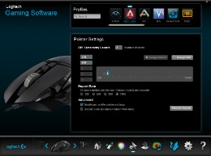

<h2>6.CODIGO QR</h2>

<p>Es un tipo de código de barras bidimensional que almacena información, como URLs, datos de contacto o enlaces a aplicaciones, en una cuadrícula de cuadrados. Este código es leído por la cámara de un teléfono inteligente, actuando como un enlace en blanco y negro que permite al usuario acceder al contenido de forma instantánea, mejorando la experiencia del usuario al agilizar procesos como el inicio de sesión, la descarga de apps o el pago de compras.</p>


<h2>7.KICK OFF</h2>

<p>Un "kick off" es la reunión formal inicial que marca el comienzo de un proyecto, reuniendo a todos los involucrados para establecer objetivos, aclarar el alcance, definir roles, y alinear expectativas sobre el cronograma y los entregables. Su propósito es asegurar que todos los participantes tengan una comprensión común del proyecto para iniciar la ejecución de manera efectiva y exitosa.</p>


<h2>8.STAKEHOLDER</h2>

<p>Un stakeholder es cualquier persona, grupo u organización que afecta o es afectado por el proyecto de software, ya sea directa o indirectamente. Esto incluye a usuarios finales, equipos de desarrollo, clientes, directivos, reguladores, e incluso proveedores. Es crucial identificar y gestionar las necesidades y expectativas de los stakeholders para asegurar el éxito del producto.</p>


<h2>9.VENTANA DE CONTEXTO EN IA</h2>

<p>Una ventana de contexto es la memoria de trabajo de un modelo de IA, es decir, la cantidad de informacion que puede recordar al generar una respuesta a tu solicitud.</p>


<h2>10.VPN</h2>

<p>Una VPN (Red Privada Virtual) crea un túnel cifrado entre tu dispositivo e Internet, ocultando tu dirección IP y encriptando tu actividad online para ofrecerte privacidad y seguridad. Esto te permite navegar de forma anónima, proteger tus datos confidenciales, evadir firewalls y acceder a contenido regional bloqueado.</p>


<h2>11.INGENIERIA SOCIAL</h2>

<p>Se llama ingeniería social a las diferentes técnicas de manipulación que usan los ciberdelincuentes para obtener información confidencial de los usuarios. Los ciberdelincuentes engañan a sus víctimas haciéndose pasar por otra persona.</p>

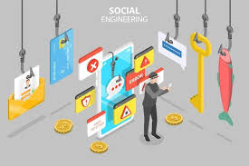

<h2>12.MARCA PERSONAL</h2>

<p>La marca personal en software es la forma única y distintiva en que un profesional del software proyecta sus habilidades, experiencias y valores para diferenciarse en el mercado laboral, posicionándose como un referente valioso para empleadores, clientes y colaboradores. En este sector, esto implica mostrar y promocionar activamente conocimientos de programación, participación en proyectos relevantes, y una presencia en línea coherente que demuestre autenticidad y credibilidad.</p>


<h2>13.HUELLA DIGITAL</h2>

<p>Una huella digital es el rastro único de datos que una persona o dispositivo genera al interactuar con un sistema digital, tanto de forma activa (publicaciones, correos) como pasiva (cookies, uso de apps). Esta huella digital puede incluir información como tu dirección IP, las páginas que visitas, los datos que compartes en redes sociales e incluso las configuraciones de tu dispositivo o navegador.</p>


<h2>14.PNL</h2>

<p>PNL se refiere al Procesamiento del Lenguaje Natural, una rama de la inteligencia artificial que se enfoca en la interacción entre las computadoras y el lenguaje humano. Permite a las máquinas comprender, interpretar y generar lenguaje natural (tanto escrito como hablado), siendo esencial para aplicaciones como chatbots, análisis de texto y asistentes de voz.</p>


<h2>15.SINTAXIS</h2>

<p>La sintaxis es el conjunto de reglas que definen la estructura correcta y el orden de los símbolos, palabras y puntuación en un lenguaje de programación, asegurando que el código sea válido y entendible por una computadora. Siguiendo estas reglas, los desarrolladores crean instrucciones que un compilador o intérprete puede procesar y ejecutar correctamente, evitando errores.</p>

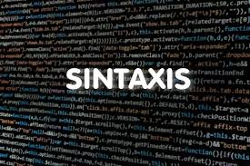

<h2>16.METADATO</h2>

<p>Un metadato es información que describe y da contexto a otros datos, actuando como una "ficha técnica" del software o sus componentes. Proporciona detalles sobre su origen, estructura, propósito, dependencias, o propiedades técnicas, y es crucial para organizar, buscar, y gestionar eficientemente el software y sus datos.</p>

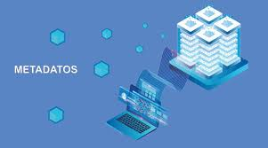

<h2>17.INDENTACION</h2>

<p>La indentación es la práctica de insertar un espacio en blanco al principio de una línea de código para organizar y estructurar visualmente el texto y mejorar su legibilidad. Aunque a menudo es una convención estilística que ayuda a los humanos a entender la jerarquía del código, en algunos lenguajes como Python, la indentación es fundamental para la sintaxis y define bloques de código.</p>

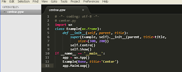

<h2>18.IDE</h2>

<p>Un IDE (Entorno de Desarrollo Integrado) es una aplicación de software que combina varias herramientas esenciales para desarrollar aplicaciones de manera eficiente, todo en una sola interfaz. Ofrece un editor de código con funciones como resaltado de sintaxis y autocompletado, un compilador para traducir el código, un depurador para encontrar errores, y herramientas para automatizar la construcción y gestión del proyecto.</p>

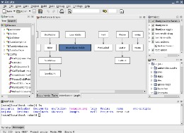

<h2>19.LLM</h2>

<p>Los modelos de lenguaje de gran tamaño, también conocidos como LLM, son modelos de aprendizaje profundo muy grandes que se preentrenan con grandes cantidades de datos. El transformador subyacente es un conjunto de redes neuronales que consta de un codificador y un decodificador con capacidades de autoatención.</p>


<h2>20.GUI</h2>

<p>GUI son las siglas de Graphical User Interface (Interfaz Gráfica de Usuario), que es un programa que permite a los usuarios interactuar con un ordenador o aplicación de forma visual, usando elementos como botones, iconos y menús, en lugar de tener que escribir comandos de texto. Las GUIs hacen que los programas sean más intuitivos y fáciles de usar para personas no técnicas, simplificando tareas y ofreciendo una experiencia más amigable.</p>

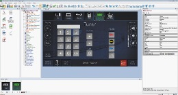

<h2>21.SHADOW</h2>

<p>Usualmente se refiere a Shadow IT o TI en la sombra, que es el uso de aplicaciones, hardware o servicios no autorizados por el departamento de TI de una organización. También puede referirse a la marca Shadow, un servicio de PC en la nube que permite jugar o trabajar desde cualquier dispositivo con Windows.</p>


<h2>22.COMPILAR</h2>

<p>Complilar es el proceso mediante el cual un programa llamado compilador traduce el código fuente escrito por un humano en un lenguaje de programación de alto nivel (como Java o C++) a lenguaje de máquina o un formato ejecutable que una computadora puede entender y ejecutar directamente. El resultado final de esta traducción suele ser un archivo ejecutable o código intermedio, lo que permite que el programa funcione en la plataforma de destino.</p>

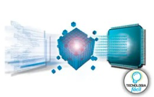

<h2>23.MOCKUP</h2>

<p>Un mockup es una representación visual estática de alta fidelidad que simula el aspecto final de un sitio web, aplicación o producto digital, incluyendo detalles como colores, tipografía e imágenes. A diferencia de un prototipo interactivo, el mockup no es funcional, pero permite a diseñadores y partes interesadas evaluar la apariencia visual, obtener retroalimentación temprana y realizar ajustes en el diseño antes de la implementación.</p>

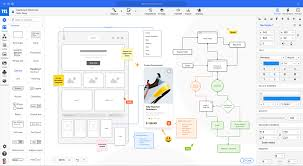

<h2>24.SCRIPT</h2>

<p>Un script es un conjunto de instrucciones o comandos escritos en un lenguaje de programación que se ejecuta directamente por un intérprete, sin necesidad de compilación previa. Se utiliza para automatizar tareas repetitivas, manipular datos, interactuar con el sistema operativo o el navegador web, y para probar software. A diferencia de un programa más grande y complejo, un script es generalmente más corto y se enfoca en una funcionalidad específica. </p>

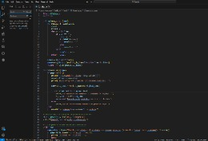

<h2>25.HEURISTICA</h2>

<p>El análisis heurístico estático implica examinar el código fuente de un programa y compararlo con el código fuente de virus conocidos que ya se han registrado en una base de datos.</p>

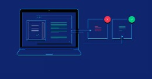

<h2>26.AVG</h2>

<p>AVG se refiere a una línea de productos de ciberseguridad, conocida principalmente por su software antivirus que protege contra virus, spyware y otras amenazas en dispositivos Windows, macOS y Android. También incluye otros programas de seguridad como VPN, optimización del sistema y navegadores seguros, desarrollados por la empresa AVG Technologies, ahora parte de Avast.</p>

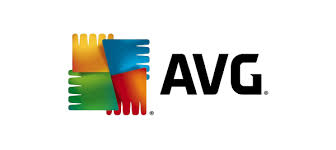

<h2>27.STACK OVERFLOW</h2>

<p>"Stack Overflow" tiene dos significados en el contexto del software: primero, la plataforma de preguntas y respuestas para desarrolladores donde se comparte y se aprende conocimiento de programación, y segundo, un error de programación que ocurre cuando el espacio de memoria asignado para la "pila" de funciones se desborda, usualmente debido a una recursión infinita.</p>

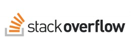

<h2>28.VISUAL STUDIO</h2>

<p>Visual Studio Code (VS Code) es un editor de código fuente gratuito, potente y de código abierto desarrollado por Microsoft, disponible para Windows, macOS y Linux. Permite escribir, depurar y probar código de manera eficiente para múltiples lenguajes de programación como JavaScript, Python y C++, y su funcionalidad puede extenderse enormemente mediante un amplio ecosistema de extensiones.</p>


<h2>29.ENDPOINT</h2>

<p>Un endpoint puede referirse a dos conceptos principales: un dispositivo físico (como una computadora o móvil) conectado a una red que sirve como punto de entrada y salida de datos, o a un punto de acceso a una API, que es una ubicación específica donde una aplicación puede interactuar con otra para solicitar o enviar información. La gestión de estos endpoints es crucial tanto para la seguridad, al proteger dispositivos contra amenazas, como para la funcionalidad, al permitir la comunicación entre sistemas a través de APIs.</p>

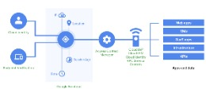

<h2>30.FASTAPI</h2>

<p>FastAPI es un framework web de Python de alto rendimiento utilizado para construir APIs (Interfaces de Programación de Aplicaciones) de manera rápida y eficiente. Se caracteriza por su velocidad, gracias a bibliotecas como Starlette y Pydantic, y por su uso de las sugerencias de tipo de Python para la validación automática de datos. Entre sus ventajas destacan la documentación interactiva automática (basada en OpenAPI), la reducción de errores en el código y un desarrollo rápido y sencillo.</p>


<h2>31.PARTICION DE DISCO DURO</h2>

<p>Una partición de disco duro es una división lógica de un disco físico en varias secciones independientes y separadas, que el sistema operativo trata como unidades de almacenamiento individuales. Esto permite organizar los archivos y programas en diferentes espacios, instalar múltiples sistemas operativos, mantener los datos personales separados del sistema operativo para mayor seguridad o hacer copias de respaldo.</p>

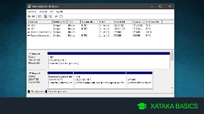

<h2>32.PARAMETROS</h2>

<p> Los parámetros son los valores que espera recibir la función. En un prototipo de función, los paréntesis que siguen al nombre de la función contienen una lista completa de los parámetros de la función y sus tipos.</p>

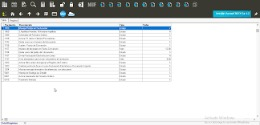

<p>33.CODIFICACION </p>

<h2>LA CODIFICACIÓN ES EL PROCESO DE ESCRIBIR INSTRUCCIONES (CÓDIGO) EN UN LENGUAJE DE PROGRAMACIÓN QUE UNA COMPUTADORA PUEDE ENTENDER Y EJECUTAR, PERMITIENDO CREAR SOFTWARE, APLICACIONES Y SITIOS WEB. SE TRATA DE UNA PARTE FUNDAMENTAL DE LA PROGRAMACIÓN QUE CONSISTE EN TRADUCIR EL LENGUAJE HUMANO A UN CÓDIGO QUE LA MÁQUINA PUEDA PROCESAR, DANDO VIDA A LAS FUNCIONALIDADES QUE USAMOS A DIARIO. </h2>

<h2>34.DISEÑO LOGICO</h2>

<p>Es la fase conceptual y detallada que define qué hará un sistema, sus requisitos funcionales y la estructura general de sus componentes, sin enfocarse en los detalles específicos de hardware o la tecnología (lenguaje de programación, base de datos) que se usará para implementarlo. Se centra en la organización de la información y la funcionalidad, utilizando un lenguaje que arquitectos y analistas de negocio pueden entender, y es un paso intermedio entre el diseño conceptual y el diseño físico del sistema.</p>


<h2>35.DISEÑO FISICO</h2>

<p>El diseño físico en software se refiere a los detalles técnicos y concretos de cómo se implementarán los componentes del sistema, traducido del diseño lógico a un entorno de hardware específico. Este proceso define las máquinas virtuales, el almacenamiento, las redes, las configuraciones de las bases de datos (como tablas, tipos de datos y restricciones), y las estructuras de acceso a datos para optimizar el rendimiento, la escalabilidad y la eficiencia en la implementación real del software.</p>


<h2>36.CLASE</h2>

<p>En programación, una clase es una plantilla o molde que define las características (atributos) y comportamientos (métodos) de los objetos que se crearán a partir de ella. Es un tipo de dato definido por el usuario que sirve para modelar entidades o conceptos, y a partir de la cual se pueden generar múltiples instancias o objetos, cada uno con sus propios valores para los atributos de la clase.</p>

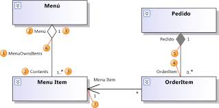

<h2>37.DEPURACION</h2>

<p>La depuración en software (debugging en inglés) es el proceso de identificar, analizar y corregir errores (también conocidos como bugs o fallos) y defectos en el código de un programa informático para asegurar que funcione correctamente y de manera eficiente. Implica revisar el código para comprender su flujo, aislar las partes problemáticas y realizar las modificaciones necesarias para solucionar el problema.</p>

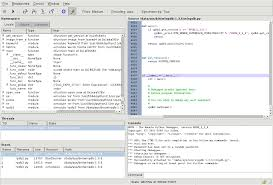

<h2>38.ERROR SINTACTICO</h2>

<p>Un error sintáctico en software es una infracción de las reglas gramaticales o estructurales de un lenguaje de programación, como olvidar un punto y coma, usar un comando mal escrito o cerrar incorrectamente una etiqueta, lo que impide que el compilador o intérprete pueda entender y ejecutar el código de manera correcta. Estos errores se detectan durante la fase de compilación o análisis y son similares a la mala gramática en un lenguaje natural, impidiendo la correcta comprensión del "mensaje" que se quiere transmitir.</p>


<h2>39.ERROR LOGICO</h2>

<p>Un error lógico en software es un defecto en el código que hace que un programa ejecute una acción incorrecta o produzca un resultado inesperado, a pesar de que el programa se ejecuta sin errores de sintaxis o de compilación. Estos errores suelen ser difíciles de encontrar porque el programa funciona, pero no como debería, debido a una lógica defectuosa, un algoritmo equivocado o suposiciones incorrectas por parte del desarrollador.</p>


<h2>40.PRUEBA UNITARIA</h2>

<p>Una prueba unitaria es una práctica en el desarrollo de software que consiste en probar las partes más pequeñas y aisladas de una aplicación (funciones, métodos o clases) para verificar que cada unidad funciona correctamente según lo previsto. Su objetivo principal es encontrar y corregir errores en etapas tempranas del desarrollo, lo que mejora la calidad y mantenibilidad del código y facilita la integración de los componentes individuales.</p>


<h2>41.CALIDAD DE SOFTWARE</h2>

<p>La calidad de software es el conjunto de características que permiten a un software cumplir con los requisitos del usuario y las especificaciones, funcionando de manera eficiente, confiable, segura y fácil de usar. Se trata de un concepto multidimensional que evalúa la capacidad del software para satisfacer expectativas, incluyendo aspectos como la fiabilidad, usabilidad, seguridad, eficiencia y mantenibilidad del código.</p>


<h2>42.MANTENIMIENTO CORRECTIVO</h2>

<p>El mantenimiento correctivo en software es la reparación de errores y fallos que ocurren en una aplicación después de su lanzamiento, con el objetivo de restaurar la funcionalidad normal del software. Este tipo de mantenimiento es de naturaleza reactiva, ya que se activa cuando el problema ya se ha presentado, ya sea porque los usuarios lo reportan o porque el propio equipo de desarrollo lo detecta durante pruebas. Su propósito es corregir defectos en el diseño, la lógica o el código del software para garantizar su buen funcionamiento.</p>


<h2>43.SCRUM</h2>

<p>Scrum es un marco de trabajo ágil que los equipos de software utilizan para desarrollar productos complejos de forma iterativa y colaborativa. Se basa en la autoorganización, la adaptación y la entrega continua de valor en ciclos cortos llamados sprints, utilizando roles específicos (Product Owner, Scrum Master, y Equipo de Desarrollo) y eventos (Planificación de Sprint, Reuniones Diarias, Revisión de Sprint, y Retrospectiva de Sprint).</p>

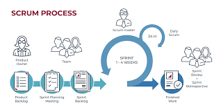

<h2>44.KANBAN</h2>

<p>Kanban es una metodología ágil que utiliza un tablero visual para gestionar el flujo de trabajo en el desarrollo de software, permitiendo a los equipos visualizar tareas, limitar el trabajo en progreso (WIP) y mejorar continuamente la eficiencia. Su objetivo es crear un flujo de trabajo transparente donde las tareas se mueven a través de columnas que representan las etapas del proceso, y se utilizan límites de WIP para evitar cuellos de botella y sobrecarga.</p>

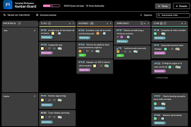

<h2>45.SPRINT</h2>

<p>En el desarrollo de software, un Sprint es un período de tiempo fijo y corto (generalmente de una a cuatro semanas) en el que un equipo de Scrum trabaja para completar un conjunto específico de tareas y entregar un incremento de producto potencialmente funcional. Este enfoque iterativo y ágil permite entregas de valor continuas, facilita la adaptación a los cambios, mejora la previsibilidad y fomenta la retroalimentación constante con los clientes y las partes interesadas.</p>

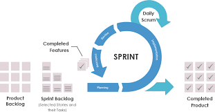

<h2>46.PRODUCT OWNER</h2>

<p>Un Product Owner (o Dueño de Producto) es una figura clave en los marcos de desarrollo ágil de software, especialmente en Scrum, cuya función principal es maximizar el valor del producto asegurando que cumpla con las necesidades del cliente y del negocio. Para lograrlo, el Product Owner gestiona el Product Backlog, que es un listado priorizado de todas las características y requisitos del producto, y actúa como el principal punto de contacto entre el equipo de desarrollo y las partes interesadas (stakeholders).</p>


<h2>47.SCRUM MASTER</h2>

<p>Un Scrum Master en el desarrollo de software es un facilitador y líder de servicio que guía al equipo en la aplicación de la metodología Scrum, una práctica ágil para la gestión de proyectos. Su función es optimizar el rendimiento del equipo, eliminar impedimentos, promover la colaboración y asegurar que se sigan los principios de Scrum para lograr entregas de alta calidad y eficientes.</p>


<h2>48.BLACKLOG DE SPRINT</h2>

<p>El Backlog de Sprint es una lista de tareas y elementos de trabajo (como historias de usuario o bugs) que un equipo de desarrollo se ha comprometido a completar durante un sprint específico (un ciclo corto y fijo de tiempo). Se crea durante la planificación del sprint y se basa en el backlog del producto. Este backlog es crucial para mantener al equipo enfocado, priorizar el trabajo y asegurar que se logre el objetivo del sprint, funcionando como un plan detallado para la iteración actual.</p>


<h2>49.DEVOPS</h2>

<p>DevOps es una cultura, un conjunto de prácticas y herramientas que unen los equipos de desarrollo de software y operaciones de TI para agilizar la entrega de aplicaciones y servicios de mayor calidad. Fomenta la colaboración, la automatización y los ciclos de retroalimentación para entregar valor más rápido a los clientes. Sus principios clave incluyen la automatización de tareas, la integración continua (CI), la entrega continua (CD), las pruebas automatizadas, el control de versiones y la infraestructura como código.</p>


<h2>50.INTEGRACION CONTINUA (CI)</h2>

<p>La Integración Continua (CI) es una práctica de desarrollo de software donde los desarrolladores integran sus cambios de código de forma frecuente en un repositorio central, y se ejecutan automáticamente compilaciones y pruebas automatizadas para verificar que el nuevo código es correcto. Su objetivo principal es detectar errores rápidamente, mejorar la calidad del software y agilizar la entrega de nuevas versiones, siendo un pilar clave en DevOps y las metodologías ágiles.</p>


<h2>51.REPOSITORIOS DE CODIGO</h2>

<p>Un repositorio de código es un almacén centralizado para el código fuente de un proyecto de software y otros recursos relacionados, como documentación y pruebas. Permite a los desarrolladores colaborar de manera eficiente, rastrear cambios en el código, mantener un historial de versiones y gestionar la integración de sus contribuciones en un proyecto común. Plataformas como GitHub, GitLab y Bitbucket son ejemplos de servicios que hospedan repositorios de código.</p>


<h2>52.BRANCH</h2>

<p>En desarrollo de software, un Branch (o rama) es una versión paralela y aislada del código fuente de un proyecto, creada en un sistema de control de versiones como Git. Permite a los desarrolladores trabajar en nuevas funcionalidades o corregir errores de forma segura, sin afectar la rama principal del proyecto, y luego fusionar sus cambios de vuelta una vez que están listos y estables.</p>


<h2>53.PULL REQUEST</h2>

<p>Un Pull Request (PR) es una solicitud para fusionar cambios de código de una rama a otra en un repositorio de Git, siendo una herramienta de comunicación y colaboración fundamental en el desarrollo de software. Los desarrolladores envían un PR para que el equipo pueda revisar, discutir y aprobar sus modificaciones antes de que se integren al código base principal, lo que mejora la calidad del código, detecta errores y fomenta el aprendizaje colectivo.</p>


<h2>54.BUG</h2>

<p>Un "bug" en software es un error o defecto en un programa que produce un resultado indeseado o incorrecto, llevando a un mal funcionamiento. Estos fallos pueden variar en su gravedad, desde causar simples molestias hasta comprometer la seguridad o el bienestar humano, y su detección y corrección son parte fundamental del proceso de desarrollo de software.</p>

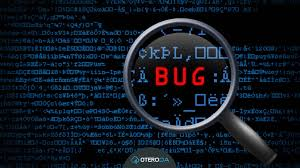

<h2>55.HOTFIX</h2>

<p>Un hotfix es una corrección de software rápida y específica que se aplica urgentemente a un producto ya en funcionamiento para resolver un problema crítico, como un error grave o una vulnerabilidad de seguridad. A diferencia de las actualizaciones regulares, que siguen un proceso de desarrollo completo, un hotfix se implementa de manera acelerada con la mínima interrupción posible para restaurar la estabilidad y funcionalidad del sistema.</p>


<h2>56.RELEASE</h2>

<p>En software, un release es una versión específica y completa de un programa o una actualización que ha sido probada y está lista para ser lanzada y utilizada por los usuarios finales. Un release contiene un conjunto de cambios, funciones nuevas o correcciones de errores que se empaquetan juntos para ser distribuidos, haciendo que el software sea público o esté disponible en un entorno de producción.</p>


<h2>57.PATCH</h2>

<p>Un parche de software es una actualización que se aplica a un programa o sistema operativo para corregir errores, vulnerabilidades de seguridad, o mejorar su rendimiento y funcionalidad. A diferencia de una actualización mayor, un parche suele ser un cambio más pequeño y enfocado en resolver problemas específicos, aunque puede incorporar funcionalidades nuevas.</p>

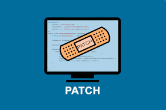

<h2>58.REFACTORIZACION</h2>

<p>La refactorización en software es una práctica que consiste en modificar la estructura interna de un código para mejorar su legibilidad, mantenibilidad y diseño, sin alterar su comportamiento externo. El objetivo es hacer el código más claro y fácil de entender, lo que facilita las futuras modificaciones, la corrección de errores y la adición de nuevas funcionalidades, resultando en un código más eficiente y con menos deuda técnica.</p>

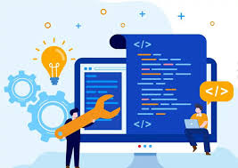

<h2>59.ARQUITECTURA EN CAPAS</h2>

<p>La arquitectura en capas es un patrón de diseño de software que organiza una aplicación en capas horizontales independientes, cada una con una responsabilidad específica y que se comunican entre sí. Este enfoque, también conocido como arquitectura n-capas, permite la modularidad, facilita el desarrollo y mantenimiento, y mejora la seguridad al aislar las funciones dentro de la aplicación.</p>


<h2>60.REST</h2>

<p>En programación, REST (Transferencia de Estado Representacional) es un estilo de arquitectura de software para construir servicios web y APIs que permiten la comunicación entre diferentes sistemas distribuidos, como aplicaciones web y móviles. Se basa en un conjunto de principios y reglas que usan el protocolo HTTP y sus métodos (GET, POST, PUT, DELETE) para gestionar datos y operaciones, devolviéndolos en formatos como JSON o XML, lo que permite la independencia de cliente-servidor, escalabilidad y neutralidad tecnológica.</p>

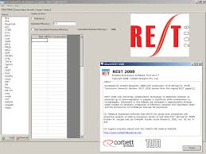

<h2>61.SOAP</h2>

<p>En programación, SOAP (Simple Object Access Protocol) es un protocolo estándar basado en XML que se utiliza para intercambiar información estructurada y permitir que diferentes aplicaciones se comuniquen de forma estandarizada, independientemente de la plataforma o el lenguaje de programación. Se usa principalmente en servicios web y está compuesto por elementos como el "Envelope", el "Header" (opcional) y el "Body" (necesario) para estructurar los mensajes.</p>

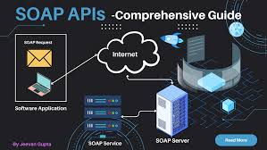

<h2>62.JSON</h2>

<p>JSON (JavaScript Object Notation) es un formato ligero, basado en texto, para el intercambio de datos, diseñado para ser fácilmente legible por humanos y fácilmente interpretable por máquinas, lo que lo hace ideal para la comunicación entre aplicaciones web y servidores, así como para el almacenamiento de datos en bases de datos NoSQL. A pesar de su nombre, es un formato independiente de cualquier lenguaje de programación y se utiliza para organizar datos estructurados en pares clave-valor y estructuras de datos como objetos y arreglos.</p>


<h2>63.XML</h2>

<p>En software, XML (Extensible Markup Language) es un lenguaje de marcado basado en texto que permite estructurar, almacenar y compartir datos de forma legible tanto para humanos como para máquinas. Su principal propósito es facilitar el intercambio de información entre diferentes sistemas informáticos, independientemente del sistema operativo o el lenguaje de programación que utilicen. A diferencia de HTML, que tiene un conjunto predefinido de etiquetas, XML es "extensible" porque permite a los desarrolladores crear sus propias etiquetas personalizadas para definir la estructura y el significado de sus datos.</p>

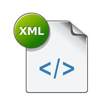

<h2>64.ACID</h2>

<p>ACID es un acrónimo en el campo de las bases de datos que representa las propiedades Atomicidad, Consistencia, Aislamiento y Durabilidad. Estas propiedades aseguran que las transacciones de la base de datos se procesen de manera fiable y precisa, manteniendo el estado de la base de datos válido incluso ante errores o interrupciones.</p>


<h2>65.CRUD</h2>

<p>En programación, CRUD es un acrónimo de Create (Crear), Read (Leer), Update (Actualizar) y Delete (Eliminar). Representan las cuatro operaciones básicas necesarias para gestionar información en una base de datos o sistema de almacenamiento de datos, permitiendo a los usuarios o aplicaciones agregar, consultar, modificar y eliminar datos. </p>


<h2>66.DEVSECOPS</h2>

<p>DevSecOps software es un marco cultural y técnico que integra la seguridad en todas las etapas del ciclo de vida de desarrollo de software (SDLC), desde la planificación hasta la operación, para crear aplicaciones más seguras de forma automática y ágil. Este enfoque democratiza la seguridad, convirtiéndola en una responsabilidad compartida entre desarrolladores, especialistas en seguridad y equipos de operaciones, y se logra mediante la automatización de pruebas de seguridad, la implementación de políticas como código y el uso de herramientas que escanean vulnerabilidades en cada fase del proceso.</p>

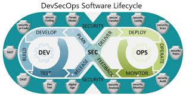

<h2>67.FRONTEND</h2>

<p>En programación, el frontend es la parte de una aplicación o sitio web con la que el usuario interactúa directamente, es decir, todo lo que se ve y con lo que se puede interactuar en la interfaz de usuario (UI). Se encarga de la presentación visual y la experiencia del usuario (UX), utilizando tecnologías como HTML para la estructura, CSS para el estilo y JavaScript para la interactividad.</p>


<h2>68.BACKEND</h2>

<p>En programación, el backend es la parte "detrás de escena" de una aplicación o sitio web, que no es visible para el usuario, pero es esencial para su funcionamiento. Se encarga de la lógica del servidor, el procesamiento de datos, la interacción con bases de datos y la seguridad de la información. El backend trabaja en conjunto con el frontend (la parte visible para el usuario) para crear una experiencia completa y funcional.</p>

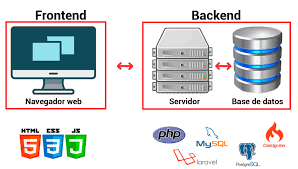

<h2>69.FULLSTACK</h2>

<p>En desarrollo de software, "Fullstack" (o "full-stack") se refiere a un profesional con la capacidad de trabajar tanto en el front-end (la parte visible con la que interactúa el usuario) como en el back-end (la lógica del servidor y las bases de datos) de una aplicación, permitiéndole supervisar el proceso completo de desarrollo de una aplicación web o móvil.</p>

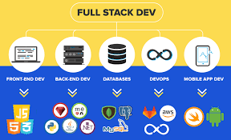

<h2>70.PROTOTIPO</h2>

<h2>EN SOFTWARE, UN PROTOTIPO ES UNA VERSIÓN PRELIMINAR Y FUNCIONAL DE UNA APLICACIÓN O SISTEMA, CREADA EN LAS ETAPAS INICIALES DEL DESARROLLO PARA PROBAR IDEAS, RECOPILAR RETROALIMENTACIÓN DE LOS USUARIOS Y VALIDAR LA FUNCIONALIDAD DEL PRODUCTO ANTES DE CONSTRUIR LA VERSIÓN FINAL. PERMITE A LOS DESARROLLADORES E INTERESADOS VISUALIZAR EL PRODUCTO, REFINAR REQUISITOS, IDENTIFICAR PROBLEMAS Y MEJORAR LA COMUNICACIÓN, REDUCIENDO COSTOS AL CORREGIR ERRORES DE FORMA TEMPRANA.</h2>


<h2>71.ITERACION</h2>

<p>En software, una iteración es la ejecución repetida de un conjunto de operaciones o un ciclo de trabajo para refinar y mejorar gradualmente un producto, servicio o proceso. Implica crear, probar y revisar versiones de un diseño o funcionalidad en ciclos, utilizando la retroalimentación para realizar ajustes incrementales hasta alcanzar el resultado deseado.</p>

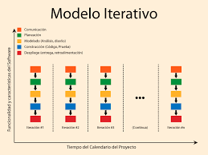

<h2>72.CONTENEDOR</h2>

<p>En software, un contenedor es un paquete autónomo y ejecutable que incluye el código de una aplicación, sus dependencias, bibliotecas, archivos de configuración y el entorno de ejecución necesario para que funcione, todo en una sola unidad ligera. Esta tecnología permite que las aplicaciones se ejecuten de manera consistente en cualquier entorno (desarrollo, pruebas, producción, nube o local), ofreciendo portabilidad, aislamiento, desarrollo ágil y mayor eficiencia al compartir el sistema operativo host.</p>


<h2>73.VIRTUALIZACION</h2>

<p>La virtualización en software es una tecnología que crea versiones simuladas de recursos de hardware físico, como servidores, sistemas operativos y dispositivos de almacenamiento, permitiendo que múltiples entornos virtuales (máquinas virtuales) se ejecuten de manera simultánea en una única máquina física. Un software llamado hipervisor actúa como una capa de software que se conecta al hardware y administra la creación y asignación de recursos para cada entorno virtual, haciendo un uso más eficiente del hardware y creando sistemas separados, seguros y aislados.</p>


<h2>74.HIPERVISOR</h2>

<p>Un hipervisor es una capa de software que permite ejecutar múltiples máquinas virtuales (VM) en una única máquina física, gestionando y asignando los recursos de hardware (CPU, memoria, almacenamiento) a cada VM de manera eficiente. También conocido como monitor de máquina virtual (VMM), el hipervisor abstrae el hardware, separa las VM entre sí y es la tecnología fundamental para la virtualización, la computación en la nube y la optimización de la infraestructura de TI.</p>


<h2>75.CIFRADO</h2>

<p>El cifrado en software es el proceso de codificar datos para convertirlos de un formato legible (texto plano) a un formato ilegible (texto cifrado) utilizando algoritmos matemáticos y una clave secreta, con el fin de proteger la información sensible contra accesos no autorizados. Solo las personas que poseen la clave de descifrado correcta pueden revertir el proceso y acceder a la información original. </p>


<h2>76.HASHING</h2>

<p>En programación, un hash es una cadena de caracteres alfanuméricos de longitud fija que se genera a partir de un algoritmo matemático aplicado a un dato de entrada, creando así una "huella digital" o "firma" única de ese dato. El hash se utiliza para crear tablas hash, una estructura de datos que almacena pares (clave, valor) para una búsqueda eficiente, o en aplicaciones de seguridad como la verificación de contraseñas, la detección de malware y las firmas digitales.</p>

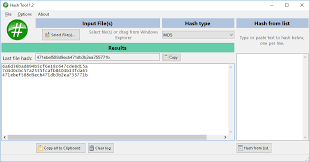

<h2>77.OAUTH</h2>

<p>OAuth (Open Authorization) es un estándar abierto de autorización que permite a las aplicaciones acceder a recursos protegidos de un usuario (como su información de perfil, fotos, etc.) sin necesidad de compartir sus contraseñas. En lugar de usar credenciales reales, una aplicación recibe un "token de acceso" temporal de un servicio de autorización (como Google o Facebook), con el permiso del usuario, para interactuar con otros servicios en su nombre.</p>

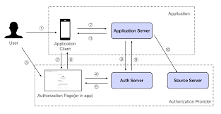

<h2>78.FIREWALL</h2>

<p>Un firewall en software es un programa instalado en un dispositivo, como una computadora, que actúa como un guardián para monitorear y controlar el tráfico de red entrante y saliente, utilizando un conjunto de reglas predefinidas para permitir o bloquear datos maliciosos y proteger el dispositivo contra accesos no autorizados y amenazas de seguridad. A diferencia de un firewall de hardware, un firewall de software se enfoca en la protección de un dispositivo individual, mientras que el de hardware protege una red completa. </p>

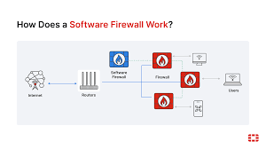

<h2>79.PENTESTING</h2>

<p>El pentesting en software (pruebas de penetración) es una práctica de seguridad que simula ataques reales para identificar y explotar vulnerabilidades en una aplicación o sistema de software, con el fin de mejorar su seguridad antes de que un ciberatacante lo haga. Un experto, llamado pentester, busca y documenta estas fallas para que la organización pueda repararlas y fortalecer sus defensas. </p>

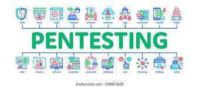

<h2>80.PKI</h2>

<p>Visión general creada por IA En el ámbito del software, PKI (Infraestructura de Clave Pública) es un sistema de hardware, software, políticas y procedimientos para crear, administrar, distribuir, usar, almacenar y revocar certificados digitales, que enlazan una entidad (usuario, dispositivo o servicio) con su clave pública, permitiendo así comunicaciones seguras mediante la criptografía asimétrica. La PKI es fundamental para asegurar la confidencialidad, integridad y autenticidad de datos y transacciones digitales, sustentando tecnologías como los certificados SSL/TLS para sitios web, firmas digitales y la seguridad en redes VPN.</p>


<h2>81.SSL/TLS</h2>

<p>SSL/TLS en software son protocolos (Secure Sockets Layer / Transport Layer Security) que establecen conexiones cifradas y seguras entre dos sistemas (como un navegador y un servidor web), protegiendo los datos en tránsito de intercepciones o alteraciones. Utilizan certificados digitales para verificar la identidad del servidor y, durante el proceso de "apretón de manos", establecen un canal de comunicación cifrado usando una clave de sesión.</p>

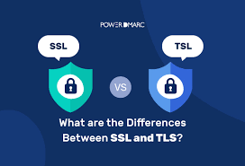

<h2>82.HTTPS</h2>

<p>HTTPS (Protocolo de transferencia de hipertexto seguro) es la versión segura de HTTP, el protocolo que se usa para enviar datos entre tu navegador y un sitio web, que al usar SSL/TLS encripta la comunicación, protegiendo la información sensible de intrusos y garantizando la identidad del sitio web. La "S" en HTTPS indica que una conexión es segura, lo cual se puede verificar con un icono de candado en la barra de direcciones del navegador y es esencial para sitios que manejan datos confidenciales, como los de banca o correo electrónico.</p>


<h2>83.CSRF</h2>

<p>CSRF (Falsificación de Solicitud entre Sitios) es un tipo de ciberataque que engaña a los usuarios autenticados en una aplicación web para que realicen acciones no deseadas sin su conocimiento ni consentimiento, aprovechando la confianza del sitio web en la sesión del usuario. Los atacantes logran esto incitando a la víctima a visitar un sitio malicioso o hacer clic en un enlace, lo que desencadena una solicitud no autorizada al sitio vulnerable en nombre del usuario, pudiendo resultar en cambios de contraseña, transferencias de fondos o modificación de datos.</p>


<h2>84.BUG BOUNTY</h2>

<p>Un Bug Bounty, o programa de recompensas por errores, es una iniciativa de seguridad donde una organización paga a hackers éticos (de sombrero blanco) por encontrar y reportar vulnerabilidades en sus sistemas de software, aplicaciones o infraestructura, fortaleciendo así su postura de ciberseguridad y previniendo brechas de seguridad antes de que sean explotadas por atacantes maliciosos.</p>


<h2>85.OWASP</h2>

<p>OWASP (Proyecto Abierto de Seguridad de Aplicaciones Web) es una organización sin fines de lucro que se dedica a mejorar la seguridad del software, especialmente de las aplicaciones web y API, al ofrecer recursos, herramientas, proyectos y guías de buenas prácticas de forma gratuita y accesible para la comunidad global de desarrolladores y profesionales de seguridad.</p>


<h2>86.CQRS</h2>

<p>CQRS (Segregación de responsabilidades de consultas y comandos) es un patrón arquitectónico que separa las operaciones de lectura (consultas) de las operaciones de escritura (comandos) en una aplicación. Este patrón permite optimizar cada modelo de forma independiente, mejorando la escalabilidad, el rendimiento y la seguridad. Por ejemplo, se pueden usar diferentes almacenes de datos o modelos para consultas y comandos, lo que es útil en sistemas complejos o con reglas de negocio cambiantes.</p>

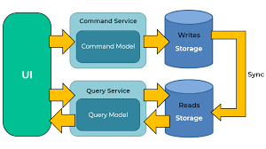

<h2>87.EVENT SOURCING </h2>

<p>Event Sourcing es un patrón de arquitectura de software que, en lugar de almacenar solo el estado actual de una aplicación, registra cada cambio como un evento inmutable y secuencial en un almacén de solo anexar. Este enfoque proporciona un historial completo de todos los eventos que han ocurrido, lo que facilita la auditoría, la trazabilidad, la depuración y la reconstrucción del estado del sistema en cualquier punto del tiempo.</p>


<h2>88.BOUNDED CONTEXT</h2>

<p>Un Bounded Context (Contexto Delimitado) es un área específica dentro de un sistema de software y un dominio empresarial donde un modelo de dominio, un lenguaje y sus reglas son consistentes, claros y sin ambigüedad. Sirve como un límite explícito que encapsula un subdominio específico, manejando sus propios datos, lógica y componentes de software de manera autónoma. Esta división permite descomponer sistemas complejos en partes manejables, promoviendo el uso de un lenguaje de dominio común y coherente, la independencia de equipos de desarrollo y una mejor integración con arquitecturas como los microservicios.</p>


<h2>89.VALUE OBJECT</h2>

<p>Un Value Object es un objeto de software inmutable que representa un valor específico sin una identidad propia, es decir, se define por su estado y no por un identificador único. A diferencia de las Entidades, que tienen un ID y un ciclo de vida, dos Value Objects se consideran iguales si todos sus atributos son idénticos. Son ideales para modelar conceptos como dinero, fechas, direcciones o rangos, y al ser inmutables, mejoran la legibilidad, la mantenibilidad y la previsibilidad del código.</p>


<h2>90.ENTITY (DDD)</h2>

<p>En DDD (Diseño Guiado por el Dominio), una Entity es un objeto del dominio que tiene una identidad continua en el tiempo y es distinguible por esa identidad única, en lugar de por sus atributos. Por ejemplo, un cliente con su ID único es una Entity, ya que su identidad permanece la misma aunque cambien sus datos (dirección, teléfono, etc.). Las Entities son fundamentales para modelar la lógica de negocio en sistemas complejos, garantizando la consistencia y representando conceptos clave del mundo real como clientes, productos o usuarios.</p>


<h2>91.AGGREGATE ROOT</h2>

<p>Un "Aggregate Root" (Raíz Agregada) en el ámbito del diseño de software, específicamente en el Diseño Dirigido por Dominios (DDD), es la entidad principal dentro de un agregado que actúa como el único punto de entrada para interactuar con ese conjunto de objetos relacionados. Su función principal es mantener la integridad y la consistencia del agregado, asegurando que todas las reglas de negocio se cumplan y que los cambios se apliquen de forma atómica.</p>


<h2>92.REPOSITORY PATTERN</h2>

<p>El patrón Repository es un patrón de diseño de software que actúa como una capa de abstracción para el acceso a datos, mediando entre la lógica de negocio y las fuentes de datos como bases de datos o APIs. Su propósito es aislar la complejidad del acceso a datos, ofreciendo una interfaz coherente que oculta los detalles de implementación de la fuente de datos, lo que mejora la mantenibilidad, la testabilidad y la flexibilidad del código.</p>


<h2>93.FACTORY PATTERN</h2>

<p>El patrón Factory (o Método Fábrica) es un patrón de diseño creacional que encapsula la lógica de creación de objetos, proporcionando una interfaz para crear objetos en una superclase pero permitiendo a las subclases elegir qué objetos concretos crear. Esto desacopla al cliente del código que utiliza los objetos, haciendo el sistema más flexible, escalable y fácil de mantener, ya que el cliente no necesita conocer los detalles de las clases concretas a instanciar.</p>


<h2>94.MCV (MODELO-VISTA-CONTROLADOR)</h2>

<p>MVC (Modelo-Vista-Controlador) es un patrón de arquitectura de software que organiza una aplicación dividiéndola en tres componentes interconectados: el Modelo (maneja los datos y la lógica de negocio), la Vista (se encarga de la interfaz de usuario) y el Controlador (gestiona la interacción entre el Modelo y la Vista, y enruta las acciones). Este patrón promueve la separación de responsabilidades, lo que mejora la mantenibilidad, la reutilización del código y la división del trabajo en el desarrollo de aplicaciones.</p>

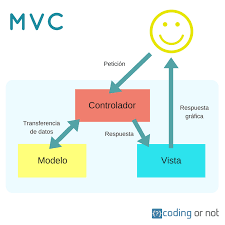

<h2>95.MVVM (MODELO-VISTA-VIEWMODEL)</h2>

<p>MVVM (Modelo-Vista-ViewModel) es un patrón de arquitectura de software que separa la interfaz de usuario (UI) de la lógica de negocio y de presentación de una aplicación. Está compuesto por tres partes: el Modelo, que maneja los datos y la lógica de negocio; la Vista, que se encarga de la interfaz de usuario; y el ViewModel, que actúa como intermediario, exponiendo los datos del Modelo a la Vista y manejando la lógica de presentación. El objetivo principal de MVVM es mejorar la mantenibilidad, la testeabilidad y la colaboración entre los desarrolladores.</p>

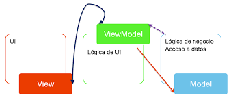

<h2>96.TEST-DRIVEN DEVELOPMENT (TDD)</h2>

<p>El Test-Driven Development (TDD), o Desarrollo Guiado por Pruebas, es una metodología de desarrollo de software que consiste en escribir pruebas unitarias automatizadas antes de escribir el código de producción, seguido por la escritura del código necesario para hacer pasar la prueba, y finalmente, la refactorización del código para mejorar su calidad sin cambiar su funcionalidad. Este ciclo repetitivo "Rojo-Verde-Refactor" asegura la creación de código limpio, robusto y mantenible, reduciendo errores y mejorando la calidad general del software.</p>


<h2>97.BDD (BEHAVIOR-DRIVEN DEVELOPMENT)</h2>

<p>El Desarrollo Guiado por Comportamiento (BDD) es una metodología ágil de desarrollo de software que se enfoca en la colaboración entre equipos técnicos y de negocio para definir y luego desarrollar el comportamiento esperado de una aplicación. Utiliza un lenguaje natural, como el formato Given-When-Then (GWT) de Gherkin, para describir escenarios de uso y verificar que el software funcione como el usuario espera. Sus beneficios incluyen una mejor comunicación, una mayor alineación del equipo y la creación de documentación ejecutable que sirve como especificaciones y pruebas.</p>


<h2>98.ATDD (ACCEPTANCE TEST DRIVEN DEVELOPMENT) </h2>

<p>ATDD (Desarrollo Impulsado por Pruebas de Aceptación) es una metodología ágil de desarrollo de software que enfatiza la colaboración entre clientes, desarrolladores y evaluadores para definir requisitos y crear pruebas automatizadas desde el principio del proyecto. El objetivo es asegurar que el software final cumpla con las expectativas del negocio y del usuario al crear los criterios de aceptación antes de escribir el código, lo que reduce la ambigüedad y mejora la calidad del producto.</p>

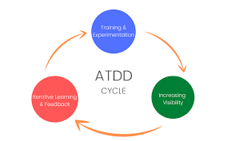

<h2>99.MOCK</h2>

<p>Un "mock" en el desarrollo de software es un objeto o componente simulado que se utiliza en las pruebas para reemplazar una dependencia real (como una base de datos o una API) y permitir que un componente específico del software sea probado de forma aislada. Los mocks son útiles porque permiten a los desarrolladores verificar el comportamiento del código sin depender de sistemas externos, agilizando las pruebas, mejorando su fiabilidad y aislando la lógica que se está probando.</p>


<h2>100.STUB</h2>

<p>Un stub es un pequeño fragmento de código en desarrollo de software que funciona como un sustituto temporal o simplificado de otro componente o funcionalidad, especialmente durante las pruebas. Su propósito es simular el comportamiento de una dependencia para que el código bajo prueba pueda ser aislado y probado de manera consistente, proporcionando respuestas predefinidas sin ejecutar la lógica real del componente original. Los stubs se utilizan cuando el componente real no está disponible o aún no se ha desarrollado, permitiendo a los desarrolladores verificar el funcionamiento de su propio código.</p>

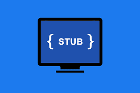

<h2>101.SPYWARE</h2>

<p>El spyware, o programa espía, es un tipo de malware que recopila información de un dispositivo (como un ordenador o teléfono) sin el consentimiento del usuario y la transmite a un tercero. Este software malicioso puede violar la privacidad, comprometer la seguridad del dispositivo y es utilizado para fines como la vigilancia, el robo de información financiera o comercial, o para espiar la actividad en línea.</p>

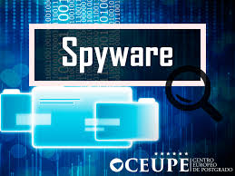

<h2>102.FAKE</h2>

<p>El término "Fake Software" (software falso o engañoso) se refiere a programas que parecen legítimos pero que en realidad son maliciosos o engañosos. Estos pueden infectar dispositivos con malware, robar información personal o financiera, mostrar anuncios no deseados, o realizar otras actividades dañinas. Un ejemplo común son las aplicaciones falsas que imitan iconos y nombres de aplicaciones populares para engañar a los usuarios y que las descarguen.</p>


<h2>103.CARGA DE PRUEBAS</h2>

<p>Las pruebas de carga en software simulan el uso real o anticipado de un sistema para verificar su rendimiento, estabilidad y escalabilidad bajo cargas esperadas e inesperadas, identificando cuellos de botella y puntos de ruptura para asegurar una buena experiencia de usuario y evitar fallos en el lanzamiento. Se miden métricas como tiempos de respuesta y tasas de rendimiento para comprender cómo el sistema se comporta al aumentar el número de usuarios o transacciones.</p>


<h2>104.PRUEBA DE ESTRES</h2>

<p>Las pruebas de estrés de software son un tipo de prueba que evalúa la estabilidad y robustez de un sistema bajo condiciones extremas, como un número de usuarios muy elevado, un volumen de datos excesivo o picos de tráfico inesperados, para determinar su punto de ruptura, identificar cuellos de botella y asegurar un rendimiento fiable en situaciones de alta demanda.</p>


<h2>105.PRUEBA ALFA</h2>

<p>La prueba alfa (o alpha testing) es una etapa temprana de prueba de software que se realiza de forma interna por la organización desarrolladora, utilizando un grupo restringido de evaluadores (a menudo empleados) para identificar errores y problemas de usabilidad y funcionalidad en un entorno controlado, antes de que el producto sea lanzado al público general o a los usuarios finales. Su objetivo principal es detectar y corregir fallos graves, recopilar retroalimentación valiosa y asegurar la estabilidad y calidad del producto antes de pasar a la fase de pruebas beta.</p>


<h2>106.PIPELINE DE DESPLIEGUE</h2>

<p>Un pipeline CI/CD es un conjunto de pasos automatizados que se utilizan en el desarrollo de software para llevar el código desde su creación hasta su despliegue en producción. Se compone de tres fases clave: la Integración Continua (CI), la Entrega Continua (CD) y el Despliegue Continuo (CD).</p>


<h2>107.ORQUESTACION</h2>

<p>La orquestación de software es el proceso de coordinar, gestionar e integrar múltiples sistemas, aplicaciones y servicios para automatizar y ejecutar un flujo de trabajo o proceso complejo. Su objetivo es centralizar la gestión de la integración, desvincular aplicaciones entre sí y optimizar el uso de recursos, como en el caso de la orquestación de contenedores que automatiza la implementación y administración de aplicaciones a gran escala.</p>


<h2>108.CLUSTER</h2>

<p>Un "cluster" es un grupo de servidores o computadoras interconectadas que trabajan en conjunto como un solo sistema para aumentar la potencia computacional, la disponibilidad y el equilibrio de carga de trabajo. Este sistema puede usarse para ejecutar software de alto rendimiento, como en la nube, la IA o el análisis de datos masivos, a través de un conjunto de recursos que se administran de forma unificada.</p>

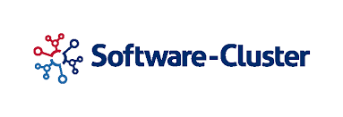

<h2>109.REPLICASET</h2>

<p>Un ReplicaSet es un objeto dentro de Kubernetes que asegura que un número específico y estable de réplicas (copias) de un pod esté siempre ejecutándose en un clúster, garantizando así la alta disponibilidad de una aplicación mediante la auto-reparación de fallos y el escalado automático. No se suele usar directamente, sino que es gestionado por otros objetos como las Deployments, que proporcionan funcionalidades más avanzadas para la gestión de aplicaciones.</p>

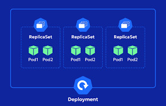

<h2>110.HELM</h2>

<p>Helm es un gestor de paquetes de código abierto para Kubernetes que facilita la definición, instalación y actualización de aplicaciones complejas al empaquetarlas en un solo recurso reutilizable llamado gráfico de Helm. Funciona de manera similar a administradores de paquetes de sistemas operativos como APT o Yum, permitiendo automatizar la gestión de la configuración y dependencias de las aplicaciones, simplificando la implementación y la escalabilidad en diversos entornos.</p>


<h2>111.TERRAFORM</h2>

<p>Terraform es una herramienta de código abierto y Infraestructura como Código (IaC) creada por HashiCorp que permite definir, provisionar, modificar y versionar infraestructura de forma automática y segura en diferentes entornos en la nube y locales. Utiliza archivos de configuración escritos en su propio lenguaje declarativo, el HCL (HashiCorp Configuration Language), para describir el estado deseado de la infraestructura, facilitando la automatización del ciclo de vida completo de los recursos.</p>


<h2>112.ANSIBLE</h2>

<p>Ansible es una plataforma de automatización de TI de código abierto que permite automatizar el aprovisionamiento, la configuración, la implementación de software y la orquestación de infraestructuras complejas sin la necesidad de agentes en los sistemas administrados. Utiliza un lenguaje declarativo y fácil de entender (YAML) para escribir "playbooks" que definen el estado deseado de los sistemas, logrando así tareas repetitivas, mejoras en la escalabilidad y mayor eficiencia en entornos de TI.</p>

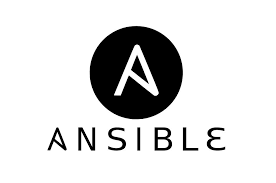

<h2>113.CHEF</h2>

<p>Chef es una plataforma de automatización para la gestión de configuración y la infraestructura como código (IaC) que permite definir y administrar la infraestructura de servidores físicos, virtuales y en la nube usando código. Utilizando un lenguaje de programación basado en Ruby, Chef permite a los equipos de DevOps automatizar el despliegue, la configuración y la gestión de sistemas, aplicaciones y servicios, mejorando la eficiencia, la escalabilidad y la fiabilidad de la infraestructura de TI.</p>

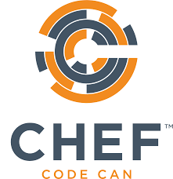

<h2>114.PUPPET</h2>

<p>Puppet es un software de gestión de configuración y automatización de infraestructura que permite a los administradores describir el estado deseado de sus sistemas de manera declarativa. Utilizando su propio lenguaje (Puppet DSL), los usuarios definen cómo deben estar los servidores, y Puppet automatiza el proceso de llevar los sistemas a ese estado y mantenerlo de forma consistente en entornos a gran escala.</p>

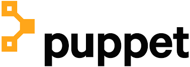

<h2>115.API GATEWAY</h2>

<p>Un API Gateway es un software que funciona como un punto de entrada único (una "puerta de enlace") para las aplicaciones y clientes, enrutando las solicitudes a los servicios backend apropiados. Sus funciones principales incluyen la autenticación, autorización, balanceo de carga, monitorización y limitación de peticiones, actuando como un intermediario que simplifica y asegura la comunicación entre aplicaciones que acceden a datos, lógica de negocio o funcionalidad de los servicios de backend.</p>


<h2>116.SERVICE MESH</h2>

<p>Un Service Mesh (o malla de servicios) es una capa de infraestructura dedicada que simplifica y hace más confiable la comunicación entre los microservicios de una aplicación, añadiendo características de seguridad, observabilidad y gestión del tráfico sin modificar el código de la aplicación. Funciona mediante la integración de "proxies sidecar" junto a cada servicio, los cuales forman una red y son gestionados por un "plano de control" que centraliza la configuración y el monitoreo.</p>


<h2>117.GRPC</h2>

<p>gRPC es un marco de trabajo universal, de código abierto y de alto rendimiento para LLamadas a Procedimientos Remotos (RPC), desarrollado por Google. Permite que una aplicación cliente invoque métodos de una aplicación servidora como si fueran objetos locales, facilitando la creación de servicios y aplicaciones distribuidas. Utiliza HTTP/2 como protocolo de transporte y búferes de protocolo (Protobuf) para la serialización de datos, lo que resulta en comunicación eficiente, de baja latencia, especialmente adecuada para arquitecturas de microservicios, escenarios de alto rendimiento y comunicación en tiempo real.</p>


<h2>118.GRAPHQL</h2>

<p>GraphQL es un lenguaje de consulta de API de código abierto y un entorno de ejecución de servidor que permite a los clientes solicitar y obtener exactamente los datos que necesitan, evitando la sobrecarga de información que puede ocurrir con las arquitecturas REST. Permite a los desarrolladores acceder a múltiples fuentes de datos en una sola solicitud, simplificando el desarrollo de interfaces de usuario y haciendo que las APIs sean más flexibles y eficientes.</p>


<h2>119.WEBSOCKET</h2>

<p>WebSocket software es un protocolo de comunicación y la tecnología asociada que permite la interacción bidireccional y persistente entre un cliente y un servidor a través de una única conexión, a diferencia del modelo de solicitud-respuesta del HTTP. El software WebSocket facilita el desarrollo de aplicaciones en tiempo real como chats, juegos multijugador, notificaciones push y la edición colaborativa de documentos, ya que puede enviar y recibir datos continuamente sin necesidad de establecer y cerrar conexiones repetidamente.</p>

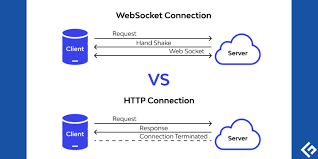

<h2>120.POLLING</h2>

<p>Polling o sondeo en computación hace referencia a una operación de consulta constante, generalmente hacia un dispositivo de hardware, para crear una actividad sincrónica sin el uso de interrupciones, aunque también puede suceder lo mismo para recursos de software.</p>

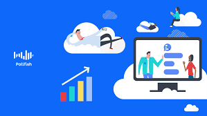

<h2>121.LONG POLLING</h2>

<p>El software con "Long Polling" es una técnica de comunicación entre un cliente y un servidor donde el cliente envía una solicitud al servidor, y el servidor mantiene esa solicitud abierta hasta que tenga nuevos datos para enviar o se agote un tiempo de espera. Una vez que el servidor envía una respuesta, el cliente inmediatamente envía otra solicitud, repitiendo el ciclo para obtener actualizaciones, lo que reduce las transferencias de datos y la carga del servidor en comparación con el sondeo tradicional.</p>


<h2>122.SERVER-SENT EVENRS (SSE)</h2>

<p>Server-Sent Events (SSE) es un estándar web que permite a los servidores enviar actualizaciones automáticas de datos en tiempo real a un cliente a través de una única conexión HTTP. Es una tecnología de comunicación unidireccional del servidor al cliente, a diferencia de los WebSockets, y se implementa mediante una API de JavaScript, la API EventSource. SSE es ideal para aplicaciones que necesitan recibir flujos de datos continuos, como notificaciones de redes sociales, actualizaciones de noticias, precios de acciones o datos de paneles de monitoreo.</p>

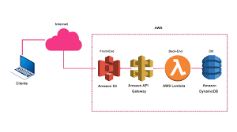

<h2>123.EVENT-DRIVEN ARCHITECTURE</h2>

<p>Una arquitectura de software basada en eventos (EDA) es un modelo de diseño que permite que los componentes de un sistema se comuniquen entre sí de forma asíncrona a través de eventos, que son cambios de estado o acciones significativas como una transacción o un evento de carrito de compras. Las aplicaciones EDA detectan estos eventos y activan servicios o componentes desacoplados para que reaccionen y procesen la información en tiempo real, promoviendo la agilidad, la escalabilidad y la flexibilidad en los sistemas.</p>


<h2>124.MESSAGE QUEUE</h2>

<p>El software de colas de mensajes (Message Queue) es un tipo de middleware que permite a diferentes aplicaciones o servicios comunicarse de manera asíncrona y desacoplada, actuando como un "búfer" temporal donde los mensajes se almacenan hasta que el receptor esté listo para procesarlos. Esto garantiza la comunicación fiable, la escalabilidad y la tolerancia a fallos, ya que los componentes no necesitan estar disponibles simultáneamente para intercambiar información.</p>


<h2>125.KAFKA</h2>

<p>Apache Kafka es una plataforma de transmisión de eventos de código abierto y distribuida que permite recopilar, procesar y almacenar flujos de datos en tiempo real de manera escalable y confiable. Funciona como un sistema de mensajería basado en el modelo de publicador-suscriptor, donde las aplicaciones publican datos (eventos) en tópicos y otras aplicaciones se suscriben a esos tópicos para consumir los datos. Kafka es ideal para gestionar grandes volúmenes de datos de múltiples fuentes y es muy utilizado en casos de uso como el análisis de registros, monitoreo de comportamiento de clientes, y procesamiento de transacciones en tiempo real.</p>


<h2>126.RABBITMQ</h2>

<p>RabbitMQ es un software de mensajería de código abierto que actúa como un intermediario (o broker) de mensajes entre aplicaciones o servicios. Permite la comunicación asíncrona y desacoplada al poner mensajes en colas para su procesamiento. Implementa protocolos como AMQP, STOMP, y MQTT para gestionar el enrutamiento y la entrega de datos, lo que facilita la creación de arquitecturas de microservicios y sistemas distribuidos escalables.</p>


<h2>127.ACTIVEMQ</h2>

<p>ActiveMQ es un software de código abierto que actúa como un intermediario de mensajería (middleware orientado a mensajes), escrito en Java y desarrollado por la Apache Software Foundation. Permite la comunicación asíncrona entre diferentes aplicaciones, desacoplando a los productores (quienes envían mensajes) de los consumidores (quienes los reciben). Implementa estándares como la API de Java Message Service (JMS) y otros protocolos, ofreciendo funcionalidades empresariales como persistencia de mensajes, agrupación en clústeres para alta disponibilidad y soporta diversos patrones de mensajería, como punto a punto y publicación-suscripción.</p>


<h2>128.AZURE SERVICE BUS</h2>

<p>Azure Service Bus es un servicio de mensajería asincrónica en la nube que actúa como un agente de mensajes empresarial para permitir la comunicación y el intercambio de datos entre diferentes aplicaciones y servicios de forma desacoplada y confiable. Utiliza colas (para punto a punto) y temas (para publicación/suscripción) que almacenan mensajes hasta que los consumidores están listos para procesarlos, proporcionando características como equilibrio de carga, enrutamiento seguro, coordinación transaccional y alta disponibilidad, sin que el productor y el consumidor necesiten estar conectados al mismo tiempo.</p>


<h2>129.AMAZON SQS</h2>

<p>Amazon SQS (Simple Queue Service) es un servicio de mensajería totalmente administrado que permite a las aplicaciones desacoplarse, escalar y comunicarse entre sí de manera asíncrona. Funciona como una cola de mensajes donde los componentes de software (productores) envían mensajes, los cuales son almacenados de forma segura hasta que otros componentes (consumidores) los reciben y procesan. SQS se utiliza para construir sistemas distribuidos confiables y escalables, eliminando la complejidad y el mantenimiento asociados con la gestión de un sistema de colas propio.</p>


<h2>130.LOGGING</h2>

<p>El software de registro o logging (registrador) es una herramienta que registra los eventos y actividades dentro de un sistema, aplicación o proceso, actuando como una "huella" de lo que sucede, facilitando así el monitoreo, la depuración, el análisis de rendimiento y la resolución de problemas. Su función es capturar y almacenar información detallada sobre el funcionamiento del software, que luego puede ser revisada por desarrolladores y administradores para garantizar el correcto funcionamiento de los sistemas, detectar errores y obtener información valiosa sobre el comportamiento de los usuarios y las aplicaciones.</p>


<h2>131.MONITORING</h2>

<p>El software de monitoreo es una aplicación diseñada para recopilar y analizar datos en tiempo real de sistemas informáticos, redes, aplicaciones o incluso el comportamiento de los usuarios, con el fin de detectar fallos, asegurar el buen funcionamiento, optimizar el rendimiento y prevenir problemas antes de que afecten a los usuarios o al negocio. Este tipo de software puede medir diversas métricas como la carga de la CPU, el uso de ancho de banda, el estado de los servidores, el tiempo de respuesta de las aplicaciones y la actividad de los empleados.</p>


<h2>132.ALERTING</h2>

<p>El software de alertas es un sistema informático diseñado para monitorear automáticamente procesos o sistemas y enviar notificaciones a las personas adecuadas cuando se detectan problemas, cumplen ciertas condiciones o se requiere comunicación urgente. Su objetivo es facilitar la toma de acciones rápidas para resolver incidencias, gestionar emergencias, o asegurar que los mensajes importantes no sean ignorados.</p>


<h2>134.TRANCING DISTRIBUIDO</h2>

<p>El Tracing distribuido (Distributed Tracing) es una técnica de monitoreo en software que rastrea y observa las solicitudes a medida que fluyen a través de sistemas distribuidos, como las arquitecturas de microservicios, para obtener visibilidad de su funcionamiento. Permite a los desarrolladores entender cómo interactúan los diferentes componentes de una aplicación, identificar cuellos de botella, solucionar problemas de latencia y, en última instancia, mejorar el rendimiento y la fiabilidad del sistema. ¿Cómo funciona?</p>


<h2>135.PROMETHEHUS</h2>

<p>Prometheus es una herramienta de software de código abierto para la monitorización y las alertas que recopila y almacena métricas de diferentes sistemas y aplicaciones en una base de datos de series temporales. Utiliza un modelo de extracción para recopilar datos y cuenta con su propio lenguaje de consulta llamado PromQL para realizar análisis y generar alertas.</p>


<h2>136.GRAFANA</h2>

<p>Grafana es una plataforma de código abierto que permite a los usuarios consultar, visualizar y generar alertas de métricas y datos, independientemente de dónde se almacenen. Se usa principalmente para monitorizar infraestructuras y aplicaciones, creando cuadros de mando intuitivos y en tiempo real para entender el rendimiento y tomar decisiones basadas en datos. Es compatible con una amplia variedad de fuentes de datos, lo que la convierte en una herramienta versátil para diversas industrias y organizaciones.</p>


<h2>137.ELK STACK</h2>

<p>El ELK Stack es una colección de software de código abierto que incluye Elasticsearch, Logstash y Kibana, utilizada para recopilar, procesar, almacenar y visualizar grandes volúmenes de datos, como los generados por sistemas y aplicaciones. Su función principal es permitir el análisis en tiempo real de estos datos para la monitorización de infraestructuras, la detección de anomalías y la resolución de problemas, siendo también una herramienta importante para el análisis de seguridad.</p>


<h2>138.OBSERVABILIDAD</h2>

<p>La observabilidad en software es la capacidad de entender el estado interno de un sistema observando sus salidas, como registros, métricas y rastreos. Permite a los equipos investigar y depurar problemas en sistemas complejos y distribuidos al correlacionar datos de telemetría de diversas fuentes para identificar la causa raíz de los problemas, ofreciendo así una visión holística del rendimiento del sistema, en contraste con el monitoreo tradicional que se basa en alertas predefinidas.</p>


<h2>139.SLA (SERVICE LEVEL AGREEMENT)</h2>

<p>Un SLA (Acuerdo de Nivel de Servicio) para software es un contrato formal entre un proveedor de servicios y un cliente que especifica los niveles de rendimiento, disponibilidad, y soporte esperados para un servicio de software, utilizando métricas cuantificables para medir el desempeño y estableciendo las consecuencias (como sanciones o compensaciones) si no se cumplen dichos niveles. Los SLA son fundamentales para definir expectativas, generar confianza y asegurar la calidad del servicio en el ámbito de la tecnología.</p>


<h2>140.SLO (SERVICE LEVEL OBJECTIVE)</h2>

<p>Los SLO son los valores objetivo para aquellas mediciones (como, por ejemplo, garantizar que el tiempo de respuesta se mantenga por debajo de los 200 milisegundos) que deben cumplirse para cumplir los acuerdos de nivel de servicio (SLA).</p>


<h2>141.ELASTICIDAD</h2>

<p>La elasticidad en el software, especialmente en la computación en la nube, es la capacidad de un sistema para ajustar automáticamente sus recursos (como procesamiento, memoria o almacenamiento) para satisfacer la demanda cambiante en tiempo real. Esto significa que puede ampliar la capacidad cuando hay mucha demanda y reducirla cuando hay poca, permitiendo un uso eficiente de los recursos y evitando costos innecesarios por capacidad no utilizada.</p>


<h2>142.RESILIENCIA</h2>

<p>La resiliencia del software es la capacidad de un sistema para mantener un nivel de servicio aceptable y recuperarse de fallos inesperados, adaptándose a condiciones cambiantes como ataques, fallos de hardware o picos de tráfico, en lugar de detenerse por completo. Un software resiliente puede resistir adversidades, recuperarse de interrupciones y ofrecer una experiencia de usuario consistente, incluso frente a la magnitud de los problemas.</p>


<h2>143.FAILOVER</h2>

<p>El software de failover o conmutación por error es un sistema de software que permite que un componente secundario (o en espera) asuma las funciones de un componente principal cuando este último falla o deja de estar disponible. El objetivo del failover es asegurar la continuidad operativa y minimizar las interrupciones para los usuarios finales, manteniendo así la alta disponibilidad (HA) de los servicios y sistemas, ya sea por errores no planificados o por mantenimiento programado.</p>


<h2>144.BACKUP</h2>

<p>El software de backup es un programa que crea copias de seguridad de datos importantes, como archivos, carpetas o sistemas completos, para protegerlos de la pérdida debido a fallos de hardware, ciberataques o borrados accidentales. Estas copias se almacenan de forma segura, ya sea localmente o en la nube, y permiten restaurar la información original en caso de que se dañe o se pierda.</p>


<h2>145.SNAPSHOT</h2>

<p>Snapshot en software se refiere a una instantánea, una copia del estado de un sistema, datos o componentes en un momento específico para poder restaurarlo a ese estado en el futuro. Es como una "foto" que captura la configuración del sistema y la información que necesita para ser recreada o utilizada como punto de recuperación en caso de problemas, como pruebas de nuevo software, pérdida de datos o para fines de seguridad.</p>


<h2>146.ROLLBACK</h2>

<p>"Rollback" de software es el proceso de revertir una aplicación o sistema a un estado anterior y estable. Se utiliza para corregir problemas, errores o fallos introducidos por una actualización o nuevo cambio, desinstalando la versión reciente y restaurando la anterior. Es un mecanismo de seguridad importante para minimizar el tiempo de inactividad, preservar la estabilidad y la experiencia del usuario.</p>


<h2>147.BLUE-GREEN DEPLOYMENT</h2>

<p>El Blue-Green Deployment es una estrategia de actualización de software que mantiene dos entornos de producción idénticos, uno llamado "azul" (la versión actual) y otro llamado "verde" (la nueva versión). El tráfico se dirige a un solo entorno a la vez, lo que permite pruebas exhaustivas de la nueva versión sin afectar a los usuarios. Una vez probada y validada la versión "verde", el tráfico se cambia de forma instantánea a ella, y la versión "azul" queda inactiva para posible reversión o para ser la base de futuras actualizaciones.</p>


<h2>148.CANARY RELEASE</h2>

<p>Una Canary Release es una estrategia de lanzamiento de software que implementa una nueva versión de un programa a un pequeño subconjunto de usuarios antes de lanzarla completamente a toda la base de usuarios. Se llama "canary" por los mineros que usaban canarios para detectar gases tóxicos, ya que esta nueva versión es como el canario: alerta de problemas en un entorno real con usuarios reales, permitiendo a los desarrolladores corregir fallos antes de que afecten a todos.</p>


<h2>149.FEATURE FLAG</h2>

<p>Un Feature Flag es una técnica de desarrollo de software que actúa como un interruptor (o bandera) para activar o desactivar funcionalidades específicas de una aplicación sin necesidad de modificar o desplegar nuevo código. Permite a los equipos de desarrollo controlar la visibilidad de las funciones en producción, gestionar versiones de manera remota y realizar pruebas A/B o experimentos con el comportamiento de la aplicación en tiempo real, lo que minimiza los riesgos y permite una iteración más rápida.</p>


<h2>150.A/B TESTING</h2>

<p>El software de pruebas A/B es una herramienta digital que permite comparar dos versiones (A y B) de un mismo elemento de marketing, página web o aplicación, para determinar cuál de ellas funciona mejor según los objetivos definidos, como aumentar las conversiones o la interacción del usuario. Este software divide el tráfico de usuarios al azar entre las dos versiones, mide el comportamiento y utiliza análisis estadísticos para identificar cuál variante es más efectiva y tomar decisiones basadas en datos.</p>


<h2>151.DARK LAUNCH</h2>

<p>Un "dark launch" o lanzamiento en la oscuridad es una estrategia de desarrollo de software donde una nueva función se implementa en un entorno de producción para un subconjunto de usuarios, sin que la mayoría de los usuarios sepan de su existencia. Su objetivo es recopilar comentarios en el mundo real, probar el rendimiento y detectar errores de forma segura antes de un lanzamiento completo a todos los usuarios, minimizando así los riesgos.</p>


<h2>152.SHADOW TRAFFIC</h2>

<p>"Shadow Traffic Software" no es un producto específico sino que se refiere a dos conceptos distintos en el ámbito de la tecnología: 1) El tráfico de red que no es detectado por las herramientas de análisis debido a bloqueadores de anuncios o configuraciones de privacidad del navegador, y 2) Un patrón de pruebas de software donde el tráfico de producción se duplica y se envía a una versión de prueba del servicio (shadowing), lo que permite a los desarrolladores observar el rendimiento en un entorno real sin interrumpir la operación de los usuarios.</p>


<h2>153.CONTINUOS DELIVERY</h2>

<p>La entrega continua (Continuous Delivery o CD) es una práctica de desarrollo de software que extiende la integración continua al automatizar la preparación y entrega de cambios de código para su despliegue en producción. Este proceso se basa en una canalización de lanzamiento que automatiza la compilación, las pruebas y la configuración, asegurando que cada cambio sea de bajo riesgo, consistente y esté listo para ser puesto en manos de los usuarios de forma rápida y fiable.</p>


<h2>154.CONTINUOS DEPLOYMENT</h2>

<p>El Continuous Deployment o Despliegue Continuo es una práctica de desarrollo de software donde los cambios en el código se implementan de forma automática en producción una vez que superan todas las pruebas definidas en la canalización de CI/CD, sin requerir intervención manual. Este proceso acelera significativamente la entrega de software, permite lanzar nuevas funciones de forma más frecuente y reduce el riesgo de los lanzamientos al implementarlos en pequeños lotes.</p>


<h2>155.MONOREPO</h2>

<p>Un monorepo es una práctica de desarrollo de software donde todo el código de múltiples proyectos, bibliotecas o servicios se almacena en un único repositorio de control de versiones, a diferencia del enfoque tradicional de tener un repositorio separado para cada proyecto. Esta estrategia permite una mejor colaboración, la fácil reutilización y compartición de código entre proyectos, un control de versiones unificado y simplifica la refactorización de código, especialmente en arquitecturas de microservicios.</p>


<h2>156.MULTIREPO</h2>

<p>Un multirepo es un enfoque en el desarrollo de software donde los componentes o proyectos de una aplicación más grande se almacenan en repositorios de control de versiones separados, a diferencia de un monorepo que contiene todo el código en un solo lugar. Este enfoque permite a los equipos trabajar de manera autónoma y mantener límites claros entre diferentes partes de un sistema, como el frontend, el backend y las bibliotecas compartidas.</p>


<h2>157.RELEASE CANDIDATE (RC)</h2>

<p>Una Release Candidate (RC) es una versión de software candidata a ser la definitiva, que representa la última etapa antes del lanzamiento público oficial. Se publica para una última ronda de pruebas, buscando errores críticos antes de su distribución comercial, y en la mayoría de los casos, la RC es idéntica a la versión final que reciben los usuarios.</p>


<h2>158.NIGHTLY BUILD</h2>

<p>Una "Nightly build" o compilación nocturna es una versión de un software que se genera automáticamente cada noche, o a diario, a partir de los últimos cambios en el código fuente. Su propósito es permitir que los desarrolladores y usuarios prueben rápidamente las nuevas funcionalidades y detecten errores en una etapa temprana del desarrollo, aunque no se garantiza su estabilidad ni ausencia de fallos.</p>


<h2>159.SNAPSHOT BUILD</h2>

<p>Un "snapshot" o "instantánea" en software es una captura del estado de un sistema o aplicación en un momento específico, como una fotografía, utilizada para diversos fines como copias de seguridad, pruebas, o el acceso a versiones de desarrollo. No se trata de una copia completa de todos los datos, sino de un registro de los datos y configuraciones existentes en el momento, que permite la restauración a ese estado anterior en caso de necesidad.</p>


<h2>160.PATCH RELEASE</h2>

<p>Un parche de software es una pequeña actualización para una aplicación o sistema operativo, diseñada para corregir un error, una falla de seguridad o un problema de rendimiento.</p>


<h2>161.MINOR RELEASE</h2>

<p>Una "minor release" o lanzamiento menor de software es una actualización que incluye nuevas funcionalidades menores o correcciones de rendimiento sin alterar las características existentes y manteniendo la compatibilidad con versiones anteriores. Por lo general, se identifica con un cambio en el segundo dígito del número de versión (por ejemplo, de 2.1 a 2.2) y se diferencia de una versión principal (que introduce cambios significativos o incompatibles) y de una versión de parche (que se enfoca en correcciones de errores urgentes).</p>


<h2>162.MAJOR RELEASE</h2>

<p>Una "Major release" o lanzamiento principal de software es una actualización importante de un producto que introduce nuevas y significativas características, funcionalidades o cambios arquitectónicos, y a menudo incluye mejoras sustanciales en el rendimiento, la eficiencia o la usabilidad. Estos lanzamientos se identifican por un cambio en el primer dígito del número de versión (por ejemplo, de la versión 2.0 a la 3.0) y pueden no ser retrocompatibles con versiones anteriores, lo que exige que los usuarios adapten sus sistemas para mantener la compatibilidad.</p>


<h2>163.CHANGELOG</h2>

<p>Un changelog de software es un documento que registra de forma cronológica los cambios, correcciones de errores, nuevas características y mejoras realizados en un proyecto de software o una aplicación a lo largo de sus distintas versiones o "releases". Su propósito principal es ofrecer transparencia y mantener informados a los usuarios y otros desarrolladores sobre la evolución del producto.</p>


<h2>164.ROADMAP</h2>

<p>Un roadmap (o hoja de ruta) es una representación visual de la estrategia a largo plazo de un proyecto o producto, detallando objetivos, iniciativas y los pasos para alcanzarlos en un cronograma. El software de roadmap es la herramienta digital que facilita esta visualización, ayudando a los equipos a planificar, gestionar y comunicar estos planes estratégicos, alineando los recursos tecnológicos con los objetivos del negocio y mejorando la transparencia y coordinación entre departamentos.</p>


<h2>165.MILESTONE</h2>

<p>Milestone Software se refiere a la compañía Milestone Systems, líder mundial en software de gestión de video (VMS) de plataforma abierta, cuyo producto principal es Milestone XProtect. Su tecnología integra y gestiona cámaras IP y otros sistemas de seguridad para ofrecer soluciones escalables y fiables que garantizan la seguridad, protegen activos y aumentan la eficiencia en organizaciones de diversos tamaños.</p>


<h2>166.DELIVERYABLE</h2>

<p>Un "Deliverable" o entregable de software es cualquier resultado tangible y verificable producido por un proyecto de software, que puede ser el producto final de software, una aplicación, un componente específico o incluso la documentación relacionada. Es lo que se entrega al cliente o a las partes interesadas, y su éxito se mide en función de los criterios de aceptación y el cumplimiento de los objetivos del proyecto.</p>


<h2>167.ARTEFACTO DE SOFWARE</h2>

<p>Un artefacto de software es cualquier producto o resultado tangible o intangible que se crea durante el proceso de desarrollo de software, desde documentos y diagramas hasta código fuente y archivos de configuración. Estos elementos son fundamentales para el desarrollo, ya que ayudan a describir, construir y mantener el software, sirviendo como hojas de ruta para los equipos y facilitando la trazabilidad y colaboración a lo largo del ciclo de vida del proyecto.</p>


<h2>168.REPOSITORIO DE SOFTWARE</h2>

<p>Un repositorio de artefactos de software es un sistema de almacenamiento centralizado donde se guardan y administran todos los elementos (artefactos) producidos durante el ciclo de desarrollo de software, como binarios, librerías, dependencias, configuraciones y resultados de compilación. Su objetivo es tener un lugar único y controlado para estos elementos, lo que facilita su versión, acceso, distribución, e integración en flujos de trabajo de desarrollo como la Integración Continua y Entrega Continua (CI/CD), asegurando la fiabilidad y la integridad del software.</p>


<h2>169.DEPENDENCIA</h2>

<p>Una dependencia de software es una relación en la que un componente de software (un programa, una biblioteca, un módulo o un archivo) necesita la funcionalidad de otro componente de software para poder operar correctamente. Estas dependencias permiten a los desarrolladores reutilizar código y acelerar el proceso de creación de aplicaciones complejas al no tener que construir todo desde cero. Ejemplos comunes incluyen la necesidad de bibliotecas externas, frameworks o bases de datos.</p>


<h2>170.GESTOR DE DEPENDENCIAS</h2>

<p>Un gestor de dependencias es una herramienta de software que automatiza la descarga, instalación y gestión de componentes de software externos (llamados dependencias) que un proyecto requiere para funcionar correctamente, como bibliotecas o módulos. Estas herramientas, también conocidas como gestores de paquetes, evitan que los desarrolladores tengan que hacer estas tareas manualmente, resuelven automáticamente conflictos de compatibilidad y versiones, y ayudan a mantener los proyectos eficientes y mantenibles.</p>


<h2>171.PAQUETE</h2>

<p>Un paquete de software es una colección de archivos y aplicaciones relacionadas que se empaquetan juntos para su distribución e instalación. Estos paquetes ofrecen una solución integral para tareas específicas o un conjunto de funcionalidades, como las suites ofimáticas que incluyen procesador de textos y hojas de cálculo. Son la forma estándar en que el software se distribuye, se instala y se administra en los sistemas operativos, utilizando diferentes formatos (como MSI o App-V) para asegurar una instalación coherente y eficiente.</p>


<h2>172.BIBLIOECA (LIBRARY)</h2>

<p>Una biblioteca (o librería) de software es un conjunto de código preescrito y reutilizable que los desarrolladores usan en sus propios proyectos para realizar tareas comunes sin tener que escribir el código desde cero. Estas colecciones ofrecen funcionalidades ya implementadas, lo que permite simplificar el desarrollo, acelerar la escritura de código y mejorar la eficiencia de las aplicaciones.</p>


<h2>173.FRAMEWORK</h2>

<p>Un framework (o marco de trabajo) en programación es una plantilla o estructura que ofrece un conjunto de herramientas, bibliotecas y convenciones predefinidas para facilitar y agilizar el desarrollo de nuevas aplicaciones de software. En lugar de empezar desde cero, los desarrolladores utilizan el framework para manejar tareas comunes y centrarse en la lógica específica de su proyecto, lo que aumenta la eficiencia, la consistencia y la calidad del código.</p>


<h2>174.SDK (KIT DE DESARROLLO DE SOFWARE)</h2>

<p>Un SDK (Kit de Desarrollo de Software) es un conjunto de herramientas, documentación y código que un desarrollador necesita para crear aplicaciones para una plataforma, sistema operativo o dispositivo específico. Proporciona todo lo necesario, como compiladores, depuradores, bibliotecas y API (Interfaces de Programación de Aplicaciones), para desarrollar, integrar y distribuir aplicaciones de manera eficiente en un entorno particular.</p>


<h2>175.API RESTFUL</h2>

<p>Una API RESTful (por las siglas de Transferencia de Estado Representacional) es una interfaz de programación de aplicaciones que utiliza los principios de la arquitectura REST para permitir que dos sistemas se comuniquen y intercambien información de manera estandarizada y eficiente a través de internet, generalmente mediante el protocolo HTTP. Se basa en un modelo de cliente-servidor sin estado, lo que significa que cada solicitud contiene toda la información necesaria para ser procesada de forma independiente, y utiliza formatos de datos comunes como JSON para la transferencia de información.</p>


<h2>176.RPC (REMOTE PROCEDURE CALL)</h2>

<p>RPC (Remote Procedure Call) es un protocolo de software que permite a un programa en un ordenador ejecutar un procedimiento o función en otro ordenador o servidor, como si la función fuera local, sin que el programador tenga que codificar manualmente los detalles de la comunicación entre ellos. Este mecanismo abstrae la complejidad de la comunicación en red, facilitando el desarrollo de aplicaciones distribuidas al hacer que las llamadas a funciones remotas sean transparentes para el programador.</p>


<h2>177.SOAP</h2>

<p>Una API SOAP (Protocolo Simple de Acceso a Objetos) es una API basada en un protocolo de mensajería con reglas y estándares estrictos para el intercambio de datos estructurados. Utiliza principalmente XML para sus mensajes y puede operar sobre diferentes protocolos de transporte como HTTP o SMTP. Las API SOAP son muy seguras y confiables, lo que las hace ideales para aplicaciones empresariales y financieras que requieren alta seguridad y cumplimiento normativo.</p>


<h2>178.WEB API</h2>

<p>Una API (Interfaz de Programación de Aplicaciones) es un conjunto de reglas y protocolos que permite la comunicación entre diferentes aplicaciones de software, actuando como un puente para el intercambio de información y funcionalidades. Una Web API (API web) es un tipo de API que se comunica a través de la web, usando protocolos como HTTP, para transferir datos y funciones entre servidores web y navegadores o aplicaciones. El término software API simplemente se refiere a cualquier API de software, incluyendo las API web.</p>


<h2>179.MIDDLEWARE</h2>

<p>El middleware es un software que actúa como un intermediario o puente entre diferentes aplicaciones y sistemas, permitiendo que se comuniquen y compartan datos de manera eficiente. Funciona como una capa de traducción que simplifica la integración y la comunicación en entornos distribuidos, conectando componentes que no fueron diseñados inicialmente para trabajar juntos.</p>


<h2>180.PROXY</h2>

<p>El software proxy es un programa que funciona como intermediario entre un dispositivo del usuario (como una computadora) y el internet, actuando como un punto de reenvío para las solicitudes y respuestas de datos. Este software puede ofrecer múltiples beneficios, incluyendo mejorar la privacidad y seguridad al ocultar la dirección IP del usuario, controlar el acceso a sitios web o contenido, y aumentar la velocidad de navegación mediante el almacenamiento de datos en caché.</p>


<h2>181.REVERSE PROXY</h2>

<p>Un software de proxy inverso es un programa que se interpone entre los clientes (como los navegadores web) y los servidores web para gestionar el tráfico de red, mejorando la seguridad, el rendimiento y la fiabilidad. Actúa como un punto central de entrada que reenvía las solicitudes de los clientes a los servidores apropiados, pero también puede realizar tareas como el balanceo de carga, el almacenamiento en caché de contenido, la compresión de datos y la terminación de SSL, lo que reduce la carga de los servidores backend y protege su identidad.</p>


<h2>182.CACHE</h2>

<p>El software de caché es un espacio de memoria temporal de alta velocidad que almacena datos a los que se accede con frecuencia para acelerar el rendimiento de aplicaciones, navegadores web y sitios web, evitando la necesidad de recuperar datos de ubicaciones de almacenamiento más lentas. Al guardar copias de archivos, imágenes y otro contenido, la caché reduce los tiempos de carga y mejora la eficiencia de un sistema.</p>


<h2>183.MEMCACHED</h2>

<p>Memcached es un software de código abierto y alto rendimiento que funciona como un sistema de almacenamiento en caché de memoria distribuida, almacenando datos de forma temporal en la memoria RAM para acelerar el acceso a ellos. Su función principal es reducir la carga en bases de datos y otras fuentes de datos más lentas, almacenando en caché resultados de consultas, objetos de páginas web o respuestas de API para ofrecer tiempos de respuesta muy rápidos, incluso inferiores a un milisegundo. Es ampliamente utilizado por aplicaciones web dinámicas, como tiendas de comercio electrónico y redes sociales, para mejorar la velocidad de las aplicaciones.</p>


<h2>184.REDIS</h2>

<p>Redis es un almacén de datos en memoria de código abierto (open source) y de tipo clave-valor que actúa como base de datos, caché y sistema de mensajería, ofreciendo alta velocidad y baja latencia para aplicaciones. Almacena los datos en la memoria RAM en lugar del disco, lo que permite un acceso mucho más rápido a la información y mejora significativamente el rendimiento de las aplicaciones.</p>


<h2>185.CDN (CONTENT DELIVERY NETWORK)</h2>

<p>Una CDN (Content Delivery Network) es una red de servidores distribuidos geográficamente que almacenan en caché el contenido web (como imágenes, videos y archivos estáticos) y lo entregan a los usuarios desde el servidor más cercano a su ubicación, lo que acelera la carga de las páginas, mejora la experiencia del usuario y reduce la latencia. Esta tecnología también ofrece beneficios de seguridad, como la protección contra ataques DDoS, y ayuda a disminuir los costos de ancho de banda para los sitios web.</p>


<h2>186.EDGE COMPUTING</h2>

<p>El software de Edge Computing es el componente de software que permite el procesamiento, análisis y almacenamiento de datos en la periferia de una red, es decir, cerca de donde se generan los datos (como dispositivos IoT o usuarios) en lugar de centralizarlos en la nube. Su función principal es reducir la latencia, mejorar la eficiencia y la seguridad de los datos, y permitir aplicaciones en tiempo real al procesar la información localmente y enviar solo lo esencial a la nube.</p>


<h2>187.FOG COMPUTING</h2>

<p>El Fog computing, o computación en la niebla, es un modelo de arquitectura de software y redes que extiende las capacidades de procesamiento y almacenamiento de la nube hacia ubicaciones más cercanas a donde se generan los datos, creando una capa intermedia entre los dispositivos IoT y los centros de datos centrales. Este enfoque descentralizado utiliza nodos de niebla, que son dispositivos intermedios con capacidad de procesamiento y almacenamiento, para realizar análisis de datos y tomar decisiones de forma local. La función principal del software de fog computing es gestionar esta inteligencia distribuida, decidiendo qué datos se procesan en la niebla y cuáles se envían a la nube, lo que reduce el tráfico de datos, la latencia y los costos de ancho de banda, mejorando la eficiencia y la rapidez de las aplicaciones. Componentes y funcionamieto</p>


<h2>188.LOT (INTERNET OF THINGS)</h2>

<p>El software de IoT es el componente programado que permite a los dispositivos físicos, también conocidos como "cosas", conectarse, recopilar e intercambiar datos entre sí y con sistemas más grandes a través de Internet. Este software es crucial porque dota de inteligencia a los objetos cotidianos, facilitando la recopilación de información ambiental, la automatización de tareas y el control remoto para mejorar la eficiencia y la comodidad en diversos sectores como el hogar, la industria, la salud y la agricultura.</p>


<h2>189.SMART DEVICE</h2>

<p>Un dispositivo inteligente (o "smart device") es un aparato electrónico, conectado a internet o a otras redes, que puede recopilar datos, procesar información y realizar tareas de forma autónoma o a través de control remoto, sin necesidad de intervención humana constante. Estos dispositivos usan sensores, procesadores y conectividad para interactuar con su entorno, simplificar tareas diarias y formar parte del Internet de las Cosas (IoT).</p>


<h2>190.GATEWAY</h2>

<p>El software de Gateway IoT es el programa informático que se ejecuta en un dispositivo físico (hardware) o como plataforma virtual, y funciona como un punto de conexión centralizado para dispositivos de IoT, traduciendo y consolidando datos antes de enviarlos a la nube o servidores centrales. Este software estandariza la comunicación, permite el procesamiento de datos en el "borde" o "edge computing", filtra la información relevante y asegura la transmisión segura de datos, optimizando el ancho de banda y mejorando la toma de decisiones en tiempo real.</p>


<h2>191.MQTT</h2>

<p>MQTT (Message Queuing Telemetry Transport) no es un software, sino un protocolo de mensajería ligero diseñado para la comunicación entre dispositivos con recursos limitados, como los del Internet de las Cosas (IoT). Su arquitectura de publicación/suscripción desacopla a los dispositivos, permitiendo una comunicación eficiente y escalable a través de un agente o broker MQTT, que actúa como un intermediario para la distribución de mensajes.</p>


<h2>192.COAP</h2>

<p>CoAP (Protocolo de Aplicación Restringida) es un protocolo de software especializado, basado en UDP, diseñado para el Internet de las Cosas (IoT) y dispositivos con recursos limitados (como sensores y microcontroladores). Permite que estos dispositivos se comuniquen eficientemente en redes con bajo ancho de banda, usando un modelo de solicitud-respuesta similar a HTTP (con verbos como GET, POST, PUT, DELETE), pero con menor sobrecarga y mayor eficiencia.</p>


<h2>193.DIGITAL TWIN</h2>

<p>El software de gemelo digital (digital twin) es una herramienta que crea una réplica virtual precisa de un objeto, proceso o sistema físico, permitiendo simularlo, analizar su comportamiento en tiempo real y predecir su rendimiento futuro mediante el uso de datos y modelos. Este modelo digital se actualiza continuamente con información de sensores del mundo real, facilitando la toma de decisiones y la optimización de operaciones y estrategias antes de que se implementen en el entorno físico.</p>


<h2>194.EDGE AI</h2>

<p>Edge AI (Inteligencia Artificial de Borde) es el software y hardware que implementa modelos de IA directamente en dispositivos locales o en la periferia de la red (el "borde") en lugar de depender de servidores en la nube. Esto permite que los datos se procesen y analicen en el lugar donde se generan, lo que resulta en una toma de decisiones más rápida, menor latencia, mayor privacidad y menor uso de ancho de banda de internet.</p>


<h2>195.MACHINE LEARNING (ML)</h2>

<p>El Machine Learning (ML) o Aprendizaje Automático es una rama de la Inteligencia Artificial (IA) que permite a los sistemas informáticos aprender de los datos y mejorar su desempeño sin ser programados explícitamente. Para lograr esto, el software utiliza algoritmos y modelos estadísticos que identifican patrones en grandes volúmenes de datos históricos para hacer predicciones, tomar decisiones y generar contenido de forma autónoma.</p>


<h2>196.DEEP LEARNING (DL)</h2>

<p>Es una técnica de aprendizaje automático que permite a las máquinas aprender de manera autónoma a partir de grandes volúmenes de datos. Aunque está estrechamente vinculado al machine learning, el deep learning destaca por su capacidad de abordar problemas más complejos con mayor precisión y eficacia.</p>


<h2>197.IA GENERATIVA</h2>

<p>La IA generativa, o inteligencia artificial generativa, es un tipo de sistema de inteligencia artificial que crea contenido nuevo y original, como texto, imágenes, música, audio y vídeo, aprendiendo de patrones en grandes conjuntos de datos existentes. Se basa en modelos de aprendizaje automático sofisticados, también llamados algoritmos de aprendizaje profundo, que simulan el funcionamiento del cerebro humano para comprender solicitudes de usuarios y generar respuestas novedosas.</p>


<h2>198.COMPUTER VISION</h2>

<p>El software de Computer Vision (Visión por Computadora) es un conjunto de técnicas de Inteligencia Artificial que permite a las máquinas interpretar y analizar información visual (imágenes, videos, etc.) de la misma forma que lo haría un ser humano. Utiliza cámaras, sensores y algoritmos entrenados con grandes cantidades de datos para realizar tareas como el reconocimiento de objetos, la detección de movimiento y la extracción de texto, y encuentra aplicaciones en campos como la robótica, la medicina, los smartphones y los vehículos autónomos.</p>


<h2>199.ENTRENAMIENTO DE MODELOS</h2>

<p>El entrenamiento de modelos es el proceso de "enseñar" a un modelo de machine learning para optimizar el rendimiento con un conjunto de datos de entrenamiento de tareas de muestra relevantes para los casos de uso eventuales del modelo.</p>


<h2>200.DATASET</h2>

<p>Un dataset software, o conjunto de datos software, es una colección organizada de información estructurada que se utiliza para análisis, procesamiento y entrenamiento de sistemas. Puede ser un conjunto de datos tabulares (como en hojas de cálculo), pero también incluye imágenes, texto, audio u otros tipos de información, organizados para facilitar su manipulación y la obtención de información relevante para la toma de decisiones o el desarrollo de aplicaciones.</p>


<h2>201.OVERFITTING</h2>

<p>El overfitting, o sobreajuste, ocurre en el aprendizaje automático cuando un modelo se ajusta demasiado a los datos de entrenamiento, aprendiendo no solo los patrones importantes sino también el ruido y los detalles irrelevantes de esos datos específicos. Como resultado, el modelo funciona muy bien con el conjunto de entrenamiento, pero es incapaz de hacer predicciones precisas con datos nuevos e inéditos, lo que disminuye su capacidad para generalizar.</p>


<h2>202.UNDERFITTING</h2>

<p>Un modelo con underfitting es aquel en donde los errores tanto de entrenamiento como de validación son similares y relativamente altos. Por otra parte, en un modelo con overfitting se obtiene un error de entrenamiento relativamente bajo y uno de validación relativamente alto.</p>


<h2>203.FEATURE ENGINEERING</h2>

<p>La ingeniería de características es el proceso de transformar datos sin procesar en información relevante para utilizarla en modelos de aprendizaje automático. En otras palabras, la ingeniería de características es el proceso de crear características de modelos predictivos.</p>


<h2>204.MLOPS</h2>

<p>MLOps, o Machine Learning Operations, es un conjunto de prácticas que aplica principios de DevOps al desarrollo y la implementación de modelos de aprendizaje automático (ML) para optimizar su ciclo de vida completo, desde la experimentación hasta la puesta en producción y el mantenimiento continuo. Su objetivo es automatizar, estandarizar y gestionar de forma eficiente los procesos de ML, lo que facilita la colaboración entre científicos de datos e ingenieros, acelera el despliegue de modelos, mejora su calidad y asegura que mantengan su rendimiento en el tiempo frente a datos cambiantes.</p>


<h2>205.ETL (EXTRACT, TRANSFORM, LOAD)</h2>

<p>El software ETL (Extract, Transform, Load o Extraer, Transformar, Cargar) es una herramienta de integración de datos que permite recopilar datos de diversas fuentes (sistemas, archivos), limpiarlos, organizarlos y estandarizarlos según un conjunto de reglas para prepararlos antes de cargarlos en un sistema de destino, como un almacén de datos o un lago de datos, para su análisis y toma de decisiones.</p>


<h2>206.DATA LAKE</h2>

<p>El software para un data lake es un sistema de repositorios centralizados que almacenan grandes volúmenes de datos de diversos tipos (estructurados, semiestructurados y no estructurados) en su formato original, sin procesarlos previamente. Los data lakes utilizan el poder de la computación en la nube para proporcionar un almacenamiento escalable y rentable, permitiendo análisis avanzados como el aprendizaje automático y la inteligencia artificial para la toma de decisiones empresariales.</p>


<h2>207.DATA WAREHOUSE</h2>

<p>Un Data Warehouse es un sistema de software que sirve como un depósito centralizado de datos, diseñado para recopilar, integrar, almacenar y procesar información de diversas fuentes operativas de una organización. Su propósito principal es facilitar el análisis y la generación de informes para la toma de decisiones estratégicas, ofreciendo una visión histórica y consolidada de los datos empresariales.</p>


<h2>208.OLAP (ONLINE ANALYTICAL PROCESSING)</h2>

<p>El software OLAP (Online Analytical Processing) es una tecnología de inteligencia empresarial que organiza y analiza grandes volúmenes de datos empresariales desde múltiples perspectivas. A través de una estructura multidimensional basada en "cubos" y operaciones como "drill-down" y "pivotar", permite realizar consultas complejas y análisis rápidos para la toma de decisiones informadas en áreas como planificación estratégica y pronósticos.</p>


<h2>209.OLTP (ONLINE TRANSACCIONAL PROCESSING)</h2>

<p>El software OLTP (Procesamiento de Transacciones en Línea) es un tipo de sistema de gestión de datos diseñado para procesar un gran volumen de transacciones cortas, rápidas y simultáneas, como las que se realizan en banca en línea, comercio electrónico y sistemas de puntos de venta. Su principal objetivo es garantizar la eficiencia, la fiabilidad y la integridad de los datos en tiempo real, asegurando que cada transacción se complete por completo o no se realice en absoluto.</p>


<h2>209.BIG DATA</h2>

<p>El software de Big Data son las herramientas tecnológicas, plataformas y técnicas diseñadas para almacenar, procesar, analizar y gestionar grandes volúmenes de datos masivos (Big Data), que los sistemas tradicionales no podrían manejar. Este software permite descubrir patrones ocultos, obtener conocimientos valiosos y tomar mejores decisiones de negocio o de cualquier otra índole, utilizando tecnologías como la minería de datos, el análisis predictivo, la visualización de datos y bases de datos NoSQL.</p>


<h2>210.HADOOP</h2>

<p>El software Apache Hadoop es un framework de código abierto para el almacenamiento y el procesamiento distribuido de grandes conjuntos de datos, o "big data", en clústeres de ordenadores de bajo costo. Permite analizar conjuntos de datos de gigabytes a petabytes de manera eficiente, utilizando un modelo de programación simple para procesar datos masivos en paralelo y aumentar la capacidad de cómputo al añadir más nodos.</p>


<h2>211.SPARK</h2>

<p>Spark SOFTWARE (generalmente se refiere a Apache Spark) es un marco de trabajo de código abierto para el procesamiento de grandes volúmenes de datos (Big Data) que utiliza la memoria para operaciones rápidas de análisis, aprendizaje automático y procesamiento en tiempo real. Permite a los desarrolladores escribir aplicaciones en diversos lenguajes como Java, Scala, Python y R, ofreciendo una gran versatilidad para diversas cargas de trabajo.</p>


<h2>212.MAPREDUCE</h2>

<p>MapReduce es un modelo de programación y un marco de software diseñado para procesar grandes volúmenes de datos de forma paralela y distribuida en un clúster de servidores, como los de Apache Hadoop. Su propósito es simplificar la escritura de aplicaciones para Big Data dividiendo el procesamiento en dos pasos principales: la función Map, que analiza datos y produce pares clave-valor, y la función Reduce, que agrega esos pares clave-valor para obtener un resultado más pequeño y resumido.</p>


<h2>213.BATCH PROCESSING</h2>

<p>El software de procesamiento por lotes es una aplicación que automatiza la ejecución de trabajos de datos repetitivos y de gran volumen, agrupando tareas en "lotes" para ser procesadas sin la necesidad de intervención humana. Este método es eficiente para manejar grandes cantidades de información, optimizando las operaciones al ejecutarse cuando los recursos informáticos están disponibles y reduciendo los errores. Ejemplos comunes incluyen el procesamiento de transacciones, la generación de informes y la conversión de archivos a diferentes formatos.</p>


<h2>214.STREAM PROCESSING</h2>

<p>El software de procesamiento de flujos es una tecnología de big data que permite analizar, transformar y consultar datos continuos en tiempo real a medida que se generan, a diferencia del procesamiento por lotes tradicional. Este tipo de software es crucial para aplicaciones que requieren respuestas rápidas y detección de patrones en datos que fluyen constantemente, como la detección de fraude, análisis de sensores o sistemas de recomendación.</p>


<h2>215.FLINK</h2>

<p>Flink se refiere a dos tecnologías diferentes. Por un lado, Apache Flink es un motor de procesamiento de datos distribuido y de código abierto para aplicaciones de streaming en tiempo real y por lotes. Por otro lado, Flink POS es un software de punto de venta (POS) para la gestión integral de negocios como restaurantes y tiendas.</p>


<h2>216.STORM</h2>

<p>"STORM SOFTWARE" no se refiere a un único programa, sino a diversas herramientas con ese nombre, usadas para diferentes propósitos. Puede ser un sistema para reportar información financiera a organismos de control, una solución de streaming de video, una biblioteca de Python para bases de datos, un sistema de análisis de incidentes de seguridad, software para modelar sistemas de aguas pluviales, o incluso un programa de estadísticas para ingeniería.</p>


<h2>217.DATA MINING</h2>

<p>El software de Data Mining es un conjunto de tecnologías y herramientas que se utilizan para analizar grandes volúmenes de datos con el fin de descubrir patrones, tendencias y relaciones significativas, transformándolos en conocimiento útil para la toma de decisiones. Estas herramientas emplean técnicas avanzadas de inteligencia artificial, aprendizaje automático (machine learning) y algoritmos estadísticos para encontrar anomalías y hacer predicciones sobre resultados futuros.</p>


<h2>218.BUSINESS INTELLIGENCIE (BI)</h2>

<p>El software de Business Intelligence (BI) son herramientas tecnológicas que recopilan, transforman y presentan datos empresariales en formatos comprensibles como informes y cuadros de mando interactivos. Su propósito principal es convertir grandes volúmenes de datos en información valiosa y accionable para que los responsables puedan tomar decisiones estratégicas y fundamentadas, mejorando el rendimiento y la competitividad de la empresa.</p>


<h2>219.DASHBOARD</h2>

<p>Un dashboard (o panel de control) es una interfaz de software que presenta datos clave y métricas de forma visual, centralizada y fácil de entender para ayudar en la toma de decisiones. Estas herramientas visualizan indicadores clave de rendimiento (KPIs), datos en tiempo real y otra información relevante en un formato organizado, como gráficos y tablas, permitiendo a los usuarios monitorear aspectos importantes de un negocio u objetivo y obtener información detallada de forma rápida.</p>


<h2>220.KPI (KEY PERFOMANCE INDICATOR)</h2>

<p>Un KPI (Indicador Clave de Rendimiento) es una métrica medible y cuantificable que las empresas y equipos usan para evaluar el progreso hacia objetivos comerciales específicos. El software de KPI es una herramienta o sistema diseñado para recopilar, analizar y visualizar estos indicadores, presentando datos de manera clara en cuadros de mando personalizados para ayudar a los responsables a tomar decisiones informadas y monitorear el desempeño del negocio.</p>


<h2>221.REPORTING</h2>

<p>El software de reporting es una aplicación diseñada para recopilar, organizar, analizar y presentar datos de manera estructurada y significativa, como informes, cuadros de mando y visualizaciones. Su objetivo principal es ayudar a las empresas a comprender el rendimiento de sus negocios, identificar tendencias, tomar decisiones informadas y comunicarse de forma efectiva con los interesados. Estas herramientas pueden abarcar desde informes financieros y de ventas hasta análisis más complejos y generación de informes ad hoc para necesidades específicas.</p>


<h2>222.DATA GOVERNANCE</h2>

<p>El software de Data Governance es una herramienta tecnológica que ayuda a las organizaciones a gestionar, monitorear y controlar todo el ciclo de vida de sus datos, aplicando políticas y estándares definidos para asegurar su disponibilidad, integridad, usabilidad y seguridad. Estas soluciones facilitan el cumplimiento normativo, mejoran la calidad de los datos y permiten tomar decisiones empresariales más informadas y estratégicas.</p>


<h2>223.DATA QUALITY</h2>

<p>El software de calidad de datos es una herramienta tecnológica que ayuda a las organizaciones a gestionar y mejorar la precisión, integridad, consistencia y relevancia de sus datos, identificando y corrigiendo errores, duplicados e inconsistencias. Estas plataformas utilizan funcionalidades como el perfilado, la limpieza, la estandarización, la validación y la supervisión para asegurar que la información sea confiable y adecuada para su uso, lo que facilita la toma de decisiones y optimiza los procesos empresariales.</p>


<h2>224.DATA LINEAGE</h2>

<p>El software de linaje de datos es una solución que mapea el movimiento y la transformación de los datos a través de diferentes sistemas y procesos, rastreando su origen y destino final. Ayuda a las organizaciones a comprender la procedencia de sus datos, auditar sus flujos, solucionar problemas, analizar el impacto de los cambios y garantizar el cumplimiento normativo.</p>


<h2>225.MASTER DATA MANAGEMENT (MDM)</h2>

<p>El software de Master Data Management (MDM) es un conjunto de aplicaciones y tecnologías que consolidan, depuran y amplían los datos maestros de una empresa (clientes, productos, proveedores, etc.), creando un "único registro confiable" que luego se comparte entre diferentes sistemas y procesos de negocio para asegurar la consistencia y la fiabilidad de la información. Esto permite a las organizaciones mejorar la toma de decisiones, optimizar los procesos y cumplir con regulaciones, alineando los datos a través de toda la compañía.</p>


<h2>226.API FIRST</h2>

<p>El software API-first es aquel desarrollado mediante un enfoque en el que la API (Interfaz de Programación de Aplicaciones) se diseña y se define como la pieza central y el punto de partida del proceso de desarrollo, en lugar de considerarse como una capa añadida posteriormente. Esto significa que la API funciona como un "contrato" que guía el diseño de todos los demás componentes del software, como las interfaces de usuario (frontend) y los servicios backend, fomentando la colaboración, la modularidad y la reutilización de código.</p>


<h2>227.MOBILE FIRST</h2>

<p>El Mobile First (Móvil Primero) es un enfoque de diseño y desarrollo que prioriza la creación de software y sitios web para dispositivos móviles, como smartphones y tablets, antes que para pantallas de escritorio, asegurando una experiencia de usuario óptima desde el inicio en dispositivos pequeños y luego adaptándola para pantallas más grandes. Este método considera las limitaciones de los dispositivos móviles, como el tamaño de la pantalla y la velocidad de conexión, para construir una base sólida y eficiente, para después mejorar la experiencia en pantallas más grandes, como ordenadores.</p>


<h2>228.RESPONSIBE DESIGN</h2>

<p>El "Responsive Design" (Diseño Responsivo) es un enfoque de desarrollo de software y diseño web que crea sitios y aplicaciones web que se adaptan automáticamente a diferentes tamaños de pantalla y dispositivos (como ordenadores, tablets y teléfonos móviles) para ofrecer una experiencia de usuario óptima y coherente. Utiliza técnicas como rejillas fluidas, imágenes flexibles y consultas de medios CSS para reorganizar y escalar el contenido y la interfaz de manera dinámica, asegurando que la información y la funcionalidad sean accesibles y utilizables en cualquier plataforma.</p>


<h2>229.PROGRESSIVE WEB APP (PWA)</h2>

<p>Una Aplicación Web Progresiva (PWA) es un tipo de software que combina lo mejor de las aplicaciones web y las aplicaciones nativas, ofreciendo una experiencia de usuario integrada y fiable que puede instalarse en el dispositivo sin necesidad de pasar por tiendas de aplicaciones tradicionales. Las PWA se desarrollan con tecnologías web como HTML, CSS y JavaScript y funcionan en un navegador, pero también pueden trabajar sin conexión a internet, enviar notificaciones push y acceder al hardware del dispositivo, similar a una aplicación móvil nativa.</p>


<h2>230.NATIVE APP</h2>

<p>Una aplicación nativa (Native App) es un software desarrollado específicamente para un sistema operativo particular (como Android o iOS), usando su lenguaje de programación y herramientas oficiales. Estas aplicaciones se descargan desde tiendas de aplicaciones (App Store o Google Play), residen directamente en el dispositivo y tienen acceso total a sus funciones, como la cámara, el GPS y las notificaciones, ofreciendo un rendimiento optimizado y una mejor experiencia de usuario.</p>


<h2>231.HYBRID APP</h2>

<p>Una aplicación híbrida (hybrid app) es un tipo de software que combina tecnologías web (HTML, CSS, JavaScript) con funcionalidades nativas para ejecutarse en diversas plataformas móviles como iOS y Android usando un solo código. Se empaquetan en un "contenedor nativo" que les permite ser distribuidas en las tiendas de aplicaciones y acceder a funciones del dispositivo como la cámara, a la vez que se aprovecha la eficiencia de las tecnologías web para el desarrollo multiplataforma.</p>


<h2>232.CROSS-PLATFORM DEVELOPMENT</h2>

<p>El software de desarrollo multiplataforma (cross-platform) es aquel que permite crear una única aplicación que funciona en múltiples sistemas operativos y dispositivos (como Windows, macOS, iOS y Android) utilizando un único código base o una mínima variación de este. Esta estrategia, apoyada por frameworks y herramientas específicas, ahorra tiempo y costos de desarrollo al evitar la necesidad de crear versiones separadas de la aplicación para cada plataforma.</p>


<h2>233.FLUTTER</h2>

<p>Flutter es un software de código abierto de Google que permite crear aplicaciones multiplataforma para móvil (Android e iOS), web y escritorio (Windows, macOS, Linux) a partir de una única base de código. Proporciona un kit de herramientas de interfaz de usuario (UI) con un motor de renderizado propio que asegura un alto rendimiento y una apariencia consistente, además de acelerar el desarrollo gracias a funciones como la recarga en caliente.</p>


<h2>234.REACT NATIVE</h2>

<p>React Native es un framework de código abierto de Meta que permite a los desarrolladores crear aplicaciones móviles nativas para iOS y Android usando JavaScript y React, sin necesidad de escribir el código por separado para cada plataforma. Utiliza componentes de interfaz de usuario (UI) nativos para ofrecer un rendimiento rápido y una experiencia de usuario fluida y consistente, reduciendo los costos y el tiempo de desarrollo al tener una única base de código.</p>


<h2>235.IONIC</h2>

<p>Ionic (a menudo llamado Ionic Framework o Platform) es un kit de herramientas de código abierto y multiplataforma que permite a los desarrolladores crear aplicaciones web, móviles y de escritorio utilizando tecnologías web estándar como HTML, CSS y JavaScript. Se integra con marcos populares como Angular, React y Vue para construir aplicaciones híbridas y aplicaciones web progresivas (PWAs) a partir de una única base de código, reduciendo costos y tiempo de desarrollo.</p>


<h2>236.KOTLIN MULTIPLATFORM</h2>

<p>Kotlin Multiplatform (KMP) es una tecnología de JetBrains que permite a los desarrolladores escribir código Kotlin una sola vez y compartirlo entre múltiples plataformas, como Android, iOS, web y escritorio, manteniendo la capacidad de usar código nativo cuando sea necesario. Su objetivo es minimizar la duplicación de código, mejorar la consistencia entre plataformas y reducir el tiempo y esfuerzo de desarrollo, sin sacrificar el rendimiento ni la flexibilidad de las aplicaciones nativas.</p>


<h2>240.SWIFT</h2>

<p>Swift es un lenguaje de programación moderno de código abierto creado por Apple para desarrollar aplicaciones de manera eficiente y segura, integrándose con los dispositivos de la marca (iOS, macOS, watchOS, tvOS) y permitiendo la creación de todo tipo de software, desde aplicaciones móviles hasta servicios en la nube.</p>


<h2>241.KOTLIN</h2>

<p>Kotlin es un lenguaje de programación moderno, de código abierto, desarrollado por JetBrains y que funciona sobre la máquina virtual de Java (JVM), pero también soporta JavaScript y código nativo. Es el lenguaje preferido para el desarrollo de apps de Android, conocido por su sintaxis concisa, expresividad, seguridad y capacidad para reducir errores comunes de código. Además de Android, es popular para el desarrollo web y móvil en diversas plataformas.</p>


<h2>242.JAVA</h2>

<p>Java Software es tanto un lenguaje de programación orientado a objetos como una plataforma informática que permite desarrollar y ejecutar aplicaciones de manera multiplataforma. Es conocido por su versatilidad para crear software y aplicaciones para diversos sistemas, incluyendo aplicaciones web, móviles, de escritorio y del Internet de las Cosas (IoT). Su diseño "escribe una vez, ejecuta en cualquier lugar" se logra a través de máquinas virtuales Java (JVM), que son entornos de ejecución que posibilitan la portabilidad del código en diferentes sistemas operativos y dispositivos.</p>


<h2>243.PYTHON</h2>

<p>Python es un lenguaje de programación de propósito general, de alto nivel y de código abierto, conocido por su facilidad de aprendizaje y su sintaxis legible, lo que lo hace muy popular en áreas como el desarrollo web, la ciencia de datos, la inteligencia artificial y la automatización. Su versatilidad, su comunidad activa y sus extensas bibliotecas lo convierten en una herramienta potente para crear todo tipo de software, desde aplicaciones web hasta análisis complejos.</p>


<h2>244.JAVASCRIPT</h2>

<p>JavaScript es un lenguaje de programación interpretado, ligero y de alto nivel, fundamental para añadir interactividad y dinamismo a las páginas web, trabajando junto con HTML y CSS. Se utiliza para crear desde animaciones y formularios interactivos hasta aplicaciones completas tanto en el frontend (lado del cliente) como en el backend (lado del servidor) a través de entornos como Node.js.</p>


<h2>245.TYPESCRIPT</h2>

<p>TypeScript es un lenguaje de programación de código abierto creado por Microsoft que es un "superconjunto" de JavaScript, es decir, que añade características a JavaScript. Su principal diferencia es la tipado estático, que permite detectar errores en el código antes de que se ejecute, haciendo el desarrollo más seguro y mantenible, especialmente para proyectos grandes. El código TypeScript se compila o transpila a JavaScript para que pueda ser interpretado por los navegadores.</p>


<h2>246.C#</h2>

<p>C# (pronunciado "C Sharp") es un lenguaje de programación moderno, orientado a objetos y de propósito general, desarrollado por Microsoft. Es el lenguaje más popular dentro de la plataforma .NET y se utiliza para crear todo tipo de aplicaciones multiplataforma, desde software empresarial y web hasta videojuegos y aplicaciones móviles. C# es conocido por su seguridad de tipos, que detecta errores en el desarrollo, y por su sintaxis familiar para desarrolladores de otros lenguajes como Java y C++.</p>


<h2>247.PHP</h2>

<p>PHP es un lenguaje de programación de código abierto (Open Source) y de scripting que se utiliza principalmente para crear sitios web y aplicaciones web dinámicas, permitiendo que el contenido cambie en función de la interacción del usuario y los datos de una base de datos. Se ejecuta en el servidor, procesa el código antes de enviarlo al navegador, y se integra fácilmente con HTML para generar contenido dinámico. Es muy popular en el desarrollo web, flexible, y es la base de sistemas de gestión de contenidos como WordPress.</p>


<h2>248.RUBY</h2>

<p>Ruby es un lenguaje de programación de código abierto, interpretado y orientado a objetos, creado por el programador japonés Yukihiro "Matz" Matsumoto en la década de 1990. Es conocido por su sintaxis intuitiva y flexible, diseñada para que los programadores puedan escribir código de forma productiva y placentera. Se utiliza principalmente en el desarrollo de aplicaciones web, análisis de datos y otras aplicaciones, a menudo a través de Ruby on Rails, un popular framework que simplifica la creación de sitios web.</p>


<h2>249.GO (GOLANG)</h2>

<p>o (también conocido como Golang) es un lenguaje de programación de código abierto, diseñado en Google, enfocado en la simplicidad, la eficiencia y la fiabilidad, que compila directamente a código máquina para ofrecer un alto rendimiento. Es especialmente adecuado para el desarrollo de sistemas complejos, aplicaciones de red, servicios en la nube, microservicios y herramientas de línea de comandos debido a sus características de concurrencia integrada, su sintaxis limpia, su sólida biblioteca estándar y su gestión automática de memoria (recolección de elementos no utilizados).</p>


<h2>250.RUST</h2>

<p>Rust es un lenguaje de programación moderno diseñado para crear software rápido, eficiente y seguro, centrándose en la seguridad de memoria y la concurrencia sin necesidad de recolección de basura. Combina la velocidad de C++ con la seguridad de la memoria garantizada en tiempo de compilación, previniendo errores comunes como fugas de memoria o punteros nulos. Es ideal para el desarrollo de sistemas, servidores web, blockchain y aplicaciones de alto rendimiento.</p>


<h2>251.C++</h2>

<p>C++ es un lenguaje de programación multiparadigma, de propósito general y alto rendimiento, diseñado para el desarrollo de software que requiere gran eficiencia, control de recursos y velocidad. Es una extensión del lenguaje C que incorpora características de programación orientada a objetos (POO), lo que lo hace muy versátil para crear sistemas operativos, videojuegos, aplicaciones de escritorio, bases de datos, y sistemas embebidos, entre otros.</p>


<h2>252.C</h2>

<p>"C" en informática se refiere comúnmente al lenguaje de programación C, un lenguaje de propósito general, de "medio nivel", creado en los años 70 por Dennis Ritchie para desarrollar el sistema operativo UNIX. Es famoso por su simplicidad, eficiencia y por permitir la manipulación directa de la memoria y el hardware, lo que lo hace ideal para sistemas operativos, software embebido y controladores.</p>


<h2>253.SCALA</h2>

<p>Scala es un lenguaje de programación moderno multi-paradigma, de código abierto y fuertemente tipado, que se ejecuta en la Máquina Virtual de Java (JVM) y es conocido por su concisión, flexibilidad y escalabilidad. Combina la programación orientada a objetos y la funcional, es compatible con las bibliotecas de Java y se utiliza para aplicaciones a gran escala, procesamiento de big data, desarrollo web y más.</p>


<h2>254.HASKELL</h2>

<p>Haskell es un lenguaje de programación puramente funcional, de tipado estático y con evaluación perezosa, que se caracteriza por ser expresivo, conciso y enfocado en la corrección del código. Toma su nombre de Haskell Brooks Curry, cuyas contribuciones a la lógica matemática sentaron las bases para la programación funcional. Es un lenguaje de código abierto utilizado para una variedad de aplicaciones, desde el análisis de datos y el desarrollo financiero hasta la investigación y la enseñanza.</p>


<h2>255.ERLANG</h2>

<p>Erlang es un lenguaje de programación funcional de alto nivel y un entorno de ejecución de código abierto, conocido por su capacidad para crear sistemas distribuidos, concurrentes y de alta disponibilidad con tolerancia a fallos. Fue diseñado originalmente en Ericsson para el desarrollo de telecomunicaciones y sistemas de tiempo real, y es la base de la Open Telecom Platform (OTP), una extensa colección de bibliotecas que se utiliza para la creación de aplicaciones robustas.</p>


<h2>256.ELIXIR</h2>

<p>Elixir es un lenguaje de programación dinámico, funcional y de propósito general que destaca por su capacidad para crear aplicaciones escalables, concurrentes y tolerantes a fallos. Se ejecuta en la máquina virtual Erlang (BEAM), lo que le permite aprovechar sus fortalezas para construir sistemas robustos, y es utilizado en diversas áreas como el desarrollo de aplicaciones web, API, sistemas embebidos (IoT) y el backend.</p>


<h2>257.R</h2>

<p>El programa R es un lenguaje de programación y entorno de software libre diseñado para el análisis estadístico y la manipulación y visualización de datos. Es gratuito, de código abierto y cuenta con una extensa comunidad que desarrolla paquetes para diversas tareas como minería de datos, aprendizaje automático, bioinformática y más. R es una herramienta potente utilizada por científicos de datos, investigadores y estadísticos en campos como la ciencia, las finanzas y la academia para crear gráficos de alta calidad y desarrollar modelos complejos.</p>


<h2>258.SHELL SCRIPT </h2>

<p>Un shell script es un archivo de texto que contiene una serie de comandos y construcciones de un lenguaje de scripting (como Bash o KornShell) que se ejecutan secuencialmente a través de un intérprete de línea de comandos (un "shell") para automatizar tareas, ejecutar programas y realizar operaciones de gestión de sistemas en entornos Unix/Linux y otros sistemas operativos. Permiten combinar múltiples comandos, control de flujo y variables para crear soluciones de automatización potentes y flexibles.</p>


<h2>259.POWER SHELL</h2>

<p>PowerShell es una plataforma de automatización de tareas desarrollada por Microsoft, que incluye un shell de línea de comandos, un lenguaje de scripting y un framework de administración de configuración, funcionando en Windows, Linux y macOS. Su principal característica es que trabaja con objetos .NET en lugar de solo texto, lo que permite conectar comandos de manera eficiente para gestionar y automatizar tareas administrativas complejas en diferentes sistemas.</p>


<h2>260.BASH</h2>

<p>Bash es un Bourne Again Shell, un intérprete de comandos y lenguaje de scripting que funciona como la interfaz de línea de comandos (CLI) por defecto en sistemas Linux y macOS. Permite a los usuarios interactuar con el sistema operativo mediante la escritura de comandos, la automatización de tareas repetitivas a través de scripts (.sh), y el desarrollo de programas para la gestión de sistemas.</p>


<h2>261.YAML</h2>

<p>YAML es un lenguaje de serialización de datos diseñado para ser legible por humanos, comúnmente utilizado para escribir archivos de configuración y representar datos estructurados de forma que máquinas y humanos puedan entender fácilmente. A diferencia de JSON o XML, utiliza sangría y saltos de línea para estructurar los datos, lo que lo hace más limpio y legible para tareas como la automatización, la gestión de infraestructura en la nube y la definición de recursos en herramientas como Kubernetes y Ansible.</p>


<h2>262.TOML</h2>

<p>TOML (Tom's Obvious, Minimal Language) es un formato de archivo de configuración diseñado para ser fácilmente legible y analizable en diferentes lenguajes de programación. Utiliza una sintaxis clara con pares clave-valor, y su diseño es explícitamente mínimo y obvio, buscando ser una alternativa más intuitiva que JSON y más simple que YAML. Se emplea para configurar proyectos de software, como en el ecosistema de Python con archivos pyproject.toml, y es utilizado por herramientas como generadores de sitios estáticos, sistemas de CI/CD y para configurar navegadores web.</p>


<h2>263.INI</h2>

<p>Un archivo INI es un archivo de configuración de texto plano que almacena las preferencias y ajustes de un programa de software o sistema operativo. Su nombre proviene de "inicialización" y se estructura con secciones y pares clave-valor, permitiendo a los usuarios personalizar el comportamiento del programa sin modificar su código.</p>


<h2>264.MARKDOWN</h2>

<p>Markdown es un lenguaje de marcado ligero, gratuito y versátil que permite formatear texto simple usando una sintaxis sencilla para crear documentos que pueden convertirse a otros formatos como HTML, lo que facilita la escritura de artículos, documentación y páginas web de manera eficiente e intuitiva. No es un software por sí mismo, sino un lenguaje que se utiliza con editores de texto o software específico, como Microsoft Word o JetBrains Rider, para añadir formato a texto plano.</p>


<h2>265.LATEX</h2>

<p>LaTeX no es un editor de texto convencional, sino un sistema de composición tipográfica y lenguaje de marcado que permite crear documentos de alta calidad, especialmente científicos y técnicos. Funciona separando el contenido de la forma, utilizando comandos para estructurar el documento y generar automáticamente un resultado con calidad profesional, a menudo con el objetivo de centrarse en el contenido en lugar del formato.</p>


<h2>266.SAAS</h2>

<p>SaaS (Software como Servicio) es un modelo de distribución de software en la nube que permite a los usuarios acceder a aplicaciones a través de Internet, generalmente mediante un navegador web, en lugar de instalarlas en sus propios equipos. El proveedor de la nube se encarga de la infraestructura, el mantenimiento y las actualizaciones del software, y los clientes pagan una tarifa periódica por el uso del servicio.</p>


<h2>267.LESS</h2>

<p>"LESS" se refiere a diferentes conceptos de software según el contexto, pudiendo ser un preprocesador de CSS que agrega variables y funciones a CSS, un marco para escalar la metodología Scrum a gran escala (LeSS), o un programa de visualización de archivos de texto en la línea de comandos.</p>


<h2>268.BOOTSTRAP</h2>

<p>Bootstrap es un framework front-end de código abierto para desarrollar sitios web y aplicaciones responsivos y compatibles con dispositivos móviles, ofreciendo una colección de componentes, plantillas y estilos CSS, HTML y JavaScript listos para usar. Permite a los desarrolladores construir interfaces web de manera más rápida y consistente al proporcionar herramientas como un sistema de rejilla para diseños adaptables, formularios, botones, menús de navegación y otros elementos de interfaz de usuario.</p>


<h2>269.TAILWIND CSS</h2>

<p>Tailwind CSS no es un software individual, sino un framework CSS de código abierto que permite a los desarrolladores crear diseños y sitios web de manera rápida y eficiente, aplicando clases de utilidad directamente en el código HTML. En lugar de ofrecer componentes prediseñados como otros frameworks, Tailwind proporciona clases CSS de bajo nivel para estilizar cada elemento de forma personalizada, lo que brinda gran flexibilidad y control sobre el diseño de la interfaz de usuario.</p>


<h2>270.JQUERY</h2>

<p>jQuery es una biblioteca de JavaScript, no un lenguaje de programación en sí, que simplifica tareas complejas de desarrollo web como la manipulación del DOM, el manejo de eventos, las animaciones y las peticiones Ajax. Fue creada para escribir menos código en JavaScript y obtener más funcionalidad, con una sintaxis fácil de usar y compatibilidad con diversos navegadores.</p>


<h2>271.REACT</h2>

<p>React es una biblioteca de JavaScript de código abierto, mantenida por Meta (Facebook) y la comunidad, para construir interfaces de usuario (UI) interactivas y reutilizables a través de componentes. Se enfoca en el desarrollo web y móvil, utilizando el concepto de un DOM virtual para optimizar la actualización de la interfaz de manera eficiente, y se complementa con otras herramientas para construir aplicaciones completas.</p>


<h2>272.ANGULAR</h2>

<p>Angular es un framework de desarrollo de código abierto y gratuito, mantenido por Google, para construir aplicaciones web escalables y de una sola página (SPA). Escrito en TypeScript, proporciona un conjunto de herramientas, bibliotecas y una estructura basada en componentes que facilita el desarrollo, la compilación, las pruebas y la actualización de aplicaciones complejas y dinámicas de manera eficiente.</p>


<h2>273.VUE.JS</h2>

<p>Vue.js es un framework de JavaScript de código abierto utilizado para construir interfaces de usuario (UI) y aplicaciones de una sola página (SPAs) de manera progresiva. Se basa en HTML, CSS y JavaScript estándar, ofreciendo un modelo de programación declarativo y basado en componentes que facilita la creación de aplicaciones web complejas y escalables de forma eficiente.</p>


<h2>274.SVELTE</h2>

<p>Svelte es un framework de desarrollo web y, más específicamente, un compilador de JavaScript que permite construir aplicaciones web de alto rendimiento creando código nativo y muy optimizado, en lugar de depender de un runtime en el navegador como otros frameworks. A diferencia de React o Vue, que ejecutan su código en el navegador, Svelte realiza la mayor parte del trabajo durante la fase de compilación, resultando en paquetes de código más pequeños y, por ende, aplicaciones más rápidas.</p>


<h2>275.NEXT.JS</h2>

<p>Next.js es un framework de código abierto basado en React que permite a los desarrolladores crear aplicaciones web y sitios web de alto rendimiento, SEO-friendly y escalables, ofreciendo características como el enrutamiento integrado, la generación de sitios estáticos (SSG), el renderizado del lado del servidor (SSR) y la optimización automática de imágenes.</p>


<h2>276.NUXT.JS</h2>

<p>Nuxt.js es un framework de código abierto, construido sobre Vue.js, que facilita la creación de aplicaciones web modernas y de alto rendimiento, especialmente aquellas que requieren renderizado del lado del servidor (SSR) o generación de sitios estáticos (SSG). Simplifica la compleja configuración que implica la gestión de rutas, datos asíncronos y el SEO, ofreciendo a los desarrolladores una experiencia más intuitiva y eficiente para construir aplicaciones web complejas o sencillas.</p>


<h2>277.REMIX</h2>

<p>"Remix" se refiere principalmente al framework web React Remix, un entorno de desarrollo full-stack de código abierto que permite crear aplicaciones web rápidas y resilientes aprovechando técnicas como el renderizado del lado del servidor y las rutas anidadas. También puede referirse al Remix IDE, una herramienta de desarrollo para contratos inteligentes en blockchain, o al Remix OS, un sistema operativo para ejecutar Android en PCs.</p>


<h2>278.SOLIDJS</h2>

<p>SolidJS es una biblioteca JavaScript para construir interfaces de usuario de alto rendimiento, centrada en un sistema de reactividad de grano fino que permite actualizaciones precisas del DOM sin un DOM virtual. A diferencia de otros frameworks, SolidJS ofrece una alternativa ligera y eficiente a herramientas como React, Vue y Angular, proporcionando una experiencia de desarrollo más enfocada en la lógica de la aplicación y resultados más rápidos.</p>


<h2>279.LIT</h2>

<p>Lit es una biblioteca sencilla para crear componentes web rápidos y ligeros que funcionan con cualquier framework, incluso sin ninguno. Con Lit, puedes crear componentes, aplicaciones, sistemas de diseño y mucho más que se puedan compartir</p>


<h2>280.SHADOW DOM</h2>

<p>Shadow DOM es un estándar web que permite a los desarrolladores crear componentes web autónomos y encapsulados al ocultar el marcado y los estilos de JavaScript y CSS en el resto de la página web. Al aislar los elementos y sus estilos, Shadow DOM evita conflictos entre diferentes secciones de la página y facilita la creación de componentes reutilizables y portátiles, que son la base de las Web Components.</p>


<h2>281.SERVICE WORKER</h2>

<p>Un Service Worker es un archivo de script JavaScript que funciona como un proxy programable entre el navegador y la red, permitiendo a las aplicaciones web manejar el tráfico de red y funcionar sin conexión a Internet. Su principal función es almacenar en caché recursos para un acceso rápido y confiable, mejorar el rendimiento de la página y habilitar características como las notificaciones push y la sincronización en segundo plano, características antes exclusivas de las aplicaciones nativas.</p>


<h2>282.INDEXEDDB</h2>

<p>IndexedDB es un sistema de base de datos NoSQL de bajo nivel, integrado en los navegadores web, que permite a las aplicaciones almacenar y recuperar grandes cantidades de datos estructurados directamente en el dispositivo del usuario. A diferencia del almacenamiento local (LocalStorage), IndexedDB soporta transacciones para operaciones de datos confiables y es ideal para construir aplicaciones web que funcionan tanto en línea como sin conexión, gestionando de forma eficiente datos complejos y archivos.</p>


<h2>283.LOCALSTORAGE</h2>

<p>LocalStorage es una característica de los navegadores web (la API localStorage) que permite a los desarrolladores guardar datos localmente en el dispositivo del usuario en formato clave-valor, incluso después de que el navegador se cierre o la página se actualice. Es un tipo de almacenamiento persistente, a diferencia de sessionStorage, que se elimina al cerrar la ventana del navegador.</p>


<h2>284.SESSIONSTORAGE</h2>

<p>sessionStorage no es un "software", sino una característica de JavaScript que permite almacenar datos de forma temporal en el navegador del usuario. Estos datos se guardan como pares clave-valor y se borran automáticamente cuando se cierra la pestaña o ventana del navegador donde se creó la sesión. Es útil para guardar información que solo es relevante durante la navegación actual, como datos de formularios o preferencias temporales, pero que no debe persistir más allá.</p>


<h2>285.COOKIES</h2>

<p>Las cookies, o cookies de software, son pequeños archivos de texto que los sitios web envían a tu navegador y que tu navegador guarda en tu dispositivo para recordar información sobre ti y tu actividad de navegación. Facilitan tu experiencia online al mantener sesiones abiertas, recordar preferencias, como el idioma o los productos en un carrito de compra, y personalizar el contenido que ves.</p>


<h2>286.CORS (CROSS-ORIGIN RESOURSE SHARING)</h2>

<p>CORS (Cross-Origin Resource Sharing) es un mecanismo de seguridad en los navegadores que permite a un servidor web indicar a un navegador que debe permitir a una aplicación web cargar recursos desde un dominio diferente al suyo. Utiliza encabezados HTTP para relajar la estricta política de seguridad de mismo origen, que de forma predeterminada bloquea cualquier solicitud a recursos de otros dominios. Así, las aplicaciones pueden acceder a datos y servicios de terceros de forma segura.</p>


<h2>287.SAME-ORIGIN POLICY</h2>

<p>La Política del mismo origen (Same-Origin Policy, SOP) es una característica de seguridad de los navegadores que restringe la forma en que un documento o script de un "origen" (protocolo, host y puerto) puede interactuar con los recursos de otro "origen". Su función principal es evitar que sitios web o scripts maliciosos accedan a información sensible de otros orígenes, como datos de servicios bancarios o correos electrónicos, mediante el bloqueo del acceso de lectura a esos recursos.</p>


<h2>288.CONTENT SECURITY POLICY (CSP)</h2>

<p>Una Content Security Policy (CSP) o Política de Seguridad de Contenido es un encabezado HTTP que añade una capa de seguridad a las aplicaciones web, permitiendo al navegador restringir la carga y ejecución de recursos como scripts, CSS e imágenes desde fuentes no autorizadas para prevenir ataques como Cross-Site Scripting (XSS). Se implementa añadiendo un encabezado Content-Security-Policy a la respuesta HTTP del servidor, especificando en él las directivas que controlan el origen de los recursos permitidos para cada tipo de contenido.</p>


<h2>289.SSR (SERVER-SIDE RENDERING)</h2>

<p>SSR (Server-Side Rendering) o Renderizado del Lado del Servidor es una técnica de desarrollo web que genera el contenido HTML de una página web en el servidor antes de enviarlo al navegador del cliente, a diferencia del Client-Side Rendering (CSR) que se encarga de construir la página mediante JavaScript en el propio navegador. Esto resulta en una carga inicial más rápida y mejora el SEO al entregar contenido indexable desde el primer momento, siendo ideal para sitios con mucho contenido estático como blogs o e-commerce.</p>


<h2>290.CSR (CLIENT-SIDE RENDERING)</h2>

<p>La renderización del lado del cliente (CSR) es una técnica de desarrollo web donde el navegador del usuario ejecuta JavaScript para generar y mostrar el contenido de una página web. En este modelo, el servidor envía un archivo HTML básico y luego el cliente ejecuta el JavaScript necesario para renderizar la aplicación, obtener datos y crear una interfaz de usuario interactiva, lo cual resulta en una experiencia más fluida una vez que se ha cargado todo el código.</p>


<h2>291.ISR (INCREMENTAL STATIC REGENERATION)</h2>

<p>ISR (Incremental Static Regeneration) es una técnica de renderizado web que combina la velocidad de la generación de sitios estáticos (SSG) con la capacidad de actualizar contenido de forma dinámica, permitiendo que las páginas pre-generadas se regeneren en segundo plano después de un período de tiempo o una solicitud. Esta metodología, popularizada por Next.js y otros frameworks modernos, ofrece un contenido rápido para los usuarios mientras que el contenido se actualiza periódicamente sin la necesidad de reconstruir todo el sitio, mejorando el rendimiento y la experiencia de usuario en sitios con contenido que cambia con frecuencia, como blogs o tiendas online.</p>


<h2>292.STATIC GENERATION (SSG)</h2>

<p>Un Software de Generación de Sitios Estáticos (SSG) es una herramienta que automatiza la creación de páginas web estáticas (archivos HTML, CSS y JavaScript) a partir de plantillas y datos durante la fase de compilación, antes de que el sitio esté disponible para los usuarios. Este proceso pre-renderiza el contenido, lo que permite que los sitios generados sean muy rápidos de cargar, optimizados para SEO, y se distribuyan eficientemente a través de redes de contenido (CDN). Ejemplos populares incluyen Jekyll, Hugo, Next.js y Gatsby.</p>


<h2>293.HEADLESS CMS</h2>

<p>Un Headless CMS es un sistema de gestión de contenido que separa el contenido (el backend) de la presentación (el frontend) mediante APIs. Esto permite a las organizaciones almacenar y gestionar el contenido en un único lugar para distribuirlo de manera eficiente a través de cualquier canal o dispositivo, como sitios web, aplicaciones móviles o dispositivos inteligentes.</p>


<h2>294.JAMSTACK</h2>

<p>JAMstack (JavaScript, APIs, y Markup) es una arquitectura de desarrollo web que entrega aplicaciones y sitios web de forma más rápida, segura y escalable, utilizando JavaScript para la funcionalidad, APIs para la lógica del backend, y marcado (HTML/CSS) para el contenido, que se genera previamente y se sirve desde una red de entrega de contenido (CDN). Este enfoque desacopla el frontend del backend, pre-renderizando el sitio para ofrecer una experiencia de usuario fluida y con alto rendimiento sin depender de un servidor.</p>


<h2>295.SERVERLESS</h2>

<p>Serverless no es la ausencia de servidores, sino un modelo de desarrollo y ejecución de software donde el proveedor de la nube gestiona la infraestructura (servidores, escalado y mantenimiento), permitiendo a los desarrolladores concentrarse solo en el código. Las aplicaciones se ejecutan bajo demanda en pequeñas funciones (FaaS o Función como Servicio), que se escalan automáticamente según sea necesario, facturando solo por los recursos consumidos, lo que reduce costos y simplifica la gestión.</p>


<h2>296.FAAS (FUNCTION-AS-A-SERVICE)</h2>

<p>FaaS (Función como Servicio) es un modelo de computación en la nube que permite a los desarrolladores ejecutar fragmentos de código (funciones) en respuesta a eventos específicos, sin tener que gestionar la infraestructura subyacente (servidores, sistemas operativos, etc.). El proveedor de la nube se encarga de la infraestructura, escalando automáticamente las funciones según la demanda, lo que permite a los desarrolladores centrarse en escribir código y a las empresas pagar solo por el tiempo de cómputo que realmente utilizan.</p>


<h2>297.LAMBA FUNCTION</h2>

<p>Lambda Function" o "Función Lambda" en software puede referirse a tres conceptos principales: AWS Lambda, un servicio de computación sin servidor de Amazon Web Services; las expresiones lambda en lenguajes de programación como Python y JavaScript, que son funciones anónimas concisas para tareas puntuales; y la Función LAMBDA en Excel, que permite crear fórmulas personalizadas y reutilizables dentro de una hoja de cálculo.</p>


<h2>298.PHISHING</h2>

<p>El "phishing software" no es un tipo de software, sino que se refiere al software malicioso (malware) o a las herramientas utilizadas en un ataque de phishing, que es un ciberataque donde los delincuentes se hacen pasar por entidades confiables para engañar a las personas y robar su información confidencial, como contraseñas, datos bancarios o información personal. El objetivo final del phishing es la suplantación de identidad para cometer fraudes o instalar otro malware en el dispositivo de la víctima, como keyloggers o ransomware.</p>


<h2>299.MALWARE</h2>

<p>El malware (abreviatura de "software malicioso") es un tipo de programa diseñado intencionalmente para dañar, interrumpir o acceder sin autorización a sistemas informáticos, redes o datos. Creado por ciberdelincuentes, su objetivo es robar información confidencial (como datos bancarios o contraseñas), extorsionar a las víctimas, o tomar el control de dispositivos para otros fines ilícitos. Ejemplos comunes de malware incluyen virus, gusanos, troyanos, spyware, adware y ransomware.</p>


<h2>300.SPYWARE</h2>

<p>El spyware es un tipo de software malicioso (malware) que se instala en tu dispositivo sin tu conocimiento para recopilar información personal, como contraseñas, historial de navegación, datos bancarios y más, y luego la envía a terceros para su uso o venta. A diferencia de otros tipos de malware, su principal objetivo es la vigilancia y el robo de datos de forma secreta y en segundo plano.</p>


<h2>301.SISTEMA OPERATIVO (SO)</h2>

<p>Un sistema operativo es el software que actúa como intermediario entre el hardware de un computador y los programas del usuario. Gestiona los recursos del sistema, permite la ejecución de aplicaciones y proporciona servicios esenciales como la administración de archivos, memoria y dispositivos.</p>


<h2>302.APLICACION</h2>

<p>Una aplicación es un programa o conjunto de programas diseñados para realizar tareas específicas para el usuario final, como procesadores de texto, navegadores web o apps móviles. Se ejecuta sobre un sistema operativo y puede ser de escritorio, web o móvil.</p>


<h2>303.ESTRUCTURA DE DATOS</h2>

<p>Una estructura de datos es una forma de organizar y almacenar datos en una computadora para que puedan ser utilizados de manera eficiente. Ejemplos comunes incluyen arreglos, listas enlazadas, pilas, colas, árboles y grafos.</p>


<h2>304.SOFWARE LIBRE</h2>

<p>El software libre es aquel que respeta la libertad de los usuarios para ejecutar, copiar, distribuir, estudiar, modificar y mejorar el software. Su código fuente está disponible y puede ser utilizado con o sin fines comerciales.</p>


<h2>305.SOFWARE DE CODIGO ABIERTO</h2>

<p>El software de código abierto es aquel cuyo código fuente está disponible públicamente para ser usado, modificado y distribuido por cualquiera. A menudo se asocia con el software libre, aunque no necesariamente otorga las mismas libertades legales.</p>


<h2>306.RECURSIVIDAD</h2>

<p>La recursividad es una técnica de programación en la que una función se llama a sí misma para resolver un problema. Es útil para problemas que pueden dividirse en subproblemas más pequeños del mismo tipo, como el cálculo de factoriales o recorridos de árboles.</p>


<h2>307.CONTROL DE VERSIONES</h2>

<p>El control de versiones es un sistema que permite registrar los cambios realizados en un archivo o conjunto de archivos a lo largo del tiempo. Es fundamental en el desarrollo de software para gestionar versiones, colaborar entre equipos y revertir errores. Git es uno de los sistemas más utilizados.</p>


<h2>308.CLASIFICACION Y REVERSION</h2>

<p>Clasificación y reversión son funciones comunes en sistemas de control de versiones. Clasificación se refiere a organizar cambios por ramas, etiquetas o versiones, mientras que reversión permite deshacer cambios específicos y volver a un estado anterior del proyecto.</p>


<h2>309.CIENCIA DE DATOS</h2>

<p>La ciencia de datos es una disciplina que combina estadística, programación y conocimiento del dominio para extraer conocimiento e insights a partir de datos. Involucra procesos como recolección, limpieza, análisis y visualización de datos, y es clave en la toma de decisiones basada en datos.</p>


<h2>310.APACHE SPARK</h2>

<p>Apache Spark es un motor de procesamiento de datos de código abierto diseñado para realizar análisis de grandes volúmenes de datos de manera rápida. Permite el procesamiento en memoria y soporta tareas como consultas SQL, aprendizaje automático, procesamiento de datos en streaming y análisis de grafos.</p>


<h2>311.AES</h2>

<p>AES (Advanced Encryption Standard) es un algoritmo de cifrado simétrico utilizado para proteger datos mediante el uso de claves. Es ampliamente adoptado por su seguridad y eficiencia, y es el estándar de cifrado aprobado por el gobierno de los Estados Unidos.</p>


<h2>312.CRON JOBS</h2>

<p>Cron jobs son tareas programadas que se ejecutan automáticamente en intervalos de tiempo definidos en sistemas Unix y Linux. Se utilizan comúnmente para realizar tareas de mantenimiento, copias de seguridad, actualizaciones o scripts personalizados.</p>


<h2>313.BASE DE DATOS RELACIONAL</h2>

<p>Una base de datos relacional es un tipo de base de datos que organiza la información en tablas relacionadas entre sí mediante claves. Utiliza SQL como lenguaje de consulta y permite realizar operaciones complejas de manera estructurada y eficiente.</p>


<h2>314.TRANSACCION</h2>

<p>Una transacción en bases de datos es una unidad de trabajo que agrupa una o más operaciones y se ejecuta de forma atómica. Cumple con las propiedades ACID (Atomicidad, Consistencia, Aislamiento y Durabilidad) para garantizar la integridad de los datos.</p>


<h2>315.INDICE</h2>

<p>Un índice en bases de datos es una estructura que mejora la velocidad de las consultas al permitir el acceso rápido a los registros. Funciona como un índice en un libro, facilitando la localización de datos específicos sin escanear toda la tabla.</p>


<h2>316.METAVERSO</h2>

<p>El metaverso es un entorno virtual tridimensional persistente donde los usuarios pueden interactuar entre sí y con objetos digitales a través de avatares. Combina tecnologías como realidad virtual, realidad aumentada, blockchain e inteligencia artificial.</p>


<h2>317.INTERNET DE LAS COSAS (IOT)</h2>

<p>El Internet de las Cosas (IoT) es una red de dispositivos físicos conectados a internet que recopilan y comparten datos. Estos dispositivos pueden ser sensores, electrodomésticos, vehículos, entre otros, y permiten automatizar procesos y tomar decisiones en tiempo real.</p>


<h2>318.INGENIERIA DE PROMPTS</h2>

<p>La ingeniería de prompts es la práctica de diseñar y optimizar entradas (prompts) para interactuar de manera efectiva con modelos de lenguaje o inteligencia artificial, con el objetivo de obtener respuestas más útiles, precisas o específicas.</p>


<h2>319.INVERSION DE DEPENDENCIAS (DI)</h2>

<p>La inversión de dependencias es un principio de diseño de software que establece que los módulos de alto nivel no deben depender de los de bajo nivel, sino que ambos deben depender de abstracciones. Se aplica comúnmente mediante inyección de dependencias.</p>


<h2>320.MODELADO UML</h2>

<p>El modelado UML (Lenguaje Unificado de Modelado) es una técnica estandarizada para visualizar, especificar y documentar sistemas de software. Utiliza diagramas como casos de uso, clases y secuencia para representar la estructura y comportamiento del sistema.</p>


<h2>321.DIAGRAMA DE CLASES</h2>

<p>Un diagrama de clases es un tipo de diagrama UML que muestra las clases de un sistema, sus atributos, métodos y las relaciones entre ellas. Es fundamental en el diseño orientado a objetos para representar la estructura estática del sistema.</p>


<h2>322.DIAGRAMA DE SECUENCIAS</h2>

<p>Un diagrama de secuencias es un diagrama UML que representa cómo los objetos interactúan entre sí en un escenario específico, mostrando el orden de los mensajes en el tiempo. Es útil para describir el comportamiento dinámico del sistema.</p>


<h2>323.DESCOMPOSICION MODULAR</h2>

<p>La descomposición modular es una estrategia de diseño de software que consiste en dividir un sistema complejo en módulos independientes y reutilizables. Cada módulo realiza una función específica, lo que facilita el mantenimiento, prueba y escalabilidad del sistema.</p>


<h2>324.BASE DE DATOS EN MEMORIA</h2>

<p>Una base de datos en memoria es una base de datos que almacena sus datos principalmente en la memoria RAM en lugar de en disco. Esto permite un acceso mucho más rápido, ideal para aplicaciones que requieren alta velocidad de procesamiento.</p>


<h2>325.BUCKET (EN S3)</h2>

<p>Un bucket en Amazon S3 es un contenedor lógico para almacenar objetos, como archivos, imágenes o documentos. Cada bucket tiene un nombre único y se utiliza para organizar y controlar el acceso a los datos en la nube de Amazon Web Services (AWS).</p>


<h2>326.NAMESPACE (K8S)</h2>

<p>Un namespace en Kubernetes es una forma de organizar y aislar recursos dentro de un clúster. Permite dividir el entorno en espacios lógicos separados, facilitando la gestión de múltiples entornos, usuarios o aplicaciones dentro del mismo clúster.</p>


<h2>327.FINOPS</h2>

<p>FinOps es una práctica que combina finanzas, operaciones y tecnología para optimizar el uso de la nube. Permite a las organizaciones gestionar los costos de la nube de forma eficiente, promoviendo la responsabilidad financiera en equipos técnicos.</p>


<h2>328.AIOPS</h2>

<p>AIOps (Artificial Intelligence for IT Operations) es el uso de inteligencia artificial y machine learning para automatizar y mejorar las operaciones de TI. Ayuda a detectar, diagnosticar y resolver problemas de infraestructura en tiempo real.</p>


<h2>329.SRE (SITE RELIABILITY ENGINEERING)</h2>

<p>SRE (Site Reliability Engineering) es una disciplina de ingeniería que aplica principios de software para resolver problemas de infraestructura y operaciones. Su objetivo es garantizar la disponibilidad, rendimiento y escalabilidad de sistemas grandes y complejos.</p>


<h2>330.LENGUAJES VISIBLES DE PROGRAMACION</h2>

<p>Los lenguajes visibles de programación son aquellos lenguajes que utilizan una representación gráfica o visual para desarrollar programas, en lugar de usar únicamente texto. Son utilizados comúnmente en entornos educativos y de desarrollo rápido, facilitando la comprensión de la lógica de programación mediante bloques, diagramas o interfaces gráficas.</p>


<h2>331.SPACETECH</h2>

<p>Spacetech se refiere al conjunto de tecnologías, innovaciones y desarrollos aplicados al sector espacial. Incluye desde cohetes, satélites y estaciones espaciales, hasta software, sensores y sistemas de navegación, desempeñando un papel clave en telecomunicaciones, monitoreo terrestre, exploración espacial y defensa.</p>


<h2>332.RECONOCIMIENTO DE IMAGENES</h2>

<p>El reconocimiento de imágenes es una técnica de inteligencia artificial que permite identificar objetos, personas, lugares o acciones en imágenes o videos. Utiliza algoritmos de visión por computadora y aprendizaje profundo para analizar y clasificar imágenes automáticamente.</p>


<h2>333.FINE-TUNING</h2>

<p>El fine-tuning (ajuste fino) es un proceso en aprendizaje automático en el cual un modelo previamente entrenado se adapta a una tarea específica mediante un entrenamiento adicional con un conjunto de datos más pequeño y especializado, mejorando su rendimiento en contextos concretos.</p>


<h2>334.MODELOS MULTIMODALES</h2>

<p>Los modelos multimodales son modelos de inteligencia artificial que pueden procesar y combinar información de diferentes tipos o modalidades, como texto, imágenes, audio o video. Esto les permite generar respuestas más completas y contextualizadas en tareas complejas.</p>


<h2>335.SEGURIDAD EN LA NUBE</h2>

<p>La seguridad en la nube se refiere al conjunto de políticas, controles y tecnologías diseñadas para proteger datos, aplicaciones e infraestructura alojados en servicios de computación en la nube, abordando riesgos como accesos no autorizados, pérdida de datos y ataques cibernéticos.</p>


<h2>336.PRINCIPIO DEL MINIMO PRIVILEGIO</h2>

<p>El principio del mínimo privilegio es una práctica de seguridad que establece que cada usuario, programa o sistema debe tener solo los permisos necesarios para realizar su función, reduciendo así el riesgo de accesos indebidos y daños accidentales o maliciosos.</p>


<h2>337.SEGURIDAD BASADA EN ROLES (RBAC)</h2>

<p>La seguridad basada en roles (RBAC, por sus siglas en inglés) es un modelo de control de acceso en el que los permisos se asignan a roles específicos y no directamente a usuarios. Los usuarios adquieren permisos al ser asignados a uno o más roles, lo que simplifica la gestión de acceso.</p>


<h2>338.ARGOCD</h2>

<p>ArgoCD es una herramienta de entrega continua declarativa para Kubernetes. Permite desplegar automáticamente aplicaciones desde repositorios de Git, facilitando la implementación de GitOps mediante sincronización y control de versiones de los recursos del clúster.</p>


<h2>339.SPINNAKER</h2>

<p>Spinnaker es una plataforma de entrega continua de código abierto que permite gestionar implementaciones de software en múltiples entornos de nube. Facilita la automatización de procesos de CI/CD, asegurando despliegues más seguros y eficientes.</p>


<h2>340.CRICLECI</h2>

<p>CircleCI es una plataforma de integración y entrega continua (CI/CD) que automatiza la ejecución de pruebas, construcción y despliegue de software. Es compatible con múltiples lenguajes y entornos, y permite optimizar los flujos de trabajo de desarrollo.</p>


<h2>341.KUSTOMIZE</h2>

<p>Kustomize es una herramienta de personalización de configuraciones de Kubernetes que permite crear variantes de archivos YAML sin duplicación. Facilita la gestión de entornos diferentes (desarrollo, prueba, producción) a partir de un conjunto base de configuraciones.</p>


<h2>342.VAULT (HASHICORP)</h2>

<p>Vault de HashiCorp es una herramienta de gestión de secretos que permite almacenar, acceder y controlar información sensible como contraseñas, claves API y certificados. Proporciona control de acceso granular, cifrado y auditoría para proteger los datos.</p>


<h2>343.LOGSTASH</h2>

<p>Logstash es una herramienta de procesamiento de datos en tiempo real que forma parte del stack ELK. Se utiliza para recopilar, transformar y enviar datos de registro (logs) desde múltiples fuentes hacia un almacenamiento o motor de búsqueda como Elasticsearch.</p>


<h2>344.PYTEST</h2>

<p>Pytest es un framework de pruebas para aplicaciones en Python, ampliamente utilizado por su simplicidad, potencia y capacidad de detectar automáticamente los tests. Soporta pruebas unitarias, funcionales y de integración, y permite extensiones mediante plugins.</p>


<h2>345.MOCHA</h2>

<p>Mocha es un framework de pruebas para JavaScript que se ejecuta en Node.js y en el navegador. Permite escribir y ejecutar pruebas unitarias y asíncronas de manera estructurada, facilitando el desarrollo y validación de aplicaciones JavaScript.</p>


<h2>346.TEST DOBLE</h2>

<p>Un test doble es una técnica en pruebas de software que consiste en utilizar componentes simulados como mocks, stubs o fakes, en lugar de los reales, para verificar el comportamiento de una unidad de código de forma aislada del resto del sistema.</p>


<h2>347.METRICAS DE CALIDAD</h2>

<p>Las métricas de calidad son indicadores que se utilizan para medir la calidad del software, abarcando aspectos como confiabilidad, mantenibilidad, eficiencia y usabilidad. Ayudan a evaluar el desempeño de los procesos de desarrollo y asegurar el cumplimiento de estándares.</p>


<h2>348.DAEMONSET</h2>

<p>Un DaemonSet en Kubernetes es un tipo de controlador que asegura que una copia específica de un pod se ejecute en todos (o algunos) nodos del clúster. Es útil para implementar servicios de monitoreo, logs o seguridad en todos los nodos automáticamente.</p>


<h2>349.SECRET</h2>

<p>Un Secret en Kubernetes es un objeto que almacena información sensible como contraseñas, tokens o claves, de forma cifrada. Permite separar los datos confidenciales de la configuración general de las aplicaciones, mejorando la seguridad en los despliegues.</p>


<h2>350.CLUSTER AUTOSCALER</h2>

<p>Cluster Autoscaler es una herramienta en Kubernetes que ajusta automáticamente el número de nodos en un clúster en función de las necesidades de los pods. Escala hacia arriba cuando hay falta de recursos y hacia abajo cuando los nodos están infrautilizados.</p>


<h2>351.KUBELET</h2>

<p>Kubelet es un agente que se ejecuta en cada nodo de un clúster de Kubernetes. Su función es asegurar que los contenedores especificados en los pods estén en ejecución y reportar el estado al plano de control.</p>


<h2>352.NODE POOL</h2>

<p>Un Node Pool es un conjunto de nodos dentro de un clúster de Kubernetes que comparten una misma configuración. Permite administrar grupos de nodos con diferentes características, optimizando el uso de recursos y soportando cargas de trabajo variadas.</p>


<h2>353.DATA ANALYST</h2>

<p>Un Data Analyst (analista de datos) es un profesional que recopila, procesa y analiza datos para extraer información útil que apoye la toma de decisiones. Utiliza herramientas estadísticas, visualización de datos y software especializado para interpretar patrones y tendencias.</p>


<h2>354.ETL VS ELT</h2>

<p>ETL (Extract, Transform, Load) y ELT (Extract, Load, Transform) son procesos para mover y transformar datos. ETL transforma los datos antes de cargarlos al destino, mientras que ELT los carga primero y luego realiza la transformación dentro del sistema de destino, como un data warehouse moderno.</p>


<h2>355.GOOGLE BIGQUERY</h2>

<p>Google BigQuery es un servicio de almacenamiento y análisis de datos en la nube, parte de Google Cloud. Permite ejecutar consultas SQL sobre grandes volúmenes de datos de forma rápida y escalable, siendo ideal para análisis de datos y business intelligence.</p>


<h2>356.POWER BI</h2>

<p>Power BI es una herramienta de inteligencia de negocios de Microsoft que permite visualizar, analizar y compartir datos a través de paneles interactivos y reportes. Facilita la toma de decisiones al permitir la integración de múltiples fuentes de datos y la creación de visualizaciones dinámicas y comprensibles.</p>


<h2>357.TABLEAU</h2>

<p>Tableau es una plataforma de visualización de datos que ayuda a transformar datos complejos en gráficos interactivos y visuales. Permite a los usuarios explorar, analizar y presentar información de manera intuitiva, facilitando la toma de decisiones basadas en datos.</p>


<h2>358.WEB VITALS</h2>

<p>Web Vitals es un conjunto de métricas esenciales que mide la experiencia del usuario en la web. Estas métricas se enfocan en el rendimiento de la página, como la velocidad de carga, la interactividad y la estabilidad visual, con el objetivo de mejorar la calidad y el rendimiento de los sitios web.</p>


<h2>359.MIT</h2>

<p>El MIT (Massachusetts Institute of Technology) es una de las universidades más prestigiosas del mundo, conocida por su liderazgo en investigación científica, ingeniería y tecnología. Es un centro clave de innovación y desarrollo en áreas como inteligencia artificial, computación, biotecnología y energías renovables.</p>


<h2>360.LENGUAJE ENSAMBLADOR</h2>

<p>El lenguaje ensamblador es un lenguaje de programación de bajo nivel que está diseñado para ser comprendido por una máquina. Cada instrucción en ensamblador corresponde a una operación específica en el procesador, lo que permite un control preciso sobre el hardware, aunque es más difícil de leer que los lenguajes de alto nivel.</p>


<h2>361.PARADIGMA DE PROGRAMACION</h2>

<p>Un paradigma de programación es un estilo o enfoque para resolver problemas mediante programación. Algunos de los paradigmas más comunes son la programación orientada a objetos, funcional, imperativa y lógica. Cada paradigma tiene su propia forma de pensar y estructurar el código.</p>


<h2>362.NOTACION BIG O</h2>

<p>La notación Big O es una forma de describir el rendimiento o complejidad de un algoritmo, específicamente su tiempo de ejecución o el uso de espacio en función del tamaño de la entrada. Ayuda a clasificar los algoritmos según su eficiencia, especialmente cuando se enfrentan a grandes volúmenes de datos.</p>


<h2>363.TURING COMPLETO</h2>

<p>Un sistema es Turing completo si puede realizar cualquier cálculo que pueda ser realizado por una máquina de Turing, lo que significa que puede simular cualquier algoritmo dado un conjunto adecuado de instrucciones y recursos. Los lenguajes de programación como Python, Java y C++ son Turing completos.</p>


<h2>364.AUTOMATAS FINITOS</h2>

<p>Un autómata finito es un modelo matemático que se utiliza para representar lenguajes formales y procesos computacionales. Se caracteriza por tener un número limitado de estados y una transición entre estos estados basada en entradas específicas. Se utiliza en la teoría de lenguajes formales y compiladores.</p>


<h2>365.BUSES DE SISTEMA</h2>

<p>Los buses de sistema son canales de comunicación dentro de una computadora que transmiten datos entre los diferentes componentes como la CPU, la memoria, y los dispositivos de entrada/salida. Los buses permiten que estos componentes se comuniquen de manera eficiente, compartiendo datos y señales de control.</p>


<h2>366.REGISTRO</h2>

<p>En informática, un registro es un conjunto de bits o celdas de almacenamiento que representan una unidad de datos, generalmente en el procesador o en la memoria de una computadora. Los registros son esenciales para la ejecución de instrucciones y el almacenamiento temporal de información en el sistema.</p>


<h2>367.ARQUITECTURA VON NEUMANN</h2>

<p>La arquitectura von Neumann es un modelo de computadora basado en la idea de que una máquina tiene una unidad central de procesamiento (CPU), memoria para almacenar tanto instrucciones como datos, y un conjunto de dispositivos de entrada/salida. Este diseño ha sido la base de casi todas las computadoras modernas.</p>


<h2>368.PROCESAMIENTO PARALELO</h2>

<p>El procesamiento paralelo es una técnica de computación en la que múltiples procesadores o núcleos trabajan simultáneamente en tareas independientes o divididas, lo que permite realizar cálculos más rápidamente. Es fundamental para aplicaciones que requieren un gran poder de procesamiento, como la simulación y el análisis de datos masivos.</p>


<h2>369.ARQUITECTURA CLIENTE-SERVIDOR</h2>

<p>La arquitectura cliente-servidor es un modelo de red en el que los clientes (dispositivos o programas que solicitan servicios) se conectan a un servidor central (que proporciona los servicios o recursos). Esta arquitectura es la base de muchos servicios en la web y aplicaciones distribuidas.</p>


<h2>370.PEER-TO-PEER (P2P)</h2>

<p>El modelo Peer-to-Peer (P2P) es una red en la que los participantes (nodos) pueden comunicarse directamente entre sí sin la necesidad de un servidor central. Es común en sistemas de intercambio de archivos, criptomonedas y aplicaciones de mensajería descentralizadas.</p>


<h2>371.DHCP</h2>

<p>El DHCP (Dynamic Host Configuration Protocol) es un protocolo de red utilizado para asignar direcciones IP dinámicamente a los dispositivos de una red. Facilita la gestión de las direcciones IP, evitando conflictos y reduciendo la carga administrativa en redes grandes.</p>


<h2>372.VLAN</h2>

<p>Una VLAN (Virtual Local Area Network) es una red local virtual que agrupa dispositivos en una red lógica, independientemente de su ubicación física. Las VLANs permiten mejorar la seguridad, la gestión del tráfico y la segmentación en redes grandes.</p>


<h2>373.RED MESH</h2>

<p>Una red mesh (o red mallada) es una topología de red en la que los nodos están interconectados entre sí, de manera que cada dispositivo puede comunicarse con los demás directamente o a través de otros dispositivos. Es muy utilizada en redes inalámbricas para mejorar la cobertura y redundancia.</p>


<h2>374.INFRAESTRUCTURA EFIMERA</h2>

<p>La infraestructura efímera es una infraestructura de tecnología que se crea y se destruye rápidamente según sea necesario. Es común en entornos de nube, donde los recursos como servidores y almacenamiento son provisionados temporalmente para satisfacer demandas específicas y luego eliminados cuando ya no son necesarios.</p>


<h2>375.CI SIN SERVIDOR</h2>

<p>La CI sin servidor (Serverless Continuous Integration) es una arquitectura de integración continua que utiliza recursos en la nube bajo demanda sin necesidad de servidores dedicados. Permite ejecutar pruebas y procesos de CI de manera más eficiente y escalable, sin la gestión de infraestructura tradicional.</p>


<h2>376.TIEMPO DE RECUPERACION</h2>

<p>El tiempo de recuperación, también conocido como RTO (Recovery Time Objective), es el tiempo máximo que un sistema o servicio puede estar inactivo después de un fallo antes de que cause un impacto significativo en las operaciones. Es una métrica crucial en la gestión de la continuidad del negocio.</p>


<h2>377.SHARD</h2>

<p>El sharding es una técnica de particionamiento de bases de datos en la que los datos se dividen en fragmentos (shards) que se distribuyen en múltiples servidores o nodos. Esta estrategia ayuda a mejorar la escalabilidad y el rendimiento de las bases de datos al permitir el procesamiento paralelo de datos.</p>


<h2>378.REPLICA</h2>

<p>Una réplica es una copia exacta de un sistema o componente de software que está diseñada para asegurar la disponibilidad y la redundancia. En bases de datos, la réplica se refiere a copiar datos de un servidor principal a uno o más servidores secundarios para garantizar la continuidad de los servicios y la recuperación ante fallos.</p>


<h2>379.MATERIALIZED VIEW</h2>

<p>Una vista materializada es un objeto de base de datos que contiene los resultados precomputados de una consulta. A diferencia de una vista normal, que se actualiza dinámicamente cada vez que se consulta, una vista materializada almacena los resultados y solo se actualiza en intervalos específicos o cuando se indica explícitamente, mejorando la eficiencia en consultas complejas.</p>


<h2>380.CACHING INVERSO</h2>

<p>El caching inverso es una técnica que implica almacenar en caché las respuestas de solicitudes en lugar de almacenar en caché las solicitudes mismas. Esta técnica es útil para sistemas que necesitan mejorar la velocidad de respuesta a peticiones repetidas, almacenando la salida de operaciones costosas o de acceso frecuente.</p>


<h2>381.SENSOR</h2>

<p>Un sensor es un dispositivo que detecta eventos o cambios en su entorno y genera una señal o información que puede ser procesada por otros sistemas. Los sensores se utilizan en diversas aplicaciones, como monitoreo de temperatura, presión, movimiento o incluso la calidad del aire.</p>


<h2>382.ACTUADOR</h2>

<p>Un actuador es un dispositivo que convierte una señal de control, generalmente eléctrica, en un movimiento físico o acción. Los actuadores se utilizan para controlar o mover sistemas mecánicos en aplicaciones como robots, sistemas de automatización industrial, o vehículos autónomos.</p>


<h2>383.INDUSTRIA 4.0</h2>

<p>Industria 4.0 es la cuarta revolución industrial, caracterizada por la integración de tecnologías avanzadas como la inteligencia artificial, Internet de las Cosas (IoT), Big Data, robótica avanzada y la automatización en los procesos industriales. Su objetivo es crear fábricas inteligentes y optimizar la producción mediante la digitalización.</p>


<h2>384.CONTROL PID</h2>

<p>El control PID (Proporcional, Integral, Derivativo) es un tipo de sistema de control utilizado en ingeniería para mantener una variable en un valor deseado, minimizando el error entre la señal deseada y la medida. Utiliza tres componentes para ajustarse a las variaciones: proporcional, integral y derivativo.</p>


<h2>385.ROBOTICA COLABORATIVA</h2>

<p>La robótica colaborativa se refiere a robots que trabajan junto a seres humanos de manera cooperativa en un entorno compartido. Estos robots están diseñados para interactuar de forma segura y eficiente con los trabajadores humanos, mejorando la productividad y la flexibilidad en la manufactura y otros sectores industriales.</p>


<h2>386.CORDOVA</h2>

<p>Cordova es una plataforma de desarrollo móvil que permite construir aplicaciones móviles utilizando tecnologías web estándar como HTML, CSS y JavaScript. Permite que una sola base de código se ejecute en diferentes plataformas móviles, como Android e iOS, aprovechando los "plugins" para acceder a funciones nativas del dispositivo.</p>


<h2>387.XAMARIN</h2>

<p>Xamarin es una plataforma de desarrollo para aplicaciones móviles multiplataforma que utiliza el lenguaje de programación C# y el framework .NET. Con Xamarin, los desarrolladores pueden escribir aplicaciones nativas para Android, iOS y Windows con una sola base de código, compartiendo gran parte del código entre plataformas.</p>


<h2>388.JETPACK COMPOSE</h2>

<p>Jetpack Compose es un conjunto de herramientas y bibliotecas de Android que permite crear interfaces de usuario nativas con un enfoque declarativo y moderno. Facilita la creación de UI en aplicaciones Android utilizando Kotlin, optimizando el desarrollo y mejorando la interoperabilidad con otros componentes de Android.</p>


<h2>389.WEB 3.0</h2>

<p>Web 3.0 es la próxima fase en la evolución de internet, caracterizada por la descentralización, el uso de blockchain, la integración de la inteligencia artificial y la interacción más personalizada. Se espera que Web 3.0 ofrezca una web más segura, privada y controlada por los usuarios en lugar de grandes corporaciones.</p>


<h2>390.DAO (ORGANIZACION AUTONOMA DESCENTRALIZADA)</h2>

<p>Una DAO (Organización Autónoma Descentralizada) es una estructura organizativa sin una autoridad central, basada en blockchain, que funciona mediante contratos inteligentes. Los miembros de una DAO toman decisiones de manera democrática y descentralizada, sin la necesidad de intermediarios o gestores centralizados.</p>


<h2>391.ZKP (ZERO-KNOWLEDGE PROOF)</h2>

<p>Zero-Knowledge Proof (ZKP) es un método criptográfico que permite demostrar que se posee cierta información sin revelar la propia información. Es ampliamente utilizado en sistemas de privacidad y seguridad, donde la validez de un dato puede ser verificada sin exponer los datos reales.</p>


<h2>392.TOKENOMICS</h2>

<p>Tokenomics es el estudio de la economía de un token digital, incluidas las reglas y características que afectan su creación, distribución, uso y valorización. Es fundamental en el diseño de criptomonedas y otros activos digitales, ya que determina su valor, liquidez y sostenibilidad en el tiempo.</p>


<h2>393.HISTORIAS DE USUARIO</h2>

<p>Las historias de usuario son descripciones breves y simples de una funcionalidad que un usuario necesita o desea dentro de un sistema. En desarrollo ágil, las historias de usuario son una herramienta fundamental para definir los requisitos y orientar el trabajo del equipo de desarrollo.</p>


<h2>394.CRITERIOS DE ACEPTACION</h2>

<p>Los criterios de aceptación son condiciones específicas que una funcionalidad o característica debe cumplir para que se considere completa y aceptada por el cliente o usuario. Se utilizan en metodologías ágiles para garantizar que el trabajo realizado cumpla con los requisitos acordados.</p>


<h2>395.USER PERSONA</h2>

<p>Un "user persona" es una representación ficticia de un usuario ideal que ayuda a los equipos de diseño y desarrollo a entender mejor las necesidades, motivaciones y comportamientos de los usuarios. Los personas son herramientas esenciales en el diseño centrado en el usuario.</p>


<h2>396.MATRIZ DE TRAZABILIDAD</h2>

<p>La matriz de trazabilidad es una herramienta que ayuda a rastrear los requisitos de un proyecto a lo largo de su ciclo de vida, asegurando que todos los requisitos sean cubiertos y que se pueda verificar el cumplimiento de cada uno de ellos. Se utiliza en gestión de proyectos y desarrollo de software para asegurar la calidad y el cumplimiento.</p>


<h2>397.HEALTH CHECKS</h2>

<p>Los "health checks" son pruebas de diagnóstico realizadas para evaluar el estado de un sistema o componente. En el contexto de software y redes, se utilizan para verificar el rendimiento, disponibilidad y funcionalidad de los sistemas, detectando posibles fallos o áreas que necesiten atención.</p>


<h2>398.SCIKIT-LEARN</h2>

<p>Scikit-learn es una librería de Python utilizada para el aprendizaje automático. Proporciona herramientas eficientes para la minería de datos y el análisis de datos, implementando algoritmos como clasificación, regresión, clustering y reducción de dimensionalidad. Es fácil de usar, se integra bien con otras librerías como NumPy y pandas, y está orientada a ofrecer implementaciones rápidas y eficientes de técnicas de machine learning.</p>


<h2>399.XGBOOST</h2>

<p>XGBoost (Extreme Gradient Boosting) es una librería optimizada para realizar tareas de aprendizaje automático supervisado y no supervisado, enfocándose en algoritmos de boosting como Gradient Boosting. Es conocida por su alta eficiencia y rendimiento, y es muy utilizada en competiciones de ciencia de datos. XGBoost maneja bien grandes volúmenes de datos y puede entrenar modelos de forma más rápida y precisa que muchos otros algoritmos.</p>


<h2>400.OWASP</h2>

<p>OWASP (Open Worldwide Application Security Project) es una fundación sin fines de lucro que promueve la seguridad del software a través de la colaboración global, ofreciendo recursos gratuitos como guías, herramientas y el reconocido OWASP Top 10, una lista de los riesgos de seguridad más críticos en aplicaciones web, ayudando a desarrolladores y profesionales a crear y mantener software más seguro.</p>


<h2>401.AUTORIZACION</h2>

<p>En software, la autorización es el proceso de determinar si un usuario o entidad tiene el permiso para acceder a un recurso específico o realizar una acción particular dentro de un sistema. Es el proceso que define y hace cumplir las políticas de acceso, garantizando que solo los usuarios permitidos puedan realizar ciertas operaciones, como ver un archivo, editar una base de datos o usar una función de una aplicación. La autorización se basa en los permisos y privilegios definidos por los administradores del sistema.</p>


<h2>402.METRICAS DE SOFTWARE</h2>

<p>Las métricas de software son medidas cuantificables de las características de un sistema o proceso de software, utilizadas para evaluar su rendimiento, calidad, eficiencia y productividad. Sirven como una "brújula" para los equipos, proporcionando datos objetivos que ayudan a tomar decisiones informadas, identificar problemas, monitorizar el progreso y optimizar el desarrollo, la entrega y el uso del software.</p>


<h2>403.BLOCKCHAIN</h2>

<p>En software, Blockchain es una base de datos distribuida y descentralizada que registra transacciones de forma transparente, inmutable y segura, formando una cadena de bloques enlazados. Este software es utilizado para rastrear activos digitales y físicos, eliminar intermediarios y garantizar la confianza a través de la validación de consenso sin una autoridad central.</p>


<h2>404.CLOUD COMPUTING</h2>

<p>Cloud Computing en software se refiere al Software como Servicio (SaaS), que es un modelo de entrega de aplicaciones a través de internet, donde el software es alojado y gestionado por un proveedor externo, permitiendo a los usuarios acceder a él desde cualquier dispositivo con conexión a internet sin necesidad de instalarlo localmente. Este modelo ofrece acceso a aplicaciones (como correo electrónico, CRM o herramientas de productividad) bajo una tarifa de suscripción, beneficiándose de actualizaciones automáticas, reducción de costos y mayor flexibilidad.</p>


<h2>405.REDES DE SENSORES</h2>

<p>Una Red de Sensores es un sistema de dispositivos autónomos (nodos sensores) que trabajan en conjunto para recopilar datos de un entorno específico, como temperatura, sonido o movimiento, y transmitirlos a una ubicación central para su análisis. Estos nodos están equipados con sensores para detectar, procesadores para el manejo de datos, transceptores para la comunicación y fuentes de energía, operando típicamente de forma inalámbrica para facilitar su despliegue en grandes áreas.</p>


<h2>406.PRUEBAS DE ESTRES</h2>
 //repetido// 
<p>Las pruebas de estrés en software son un tipo de prueba de rendimiento que determina la robustez de un sistema al someterlo a condiciones extremas y cargas que superan sus límites operativos normales. Su objetivo principal es identificar los puntos débiles, fallos, cuellos de botella y la estabilidad del sistema para asegurar su recuperación automática y un rendimiento confiable bajo altas demandas.</p>


<h2>407.PRUEBAS DE SEGURIDAD (PENETRATION TESTING)</h2>

<p>Las pruebas de seguridad o penetration testing (pentesting) son un ataque simulado y autorizado contra un sistema de software para identificar y explotar vulnerabilidades de seguridad que un atacante malicioso podría usar, con el fin de informar al propietario del sistema sobre los riesgos y recomendar soluciones para mejorar la postura de seguridad general. Los expertos en ciberseguridad (pentesters) utilizan las mismas herramientas y técnicas que un hacker real para descubrir debilidades antes de que causen daños en un ataque del mundo real.</p>


<h2>408.BLOCKCHAIN</h2>

<p>En software, Blockchain es un registro digital descentralizado, seguro e inmutable que almacena datos en bloques enlazados en una cadena, utilizando la tecnología de registro distribuido (DLT) para permitir a los participantes de una red validar transacciones y compartir información de forma transparente sin necesidad de una autoridad central. Cada bloque contiene información de transacciones pasadas, su propia información y un enlace criptográfico al bloque anterior, formando una secuencia permanente.</p>


<h2>409.5G</h2>

<p>En el ámbito del software, 5G se refiere a la arquitectura y tecnologías basadas en software (SaaS y virtualizadas) que permiten la operación y evolución de las redes móviles de quinta generación. Esto incluye el uso de la nube, la virtualización de funciones de red (NFV) y la orquestación mediante contenedores y Kubernetes, lo que resulta en redes más ágiles, flexibles y eficientes para soportar la gran cantidad de dispositivos y aplicaciones conectadas por el 5G, como el Internet de las Cosas (IoT), y la inteligencia artificial (IA).</p>


<h2>410.PRUEBAS DE CAJA NEGRA</h2>

<p>Las pruebas de caja negra son una metodología de prueba de software que evalúa la funcionalidad de un sistema sin examinar su código interno o estructura, enfocándose en la entrada y la salida como lo haría un usuario final. Se validan las especificaciones del software al interactuar con él a través de su interfaz de usuario o API, buscando asegurar que cumpla con los requisitos funcionales, de usabilidad, rendimiento y seguridad.</p>


<h2>411.PRUEBAS DE CAJA BLANCA</h2>

<p>Las pruebas de caja blanca son un tipo de prueba de software en la que el tester tiene acceso y conocimiento de la estructura interna del código, la lógica y el diseño del sistema que se está probando. Este enfoque permite examinar el funcionamiento interno, el código fuente y las interacciones del software, con el objetivo de detectar errores y vulnerabilidades en las rutas de código y asegurar que cada componente funcione correctamente y de forma segura.</p>


<h2>412.AUTOMATIZACION DE PRUEBAS</h2>

<p>La automatización de pruebas de software es el proceso de usar software especializado para ejecutar casos de prueba predefinidos, comparar los resultados reales con los esperados y gestionar el proceso de pruebas con mínima intervención humana. Su objetivo es validar la funcionalidad, rendimiento y fiabilidad de una aplicación antes de su lanzamiento, agilizando el ciclo de vida del desarrollo de software (SDLC) y mejorando la eficiencia, precisión y consistencia de las pruebas.</p>


<h2>413.PRUEBAS DE COMPATIBILIDAD</h2>

<p>Las pruebas de compatibilidad en software son un tipo de prueba no funcional que verifica si una aplicación funciona correctamente en diversos entornos, como diferentes sistemas operativos, navegadores web, dispositivos, configuraciones de hardware y redes. Su objetivo es asegurar que el software sea fiable, usable y cumpla las expectativas del cliente al funcionar sin problemas en la amplia variedad de plataformas que los usuarios utilizan en el mundo digital actual.</p>


<h2>414.SMART CONTRACTS</h2>

<p>Un smart contract es un programa informático que ejecuta automáticamente los términos de un acuerdo digital cuando se cumplen ciertas condiciones preestablecidas. A diferencia de los contratos tradicionales, no requiere intermediarios, opera de forma autónoma y segura gracias a la tecnología blockchain, y garantiza que los términos no puedan ser modificados una vez que se hayan establecido.</p>


<h2>415.CRYPTOCURRENCY</h2>

<p>La criptomoneda, a veces llamada crypto o crypto-currency, es una forma de moneda digital o virtual que opera independientemente de los sistemas bancarios tradicionales. Utiliza tecnología criptográfica para asegurar transacciones y controlar la creación de nuevas unidades.</p>


<h2>416.LEDGER DISTRIBUIDO</h2>

<p>Un ledger distribuido es una base de datos digital compartida, replicada y sincronizada entre múltiples participantes en una red, eliminando la necesidad de una autoridad central para validar las transacciones. Este sistema, como la tecnología blockchain, permite un historial de datos transparente e inmutable, donde todas las partes autorizadas tienen acceso a las mismas copias del registro, y cada entrada está marcada con tiempo y una firma criptográfica.</p>


<h2>417.HASHING</h2>

<p>En programación, un hash es una cadena de caracteres alfanuméricos de longitud fija que se genera a partir de un algoritmo matemático aplicado a un dato de entrada, creando así una "huella digital" o "firma" única de ese dato. El hash se utiliza para crear tablas hash, una estructura de datos que almacena pares (clave, valor) para una búsqueda eficiente, o en aplicaciones de seguridad como la verificación de contraseñas, la detección de malware y las firmas digitales.</p>


<h2>418.PROOF OF WORK (POW)</h2>

<p>Proof of Work (PoW) es un mecanismo de consenso en el software, especialmente en blockchains como Bitcoin, que requiere que los participantes (mineros) realicen una gran cantidad de esfuerzo computacional para resolver complejos problemas matemáticos y así validar transacciones y agregar nuevos bloques a la cadena. Este proceso, llamado minería, garantiza la seguridad e integridad de la red al hacer que la manipulación de datos sea muy costosa y computacionalmente intensiva, validando transacciones sin necesidad de una autoridad central.</p>


<h2>419.PROOF OF SKATE (POS)</h2>

<p>Proof of Stake (PoS) o Prueba de Participación es un mecanismo de consenso que utiliza blockchains para validar transacciones y añadir nuevos bloques mediante la participación (staking) de sus propias criptomonedas. A diferencia de Proof of Work (PoW), que requiere un alto consumo de energía para la resolución de problemas matemáticos, PoS es más eficiente energéticamente y utiliza el capital de los usuarios como una garantía para asegurar la red. Los validadores son seleccionados aleatoriamente en función de la cantidad de criptomonedas que han "apostado", y son incentivados económicamente por su participación honesta.</p>


<h2>420.CIRCUIT BREAKER</h2>

<p>En software, un Circuit Breaker (o patrón de disyuntor) es un patrón de diseño que actúa como un interruptor de seguridad para evitar que una aplicación intente repetidamente una operación que es probable que falle, así previniendo fallos en cascada en sistemas distribuidos y mejorando la resiliencia del sistema. Funciona monitoreando el estado de un servicio externo, y si detecta un número excesivo de fallos, "abre" el circuito, bloqueando temporalmente las llamadas y devolviendo un error inmediato. Después de un tiempo, puede pasar a un estado "semi-abierto" para probar si el servicio se ha recuperado, volviendo a "cerrado" si es exitoso o "abierto" si falla de nuevo.</p>


<h2>421.CONTROLADORES DE DISPOSITIVOS</h2>

<p>Un controlador de dispositivo es un software especializado que actúa como un "traductor" o puente entre el sistema operativo y los dispositivos de hardware de una computadora, permitiendo que ambos se comuniquen correctamente. Sin los controladores, los dispositivos como teclados, impresoras o tarjetas de video no sabrían cómo interactuar con el sistema, y por lo tanto, no funcionarían.</p>


<h2>422.INTERREUPCIONES</h2>

<p>Una interrupción en software (también conocida como llamada al sistema) es una solicitud generada por un programa en ejecución que detiene temporalmente su propia ejecución para ceder el control al sistema operativo y ejecutar una tarea específica, como leer un archivo o mostrar texto en la pantalla. El sistema operativo maneja esta solicitud a través de una rutina de servicio de interrupciones (ISR) y, una vez que la tarea se completa, el programa original reanuda su ejecución desde donde se quedó.</p>


<h2>423.SIMULACION DE HARDWARE</h2>

<p>La simulación de hardware en el software, o Hardware-in-the-Loop (HIL) (Hardware en el bucle), es una técnica para probar software en sistemas de control complejos conectando un controlador de hardware real a un simulador de la planta (el sistema físico que el controlador debe controlar). Esta técnica simula el sistema físico a través de modelos matemáticos, permitiendo a los ingenieros probar la interacción del hardware real y el software en condiciones de tiempo real. Esto es crucial para verificar la funcionalidad en un entorno realista, como para sistemas automotrices, sin necesidad de un prototipo de hardware físico completo.</p>


<h2>424.SHARDING</h2>

<p>El sharding (o particionamiento horizontal) es una técnica que consiste en dividir una base de datos grande o un gran conjunto de datos en partes más pequeñas, llamadas shards o fragmentos, y distribuir estos fragmentos entre múltiples servidores de bases de datos separados. El objetivo principal del sharding es mejorar la escalabilidad y el rendimiento de un sistema, permitiéndole manejar grandes volúmenes de datos y tráfico de forma más eficiente.</p>


<h2>425.ARKIT</h2>

<p>ARKit es una plataforma de desarrollo creada por Apple que permite a los desarrolladores crear aplicaciones y experiencias de realidad aumentada (RA) para dispositivos iPhone y iPad. Utiliza la cámara, los sensores y el procesador del dispositivo para fusionar de forma fluida elementos digitales con el mundo real, logrando una interacción inmersiva y precisa.</p>


<h2>426.LAZY LOADING</h2>

<p>El Lazy Loading es una técnica de optimización en software, especialmente en la web, que consiste en cargar recursos (como imágenes, videos o módulos de código) solo cuando son realmente necesarios, en lugar de cargarlos todos al principio. Esto reduce la carga inicial, mejora la velocidad de la página, ahorra ancho de banda y crea una experiencia de usuario más fluida.</p>


<h2>427.UNITY 3D</h2>

<p>Unity3D, hoy conocido simplemente como Unity, es una plataforma de desarrollo de software creada por Unity Technologies para crear videojuegos, simulaciones y otras experiencias interactivas en 2D y 3D. Permite desarrollar para múltiples plataformas como PC, consolas y dispositivos móviles, y ofrece un motor gráfico en tiempo real, una interfaz personalizable, una tienda de recursos (Asset Store) con miles de herramientas, y la posibilidad de importar modelos 3D de otros programas como Blender o Maya.</p>


<h2>428.OCULOS RIFT</h2>

<p>En el contexto del software, Oculus Rift es un sistema de realidad virtual de Meta (antes Facebook) que utiliza un Kit de Desarrollo de Software (SDK) gratuito para que los programadores creen experiencias de realidad virtual para sus visores de realidad virtual. El SDK maneja aspectos complejos como la distorsión óptica y el renderizado avanzado, lo que facilita la creación de contenido para realidad virtual en motores de juego como Unity y Unreal Engine.</p>


<h2>429.HOLOLENS</h2>

<p>HoloLens, como dispositivo de software y hardware, es una computadora holográfica autónoma que ejecuta Windows 10 y permite experiencias de realidad mixta, donde se superponen hologramas al mundo físico. El software de HoloLens, que abarca el sistema operativo, las aplicaciones y las experiencias, facilita la interacción con estos hologramas a través de gestos, comandos de voz y seguimiento ocular, utilizando la inteligencia artificial y los servicios en la nube de Azure para ofrecer soluciones empresariales inmersivas y de colaboración en tiempo real.</p>


<h2>430.CLOUD STORAGE</h2>

<p>Cloud Storage, o almacenamiento en la nube, es un servicio que permite guardar datos digitales en servidores remotos mantenidos por un proveedor externo, en lugar de en equipos locales, y acceder a ellos a través de Internet. Este modelo ofrece ventajas como la escalabilidad, donde puedes ajustar tu capacidad de almacenamiento según la necesidad, y un modelo de gasto operativo en lugar de un gasto de capital, ya que pagas por lo que usas.</p>


<h2>431.TRANSFER LEARNING</h2>

<p>El aprendizaje por transferencia (TL) es una técnica de machine learning (ML) en la que un modelo previamente entrenado para una tarea se refina con precisión para una nueva tarea relacionada.</p>


<h2>432.XP (EXTREME PROGRAMMING)</h2>

<p>La Programación Extrema (XP, o Extreme Programming) es una metodología ágil de desarrollo de software que se enfoca en producir software de alta calidad y responder rápidamente a los cambios en los requisitos del cliente mediante el uso de prácticas de ingeniería de software llevadas al "extremo". Sus pilares son cinco valores fundamentales (comunicación, simplicidad, retroalimentación, coraje y respeto), una serie de principios y un conjunto de prácticas técnicas clave como la programación en parejas (pair programming), el desarrollo basado en pruebas (TDD) y la integración continua.</p>


<h2>433.USER STORIES</h2>

<p>Una User Story (Historia de Usuario) en el desarrollo de software es una descripción informal y breve de una funcionalidad desde la perspectiva del usuario final, que expresa lo que necesita, para qué lo necesita, y el valor que obtendrá. Sirven como base para conversaciones futuras y facilitan la planificación en metodologías ágiles, como Scrum, al enfocarse en entregar valor y mantener el proceso de desarrollo centrado en el usuario.</p>


<h2>434.BALANCEO DE CARGA</h2>

<p>El balanceo de carga en software es la práctica de distribuir el tráfico de red entrante de manera equitativa entre múltiples servidores para asegurar que ninguna instancia se sobrecargue, mejorando así el rendimiento, la capacidad de respuesta y la disponibilidad de una aplicación o sitio web. Actúa como un "repartidor" que enruta las solicitudes de los usuarios a los servidores disponibles, utilizando algoritmos sofisticados para decidir a qué servidor enviar cada petición, y es fundamental para gestionar altos volúmenes de tráfico y mantener las aplicaciones siempre activas.</p>


<h2>435.ETHEREUM</h2>

<p>Ethereum es una plataforma de software de código abierto basada en blockchain que permite a los desarrolladores construir y ejecutar aplicaciones descentralizadas (dApps) y contratos inteligentes sin intermediarios. Se basa en una red descentralizada global de computadoras que utilizan su criptomoneda nativa, ether (ETH), para ejecutar transacciones y aplicaciones.</p>


<h2>436.FORK</h2>

<p>En el desarrollo de software, un "fork" puede referirse a dos conceptos principales: una llamada al sistema que crea un nuevo proceso duplicando el existente (común en sistemas operativos tipo Unix) o una bifurcación de un proyecto, donde se crea una copia de un repositorio de código para desarrollar una versión independiente del mismo, como en Git.</p>


<h2>437.AUTENTICACION MULTIPLATAFORMA (MFA)</h2>

<p>La Autenticación Multifactor (MFA) es una medida de seguridad en software que requiere que los usuarios proporcionen dos o más formas diferentes de verificación para acceder a sus cuentas, en lugar de solo una contraseña. Este proceso crea capas de seguridad adicionales, exigiendo que el usuario demuestre que "sabe" algo (una contraseña), "tiene" algo (un teléfono o un token) y/o "es" algo (una huella dactilar o reconocimiento facial) para verificar su identidad. La MFA dificulta el acceso no autorizado a las cuentas, incluso si las credenciales de inicio de sesión se ven comprometidas.</p>


<h2>438.WATERFALL</h2>

<p>La metodología Waterfall (o "en cascada") en desarrollo de software es un enfoque secuencial y lineal donde las fases del proyecto se desarrollan de forma ordenada, una tras otra, hasta completarse por completo antes de pasar a la siguiente. Cada fase fluye hacia la siguiente, como el agua en una cascada, y los entregables de una fase son los requerimientos para la siguiente, requiriendo una planificación y documentación exhaustivas desde el principio.</p>


<h2>439.SPIRAL MODEL</h2>

<p>El Modelo Espiral es un proceso iterativo e incremental de desarrollo de software que combina elementos del modelo en cascada y los modelos ágiles, enfocado en la gestión de riesgos. El desarrollo avanza en sucesivas "espirales" o rondas, donde en cada una se planifican objetivos, se analizan y mitigan los riesgos, se desarrollan y prueban funcionalidades, y se evalúa el progreso para refinar los planes de la siguiente iteración. Es ideal para proyectos grandes, complejos y con alto riesgo, ya que permite identificar y solucionar problemas fundamentales en etapas tempranas.</p>


<h2>440.ACLOPAMIENTO</h2>

<p>En software, acoplamiento es el grado de interdependencia entre los diferentes módulos o componentes de un sistema. Un acoplamiento alto significa que los módulos están fuertemente conectados y dependen unos de otros, mientras que un acoplamiento bajo implica que los módulos son más independientes. Un bajo acoplamiento es deseable en el diseño de software, ya que facilita el mantenimiento, la escalabilidad y la comprensión del código, ya que los cambios en un módulo tienen un impacto menor en otros.</p>


<h2>441.MODULARIDAD</h2>

<p>La modularidad en software es el proceso de dividir un sistema complejo en módulos independientes y autónomos, cada uno con una funcionalidad específica y bien definida. Esta descomposición en partes más pequeñas y manejables facilita el diseño, desarrollo, prueba y mantenimiento, permitiendo a los equipos trabajar en paralelo, aislar errores y reutilizar componentes, lo que resulta en un software más flexible, escalable y fácil de gestionar.</p>


<h2>442.LATENCIA</h2>

<p>En software, la latencia es el retraso o el tiempo que tardan los datos en viajar entre dos puntos de una red o sistema, medido generalmente en milisegundos (ms). Es el tiempo de "ida y vuelta" que un paquete de datos necesita para ir de un dispositivo a otro y recibir una respuesta. Una baja latencia significa una conexión más rápida y receptiva, mientras que una alta latencia produce retrasos en la interacción, como en juegos en línea o videollamadas.</p>


<h2>443.OPTIMIZACION</h2>

<p>La optimización de software es el proceso de mejorar el rendimiento, la eficiencia y la fiabilidad de una aplicación para que use los recursos de manera más efectiva y funcione más rápido. Esto implica refinar el código, los algoritmos y las configuraciones del sistema para reducir el consumo de recursos como la CPU, la memoria o el ancho de banda, y para mejorar la experiencia del usuario al hacer la aplicación más rápida y receptiva.</p>


<h2>444.TELEMETRIA</h2>

<p>En software, la telemetría es el proceso automatizado de recopilación, transmisión y análisis de datos sobre el rendimiento y comportamiento de una aplicación o sistema para obtener información útil y tomar acciones correctivas. Estos datos pueden incluir registros de errores, métricas de rendimiento, estadísticas de uso, y datos de comportamiento del usuario, los cuales son enviados a una ubicación remota para su monitoreo y análisis.</p>


<h2>445.CRIPTOGRAFIA</h2>

<p>La criptografía en software es el uso de algoritmos matemáticos y funciones codificadas para proteger y ocultar información, asegurando su confidencialidad, integridad, autenticación y no repudio, ya sea que esté en reposo, en tránsito o en uso dentro de un sistema de software. Se implementa para proteger datos en aplicaciones, transacciones y comunicaciones, transformando el texto plano en texto cifrado y viceversa, requiriendo una clave para descifrar el mensaje.</p>


<h2>446.FEATURE BRANCH</h2>

<p>Una rama de característica o feature branch es una copia temporal y aislada del código fuente de un proyecto de software, donde uno o varios desarrolladores trabajan en una nueva funcionalidad sin afectar el código principal del proyecto. Al terminar de desarrollar la característica y una vez aprobada, esta rama se fusiona con la rama de desarrollo principal, y luego se elimina, asegurando la estabilidad del código principal y facilitando la organización y colaboración del equipo.</p>


<h2>447.CANARY RELEASE</h2>

<p>Una "Canary Release" (Lanzamiento Canary) es una estrategia de implementación de software que consiste en lanzar una nueva versión de una aplicación a un subconjunto pequeño de usuarios o sistemas primero, en lugar de desplegarla para todos los usuarios a la vez. El objetivo es reducir el riesgo, permitiendo a los equipos monitorear el rendimiento, recopilar retroalimentación y corregir cualquier problema que surja antes de que la actualización afecte a toda la base de usuarios.</p>


<h2>448.DOCKER</h2>

<p>Docker es una plataforma de código abierto que permite a los desarrolladores crear, distribuir y ejecutar aplicaciones en paquetes estandarizados llamados contenedores. Estos contenedores son unidades autosuficientes que incluyen el código de la aplicación y todas sus dependencias (librerías, herramientas, etc.), lo que garantiza que la aplicación funcione de la misma manera en cualquier entorno, facilitando así la implementación y escalabilidad.</p>


<h2>449.WEBSOCKETS</h2>

<p>En software, WebSockets es un protocolo que permite una comunicación bidireccional y continua (full-duplex) entre un cliente y un servidor a través de una única conexión TCP persistente. A diferencia del modelo tradicional de solicitud-respuesta HTTP, WebSockets permite que tanto el cliente como el servidor envíen datos en cualquier momento, lo que es ideal para aplicaciones que requieren interacciones en tiempo real y dinámicas, como chats, juegos en línea y sistemas de notificaciones.</p>


<h2>450.OPENID CONNECT</h2>

<p>OpenID Connect (OIDC) es un protocolo de autenticación de identidad basado en OAuth 2.0 que estandariza el proceso de verificar la identidad de los usuarios para acceder a servicios digitales y aplicaciones web, a menudo permitiendo el inicio de sesión único (SSO). Al usar un proveedor de OIDC, los usuarios pueden autenticarse una sola vez con credenciales conocidas y acceder a múltiples aplicaciones, que a su vez obtienen un token de identificación (JWT) para verificar la identidad del usuario de forma segura.</p>


<h2>451.SEGURIDAD ZERO TRUST</h2>

<p>La Seguridad Zero Trust, o Confianza Cero, es una estrategia de ciberseguridad que asume que ninguna entidad, sea un usuario, dispositivo o aplicación, debe ser confiable por defecto, incluso si ya está dentro del perímetro de la red. Se basa en el principio de "nunca confiar, siempre verificar", validando continuamente la identidad y el contexto de todo lo que intenta acceder a los recursos de una organización para proteger datos y sistemas críticos.</p>


<h2>452.CODIGO LIMPIO (CLEAN CODE)</h2>

<p>El Código Limpio (Clean Code) es una filosofía de desarrollo de software que prioriza la escritura de código claro, legible, fácil de entender y mantener, centrándose en la calidad y eficiencia del software. Busca reducir la complejidad, mejorar la colaboración en equipo y facilitar futuras modificaciones, aplicando principios como la claridad en nombres de variables y funciones, la reutilización del código (DRY), y la regla de que cada función haga una sola cosa.</p>


<h2>453.TEST-DRIVEN DEVELOPMENT (TDD)</h2>

<p>El Test-Driven Development (TDD), o Desarrollo Guiado por Pruebas, es un proceso de desarrollo de software que se basa en escribir pruebas unitarias antes del código de producción, siguiendo un ciclo "Rojo-Verde-Refactor". Primero se escribe una prueba que falla ("Rojo"), luego el código mínimo necesario para que la prueba pase ("Verde"), y finalmente se refactoriza el código para mejorar su estructura y calidad sin que las pruebas dejen de pasar. Este enfoque mejora la calidad del código, reduce errores y facilita el mantenimiento y la refactorización.</p>


<h2>454.BEHAVIOR-DRIVEN DEVELOPMENT (BDD)</h2>

<p>El Desarrollo Dirigido por Comportamiento (BDD, por sus siglas en inglés) es una metodología ágil de desarrollo de software que se enfoca en la colaboración y en la especificación de la funcionalidad desde la perspectiva del comportamiento esperado del usuario. Utiliza un lenguaje natural y semiestructurado, como el patrón Given-When-Then (Dado-Cuando-Entonces), para describir las pruebas de aceptación de manera que sean comprensibles para todos los miembros del equipo, incluyendo a los no técnicos. El BDD ayuda a alinear el desarrollo con los objetivos de negocio y mejora la comunicación, resultando en un software que satisface mejor las necesidades del cliente.</p>


<h2>455.COBERTURA DE CODIGO</h2>

<p>La cobertura de código en software es una métrica de pruebas que indica el porcentaje del código fuente de una aplicación que se ha ejecutado durante un conjunto de pruebas, ayudando a identificar partes no probadas del código. Sirve como una métrica de pruebas de caja blanca que evalúa la calidad del conjunto de pruebas, mostrando qué tan bien las pruebas cubren las diferentes partes lógicas del programa, como funciones, líneas, condiciones y ramas.</p>


<h2>456.CODE SMELL</h2>

<p>Un code smell (olor a código) es una característica superficial en el código fuente que sugiere un problema más profundo en el diseño o en la implementación del software, pero que no es un error funcional en sí mismo. Aunque no impide que el programa funcione correctamente, indica debilidades que pueden dificultar el mantenimiento, aumentar el riesgo de errores futuros y generar "deuda técnica". La detección y corrección de los code smells se realiza mediante refactorización para mejorar la calidad y claridad del código.</p>


<h2>457.SONARQUBE</h2>

<p>SonarQube es una plataforma de análisis de calidad de código que utiliza la inspección continua a través de análisis estático para detectar errores, vulnerabilidades, código duplicado, deuda técnica y otros problemas en más de 35 lenguajes de programación. Ofrece información detallada y métricas de código en paneles personalizables, se integra con flujos de trabajo de DevOps y es esencial para asegurar la calidad y seguridad del software antes de su despliegue en producción.</p>


<h2>458.KPIS DE CALIDAD</h2>

<p>Los KPIs de calidad en software son métricas medibles que evalúan la calidad y eficacia del proceso de desarrollo y las pruebas de software, ayudando a los equipos a identificar problemas, mejorar el código, cumplir con objetivos de proyecto y asegurar la satisfacción del cliente. Estos indicadores cuantifican aspectos como la cantidad de defectos, la cobertura de las pruebas, el tiempo de reparación de problemas, y la adecuación del software a los requisitos.</p>


<h2>459.MEAN TIME TO FAILURE (MTTF)</h2>

<p>El MTTF (Mean Time To Failure, o Tiempo Medio Hasta el Fallo) en software es una métrica que indica el tiempo promedio de funcionamiento de un sistema o componente de software antes de que falle, asumiendo que es un elemento que se reemplaza en lugar de repararse. Se calcula sumando la vida útil total de muchos componentes similares y dividiéndola por el número de componentes, ayudando a medir la fiabilidad y planificar el mantenimiento o reemplazo de componentes no reparables.</p>


<h2>460.TECNICAS DE ELICITACION</h2>

<p>Las técnicas de elicitation en software, o elicitation de requisitos, son métodos que se utilizan para identificar, recopilar y comprender las necesidades, deseos y limitaciones de los interesados (usuarios, clientes, etc.) con el fin de documentar los requisitos de un sistema de software. El objetivo es descubrir requisitos explícitos, implícitos y futuros para crear un documento de requisitos completo y preciso, como son las encuestas, entrevistas, lluvia de ideas y creación de prototipos.</p>


<h2>461.JENKINS</h2>

<p>Jenkins es un servidor de automatización de código abierto escrito en Java, usado principalmente para facilitar la integración continua (CI) y la entrega continua (CD) en el desarrollo de software. Automatiza tareas como la compilación, pruebas y despliegue de aplicaciones, integrándose con sistemas de control de versiones (como Git) y herramientas de desarrollo. Su gran ecosistema de plugins permite extender su funcionalidad y conectarlo con diversas herramientas y plataformas DevOps.</p>


<h2>462.APLICACIONES NATIVAS</h2>

<p>Una aplicación nativa es un programa diseñado y desarrollado específicamente para un sistema operativo (como iOS o Android) y un tipo de dispositivo particular, utilizando el lenguaje de programación propio de esa plataforma. Estas aplicaciones se descargan e instalan desde tiendas de aplicaciones y pueden acceder plenamente a las características de hardware del dispositivo, como el GPS, la cámara y el micrófono, ofreciendo el mejor rendimiento, experiencia de usuario y acceso a funcionalidades.</p>


<h2>463.APLICACIONES HIBRIDAS</h2>

<p>Una aplicación híbrida es un tipo de software que combina características de las aplicaciones nativas y las aplicaciones web, utilizando tecnologías web (HTML, CSS, JavaScript) pero empacadas dentro de un contenedor nativo que permite su instalación en un dispositivo móvil y acceso a funcionalidades nativas como la cámara o el GPS. La principal ventaja es que se desarrolla una única base de código para crear una app que funciona en múltiples plataformas (iOS, Android), lo que reduce costos y tiempo de desarrollo en comparación con crear apps nativas por separado para cada sistema operativo.</p>


<h2>464.XCODE</h2>

<p>Xcode es el Entorno de Desarrollo Integrado (IDE) oficial y gratuito de Apple para crear, probar y distribuir aplicaciones en todas sus plataformas, incluyendo iOS, macOS, iPadOS, watchOS, tvOS y visionOS. Incluye todas las herramientas necesarias para el desarrollo, como un editor de código, herramientas de depuración, un simulador de dispositivos y la capacidad de gestionar todo el ciclo de vida del desarrollo de una aplicación, desde la codificación hasta el envío a la App Store.</p>


<h2>465.PUHS NOTIFICATIONS</h2>

<p>Las notificaciones push son mensajes cortos y emergentes que una aplicación móvil o sitio web envía a un dispositivo (móvil o de escritorio) para captar la atención del usuario, incluso cuando la aplicación no está abierta. Funcionan como un canal directo de comunicación para marketing, información o alertas, y el usuario debe haber aceptado recibirlas previamente para que puedan enviarse, según explica IBM.</p>


<h2>466.ADAPTABILIDAD A DIFERESNTES RESOLUCIONES DE PANTALLA</h2>

<p>La Adaptabilidad a Diferentes Resoluciones de Pantalla en software se refiere a la capacidad de un programa para ajustarse y mostrar su contenido de manera óptima en dispositivos con distintos tamaños y orientaciones de pantalla, ya sean ordenadores de escritorio, portátiles, tabletas o teléfonos móviles. Esto se logra mediante técnicas como el diseño responsivo, que utiliza diseños fluidos, unidades de medida relativas (como porcentajes), y llamadas de medios para reestructurar elementos, asegurar la legibilidad del texto y optimizar imágenes, garantizando una experiencia de usuario fluida y consistente.</p>


<h2>467.SWIFT</h2>
 //repetido// 
<p>Swift es un lenguaje de programación moderno, potente y de código abierto creado por Apple para desarrollar aplicaciones para sus plataformas como iOS, macOS, watchOS y tvOS. Se caracteriza por ser rápido, seguro, intuitivo y fácil de usar, ofreciendo herramientas que permiten a los desarrolladores crear experiencias de usuario más completas y robustas.</p>


<h2>468.REACT NATIVE NAVIGATION</h2>

<p>React Native Navigation se refiere a la capacidad de un desarrollo de software para moverse entre diferentes pantallas dentro de una aplicación móvil construida con React Native, utilizando una biblioteca o módulo específico que maneja estas transiciones. Existen dos bibliotecas principales para esto: React Navigation, que crea sus propias soluciones de navegación, y React Native Navigation (RNN), que se diferencia por utilizar directamente las APIs nativas de iOS y Android para una experiencia más fluida y un rendimiento nativo.</p>


<h2>469.HOT RELOADING</h2>

<p>El Hot Reload (o recarga en caliente) es una técnica de desarrollo de software que permite a los programadores ver los efectos de los cambios en su código casi al instante, sin necesidad de detener y reiniciar completamente la aplicación. Esta función acelera el ciclo de desarrollo y aumenta la productividad al aplicar y mostrar las modificaciones (como cambios en la interfaz de usuario o en la lógica del programa) en la aplicación en ejecución, sin perder el estado actual de la misma.</p>


<h2>470.MULTIPLATOAFORMA</h2>

<p>El software multiplataforma es una aplicación o programa diseñado para funcionar en múltiples sistemas operativos (como Windows, macOS, Android o iOS) o dispositivos, sin necesidad de crear versiones separadas para cada uno. Esto se logra a través de una única base de código, lo que ahorra tiempo y recursos a los desarrolladores, permitiéndoles llegar a una mayor cantidad de usuarios y facilitando el mantenimiento y las actualizaciones del software.</p>


<h2>471.WIREFRAMES</h2>

<p>Un wireframe en software es una representación visual esquemática y de baja fidelidad que sirve como el esqueleto de una aplicación o sitio web, mostrando la estructura, disposición de elementos (como texto, botones e imágenes) y la funcionalidad esencial sin detalles de diseño gráfico como colores o fuentes. Se utiliza en las etapas iniciales del diseño para planificar la arquitectura de la información y la experiencia del usuario (UX), permitir la colaboración de equipos y partes interesadas, y facilitar la iteración temprana sin invertir en el desarrollo de código.</p>


<h2>472.TIPOGRAFIA WEB</h2>

<p>La tipografía web en software se refiere al proceso de seleccionar, diseñar y adaptar fuentes (tipografías) para crear contenido digital legible y atractivo en plataformas en línea y aplicaciones. Incluye no solo la elección de tipos de letras, pero también el uso de espaciado, tamaño, color y formato, todo ello considerando cómo el texto se verá y se leerá en diferentes dispositivos y tamaños de pantalla. Su objetivo es asegurar una buena experiencia de usuario, transmitir la identidad de una marca y hacer que la información sea clara y efectiva.</p>


<h2>473.JOURNEY MAPPING</h2>

<p>El Journey Mapping en software, o mapeo del recorrido del cliente, es una representación visual que documenta las interacciones de un usuario con un producto o servicio a lo largo del tiempo. Su propósito es mejorar la experiencia del usuario, identificando puntos de contacto, emociones, necesidades y cuellos de botella para optimizar el producto. Este proceso utiliza herramientas de software para visualizar este recorrido, ya sea a través de un CRM, software especializado o plataformas de colaboración visual como Lucidchart.</p>


<h2>474.MICROINTERACCIONES</h2>

<p>Las microinteracciones en software son respuestas visuales, auditivas o táctiles, pequeñas pero significativas, que ocurren cuando un usuario interactúa con un sistema digital. Su función principal es proporcionar retroalimentación inmediata, guiar al usuario, informar sobre el estado del sistema y hacer la experiencia más agradable y atractiva. Ejemplos comunes son el cambio de color de un botón al hacer clic, una vibración al recibir una notificación o una animación de carga.</p>


<h2>475.ANIMACIONES UX</h2>

<p>Las animaciones en UX software son efectos visuales dinámicos aplicados a los elementos de una interfaz digital para mejorar la experiencia del usuario, guiando, informando, dando retroalimentación o resaltando información importante. No se trata solo de un aspecto estético, sino de una herramienta funcional que crea interacciones más intuitivas, atractivas y fluidas, haciendo que la navegación sea más fácil y agradable.</p>


<h2>476.FLAT DESIGN</h2>

<p>El Flat Design o diseño plano es un estilo de diseño de interfaces de usuario que prioriza la simplicidad, el minimalismo y la funcionalidad eliminando elementos tridimensionales, sombras, degradados y texturas superfluos. Se enfoca en colores sólidos, formas geométricas simples, tipografía clara y una composición bidimensional para crear interfaces limpias, rápidas y fáciles de usar que se adaptan bien a diferentes tamaños de pantalla.</p>


<h2>477.GAMIFICACION EN UX</h2>

<p>La gamificación en UX en software es la aplicación de elementos y mecánicas de juego (como puntos, insignias, niveles y recompensas) en entornos no lúdicos, como aplicaciones y sitios web, para motivar a los usuarios, aumentar su compromiso y mejorar la experiencia general de usuario (UX). El objetivo es hacer las experiencias digitales más agradables, entretenidas e interactivas, aprovechando deseos humanos naturales como la competencia, el logro y la recompensa para impulsar la participación y la retención de los usuarios.</p>


<h2>478.MODELO HIBRIDO DE NUBE</h2>

<p>Un modelo híbrido de nube es una solución de software que combina servicios de nubes públicas y privadas para crear un entorno informático unificado y flexible. Permite a las organizaciones distribuir aplicaciones y cargas de trabajo entre su infraestructura local (nube privada) y la de un proveedor externo (nube pública) para optimizar costos, mejorar el rendimiento, cumplir con normativas y gestionar cargas de trabajo de forma más segura.</p>


<h2>479.NUBE PRIVADA</h2>

<p>Una nube privada en software es un entorno de computación en la nube exclusivo para una única organización, que ofrece recursos de hardware y software dedicados para un solo cliente. A diferencia de las nubes públicas, donde los recursos se comparten entre varios usuarios, la nube privada garantiza mayor seguridad, control y personalización, ya que todos los recursos son para uso exclusivo de esa organización. Puede ser alojada en las instalaciones de la empresa o por un proveedor externo, manteniendo la privacidad y el cumplimiento normativo.</p>


<h2>480.NUBE PUBLICA</h2>

<p>Una nube pública es un modelo de computación en la nube donde un proveedor externo ofrece recursos de TI (como servidores, almacenamiento y aplicaciones) a través de internet a múltiples clientes en una infraestructura compartida y a la que cualquiera puede acceder. Funciona bajo un modelo de pago por uso, lo que significa que pagas solo por los recursos que consumes, eliminando la necesidad de que las empresas inviertan y gestionen su propia infraestructura de hardware.</p>


<h2>481.AZURE</h2>

<p>Azure es la plataforma de computación en la nube de Microsoft, que ofrece una amplia gama de servicios como cómputo, almacenamiento, redes, análisis e inteligencia artificial para crear, gestionar y desplegar aplicaciones y soluciones empresariales globalmente. Es un proveedor de servicios en la nube pública donde un tercero (Microsoft) posee y administra toda la infraestructura subyacente.</p>


<h2>482.GOOGLE CLOUD PLATFORM</h2>

<p>Google Cloud Platform (GCP) es una colección de servicios de computación en la nube ofrecida por Google que provee infraestructura, bases de datos, almacenamiento, análisis de datos y herramientas de inteligencia artificial (IA) para construir y escalar aplicaciones, todo accesible a través de internet. En esencia, permite a empresas y desarrolladores acceder a recursos informáticos compartidos en la red global de centros de datos de Google, pagando solo por lo que utilizan.</p>


<h2>483.REDES VIRTUALES EN LA NUBE</h2>

<p>Las Redes Virtuales en la Nube son infraestructuras de red creadas a través de software que permiten a organizaciones y usuarios acceder, gestionar y utilizar recursos de red (como enrutadores, cortafuegos y almacenamiento) a través de Internet, en lugar de depender de hardware físico y redes locales. Estas redes virtuales aprovechan la virtualización de la infraestructura de la nube para ofrecer recursos de red bajo demanda, escalables y flexibles, gestionados por un proveedor de servicios en la nube.</p>


<h2>484.SERVERLESS</h2>

<p>Sin servidor" (serverless) en software no significa que no haya servidores, sino que los desarrolladores no necesitan aprovisionarlos, gestionarlos ni preocuparse por la infraestructura subyacente. En este modelo de computación en la nube, un proveedor externo se encarga de la administración, el aprovisionamiento y el escalado de los recursos, permitiendo a los desarrolladores centrarse en escribir el código y ejecutar las aplicaciones pagando solo por el uso real de los recursos. La computación sin servidor se basa en la ejecución de funciones bajo demanda, disparadas por eventos.</p>


<h2>485.MIGRACION A LA NUBE</h2>

<p>La migración a la nube en software es el proceso de trasladar aplicaciones, datos y otros recursos de TI desde un servidor local o una infraestructura privada a un entorno de computación en la nube. Este traslado puede ser a una nube pública (como las de Google Cloud, Microsoft Azure o Amazon Web Services, o a otra nube, o incluso a un modelo híbrido que combina ambos. El objetivo es mejorar el rendimiento, la escalabilidad, la flexibilidad y reducir costos en la gestión de software y datos.</p>


<h2>486.CIFRADO EN LA NUBE</h2>

<p>El cifrado en la nube (o encriptación en la nube) es un proceso de seguridad que transforma los datos en un código ilegible (texto cifrado) antes de que sean enviados o almacenados en la nube, haciéndolos inútiles para los usuarios no autorizados, incluso si logran el acceso físico a la información. Se aplica para proteger datos en reposo (almacenados), en tránsito (enviados a través de redes) y en uso, y es fundamental para la ciberseguridad, el cumplimiento normativo y la protección contra accesos no autorizados en entornos de nube.</p>


<h2>487.MONITOREO</h2>

<p>El monitoreo en software es la práctica continua de recopilar datos y observar métricas de rendimiento, disponibilidad y seguridad de un sistema o aplicación para asegurar su correcto funcionamiento, detectar problemas o anomalías y permitir la toma de decisiones informadas para optimizar el sistema. Se utilizan herramientas de monitoreo para instalar "sensores" que registran el estado de los componentes de hardware y software, enviando alertas y reportes para prevenir el tiempo de inactividad y mejorar la experiencia del usuario.</p>


<h2>488.RED DE CAPA 2</h2>

<p>Una Red de Capa 2 es la parte de una red que opera en la Capa de Enlace de Datos del modelo OSI, encargándose de la transferencia de datos entre dispositivos adyacentes en una misma red local (LAN) utilizando direcciones MAC. Para esto, empaqueta los datos en tramas y usa dispositivos como switches para aprender y reenviar tramas basándose en las direcciones MAC, controlando el acceso al medio físico y optimizando el ancho de banda dentro de la LAN.</p>


<h2>489.PIG LATIN</h2>

<p>En el contexto del software, Pig Latin es un lenguaje de flujo de datos de alto nivel utilizado para analizar y procesar grandes conjuntos de datos en el ecosistema de Big Data de Apache Hadoop. Los scripts escritos en Pig Latin describen una secuencia de transformaciones de datos, y el motor de ejecución de Apache Pig los convierte automáticamente en trabajos de MapReduce, permitiendo a los programadores centrarse en la lógica de los datos en lugar de en los detalles de la ejecución distribuida.</p>


<h2>490.REDES NEURONALES ARTIFIACIALES (RNA)</h2>

<p>Una red neuronal artificial (RNA) es un tipo de programa de software de inteligencia artificial y aprendizaje automático que imita el funcionamiento del cerebro humano para procesar datos, identificar patrones y aprender de ellos sin ser programado explícitamente. Estas redes están compuestas por capas de "neuronas" o nodos interconectados que, mediante el ajuste de los "pesos" de las conexiones y la aplicación de funciones matemáticas, realizan tareas complejas como reconocimiento de imágenes, procesamiento de lenguaje natural, y predicciones en finanzas.</p>


<h2>491.ARBOLES DE DECISION</h2>

<p>En el software, un árbol de decisiones es un modelo gráfico similar a un diagrama de flujo que se utiliza para predecir el resultado de una decisión o clasificar datos. Consiste en nodos (que representan una pregunta sobre un dato) y ramas (que representan posibles respuestas). Se usa en inteligencia artificial y aprendizaje automático para tareas de clasificación y regresión, descomponiendo problemas complejos en una serie de decisiones más simples para guiar la toma de decisiones basada en lógica.</p>


<h2>492.SVM (SUPPORT VECTOR MACHINE)</h2>

<p>Una Máquina de Vectores de Soporte (SVM) es un algoritmo de aprendizaje automático supervisado que se utiliza para clasificación y regresión. En clasificación, una SVM encuentra el hiperplano óptimo que mejor separa los puntos de datos de diferentes clases al maximizar la distancia o "margen" entre ellos. Los puntos de datos más cercanos al hiperplano se llaman vectores de soporte y son cruciales para definir el límite de decisión. Para datos no separables linealmente, las SVM emplean funciones kernel para transformar los datos y encontrar límites de decisión complejos.</p>


<h2>493.ALGORITMOS EVOLUTIVOS</h2>

<p>En software, los algoritmos evolutivos son una clase de algoritmos de inteligencia artificial que simulan el proceso de evolución biológica para resolver problemas complejos de optimización o búsqueda de soluciones. Utilizan conceptos como la selección, la mutación y la recombinación sobre una población de soluciones candidatas para generar iterativamente soluciones cada vez mejores, hasta encontrar una óptima o satisfactoria.</p>


<h2>494.PCA (PRINCIPAL COMPONENT ANALYSIS)</h2>

<p>En el ámbito del software, el PCA (Análisis de Componentes Principales) es una técnica de reducción de dimensionalidad que simplifica conjuntos de datos grandes y complejos al transformarlos en un conjunto más pequeño de nuevas variables no correlacionadas, llamadas componentes principales. Estas componentes conservan la mayor parte de la información (varianza) de los datos originales, permitiendo que los modelos sean más eficientes y que los datos sean más fáciles de visualizar y analizar.</p>


<h2>495.HYPERPARAMETER TUNING</h2>

<p>¿Qué son los hiperparámetros? Los hiperparámetros son variables de configuración externas que los científicos de datos utilizan para gestionar el entrenamiento de modelos de aprendizaje automático. A veces llamados hiperparámetros del modelo , estos hiperparámetros se configuran manualmente antes de entrenar un modelo.</p>


<h2>496.MLOPS</h2>

<p>MLOps, o "Machine Learning Operations" (Operaciones de Aprendizaje Automático), es un conjunto de prácticas que unifican el desarrollo de modelos de aprendizaje automático (Dev) con su implementación y operación (Ops) para gestionar todo el ciclo de vida del modelo de forma eficiente, automatizada y escalable. Su objetivo es agilizar la entrega, la gestión, la monitorización y el mantenimiento de modelos de Machine Learning en producción, promoviendo la colaboración entre equipos de científicos de datos, ingenieros de DevOps e ingenieros de TI.</p>


<h2>497.TENSORFLOW</h2>

<p>TensorFlow es un marco de trabajo (o framework) de software de código abierto, desarrollado por Google, que se utiliza para crear y entrenar modelos de aprendizaje automático y aprendizaje profundo. Se basa en el concepto de tensores (arrays multidimensionales) que fluyen a través de grafos computacionales para realizar operaciones numéricas complejas, permitiendo entrenar redes neuronales para tareas como reconocimiento de imágenes y procesamiento de lenguaje natural. Es una plataforma multiplataforma que puede ejecutarse en CPUs, GPUs y las unidades de procesamiento tensorial (TPU) de Google.</p>


<h2>498.PYTORCH</h2>

<p>PyTorch es un framework de código abierto basado en Python para aprendizaje profundo (deep learning) que permite desarrollar y entrenar modelos de inteligencia artificial, como redes neuronales, de forma flexible y rápida. Combina el cálculo tensorial acelerado por GPU (similar a NumPy) con un sistema de autograduación para el cálculo de gradientes, lo que lo hace ideal para la investigación y la implementación de modelos complejos en áreas como el procesamiento de imágenes y el lenguaje natural.</p>


<h2>499.KERAS</h2>

<p>Keras es una API de redes neuronales escrita en lenguaje Python. Se trata de una biblioteca de código abierto que se ejecuta sobre frameworks como Theano y TensorFlow. Diseñada para ser modular, rápida y fácil de usar, Keras fue creada por el ingeniero de Google, François Chollet.</p>


<h2>500.QUBIT</h2>

<p>Así como un bit binario es la unidad básica de información en la computación clásica (o tradicional), un cúbit (o bit cuántico) es la unidad básica de información en la computación cuántica.</p>


<h2>501.PRODUCT OWNER</h2>

<p>Un Product Owner es el responsable en un equipo de desarrollo de software ágil (especialmente en Scrum) de maximizar el valor del producto y asegurar que cumpla las necesidades de los usuarios y el mercado. Sus funciones principales incluyen definir la visión del producto, gestionar y priorizar el Product Backlog (lista de requisitos y funcionalidades), y actuar como el principal nexo entre los interesados del negocio y el equipo de desarrollo.</p>


<h2>502.DOCUMENTACION DE PROYECTO</h2>

<p>La documentación de proyecto en software es un conjunto de materiales escritos y visuales que describen, desde la planificación inicial hasta la operación y mantenimiento, cómo se desarrolla un software. Su propósito es proporcionar información esencial a los desarrolladores, usuarios y otros interesados para facilitar la comprensión, el uso, el mantenimiento y la colaboración durante todo el ciclo de vida del proyecto.</p>


<h2>503.LECCIONES APRENDIDAS (POST MORTEM)</h2>

<p>En el desarrollo de software, las lecciones aprendidas o análisis post-mortem son revisiones retrospectivas realizadas al final de un proyecto o después de un incidente, como una falla, para identificar qué funcionó bien y qué salió mal. Su objetivo es aprender de los errores y éxitos para mejorar la planificación y ejecución de futuros proyectos, fomentando la transparencia, la colaboración y la mejora continua del proceso.</p>


<h2>504.PROJECT CHARTER (ACTA DE CONSTITUCION DEL PROYECTO)</h2>

<p>En desarrollo de software, el Project Charter o Acta de Constitución del Proyecto es un documento de alto nivel que formaliza el proyecto y otorga autoridad al director del proyecto para ejecutarlo, presentando sus objetivos, alcance, partes interesadas clave, entregables, presupuesto y riesgos principales de manera concisa para obtener la aprobación de los interesados clave.</p>


<h2>505.HERRAMIENTAS DE GESTION</h2>

<p>Las herramientas de gestión de software son aplicaciones y programas informáticos que ayudan a las organizaciones a planificar, organizar, ejecutar y controlar el desarrollo de software y otros procesos empresariales, optimizando costos, plazos y rendimiento técnico. Facilitan la gestión de proyectos, la automatización de tareas, el acceso y análisis de información, y la mejora de la calidad y eficiencia en las operaciones de una empresa.</p>


<h2>506.CYPRESS</h2>

<p>Cypress es un framework de código abierto y de testing automatizado para aplicaciones web modernas, que permite a desarrolladores y equipos de control de calidad escribir y ejecutar pruebas de manera rápida y eficiente. Su arquitectura única, que se ejecuta dentro del navegador en tiempo real, le da acceso directo al DOM, al código y a las APIs del navegador, lo que facilita las pruebas de extremo a extremo (E2E), de componentes e incluso de integración y unitarias. Cypress ofrece características como la espera automática de elementos, recargas en tiempo real, captura automática de pantallas y videos, y un dashboard para la depuración, lo que simplifica la identificación de problemas y la mejora de la calidad de las aplicaciones web.</p>


<h2>507.FUZZ TESTING</h2>

<p>El Fuzz testing (o fuzzing) es una técnica automatizada de pruebas de software que consiste en inyectar grandes volúmenes de datos aleatorios, malformados o inesperados en una aplicación para encontrar errores de codificación, vulnerabilidades de seguridad y otros fallos que no se detectan con pruebas convencionales. Funciona como una prueba de caja negra, buscando hacer que el sistema falle para identificar defectos que podrían ser explotados por hackers, y se utiliza para mejorar la seguridad y estabilidad del software.</p>


<h2>508.TEST DE ACEPTACION DEL USUARIO (UAT)</h2>

<p>El Test de Aceptación del Usuario (UAT) es la fase final del proceso de pruebas de software, donde los usuarios finales o clientes validan que el sistema cumple con sus necesidades y requisitos comerciales en un entorno realista antes de su lanzamiento oficial. Se enfoca en la validación funcional y la experiencia del usuario, asegurando que el software sea útil y cumpla su propósito en escenarios de trabajo diarios, más allá de simplemente corregir errores técnicos.</p>


<h2>509.PRUEBAS DE ACCESIBILIDAD (A11Y)</h2>

<p>Las pruebas de accesibilidad (A11y) son un proceso para evaluar software, sitios web y aplicaciones y asegurar que puedan ser utilizados de manera efectiva por personas con diversas discapacidades (visuales, auditivas, motoras, cognitivas, etc.). Esto implica experimentar la aplicación desde la perspectiva del usuario, utilizando pruebas manuales, automatizadas y con usuarios reales, para identificar barreras y oportunidades de mejora.</p>


<h2>510.TESTING CONTINUO</h2>

<p>El Testing Continuo (o pruebas continuas) es la práctica de ejecutar automáticamente pruebas de software de forma continua a lo largo de todo el ciclo de vida del desarrollo (SDLC) y en cada cambio de código o configuración. El objetivo es obtener retroalimentación rápida sobre la calidad del software y los riesgos empresariales asociados a cada versión, permitiendo entregas más rápidas y de mayor calidad, y la detección temprana de errores.</p>


<h2>511.TEST FLAKY</h2>

<p>Un "test flaky" (prueba inestable o defectuosa) es una prueba de software automatizada que arroja resultados inconsistentes (pasa o falla) sin que se realicen cambios en el código ni en el entorno de ejecución. Esta naturaleza no determinista hace que la prueba sea poco fiable, genera confusión en los equipos de desarrollo, retrasa las entregas y puede enmascarar errores reales en el código.</p>


<h2>512.USO DE WIKIS INTERNOS</h2>

<p>El uso de wikis internos en el software es la implementación de un software de wiki, una plataforma colaborativa para almacenar, compartir y crear conocimiento de forma centralizada dentro de una organización. Estas herramientas se conocen como wikis corporativas o wikis de intranet y permiten a los empleados contribuir colectivamente a la base de conocimiento de la empresa, creando una fuente única de información sobre políticas, procedimientos, manuales y otros datos internos.</p>


<h2>513.COMENTARIOS DE CODIGO SIGNIFICATIVOS</h2>

<p>Los comentarios de código significativos son anotaciones dentro del código fuente que explican el propósito, la lógica o la intención de partes del programa, pero que son ignoradas por el compilador o intérprete. Proporcionan contexto y claridad, no solo para el programador original, sino también para otros desarrolladores, facilitando la comprensión, el mantenimiento, la depuración y la colaboración. Un comentario significativo explica el "porqué" del código, no solo el "qué", añadiendo valor más allá de la simple descripción de una función.</p>


<h2>514.DOCUMENTAR FLUJOS DE USUARIO</h2>

<p>Documentar flujos de usuario en software significa crear una representación visual de los pasos que un usuario sigue para completar una tarea específica dentro de una aplicación o sitio web, utilizando diagramas o mapas para ilustrar su recorrido y las decisiones tomadas. Esta documentación ayuda a los equipos de diseño y producto a comprender y optimizar la experiencia del usuario, asegurando que el software sea intuitivo y eficiente.</p>


<h2>515.ONBOARDING</h2>

<p>El "onboarding" en software se refiere al proceso digital y automatizado para integrar nuevos empleados, clientes o usuarios a una empresa a través de herramientas tecnológicas, facilitando la firma de documentos, la capacitación y el acceso a plataformas y sistemas. Este proceso digital, que puede durar hasta un año, ayuda a los nuevos integrantes a familiarizarse rápidamente con la cultura y operaciones de la empresa, mejorando su experiencia y acelerando su productividad.</p>


<h2>516.LIVE DOCS</h2>

<p>"Live Docs" (o documentos en vivo) en software se refiere a documentos accesibles, editables y colaborativos en tiempo real a través de un navegador web, donde los cambios se guardan automáticamente y se reflejan al instante para todos los usuarios. Esta tecnología permite la coedición simultánea, el seguimiento de versiones y la colaboración fluida, transformando la forma en que los equipos trabajan juntos en un documento o sistema de gestión.</p>


<h2>517.MANUAL DE USUARIO FINAL</h2>

<p>Un Manual del Usuario Final en software es una guía detallada diseñada para ayudar a los usuarios no técnicos a entender y utilizar eficientemente un producto o servicio de software. Este documento proporciona instrucciones paso a paso para tareas como la instalación, configuración y uso de funciones, y ofrece soluciones a problemas comunes, permitiendo al usuario resolver dudas de forma autónoma.</p>


<h2>518.GUIAS DE INSTALACION</h2>

<p>Una Guía de Instalación en software es un manual que proporciona instrucciones detalladas y paso a paso para que los usuarios puedan instalar, configurar y, en algunos casos, desinstalar o actualizar un programa informático o un producto de manera exitosa. Estas guías suelen incluir información sobre los requisitos previos, pasos del proceso, consejos para solucionar problemas comunes y detalles sobre las licencias de software, todo con el objetivo de mejorar la experiencia del usuario y reducir la necesidad de soporte técnico.</p>


<h2>519.MANUAL DE DESPLIEGUE</h2>

<p>Un Manual de Despliegue en software es un documento que detalla y planifica el proceso para entregar una aplicación de software desde el entorno de desarrollo a un entorno de producción, haciéndola disponible para los usuarios finales. Este documento incluye la configuración de hardware y software, las estrategias para la instalación y el lanzamiento, y las actividades necesarias para que el sistema sea utilizado de manera efectiva y controlada.</p>


<h2>520.DOXYGEN</h2>

<p>Doxygen es una herramienta de código abierto y multiplataforma que genera automáticamente documentación a partir de comentarios con un formato específico dentro del código fuente de diversos lenguajes de programación, como C++, Java y Python. Esta documentación se presenta en formatos como HTML, PDF o XML, ayudando a mantener el código legible, comprensible y fácil de usar.</p>


<h2>521.C4 MODEL</h2>

<p>El Modelo C4 es un marco para ilustrar la arquitectura de sistemas de software en cuatro niveles de abstracción: Contexto (Context), Contenedores (Containers), Componentes (Components) y Código (Code). Creado por Simon Brown, este modelo proporciona un lenguaje común y una serie de diagramas jerárquicos que ayudan a los equipos a comprender, comunicar y alinearse en la arquitectura de un sistema de manera más efectiva, desde una visión general hasta los detalles de implementación.</p>


<h2>522.GLOSARIO TECNICO</h2>

<p>Un glosario técnico en software es una lista organizada de términos específicos del mundo del software y la informática, que incluye definiciones claras para asegurar una comprensión común entre los diferentes usuarios, como desarrolladores, diseñadores y usuarios finales. Su propósito es aclarar la jerga técnica y los acrónimos propios de esta área especializada, facilitando así la comunicación y el entendimiento dentro de un proyecto o para el público general.</p>


<h2>523.DOCUMENTACION MULTILINGUE</h2>

<p>La documentación multilingüe en software se refiere a la creación y gestión de materiales informativos y de interfaz de usuario en varios idiomas, con el objetivo de que los usuarios puedan interactuar con el software en su lengua materna. Esto implica no solo la traducción del texto, sino también la adaptación cultural y el formato adecuado para cada idioma y región, separando la información traducida de la lógica central del software para facilitar el mantenimiento y la actualización.</p>


<h2>524.PRIVACIDAD DE DATOS</h2>

<p>La privacidad de datos en software se refiere a los principios, prácticas y mecanismos de un programa que protegen la información personal de los usuarios, permitiéndoles tener control sobre cómo se recopilan, usan, almacenan y comparten sus datos. Esto implica asegurar que los datos no sean accesibles sin autorización, cumplir con normativas de protección y garantizar que los usuarios comprendan y consientan el uso de su información.</p>


<h2>525.RGPD (REGLAMENTO GENERAL DE PROTECCION DE DATOS)</h2>

<p>El RGPD en software se refiere al cumplimiento de las normas del Reglamento General de Protección de Datos de la UE, que exige que cualquier software que procese datos personales de ciudadanos de la UE lo haga de manera segura y transparente. Esto incluye la aplicación de principios como la minimización de datos, la seguridad, y el respeto a los derechos de los usuarios sobre su información, así como la implementación de medidas técnicas como el cifrado y el control de acceso.</p>


<h2>526.VIES EN INTELIGENCIA ARTIFICIAL</h2>

<p>El sesgo de IA, también llamado sesgo de aprendizaje automático o sesgo de algoritmo, se refiere a la aparición de resultados sesgados debido a sesgos humanos que distorsionan los datos de entrenamiento originales o el algoritmo de IA, lo que genera resultados distorsionados y resultados potencialmente dañinos.</p>


<h2>527.INCLUSION DIGITAL</h2>

<p>La inclusión digital en software se refiere al diseño de aplicaciones y tecnologías que sean accesibles y utilizables por todas las personas, independientemente de sus capacidades, origen socioeconómico o ubicación. El objetivo es eliminar las barreras de la brecha digital (económicas, geográficas, de género, etc.) para que todos puedan participar y beneficiarse de la sociedad y economía digital, lo que implica crear software con interfaces amigables, contenido comprensible y adaptado a diversas necesidades.</p>


<h2>528.NEUTRALIDAD TECNOLOGICA</h2>

<p>La neutralidad tecnológica en software es el principio que garantiza la libertad de las personas, organizaciones y el Estado para elegir y desarrollar el software más adecuado a sus necesidades, sin favorecer o restringir una tecnología en particular. Implica que no se deben imponer o preferir tecnologías específicas (como un sistema operativo o lenguaje de programación) en el desarrollo de sistemas informáticos o para la provisión de servicios digitales, a menos que existan razones técnicas o legales válidas.</p>


<h2>529.IMPACTO AMBIENTA DEL SOFTWARE</h2>

<p>El "impacto ambiental del software en el software" se refiere a los efectos negativos del ciclo de vida del software en el medio ambiente, como el consumo de energía de centros de datos, la generación de residuos electrónicos por la obsolescencia del hardware, y el uso de minerales y recursos naturales para su fabricación, pero también puede ser positivo al usar herramientas de software para gestionar y reducir dichos impactos ambientales.</p>


<h2>530.GREEN IT</h2>

<p>Green IT en software se refiere al diseño, desarrollo y uso de aplicaciones y sistemas informáticos de manera que minimicen el impacto ambiental y el consumo de energía, al mismo tiempo que se optimizan los recursos. Esto incluye crear software más eficiente que requiera menos potencia de cálculo, reducir la "huella de carbono" de los centros de datos, y fomentar prácticas de desarrollo sostenible.</p>


<h2>531.SOBERANIA DE DATOS</h2>

<p>La soberanía de datos es la autoridad legal que tiene un país o una región para regular los datos que se crean, recopilan o almacenan en su jurisdicción. En el contexto del software, implica que las empresas que operan en un país deben cumplir con las leyes de privacidad y acceso de ese país para los datos de sus ciudadanos o residentes, dictando dónde se almacenan, quién los puede ver y cómo se procesan.</p>


<h2>532.TRANSPARENCIA DE ALGORITMOS</h2>

<p>La transparencia algorítmica es el principio por el que los factores que influencian las decisiones tomadas por los algoritmos tendrían que ser visibles, o transparentes, a las personas que utilizan, regulan, y son afectadas por sistemas que emplean estos algoritmos.</p>


<h2>533.CODIGO DE ETICA DE ACM</h2>

<p>El Código de Ética de ACM es una guía de principios para la conducta profesional de los profesionales de la informática, desarrollada por la Association for Computing Machinery (ACM). Su objetivo es orientar a los profesionales para que tomen decisiones éticas y responsables, fomentando la confianza y la excelencia en la industria tecnológica al establecer estándares de comportamiento profesional y personal.</p>


<h2>534.ESCALABILIDAD HORIZONTAL</h2>

<p>La escalabilidad horizontal, o "escalado hacia afuera", es la capacidad de un sistema de software para manejar una mayor carga de trabajo aumentando el número de máquinas o nodos (servidores) que componen el sistema, distribuyendo así la carga entre ellos. Este enfoque, que puede incluir la adición o eliminación de nodos según la demanda, mejora el rendimiento y la capacidad de una aplicación al aumentar su volumen de procesamiento o tráfico sin necesidad de mejorar el hardware de un único servidor.</p>


<h2>535.ESCALABILIDAD VERTICAL</h2>

<p>La escalabilidad vertical (o escalado hacia arriba) en software consiste en aumentar la capacidad de un único servidor o instancia añadiendo más recursos de hardware, como CPU, memoria RAM o almacenamiento, para mejorar su rendimiento y poder manejar mayores cargas de trabajo o más usuarios. Este método es útil para picos de actividad o cuando se necesita una solución rápida para problemas de rendimiento en una máquina existente.</p>


<h2>536.LATENCIA (LATENCY)</h2>

<p>La latencia de software es el retraso medible en milisegundos (ms) que ocurre entre una acción iniciada por un usuario y la respuesta de una aplicación o sistema, afectando desde la conversión de señales de audio hasta la navegación web y el acceso a datos. Se manifiesta como un retardo en la comunicación, procesamiento y transferencia de datos, y factores como el tamaño del búfer, la distancia física, la congestión de la red y la complejidad del procesamiento informático contribuyen a aumentarla.</p>


<h2>537.THROUGHPUT</h2>

<p>El "Throughput" en software es una métrica que mide la cantidad de trabajo o datos que un sistema o equipo puede procesar y entregar exitosamente en un período de tiempo determinado. Esta unidad de medida cuantifica la productividad, ya sea en términos de transacciones procesadas por segundo/minuto para un sistema o de tareas completadas en un sprint o iteración para un equipo de desarrollo.</p>


<h2>538.CUELLOS DE BOTELLA</h2>

<p>Un cuello de botella en software es un componente de un sistema o aplicación que limita el rendimiento general, actuando como un punto de congestión que ralentiza el flujo de trabajo y la capacidad del sistema para funcionar al máximo de su potencial. Se identifica cuando la velocidad de un componente (como una base de datos o un servicio web) no puede seguir el ritmo de otros componentes más rápidos, provocando lentitud, tiempos de respuesta prolongados y una experiencia de usuario deficiente.</p>


<h2>539.PROFILING DE APLICACIONES</h2>

<p>En ingeniería de software el análisis de rendimiento, comúnmente llamado profiling o perfilaje, son herramientas de software utilizadas para analizar y medir el rendimiento de una aplicación o programa.</p>


<h2>540.INDICES EN BASES DE DATOS</h2>

<p>Un índice en bases de datos es una estructura de datos que permite organizar los datos de una tabla para acelerar la búsqueda y recuperación de información, similar a cómo el índice de un libro te ayuda a encontrar información específica rápidamente. En lugar de escanear toda la tabla para encontrar una fila, la base de datos utiliza el índice para ir directamente a los datos que necesita.</p>


<h2>541.SHARDING BASES DE DATOS</h2>

<p>El sharding (o fragmentación) de bases de datos es una técnica de arquitectura de software que divide un gran volumen de datos en partes más pequeñas y manejables, llamadas "shards" o fragmentos, los cuales se distribuyen entre múltiples servidores físicos o virtuales independientes. El objetivo principal del sharding es mejorar la escalabilidad, el rendimiento y la capacidad de almacenamiento de una base de datos, especialmente ante grandes volúmenes de datos y altas tasas de escritura, al distribuir la carga de trabajo entre varios nodos.</p>


<h2>542.BALANCEO DE CARGA (LOAD BALANCING)</h2>

<p>El Balanceo de Carga de Software (Software Load Balancing) es un método para distribuir tráfico de red entre múltiples servidores o recursos utilizando software en lugar de hardware dedicado. Los balanceadores de carga de software evalúan las solicitudes de los clientes y las enrutan a los servidores más adecuados, evaluando características como la dirección IP, el encabezado HTTP y el contenido de la solicitud. Esto aumenta la escalabilidad de las aplicaciones, mejora el rendimiento, reduce la carga en los servidores individuales y garantiza una alta disponibilidad al evitar la sobrecarga de un solo punto.</p>


<h2>543.CONEXIONES DE POOLING</h2>

<p>Las conexiones de pooling en software, o "connection pooling", son un mecanismo que mantiene un conjunto de conexiones de base de datos o servicios externas ya abiertas y listas para ser utilizadas. En lugar de crear una conexión nueva para cada solicitud, el software "presta" una conexión del pool, la utiliza, y luego la devuelve para que otro proceso pueda usarla. Esto reduce la latencia y el consumo de recursos al evitar la sobrecarga de establecer y cerrar conexiones repetidamente, mejorando así el rendimiento y la escalabilidad de la aplicación.</p>


<h2>544.COMPRESION DE DATOS</h2>

<p>La compresión de datos por software es el proceso de utilizar programas informáticos para reducir el tamaño de los archivos eliminando datos redundantes o innecesarios, permitiendo un almacenamiento más eficiente y una transmisión de datos más rápida. Esto se logra mediante algoritmos que codifican la información de forma más compacta, y existen dos tipos principales: la compresión con pérdida, que descarta información menos importante (como en imágenes de alta calidad), y la compresión sin pérdida, que recrea los datos originales de forma exacta (común en texto o ejecutables).</p>


<h2>545.BUNDLING DE RESCURSOS WEB</h2>

<p>El "bundling" de recursos en software es una técnica que agrupa múltiples elementos (como código, activos de imagen, o funcionalidades) en un solo archivo o paquete para su entrega y uso más eficiente, optimizando la instalación, el rendimiento y la distribución del software, o bien, ofrece un conjunto de servicios o productos relacionados bajo un mismo nombre y precio para el cliente.</p>


<h2>546.SERVIR RECURSOS ESTATICOS</h2>

<p>"Servir Recursos Estáticos" es la acción de un software (como un servidor web o una aplicación) de enviar archivos inmutables o "estáticos" al navegador de un usuario, como imágenes, hojas de estilo (CSS), scripts de JavaScript, videos, o documentos, sin que estos requieran procesamiento o generación de contenido dinámico por parte del servidor. El objetivo es proporcionar estos archivos tal como están almacenados, lo que mejora el rendimiento del sitio web al reducir la carga en el servidor y permitir el almacenamiento en caché.</p>


<h2>547.REDUCIR DE ROUND TRIPS</h2>

<p>La Reducción de Round Trips se refiere a las estrategias y técnicas utilizadas en el desarrollo de software y en la gestión de redes para minimizar el tiempo que tarda una solicitud de datos en ir desde el origen (el dispositivo del usuario) hasta el destino (el servidor) y su posterior regreso. El objetivo es mejorar el rendimiento de las aplicaciones y la experiencia del usuario al disminuir la latencia y hacer que las respuestas sean más rápidas.</p>


<h2>548.EVITAR BLOQUEO DE REDERIZADO</h2>

<p>Evitar el bloqueo de renderizado significa optimizar la carga de una página web para que el navegador muestre el contenido visible más rápido, en lugar de esperar a que se descarguen y procesen todos los recursos como CSS y JavaScript. Se logra retrasando o cargando de forma asíncrona los recursos no críticos, lo que mejora la experiencia del usuario al ofrecer una carga inicial más rápida y una página que se vuelve interactiva antes.</p>


<h2>549.TIME TO FIRST BYTE (TTFB)</h2>

<p>El Time to First Byte (TTFB) en software es una métrica que mide el tiempo que tarda tu navegador en recibir el primer byte de datos de una respuesta del servidor, tras enviar una solicitud. Un TTFB alto puede indicar problemas con el rendimiento del servidor, la latencia de la red o la carga del servidor, afectando negativamente la experiencia del usuario y el posicionamiento en buscadores como Google.</p>


<h2>550.FIRST CONTENTFUL (LCP)</h2>

<p>El término "First Contentful Paint (FCP)" (o Primera Pintura con Contenido en español) es una métrica de rendimiento web que mide el tiempo que tarda el navegador en renderizar (mostrar en pantalla) el primer elemento de contenido de la página. Este contenido puede ser un texto, una imagen o un video, y su aparición inicial indica al usuario que la página está cargando y que hay algo en ella, mejorando la percepción de velocidad y la experiencia del usuario.</p>


<h2>551.TIME TO INTERACTIVE (TTI)</h2>

<p>El Time to Interactive (TTI) es una métrica de rendimiento web que mide el tiempo que tarda una página en ser completamente útil e interactiva para el usuario, desde que se carga hasta que muestra contenido útil, registra los controladores de eventos necesarios y responde rápidamente a la entrada del usuario (en 50 milisegundos). Un TTI bajo es crucial para la experiencia del usuario y se optimiza mediante técnicas como la compresión y minificación de archivos, y la carga progresiva de recursos.</p>


<h2>552.USO DE WEB WORKERS</h2>

<p>Los Web Workers son una función del navegador que permite ejecutar scripts de JavaScript en un hilo en segundo plano, independiente del hilo principal de la aplicación web. Su uso principal es para realizar tareas pesadas o que consumen muchos recursos (como cálculos complejos o procesamiento de datos) sin bloquear ni ralentizar la interfaz de usuario. Esto resulta en aplicaciones web más fluidas, receptivas y que aprovechan mejor los procesadores multinúcleo.</p>


<h2>553.OPTIMIZACION DE GARBE COLLECTION</h2>

<p>La optimización del garbage collection (recolección de basura) en software es el proceso de ajustar y refinar el funcionamiento del recolector de basura automático de un programa para que la gestión de la memoria sea más eficiente, lo que resulta en un mejor rendimiento de la aplicación, un menor consumo de memoria y tiempos de pausa más cortos durante la ejecución, mediante la configuración de algoritmos, la gestión de generaciones y la minimización de las asignaciones innecesarias de memoria.</p>


<h2>554.INTERNACIONALIZACION (I18N)</h2>

<p>La internacionalización (i18n) en software es el proceso de diseñar y desarrollar una aplicación de forma que pueda adaptarse fácilmente a diferentes idiomas, regiones y culturas sin necesidad de rediseñar el código fuente. Implica crear un producto "preparado para la globalización" que pueda luego ser adaptado específicamente a cada mercado a través de un proceso llamado localización (l10n).</p>


<h2>555.LOCALIZACION (L10N)</h2>

<p>La localización de software (l10n) es el proceso de adaptar un producto de software a las necesidades lingüísticas, culturales y funcionales de un mercado objetivo o una región específica. Este proceso va más allá de la simple traducción, ya que incluye ajustar formatos de fecha, moneda, imágenes, colores y referencias culturales para que el producto se sienta local y sea más accesible y atractivo para los usuarios de esa región.</p>


<h2>556.CODIFICACION UNICODE</h2>

<p>La codificación Unicode en software es el estándar que asigna un valor numérico único a cada carácter, símbolo y texto en todos los sistemas de escritura del mundo, permitiendo que las computadoras representen y manipulen texto de manera consistente sin importar el idioma o la plataforma. Los software utilizan esta codificación para almacenar, intercambiar y mostrar texto de forma multilingüe, lo que mejora la interoperabilidad entre sistemas y aplicaciones.</p>


<h2>557.ACCESIBILIDAD WEB (WCAG)</h2>

<p>Accesibilidad Web (WCAG) SOFTWARE son pautas y herramientas de software que buscan que el contenido de internet y aplicaciones sea accesible para personas con diversas discapacidades, haciéndolo perceptible, operable, comprensible y robusto para todos. Las WCAG son un estándar internacional del W3C con criterios medibles para evaluar la accesibilidad. Las herramientas de software ayudan en este proceso mediante la detección de problemas, la auditoría y la simulación de diferentes tecnologías de asistencia.</p>


<h2>558.LECTORES DE PANTALLA (SCREEN READERS)</h2>

<p>Un lector de pantalla es un tipo de software que permite a personas ciegas o con discapacidad visual utilizar computadoras y dispositivos móviles, traduciendo el contenido visual de la pantalla a un formato audible (voz) o táctil (pantalla braille). Estos programas interpretan la información en pantalla, como texto, menús y controles de formulario, y la presentan al usuario a través de una interfaz de voz sintética o una salida braille, proporcionando una forma de navegar y acceder a información digital.</p>


<h2>559.TECLADO Y NAVEGACION POR TECLADO</h2>

<p>El software de navegación por teclado es aquel que permite a los usuarios controlar y operar ordenadores y aplicaciones utilizando únicamente el teclado, sin la necesidad de un ratón o pantalla táctil, mediante el uso de atajos y teclas de navegación. Esta función es crucial para la accesibilidad, ya que asiste a personas con discapacidades visuales, motoras o cognitivas, y a cualquiera que prefiera este método por eficiencia.</p>


<h2>560.ORM (OBJECT-RELATIONAL MAPPING)</h2>

<p>Un software ORM (Mapeo Objeto-Relacional) es una herramienta de programación que traduce y vincula objetos de un lenguaje de programación orientado a objetos con datos almacenados en una base de datos relacional. Su objetivo es eliminar la necesidad de escribir código SQL directamente, actuando como una capa de abstracción que permite a los desarrolladores interactuar con las bases de datos utilizando los mismos conceptos y sintaxis orientados a objetos que usan en sus aplicaciones, facilitando la persistencia de datos y mejorando la productividad.</p>


<h2>561.HIBERNATE</h2>

<p>Hibernate es un framework de mapeo objeto-relacional (ORM) de código abierto para Java que permite a los desarrolladores trabajar con objetos de una aplicación en lugar de interactuar directamente con sentencias SQL para la base de datos. Su función principal es facilitar la interacción entre el modelo de objetos de una aplicación Java y una base de datos relacional, mapeando automáticamente los atributos de las clases a las tablas de la base de datos y los tipos de datos Java a los tipos SQL.</p>


<h2>562.ENTITY FRAMEWORK</h2>

<p>Entity Framework (EF) es un mapeador objeto-relacional (ORM) de código abierto de Microsoft para aplicaciones .NET, que permite a los desarrolladores trabajar con bases de datos usando objetos y propiedades en lugar de código SQL. EF traduce las estructuras de la base de datos a clases de C# (objetos del dominio) y sus propiedades a columnas, facilitando el acceso a datos con consultas LINQ y reduciendo la cantidad de código de acceso a datos que se necesita escribir.</p>


<h2>563.SEQUELIZE</h2>

<p>Sequelize es un Object-Relational Mapper (ORM) para Node.js que facilita la interacción con bases de datos relacionales como MySQL, PostgreSQL, SQLite y otras, sin necesidad de escribir código SQL directamente. Convierte las tablas de la base de datos en objetos en el lenguaje de programación, permitiendo a los desarrolladores definir, manipular y consultar datos de forma orientada a objetos, lo que agiliza el desarrollo y mejora la seguridad al prevenir inyecciones de SQL.</p>


<h2>564.TYPEORM</h2>

<p>TypeORM es una herramienta de Mapeo Relacional de Objetos (ORM) de código abierto que permite a los desarrolladores de JavaScript y TypeScript interactuar con bases de datos relacionales y NoSQL como PostgreSQL, MySQL y MongoDB, utilizando objetos de programación en lugar de escribir directamente consultas SQL. Ofrece funcionalidades como la gestión de migraciones de esquemas, la construcción de consultas, el manejo de relaciones entre tablas y la carga diferida de datos, simplificando el trabajo con bases de datos en diversas plataformas como Node.js, Cordova, Electron y otras.</p>


<h2>565.POOLS DE CONEXION</h2>

<p>Un pool de conexiones en software es una caché o conjunto de conexiones de base de datos previamente establecidas y listas para ser reutilizadas, gestionado para optimizar el rendimiento y reducir la sobrecarga de crear y cerrar conexiones repetidamente. En lugar de abrir una nueva conexión para cada solicitud, una aplicación pide una conexión al pool, la usa para ejecutar una operación y luego la devuelve al pool para que pueda ser utilizada por otra solicitud.</p>


<h2>566.ROLLBACK</h2>

<p>Un "rollback" o reversión de software es un proceso para restaurar un sistema, una aplicación o una base de datos a un estado funcional anterior, generalmente después de que una nueva actualización o modificación ha causado errores o problemas. El rollback sirve como un mecanismo de seguridad para deshacer cambios no deseados, minimizando el tiempo de inactividad y asegurando la estabilidad del sistema al permitir la rápida corrección de fallos.</p>


<h2>567.INFRAESTRUCTURA INMUTABLE</h2>

<p>La infraestructura inmutable es una práctica de gestión de sistemas en la que los componentes de la infraestructura (como servidores, máquinas virtuales o contenedores) no se modifican una vez implementados. En lugar de aplicar actualizaciones, parches o cambios de configuración a los componentes existentes, se reemplazan completamente por nuevas versiones creadas a partir de imágenes predefinidas. Este enfoque, que se alinea con la infraestructura como código, promueve la consistencia, la fiabilidad y la facilidad de escalado al garantizar que los entornos sean predecibles y replicables.</p>


<h2>568.EVENT SOURCING</h2>

<p>El software de Event Sourcing es un patrón de diseño que registra cada cambio en el estado de una aplicación como una secuencia de eventos inmutables, en lugar de simplemente almacenar el estado final o más reciente. El "almacén de eventos" actúa como una "fuente de la verdad", permitiendo reconstruir el estado de la aplicación en cualquier momento al reproducir estos eventos en orden. Esto proporciona una auditabilidad completa, la capacidad de depurar temporalmente y facilita la implementación de arquitecturas escalables y orientadas a eventos.</p>


<h2>569.ANTI CORRUPTION LAYER</h2>

<p>Una Capa Anticorrupción (Anti-Corruption Layer o ACL) es un patrón de diseño de software que actúa como intermediario entre un sistema moderno y un sistema externo (como un sistema heredado o un servicio de terceros) con modelos de datos y conceptos incompatibles. Su función es traducir los datos y la comunicación entre ambos sistemas, asegurando que las estructuras, modelos y lógicas del sistema externo no "corrompan" o contaminen la integridad del modelo de dominio del sistema principal.</p>


<h2>570.TOLERANCIA A FALLOS</h2>

<p>La tolerancia a fallos de software es la capacidad de un sistema de seguir funcionando de manera normal y sin interrupciones a pesar de que uno o más de sus componentes fallen. Esto se logra mediante diversas estrategias, como el uso de hardware y software redundantes, para garantizar la continuidad del servicio, la recuperación ante errores y mantener la disponibilidad de las aplicaciones críticas.</p>


<h2>571.ALTA DISPONIBILIDAD</h2>

<p>La Alta Disponibilidad (HA) para software es la capacidad de un sistema para mantenerse operativo y accesible de forma continua, incluso ante fallos o interrupciones, mediante la redundancia y la conmutación automática a sistemas de respaldo para evitar la pérdida de servicio. El objetivo es minimizar o eliminar el tiempo de inactividad, garantizando así que las aplicaciones y servicios funcionen de manera confiable y sin interrupciones durante el mayor tiempo posible.</p>


<h2>572.CIRCUIT BREAKER PATTERN</h2>

<p>El Patrón Circuit Breaker (Disyuntor) es un patrón de diseño de software que mejora la resiliencia y tolerancia a fallos en sistemas distribuidos. Funciona como un proxy entre la aplicación y un servicio remoto que podría estar fallando, y actúa como un disyuntor físico: cuando detecta errores persistentes, "abre el circuito" para evitar llamadas repetidas y desperdicio de recursos, permitiendo que la aplicación siga funcionando con una mejor experiencia de usuario. Después de un tiempo de espera, el disyuntor entra en un estado "semi-abierto" para probar si el servicio ha recuperado su funcionamiento, y si tiene éxito, vuelve al estado "cerrado" para reanudar las operaciones normales.</p>


<h2>573.MODELO OSI</h2>

<p>El Modelo OSI (Open Systems Interconnection) es un marco conceptual que divide las funciones de comunicación de red en siete capas abstractas. Su propósito es ofrecer un estándar universal para que diferentes sistemas de software y hardware puedan comunicarse entre sí, superando las incompatibilidades tecnológicas. Cada capa del Modelo OSI tiene una función específica y se comunica con las capas adyacentes, lo que permite a los desarrolladores y administradores de red entender, diseñar y solucionar problemas de comunicación de manera más eficiente.</p>


<h2>574.MODELO TCP</h2>

<p>El "Modelo TCP" se refiere en realidad al Modelo TCP/IP, que es un conjunto de protocolos de comunicación que establece cómo los datos se dividen en paquetes, se dirigen, se transmiten y se reciben a través de una red, como Internet, garantizando una entrega fiable y ordenada de la información entre aplicaciones y dispositivos. Este modelo, que incluye los protocolos de control de transmisión (TCP) y protocolo de Internet (IP) como los principales, opera en cuatro capas (Aplicación, Transporte, Internet y Enlace de Datos) para gestionar todo el proceso de comunicación en red.</p>


<h2>575.PROTOCOLO HTTP</h2>

<p>El Protocolo HTTP (Hypertext Transfer Protocol) es un conjunto de reglas de software que define cómo los navegadores web (clientes) envían solicitudes a los servidores web y cómo los servidores responden para transferir recursos como páginas HTML, imágenes y otros archivos. Funciona bajo un modelo cliente-servidor y es la base de la comunicación en la World Wide Web, permitiendo la carga e interacción con el contenido de la web.</p>


<h2>576.PROTOCOLO FTP</h2>

<p>El protocolo FTP (Protocolo de Transferencia de Archivos) es un estándar de red para transferir archivos entre computadoras en una red, utilizando un modelo cliente-servidor y un software cliente (como FileZilla) para conectarse a un servidor y enviar comandos para subir, descargar o gestionar archivos. Aunque existen variantes más seguras como FTPS (FTP sobre SSL/TLS) y SFTP (SSH File Transfer Protocol), el FTP estándar carece de cifrado, lo que lo hace inseguro para datos confidenciales.</p>


<h2>577.PROTOCOLO SSH</h2>

<p>El protocolo SSH (Secure Shell) es un protocolo de red que permite la conexión segura y cifrada entre dos ordenadores, posibilitando el acceso remoto a máquinas, la ejecución de comandos, la gestión de archivos y la transferencia de datos. Funciona creando un túnel cifrado sobre redes no seguras como Internet, protegiendo la información mediante algoritmos de cifrado y autenticación.</p>


<h2>578.SOCKETS TCP Y UDP</h2>

<p>Los sockets TCP y UDP son puntos finales de software para la comunicación de red que utilizan protocolos diferentes: TCP es un protocolo de conexión fiable que garantiza la entrega ordenada de datos y es ideal para transferencias de archivos o navegación web, mientras que UDP es un protocolo sin conexión y rápido, pero sin garantías de entrega o integridad de los datos, perfecto para streaming o juegos en tiempo real.</p>


<h2>579.WEBSOCKET</h2>

<p>WebSocket software es un protocolo de comunicación web que permite la comunicación bidireccional, persistente y en tiempo real entre un cliente (como un navegador web) y un servidor, utilizando una única conexión TCP que permanece abierta. A diferencia de HTTP, donde el cliente inicia cada interacción, WebSocket permite que tanto el cliente como el servidor envíen mensajes en cualquier momento, lo que lo hace ideal para aplicaciones que requieren actualizaciones de datos constantes, como chats en línea, juegos multijugador y sistemas de notificaciones.</p>


<h2>580.NAT</h2>

<p>"NAT Software" puede referirse al software que permite la Traducción de Direcciones de Red (NAT), una tecnología que hace posible que varios dispositivos en una red privada compartan una única dirección IP pública para acceder a Internet. También podría referirse al software para monitorear, gestionar o configurar la función NAT en dispositivos de red.</p>


<h2>581.QOS</h2>

<p>QoS (Calidad de Servicio) es un conjunto de técnicas y tecnologías de software implementadas en dispositivos de red para gestionar el tráfico y priorizar aplicaciones críticas, como la voz o el video, sobre el tráfico menos urgente, asegurando un rendimiento consistente y fiable incluso con ancho de banda limitado o congestión de red. El software QoS permite clasificar, filtrar y controlar el ancho de banda del tráfico para minimizar la latencia, la pérdida de paquetes y la fluctuación (jitter), garantizando una mejor experiencia de usuario para las aplicaciones más importantes.</p>


<h2>582.TIMERS</h2>

<p>Un timer de software es un componente dentro de un programa informático que permite ejecutar una función o tarea específica en un momento predeterminado o a intervalos regulares, en lugar de depender de un dispositivo de hardware. Su función principal es programar eventos en el futuro o de forma periódica, notificando al sistema cuando el tiempo especificado ha transcurrido.</p>


<h2>583.GPIO</h2>

<p>GPIO (General Purpose Input/Output) es un tipo de pin en microcontroladores y placas que, a través del software, puede ser programado para funcionar como una entrada digital (recibir información de botones, sensores) o una salida digital (enviar información para controlar LEDs, relés). La principal ventaja del GPIO es su flexibilidad, ya que los pines no tienen una función predefinida y el desarrollador puede configurar su comportamiento para interactuar con diversos componentes electrónicos según las necesidades del proyecto.</p>


<h2>584.PROGRAMACION BARE-METAL</h2>

<p>La programación Bare-Metal Software (o programación "a metal desnudo") es un tipo de programación de bajo nivel que implica escribir código directamente para el hardware de un sistema, sin la intermediación de un sistema operativo o un hipervisor. Este enfoque permite un control máximo de los recursos del sistema y se utiliza para dispositivos embebidos, sistemas de tiempo real y aplicaciones donde el rendimiento, la eficiencia y la latencia son críticos.</p>


<h2>585.ACTUALIZACIONES OTA</h2>

<p>Una actualización OTA (Over-The-Air) es un método inalámbrico para actualizar el software, el firmware o las configuraciones de un dispositivo, como teléfonos, tabletas o automóviles, sin necesidad de una conexión física a una computadora. Estas actualizaciones se envían a través de redes como Wi-Fi o datos móviles, pueden ser automáticas o manuales, y son fundamentales para corregir errores, mejorar el rendimiento, añadir nuevas funciones y reforzar la seguridad de los dispositivos.</p>


<h2>586.FUNCIONES PURAS</h2>

<p>Una función pura en software es aquella que siempre devuelve el mismo resultado cuando se le proporcionan las mismas entradas y no tiene efectos secundarios observables, como modificar datos externos o interactuar con el sistema. Esto las hace predecibles, fáciles de probar, más legibles y ayuda a construir aplicaciones más robustas al eliminar dependencias de un estado o ambiente externo.</p>


<h2>587.COMPOSICION DE FUNCIONES</h2>

<p>La composición de funciones en software es el acto de combinar funciones más pequeñas y simples para crear una función más compleja y robusta, donde el resultado de una función se convierte en la entrada de la siguiente. Este concepto, que proviene de las matemáticas, permite construir software organizado, legible y reutilizable a partir de bloques de construcción más manejables.</p>


<h2>588.CLOSURES</h2>

<p>Un closure, o clausura, es un concepto de programación que se refiere a una función que "recuerda" y puede acceder a las variables de su entorno (ámbito léxico) de donde fue creada, incluso después de que la función contenedora haya terminado de ejecutarse. En esencia, es una función junto con su entorno, lo que permite crear funcionalidades con estado privado y reutilizable.</p>


<h2>589.EVALUACION PEREZOSA (LAZY EVALUATION)</h2>

<p>La evaluación perezosa (o lazy evaluation) es una estrategia de programación que pospone el cálculo de una expresión hasta que su valor sea realmente necesario, retrasando así la ejecución. A diferencia de la evaluación estricta, que calcula todo de inmediato, la evaluación perezosa solo computa lo indispensable, evitando cálculos innecesarios y optimizando recursos. Esta técnica es común en lenguajes funcionales, como Haskell y Python, y se combina a menudo con la memorización para evitar recálculos.</p>


<h2>590.MONADS</h2>

<p>Una mónada en el contexto del software, específicamente en la programación funcional, es un patrón de diseño que permite crear secuencias de operaciones con "efectos secundarios" (como la gestión de errores, entrada/salida, o estado) de manera estructurada y controlada, sin perder la pureza de las funciones. Funciona como un contenedor que, además de un valor, porta información adicional sobre la computación, permitiendo "encapsular" y "aplanar" cálculos complejos en una expresión más sencilla y legible.</p>


<h2>591.FILTER</h2>

<p>El "Filter Software" o software de filtro es un programa informático diseñado para procesar un flujo de datos, ya sea para bloquear, permitir o modificar el contenido según reglas predefinidas. En su aplicación más común, como filtro de contenido o filtro web, restringe el acceso a sitios web o contenidos no deseados al analizar su contenido y compararlo con listas de palabras clave o dominios prohibidos.</p>


<h2>592.REDUCE</h2>

<p>REDUCE es un sistema portátil de álgebra computacional de propósito general . Permite realizar álgebra escalar, vectorial y matricial por computadora. Además, admite aproximaciones numéricas de precisión arbitraria e interfaces con gnuplot para generar gráficos.</p>


<h2>593.TRANSPARENCIA REFERENCIAL</h2>

<p>La transparencia referencial en software es la propiedad que permite que una expresión o función pueda ser reemplazada por su valor sin cambiar el comportamiento del programa. Esto significa que para las mismas entradas, la función siempre producirá el mismo resultado y no tendrá efectos secundarios, lo que hace el código más predecible, fácil de razonar, probar y optimizar.</p>


<h2>594.BACKPRESSURE EN STREAMS</h2>

<p>En el software, la contrapresión (backpressure) es un mecanismo de control que gestiona un flujo de datos cuando la velocidad de producción de datos es mayor que la velocidad de consumo, evitando la sobrecarga, la pérdida de datos y el colapso del sistema. Se basa en una analogía con la dinámica de fluidos, donde un obstáculo (como una tubería estrecha) crea resistencia al flujo.</p>


<h2>595.FRP (FUNCTIONAL REACTIVE PROGRAMMING)</h2>

<p>La Programación Reactiva Funcional (FRP) es un paradigma de programación declarativa que combina los principios de la programación funcional con la programación reactiva para manejar flujos de datos asíncronos y eventos. Se enfoca en describir qué debe suceder con los datos (y cómo cambian con el tiempo) en lugar de detallar los pasos para hacerlo, utilizando valores que cambian en el tiempo (comportamientos o señales) y eventos discretos. FRP es ideal para construir aplicaciones interactivas, como interfaces de usuario, animaciones y simulaciones, ya que facilita la gestión de entradas asíncronas y la propagación automática de cambios en los datos.</p>


<h2>596.CURRYING Y PARTIAL APPLICATION</h2>

<p>Currying transforma una función que acepta múltiples argumentos en una cadena de funciones anidadas, donde cada función toma un solo argumento y devuelve otra función hasta que se proporcionan todos los argumentos. Partial Application (Aplicación Parcial), en cambio, toma una función y la llama con algunos de sus argumentos, devolviendo una nueva función que espera los argumentos restantes, pero esta nueva función puede aceptar uno o varios argumentos a la vez.</p>


<h2>597.OAUTH 2.0</h2>

<p>OAuth 2.0 es un protocolo estándar abierto de autorización que permite a una aplicación (el "cliente") acceder a recursos protegidos de otro servicio (el "proveedor de recursos") en nombre de un usuario, sin que el usuario tenga que compartir sus contraseñas ni credenciales. Se basa en el uso de tokens de acceso y tokens de actualización para conceder acceso limitado a ciertos datos o funciones, como permite "Iniciar sesión con Google" para acceder a una aplicación de terceros.</p>


<h2>598.GESTION DE SESIONES SEGURA</h2>

<p>La gestión de sesiones segura en software se refiere a un conjunto de prácticas y mecanismos utilizados para proteger la interacción de un usuario con una aplicación o sistema web a lo largo del tiempo, asegurando que la identidad del usuario y sus datos sensibles permanezcan seguros mientras se mantiene una experiencia de usuario fluida. Implica la creación, el mantenimiento y la finalización segura de sesiones, usando identificadores de sesión únicos, tiempos de espera, y técnicas para prevenir ataques como el secuestro de sesiones o la manipulación de datos.</p>


<h2>599.HARDENING DE SISTEMA</h2>

<p>El hardening de sistema es un proceso de ciberseguridad que fortalece la seguridad de un sistema informático al reducir su superficie de ataque mediante la eliminación de vulnerabilidades y la aplicación de medidas de seguridad. Para los sistemas de software, esto implica eliminar servicios innecesarios, deshabilitar funciones no utilizadas, aplicar parches y actualizaciones de seguridad, configurar permisos de archivos y directorios, y usar cifrado para proteger los datos y la comunicación.</p>


<h2>600.LOGS DE SEGURIDAD</h2>

<p>Los logs de seguridad en software son registros o archivos que documentan en orden cronológico las actividades y eventos relevantes para la seguridad dentro de un sistema o aplicación, como intentos de acceso, cambios de permisos y otras acciones inusuales. Su propósito principal es permitir el monitoreo continuo, la identificación de vulnerabilidades, la investigación de incidentes de seguridad y la respuesta rápida a amenazas, lo que es crucial para la ciberseguridad de la organización.</p>


<h2>601.INTEGRIDAD DE DATOS</h2>

<p>La integridad de datos se refiere a la garantía de que los datos son precisos, completos, consistentes y válidos a lo largo de todo su ciclo de vida, desde su creación hasta su uso y eliminación, evitando modificaciones no autorizadas o corrupción. En el ámbito del software, esto se logra mediante el uso de diversas técnicas y procesos de validación, verificación y control de errores para proteger los datos y asegurar que permanecen inalterados y fiables.</p>


<h2>602.SOLIDITY (LENGUAJE PARA SMART CONTRACTS)</h2>

<p>Solidity es un lenguaje de programación orientado a objetos de alto nivel y con tipado estático, diseñado específicamente para crear contratos inteligentes en la blockchain de Ethereum y otras redes compatibles. Su sintaxis se inspira en lenguajes como JavaScript, Python y C++, facilitando la implementación de lógica compleja y la automatización de acuerdos sin la necesidad de intermediarios. Los contratos inteligentes escritos en Solidity se ejecutan en la Máquina Virtual de Ethereum (EVM), permitiendo la creación de aplicaciones descentralizadas (dApps) que pueden gestionar activos digitales, automatizar procesos y democratizar el acceso a servicios.</p>


<h2>603.PRUEBA DE PARTICION (POS)</h2>

<p>La Prueba de Participación (PoS) es un mecanismo de consenso para redes blockchain que permite a los validadores confirmar transacciones y crear nuevos bloques al apostar sus propias criptomonedas en la red, en lugar de usar la potencia computacional masiva de la minería como en la Prueba de Trabajo (PoW). Este sistema es más eficiente en el consumo de energía y permite una mayor escalabilidad, recompensando a los validadores por su participación y compromiso con la seguridad de la red.</p>


<h2>604.DAPPS (APLICACIONES DESCENTRALIZADAS)</h2>

<p>Una DApp (Aplicación Descentralizada) es un software que opera en una red distribuida o blockchain, en lugar de un único servidor centralizado, lo que la hace más segura, transparente y resistente a la censura. Utilizan contratos inteligentes para su funcionamiento y se basan en una red de nodos en lugar de una autoridad central, ofreciendo mayor control de datos y autonomía a los usuarios en diversos sectores como finanzas, juegos o redes sociales.</p>


<h2>605.CRIPTOGRAFIA DE CLAVE PUBLICA</h2>

<p>La criptografía de clave pública en software es un método de seguridad que usa dos claves matemáticamente relacionadas: una clave pública (que se puede compartir) y una clave privada (que debe permanecer en secreto). El software implementa esto para cifrar mensajes usando la clave pública del destinatario, los cuales solo pueden ser descifrados con su clave privada, garantizando así la confidencialidad. También se usa para firmar datos digitalmente, verificando la autenticidad e integridad de la información. Algoritmos como RSA y ECC son los que hacen posible esta tecnología en aplicaciones de software.</p>


<h2>606.FORKS (HARD Y SOFT)</h2>

<p>En el ámbito del software, especialmente en las redes de blockchain y el desarrollo de código abierto, un fork es una ramificación o división de un proyecto o protocolo. Un soft fork es una actualización compatible con versiones anteriores, donde los nodos antiguos siguen reconociendo las nuevas transacciones, y un hard fork es una actualización incompatible que requiere que todos los nodos se actualicen o de lo contrario se crea una nueva cadena separada, a menudo con una división en la comunidad o el proyecto original.</p>


<h2>607.IPFS (INTERPLANETARY FILE SYSTEM)</h2>

<p>IPFS (Sistema de Archivos Interplanetario) es un protocolo y software de almacenamiento de archivos distribuido y descentralizado que permite a las computadoras almacenar y compartir contenido en una red punto a punto (P2P), similar a BitTorrent. A diferencia de HTTP, que accede a archivos a través de servidores centralizados, IPFS permite acceder a los datos de forma descentralizada, donde cualquier nodo de la red puede servir los archivos.</p>


<h2>608.INSTANCIAS EC2</h2>

<p>Una Instancia EC2 de Amazon (Amazon Elastic Compute Cloud) es un servidor virtual en la nube que proporciona recursos de cómputo escalables bajo demanda, con configuraciones de CPU, memoria y almacenamiento personalizables. Los "software" de las instancias se refieren al sistema operativo y el software que tú eliges y configuras para ese servidor virtual, eligiendo una Amazon Machine Image (AMI) que ya incluye un sistema operativo y las aplicaciones que necesitas ejecutar en tu instancia.</p>


<h2>609.S3</h2>

<p>S3 Software se refiere a Amazon S3 (Amazon Simple Storage Service), un servicio de almacenamiento de objetos en la nube ofrecido por Amazon Web Services que permite a usuarios y organizaciones almacenar, gestionar, analizar y proteger cualquier volumen de datos de forma escalable, segura y rentable. Es un servicio de almacenamiento de objetos, no un software tradicional, que se utiliza para una variedad de propósitos como copias de seguridad, sitios web, aplicaciones móviles, y lagos de datos.</p>


<h2>610.ISTIO / SERVICE MESH</h2>

<p>Istio es un software de código abierto que implementa una malla de servicios (service mesh) para gestionar la comunicación entre los microservicios de una aplicación moderna y distribuida, como las que se ejecutan en Kubernetes. Funciona añadiendo un proxy sidecar a cada servicio para interceptar el tráfico, ofreciendo así funciones avanzadas de manejo de tráfico, seguridad, observabilidad y control de políticas, todo ello de forma transparente para los desarrolladores de las aplicaciones.</p>


<h2>611.INFRAESTRUCTURA COMO CODIGO (LAC)</h2>

<p>La Infraestructura como Código (IaC) es una práctica de gestión de la infraestructura de TI que utiliza archivos de configuración y código para aprovisionar y administrar recursos como servidores, redes y bases de datos, en lugar de realizar configuraciones manuales. Esto permite automatizar la gestión, asegurando entornos consistentes, reduciendo errores, costos y acelerando la entrega de software mediante la aplicación de prácticas de DevOps.</p>


<h2>612.AUTOESCALADO</h2>

<p>El autoescalado, o escalado automático, es una característica de la computación en la nube que ajusta automáticamente los recursos computacionales (como servidores o máquinas virtuales) para que coincidan con la demanda actual de una aplicación o servicio. Cuando la demanda aumenta, el autoescalado añade recursos para manejar la carga; cuando la demanda disminuye, los recursos se reducen para ahorrar costos. Esto se hace de forma automática según políticas predefinidas, asegurando que las aplicaciones tengan el rendimiento necesario sin pagar por recursos ociosos.</p>


<h2>613.LOT (INERNET OF THINGS)</h2>

<p>El software en el contexto del IoT es la tecnología (programas y sistemas operativos) que permite a los "objetos" físicos recopilar, procesar, enviar y recibir datos a través de internet, volviéndolos inteligentes e interactivos. Este software no solo reside en los dispositivos, sino que también incluye las plataformas en la nube y los sistemas de gestión de datos que permiten la comunicación, el análisis y la automatización de estas "cosas" conectadas.</p>


<h2>614.REDES DE SENSORES</h2>

<p>Una Red de Sensores (WSN) es un sistema de dispositivos autónomos y de bajo consumo (nodos sensores) que recopilan y transmiten datos de manera inalámbrica o cableada sobre fenómenos físicos o ambientales, como temperatura, presión o sonido, a una ubicación centralizada para su análisis y posterior toma de decisiones. Cada nodo combina sensores, procesamiento de datos, memoria, comunicación y una fuente de alimentación, permitiendo su despliegue en grandes cantidades para monitorizar entornos específicos y tomar acciones basadas en la información recopilada.</p>


<h2>615.REALIDAD AUMENTADA (AR)</h2>

<p>El software de Realidad Aumentada (AR) es un tipo de programa informático que combina gráficos, video, texto y sonido con el entorno real del usuario, superponiendo información digital sobre el mundo físico para enriquecer la experiencia y la interacción con el entorno, a través de dispositivos como gafas AR o cámaras de smartphones y tablets.</p>


<h2>616.REALIDAD VIRTUAL (VR)</h2>

<p>El software de realidad virtual (VR) son los programas informáticos y las aplicaciones que generan los entornos, objetos y experiencias tridimensionales con las que los usuarios interactúan a través de hardware especializado como cascos VR y controladores. Este software crea ilusiones inmersivas de realidades no físicas, que pueden basarse en simulaciones por computadora o en representaciones de lugares reales, permitiendo a las personas explorar, interactuar y vivir experiencias sensoriales en estos mundos digitales.</p>


<h2>617.REALIDAD MIXTA (MR)</h2>

<p>La Realidad Mixta (MR) es una tecnología que fusiona el mundo físico y el digital, permitiendo a los usuarios ver e interactuar con objetos y elementos virtuales que se integran de manera coherente y en tiempo real en su entorno físico. A diferencia de la realidad aumentada (RA), la MR va más allá de la simple superposición de imágenes, creando una experiencia en la que los objetos digitales parecen formar parte del espacio real, pudiendo interactuar con el entorno físico que les rodea.</p>


<h2>618.MOTORES DE RA/RV</h2>

<p>Un motor de RV es un software que ayuda a crear, probar y ejecutar juegos y experiencias de realidad virtual. Lo utilizan desarrolladores de juegos, artistas 3D y diseñadores que necesitan crear mundos interactivos compatibles con diferentes gafas y plataformas de RV.</p>


<h2>619.RECONOCIMIENTO DE ENTORNO (SLAM)</h2>

<p>SLAM, en su explicación más simple, es un método para crear un mapa del entorno mientras se rastrea la posición del creador del mapa. Este método de mapeo y posicionamiento es clave para que los robots conozcan de forma autónoma su ubicación actual en el espacio y naveguen hacia una nueva ubicación.</p>


<h2>620.INTERACCION HOMBRE-MAQUINA (HMI) AVANZADA</h2>

<p>El software de Interacción Hombre-Máquina (HMI) avanzada es el programa que permite a los operadores humanos interactuar con maquinaria y procesos industriales de forma intuitiva, visualizando datos operativos complejos, recibiendo alertas, controlando equipos y optimizando la producción a través de interfaces gráficas, paneles táctiles, realidad aumentada o móvil. Estas herramientas se centran en la usabilidad, flexibilidad y la gestión eficiente de la información para facilitar la toma de decisiones en tiempo real en entornos complejos de la Industria 4.0.</p>


<h2>621.MOTOR DE JUEGO (GAME ENGINE)</h2>

<p>Un motor de juego (game engine) es un software o un marco de desarrollo que proporciona un conjunto de herramientas y funcionalidades básicas (como el renderizado 2D/3D, la simulación física, el audio y la IA) para facilitar la creación de videojuegos y otras aplicaciones interactivas. En lugar de construir cada componente desde cero, los desarrolladores utilizan un motor para optimizar el proceso, permitiéndoles enfocarse en la parte creativa y única de su juego.</p>


<h2>622.GODOT (GDSCRIPT, C#)</h2>

<p>Godot es un motor de videojuegos y un entorno de desarrollo integrado (IDE) de código abierto y gratuito, que permite crear juegos en 2D y 3D, así como otras aplicaciones, y exportarlos a diversas plataformas como escritorio, móvil y web. GDScript es su lenguaje de programación nativo, sencillo y similar a Python, ideal para empezar rápidamente, mientras que C# es una alternativa para desarrolladores que prefieren un lenguaje más robusto, con el que Godot también ofrece soporte.</p>


<h2>623.RENDERIZADO 2D VS 3D</h2>

<p>El renderizado es el proceso de generar imágenes a partir de un modelo digital, y se divide en 2D y 3D según la complejidad del modelo. El renderizado 2D produce imágenes planas, bidimensionales y sin profundidad, como dibujos o planos, mientras que el renderizado 3D crea imágenes tridimensionales con volumen y que pueden verse desde distintos ángulos, resultando en visualizaciones más realistas e inmersivas.</p>


<h2>624.SPRITES Y TEXTURAS</h2>

<p>En el ámbito del software, especialmente en el desarrollo de videojuegos, sprites son elementos gráficos 2D (imágenes o animaciones) que representan personajes, objetos o efectos en una escena, mientras que las texturas son las imágenes o patrones visuales que se aplican a los sprites y otros objetos para darles detalle y apariencia. Las hojas de sprites (o atlas de texturas) agrupan múltiples imágenes pequeñas en un solo archivo para optimizar el rendimiento, permitiendo mostrar animaciones y efectos de manera eficiente al cargar una sola imagen en la memoria.</p>


<h2>625.IA EN VIDEOJUEGOS</h2>

<p>¿Qué es la inteligencia artificial en videojuegos? La IA hace referencia a experiencias de juego adaptativas. Estas experiencias suelen generarse a través de personajes no jugables, o NPC, que actúan de forma "inteligente", como si estuvieran controlados por un jugador humano.</p>


<h2>626.SCRIPTING PARA JUEGOS</h2>

<p>El scripting para videojuegos es el proceso de escribir código, llamado scripts, que le dice al software del juego cómo comportarse, automatizar acciones y controlar elementos interactivos, la mecánica del juego y el comportamiento de los personajes. A diferencia de la programación tradicional, los scripts suelen ser más sencillos y se ejecutan a través de un intérprete, lo que permite añadir funcionalidades, gestionar el flujo de un juego y crear experiencias de juego dinámicas y atractivas.</p>


<h2>627.NETWORKING</h2>

<p>El "networking software" se refiere al software definido por redes (SDN), una tecnología que separa el control de la red (decisiones de enrutamiento) del envío físico de datos, centralizando el control en un controlador de software. Esto permite gestionar, configurar y orquestar la red de manera más ágil y programable desde una única plataforma, haciendo posible la adaptación rápida a las necesidades de aplicaciones y servicios en la nube.</p>


<h2>628.PREDICTION</h2>

<p>El software de predicción se refiere a una herramienta que utiliza modelos para pronosticar propiedades físicas y termofísicas fijas, proporcionando predicciones directamente en rutinas a través de una interfaz web o una API.</p>


<h2>629.FPS</h2>

<p>FPS (Frames Per Second o fotogramas por segundo) es una métrica de software que indica la velocidad a la que se renderizan y muestran los fotogramas en una pantalla, especialmente en videojuegos, y determina la fluidez de la experiencia. Un mayor número de FPS se traduce en una experiencia visual más suave y atractiva.</p>


<h2>630.TASA DE CUADROS</h2>

<p>La tasa de cuadros, o Fotogramas por Segundo (FPS), es la cantidad de imágenes o "cuadros" individuales que se muestran en una pantalla por cada segundo de video o animación. Esta medida determina la fluidez y suavidad de la imagen: un FPS más alto significa un movimiento más fluido y realista, mientras que un FPS bajo puede causar una sensación de lentitud, entrecortes o que la imagen se vea "a saltos".</p>


<h2>631.TEARING</h2>

<p>El "tearing" o desgarro es un artefacto visual que ocurre cuando la tasa de fotogramas por segundo (FPS) generada por la tarjeta gráfica no está sincronizada con la tasa de refresco de la pantalla, haciendo que se muestren dos o más fotogramas diferentes simultáneamente, y generando una o varias líneas horizontales visibles que "cortan" la imagen.</p>


<h2>632.SAVE SYSTEMS</h2>

<p>"Save Systems SOFTWARE" no es un término estandarizado; se refiere a la función o el sistema dentro de un programa que se encarga de guardar el estado actual de los datos de forma permanente en un medio de almacenamiento, como un documento de texto o el progreso de un juego. El término puede referirse al concepto general de la función "guardar", al software específico que implementa esta función (como los sistemas de guardado en juegos), o a software de otra compañía o que usa un nombre similar, como el de la empresa Save Systems.</p>


<h2>633.KERNEL HIBRIDO</h2>

<p>Un kernel híbrido es una arquitectura de kernel que combina características de los kernels monolíticos y los microkernels para lograr un equilibrio entre rendimiento y modularidad. Este tipo de kernel ejecuta las funciones esenciales del sistema y algunos servicios adicionales dentro del espacio del kernel para mejorar la velocidad, mientras que aísla otras funciones como algunos controladores en el espacio del usuario para aumentar la seguridad y la estabilidad. Ejemplos comunes de sistemas operativos con kernels híbridos son Windows NT, macOS e iOS.</p>


<h2>634.SISTEMA DE ARCHIVOS VIRTUAL (VFS)</h2>

<p>Un Sistema de Archivos Virtual (VFS) es una capa de software que crea una interfaz de software común para que los programas accedan a diferentes tipos de sistemas de archivos (locales, de red, en memoria, etc.) de manera uniforme, ocultando las particularidades de cada sistema de almacenamiento subyacente. Al proporcionar esta abstracción, el VFS permite a los sistemas operativos y a las aplicaciones ver y operar sobre un único árbol de directorios, independientemente de dónde o cómo se almacenen los archivos.</p>


<h2>635.INTERBLOQUEOS (DEADLOCKS)</h2>

<p>Un interbloqueo (o deadlock) en software es una situación en la que dos o más procesos o hilos de ejecución quedan permanentemente bloqueados entre sí, cada uno esperando que el otro libere un recurso que necesita para continuar su trabajo. Esto crea un ciclo de espera donde ninguno de los involucrados puede progresar, paralizando el programa o sistema hasta que se resuelve el conflicto.</p>


<h2>636.MUTEXES</h2>

<p>Un mutex (o exclusión mutua) es un mecanismo de sincronización de software que actúa como un bloqueo para proteger un recurso compartido, como una variable o un archivo, permitiendo que solo un hilo (o subproceso) a la vez pueda acceder a él. Funciona mediante un proceso de bloqueo y desbloqueo: un hilo "adquiere" el mutex antes de acceder al recurso y lo "libera" al terminar, de modo que otros hilos en espera puedan acceder al recurso. Este sistema evita condiciones de carrera y asegura la integridad de los datos cuando múltiples hilos operan concurrentemente.</p>


<h2>637.SISTEMAS DE PRIORIDADES</h2>

<p>Un sistema de prioridades en software es un proceso, herramienta o marco de trabajo que ayuda a los equipos a clasificar y organizar tareas, proyectos o funcionalidades según criterios como urgencia, importancia, valor para el cliente y recursos disponibles. Estos sistemas, como la matriz de Eisenhower o los métodos MoSCoW y RICE, permiten a los equipos tomar decisiones informadas sobre qué hacer primero para alcanzar los objetivos del proyecto de manera eficiente, equilibrando las necesidades de negocio con las del usuario y utilizando los recursos de forma efectiva.</p>


<h2>638.CARGA DIFERIDA DE PAGINAS (DEMAND PAGING)</h2>

<p>La carga diferida (Demand Paging, o "lazy loading" en inglés) es una técnica de optimización de software que retrasa la carga de recursos o módulos de una aplicación o página web hasta el momento exacto en que el usuario los necesita, mejorando el rendimiento al reducir los tiempos de carga iniciales y el uso de recursos. Esta estrategia se aplica tanto en sistemas operativos, donde carga páginas de memoria virtual cuando son necesarias, como en desarrollo web, donde retrasa la carga de imágenes, videos o componentes de código hasta que son visibles en la pantalla.</p>


<h2>639.PARAVIRTUALIZACION</h2>

<p>La paravirtualización es un método de virtualización en el que el sistema operativo invitado (dentro de una máquina virtual) es modificado para usar "hiperllamadas" y comunicarse directamente con el hipervisor, en lugar de interactuar directamente con el hardware. Esto permite un acceso más eficiente a los recursos del sistema, mejorando el rendimiento y la velocidad en comparación con la virtualización completa. Sin embargo, esta modificación del sistema operativo invitado puede reducir su portabilidad y compatibilidad con diferentes sistemas.</p>


<h2>640.HIPERVIZORES</h2>

<p>Un hipervisor de software es una plataforma de virtualización que permite crear y ejecutar múltiples máquinas virtuales (VMs) en una única máquina física. Actúa como un "supervisor" que divide los recursos de hardware físico (como CPU, memoria y almacenamiento) y los asigna a cada VM, logrando así una gestión eficiente, aislamiento entre sistemas y la posibilidad de ejecutar varios sistemas operativos de forma simultánea sobre un mismo servidor.</p>


<h2>641.MAQUINAS VIRTUALES</h2>

<p>Una máquina virtual (VM) de software es una computadora completa definida por software, que funciona dentro de un sistema operativo en una computadora física. Las VMs permiten ejecutar múltiples sistemas operativos y aplicaciones aisladas en una sola máquina física, optimizando el uso de recursos, mejorando la seguridad y facilitando el desarrollo y las pruebas de software en entornos controlados.</p>


<h2>642.SISTEMAS DE ARCHIVOS JOURNALING</h2>

<p>Un sistema de archivos con journaling (registro por diario) es un sistema que, para garantizar la integridad de los datos y una recuperación rápida ante fallos, registra los cambios en una estructura de datos separada llamada "diario" o "journal" antes de aplicarlos al sistema de archivos principal. Si ocurre un corte de energía o un fallo del sistema, el sistema puede usar la información del diario para reparar rápidamente el sistema de archivos y evitar la corrupción de datos, asegurando que las operaciones se completen o se reviertan.</p>


<h2>643.NTFS</h2>

<p>NTFS (New Technology File System) no es un software, sino un sistema de archivos desarrollado por Microsoft para organizar y administrar datos en unidades de almacenamiento de Windows. Proporciona funciones avanzadas de seguridad, cifrado, compresión y permite manejar archivos y particiones de mayor tamaño que sistemas anteriores como FAT32. Se encarga de registrar la información sobre los archivos, como su ubicación, permisos de acceso y metadatos, optimizando el uso del disco y la recuperación de datos.</p>


<h2>644.HEAP</h2>

<p>"Heap Software" se refiere a dos cosas distintas: puede ser Heap, la plataforma de análisis de datos de productos (Heap.io), que rastrea automáticamente el comportamiento del usuario en sitios web y aplicaciones para optimizar la experiencia del cliente y la conversión; o bien, puede referirse a un montículo (heap en inglés), que es una estructura de datos utilizada en informática para almacenar y organizar datos de forma eficiente, a menudo para algoritmos de ordenación.</p>


<h2>645.RUNLEVELS</h2>

<p>Un runlevel (o nivel de ejecución) es un estado operativo en sistemas como Linux que define qué servicios y programas se ejecutan al arrancar o en un momento determinado. Estos niveles se identifican con números (0-6) para indicar el estado del sistema, por ejemplo, apagado (runlevel 0), modo monousuario para mantenimiento (runlevel 1), o modo multiusuario con interfaz gráfica (runlevel 5). El comando runlevel permite ver el nivel actual y anterior del sistema.</p>


<h2>646.ZONAS DE MEMORIA</h2>

<p>Las "zonas de memoria" o espacios de memoria en software se refieren a regiones específicas dentro del espacio de direcciones de memoria de un programa, diseñadas para almacenar diferentes tipos de datos e instrucciones. Un programa tiene zonas para su código, sus variables globales, datos dinámicos (heap), y variables locales (pila), y el sistema operativo gestiona estas áreas para optimizar el rendimiento y la seguridad.</p>


<h2>647.INTERPRETE</h2>

<p>Un intérprete de software es un programa que traduce y ejecuta el código fuente de un lenguaje de programación línea por línea, en tiempo de ejecución, sin crear un archivo ejecutable independiente. A diferencia de un compilador que crea código máquina para un sistema específico, el intérprete analiza y ejecuta directamente las instrucciones del programa sobre la marcha, lo que facilita la identificación y corrección de errores al detenerse en cada línea problemática.</p>


<h2>648.TOKENS</h2>

<p>Un token de software es una aplicación instalada en un dispositivo (como un smartphone) que genera códigos de un solo uso para autenticación, sirviendo como una forma de seguridad en línea para verificar la identidad del usuario, como en la autenticación de dos factores o multifactor. Estos tokens son una alternativa conveniente y más segura que los tokens físicos o los SMS, reduciendo costos y riesgos de pérdida.</p>


<h2>649.GENERACION DE CODIGO INTERMDIO (IR)</h2>

<p>La Generación de Código Intermedio (IR, por sus siglas en inglés) es la fase de un compilador que traduce el código fuente de un lenguaje de alto nivel a una representación intermedia, un código que no depende ni del lenguaje original ni de la máquina destino, pero que es más fácil de optimizar y más cercano al lenguaje máquina que el código fuente. Esta representación actúa como un puente entre el front-end (análisis del código fuente) y el back-end (generación del código máquina), permitiendo optimizar el código una sola vez y luego adaptarlo a diferentes máquinas o lenguajes.</p>


<h2>650.LINKING ESTATICO</h2>

<p>El enlazado estático es un proceso de desarrollo de software donde el código de las bibliotecas externas y las funciones necesarias se copia directamente en el archivo ejecutable final durante el tiempo de compilación, creando un programa autónomo e independiente. La principal ventaja es que el programa resultante puede ejecutarse en cualquier sistema sin necesidad de dependencias externas, mientras que los inconvenientes son un mayor tamaño del archivo ejecutable y la necesidad de recompilar todo el programa si la biblioteca necesita una actualización.</p>


<h2>651.TABLA DE SIMBOLOS</h2>

<p>Una tabla de símbolos en software es una estructura de datos utilizada por los compiladores y otros componentes de un sistema de software para almacenar información sobre los nombres (símbolos) definidos en un programa, como variables, funciones y clases, junto con sus atributos como el tipo, el ámbito y la ubicación de memoria. Esta tabla es fundamental para las fases de análisis y síntesis de la compilación, permitiendo al compilador rastrear, verificar y gestionar los identificadores del código fuente para generar código máquina correcto.</p>


<h2>652.BACKTRACKING</h2>

<p>El "backtracking" en software es un enfoque algorítmico que explora de forma sistemática todas las posibles soluciones a un problema, descarteando caminos no viables y retrocediendo (revertiendo la elección) cuando una opción no conduce a la meta. Es útil para problemas de decisión y optimización que implican buscar en espacios de estados complejos, como el problema de las N-Reinas o la resolución de sudokus.</p>


<h2>653.PREDECTIVE PARSING</h2>

<p>Un analizador predictivo es un analizador descendente recursivo sin retroceso ni copia de seguridad. Es un analizador descendente que no requiere retroceso. En cada paso, la elección de la regla a expandir se realiza en el siguiente símbolo terminal.</p>


<h2>654.ENSABLADOR</h2>

<p>Un "Ensamblador Software", o ensamblador, es un programa informático que traduce el código escrito en lenguaje ensamblador (un lenguaje de bajo nivel con mnemotécnicos legibles por humanos) al código máquina (instrucciones binarias que la CPU puede ejecutar directamente). Los ensambladores son fundamentales en la programación de bajo nivel, permitiendo una comunicación directa y un control detallado sobre el hardware de la computadora, algo imposible con lenguajes de alto nivel.</p>


<h2>655.CONTROLADORES PID</h2>

<p>Un controlador PID (Proporcional-Integral-Derivativo) es un algoritmo o circuito que se implementa en software para mantener automáticamente una variable de proceso (como temperatura o presión) en un valor deseado mediante un sistema de retroalimentación. El control se basa en calcular y sumar tres componentes (P, I y D) del error entre el valor actual y el punto de ajuste deseado para ajustar la salida y corregir el sistema.</p>


<h2>656.ARCORE (ANDROID)</h2>

<p>ARCore es el SDK (Kit de Desarrollo de Software) de Realidad Aumentada (RA) de Google que permite a los desarrolladores crear experiencias de RA en Android, transformando la forma en que las personas interactúan con el mundo. Utiliza la cámara del dispositivo y sus sensores para comprender el entorno, detectar superficies y estimar la iluminación, lo que permite anclar objetos virtuales al mundo real de manera que parezcan realistas e interactúen con el espacio físico.</p>


<h2>657.ANCLAJES ESPACIALES (SPATIAL ANCHORS)</h2>

<p>Los Anclajes Espaciales son puntos o áreas en el mundo físico que las aplicaciones de realidad mixta (AR/MR) usan para "anclar" objetos virtuales de manera que permanezcan fijos en un lugar específico del mundo real a lo largo del tiempo. Esto significa que puedes colocar un objeto virtual, como un mueble o un juego, y cuando vuelvas a abrir la aplicación o regreses a ese mismo lugar físico, el objeto aparecerá exactamente en el mismo sitio donde lo dejaste, manteniéndose estable y visible.</p>


<h2>658.GESTION DE OBJETOS 3D EN RA (SPATIAL ANCHORS) </h2>

<p>La Gestión de Objetos 3D en Realidad Aumentada (RA) utilizando «Spatial Anchors» (Anclajes Espaciales) es el software y las técnicas que permiten fijar objetos 3D virtuales en ubicaciones específicas y persistentes en el mundo físico, asegurando que permanezcan en su lugar para el usuario y otros usuarios a lo largo del tiempo y entre diferentes dispositivos, mejorando la inmersión y el realismo de la experiencia de RA.</p>


<h2>659.EYE TRACKING</h2>

<p>El software de eye tracking (seguimiento ocular) es un programa que, utilizando la cámara de un dispositivo como un ordenador o teléfono, detecta y registra los movimientos de los ojos para recopilar datos sobre la atención y el comportamiento visual de un usuario frente a una pantalla. Estos datos, a menudo presentados en formatos como mapas de calor, permiten analizar cómo las personas interactúan con un diseño, dónde fijan su mirada y qué elementos captan su interés, facilitando así la optimización de la experiencia del usuario en sitios web, interfaces de software, publicidad y empaques.</p>


<h2>660.DISPOSITIVOS HAPTICOS</h2>

<p>Los "Dispositivos Hápticos SOFTWARE" no son un concepto específico, sino la combinación de la tecnología háptica (que simula el tacto mediante vibraciones, fuerzas y movimientos) y el software que permite controlar y procesar esas sensaciones táctiles. El software es el programa o la aplicación que interactúa con el hardware háptico para traducir la información de un entorno virtual o real en una experiencia táctil para el usuario, permitiéndole "sentir" texturas, formas y fuerzas como si fueran objetos físicos.</p>


<h2>661.FAULT TOLERANCE</h2>

<p>El software con tolerancia a fallos es aquel diseñado para continuar funcionando sin interrupciones a pesar de fallos en el hardware o en otros componentes del sistema. Su objetivo es garantizar la continuidad del servicio y la disponibilidad de los datos mediante el uso de redundancia, donde componentes de respaldo asumen las funciones de los componentes que fallan, redirigiendo automáticamente las operaciones para mantener la funcionalidad del sistema sin afectar a los usuarios.</p>


<h2>662.GRACEFUL DEGRADATION</h2>

<p>La degradación elegante (graceful degradation) es un principio de diseño de software y web donde un sistema se adapta a condiciones subóptimas o al fallo de componentes, manteniendo la funcionalidad básica en lugar de fallar por completo. El objetivo es asegurar que el software siga siendo utilizable y accesible en una variedad de entornos (como navegadores antiguos o dispositivos con características limitadas), incluso si las características más avanzadas o sofisticadas no están disponibles.</p>


<h2>663.REDUNDANCY</h2>

<p>Los sistemas son redundantes si los mismos componentes técnicos y conjuntos de datos están disponibles varias veces en paralelo. Este tipo de sistemas protege contra pérdidas y fallos. Sin embargo, la redundancia no solo tiene ventajas.</p>


<h2>664.REPLICATION</h2>

<p>La replicación de software es el proceso de definir e implementar el equipo y las aplicaciones de software necesarias para producir copias electrónicas de ejecutables de software en medios de distribución para su distribución a clientes o puntos de venta minorista.</p>


<h2>665.TIMEOUTS</h2>

<p>Un "Timeouts Software" se refiere a la funcionalidad de un software que establece un límite de tiempo máximo para la espera de una acción o respuesta, después del cual la operación se cancela o finaliza automáticamente. Este mecanismo previene el uso indefinido de recursos del sistema, evita la acumulación de procesos o peticiones en espera, mejora la eficiencia y la estabilidad del software, y permite manejar situaciones donde un proceso se queda bloqueado indefinidamente.</p>


<h2>666.SOFTWARE METRICA</h2>

<p>Una métrica de software es una medida cuantitativa que evalúa características objetivas del software para obtener información útil sobre su calidad, rendimiento, o proceso de desarrollo. Estas medidas se utilizan para mejorar la gestión de proyectos, optimizar el rendimiento, asegurar la calidad y predecir posibles problemas. Por ejemplo, se puede medir el número de errores, la velocidad de ejecución o la mantenibilidad del código para tomar decisiones informadas.</p>


<h2>667.ERROR RATE</h2>

<p>La tasa de error de software es una métrica que mide la frecuencia con la que ocurre un error o un fallo en un programa de software o en una aplicación, expresada generalmente como un porcentaje del total de interacciones o transacciones. Una tasa alta indica que el software es menos confiable y puede tener un impacto negativo en la experiencia del usuario, mientras que una tasa baja refleja una mejor calidad y estabilidad. Para calcularla, se divide el número de errores entre el número total de solicitudes o transacciones y se multiplica por 100.</p>


<h2>678.THROUGHPUT</h2>

<p>En software, el throughput (rendimiento) es la cantidad de trabajo completado o datos procesados exitosamente por un sistema en un período de tiempo específico. Se aplica tanto en sistemas técnicos para medir la capacidad de procesamiento de transacciones (transacciones por segundo/minuto) como en metodologías ágiles (Scrum, Kanban) para cuantificar tareas o elementos terminados, como historias de usuario o tareas.</p>


<h2>679.EVIDENCIA DIGITAL</h2>

<p>La evidencia digital software no existe como tal, sino que se refiere a software malicioso (malware), como programas que acceden a sistemas de forma no autorizada para robar información o dañar sistemas, que sirve como evidencia en un caso judicial o de investigación. En otras palabras, el software en sí (el malware) es el objeto de la investigación, y se recolecta y analiza para demostrar el cometimiento de un delito o para comprender un incidente de ciberseguridad.</p>


<h2>680.CADENA DE CUSTODIA</h2>

<p>La cadena de custodia de software, o evidencia digital, es un proceso riguroso y documentado que asegura la integridad, autenticidad y trazabilidad de los datos en el ámbito digital, desde su obtención hasta su uso como prueba en un juicio. Garantiza que la evidencia digital no ha sido manipulada o alterada, documentando quién tuvo acceso a ella, cuándo, dónde se almacenó y qué acciones se realizaron. Es crucial para la validez de pruebas en ciberataques e investigaciones, ya que la evidencia digital es volátil y fácil de manipular.</p>


<h2>681.ESTEGANOGRAFIA</h2>

<p>La Esteganografía SOFTWARE se refiere al uso de programas o aplicaciones para ocultar datos secretos dentro de otros archivos digitales, como imágenes, audio o video, de manera que su existencia no sea detectada fácilmente por un observador casual. A diferencia del cifrado, que oculta el contenido pero no su presencia, la esteganografía busca ocultar la misma existencia de la información oculta, y el software especializado es la herramienta que realiza esta tarea.</p>


<h2>682.ESTEGOANALISIS</h2>

<p>El estegoanálisis es la práctica y disciplina de detectar información oculta mediante esteganografía en archivos digitales, como imágenes, audio o texto. Mientras la esteganografía oculta la existencia misma de un mensaje, el estegoanálisis busca patrones anómalos en los datos, como variaciones en la distribución de bits o en el tamaño de los archivos, para identificar y, si es posible, extraer esos mensajes ocultos.</p>


<h2>683.BOTS DE SOFTWARE</h2>

<p>Un bot de software es un programa informático automatizado que realiza tareas específicas y repetitivas en una red o en internet, siguiendo instrucciones predefinidas para imitar o sustituir el comportamiento humano. Pueden ser útiles, como para la atención al cliente o para indexar contenido web, o maliciosos, llevando a cabo actividades como el envío de spam, el robo de datos o los ataques a sitios web.</p>


<h2>684.UNATTENDED</h2>

<p>El "software desatendido" (unattended software) se refiere a dos conceptos principales: instalaciones de software o sistemas operativos que se completan sin la intervención manual del usuario, utilizando un archivo de configuración predefinido, y el acceso remoto desatendido, que permite a un usuario controlar un ordenador de forma remota sin necesidad de que haya nadie presente físicamente para autorizar la acción. En ambos casos, el elemento clave es la ausencia de intervención humana en el momento de la acción.</p>


<h2>685.UIPATH</h2>

<p>UiPath es una plataforma líder de automatización robótica de procesos (RPA) que ayuda a las empresas a automatizar tareas repetitivas y basadas en reglas, reemplazándolas con software robots (o 'bots'). Permite a los usuarios crear "flujos de trabajo" automatizados, a menudo con interfaces visuales de arrastrar y soltar, para interactuar con sistemas de TI, aplicaciones web y de escritorio, y servicios en la nube. Esto libera a los empleados para centrarse en tareas más estratégicas y de mayor valor.</p>


<h2>686.OCR (RECONOCIMINTO OPTICO POR CARACTERES)</h2>

<p>El software OCR (Reconocimiento Óptico de Caracteres) es una tecnología que convierte imágenes o documentos escaneados en texto digital que las máquinas pueden leer y procesar. Este software identifica y extrae texto de imágenes de documentos, facturas, o incluso de fotografías, permitiendo que dicho texto sea buscado, copiado, editado y compartido fácilmente. Utiliza algoritmos para diferenciar y reconocer caracteres, transformando el texto en un formato editable y aprovechando la automatización para reducir el trabajo manual y optimizar los flujos de trabajo.</p>


<h2>687.EXTRACCION AUTOMATICA DE DATOS</h2>

<p>La extracción automática de datos es un proceso que usa software avanzado, a menudo con inteligencia artificial (IA) y aprendizaje automático, para recopilar y estructurar datos de fuentes diversas sin intervención humana. Este software identifica y captura información de documentos no estructurados (como PDFs o correos electrónicos), bases de datos o sitios web, y la organiza en formatos utilizables para análisis o integración en otros sistemas, optimizando el trabajo y reduciendo errores.</p>


<h2>688.WEB SCRAPING</h2>

<p>El software de web scraping son programas informáticos diseñados para extraer automáticamente datos y contenido de sitios web, simulando la navegación de un usuario humano. Estos programas, también conocidos como bots o crawlers, navegan por las páginas, identifican y recopilan información específica del código HTML, y la guardan en un formato estructurado como hojas de cálculo o bases de datos para su análisis.</p>


<h2>689.AUTOMATIZACION DE FORMULARIOS WEB</h2>

<p>La automatización de formularios web es el uso de software para sustituir procesos manuales de llenado y gestión de datos en formularios por procesos digitales automatizados, que recopilan, validan, procesan y envían información de manera eficiente. Este software crea formularios inteligentes y dinámicos que, al ser completados por los usuarios, pueden activar flujos de trabajo, actualizar bases de datos, integrarse con otros sistemas y generar informes, reduciendo errores, ahorrando tiempo y mejorando la precisión de los datos.</p>


<h2>690.MANEJO DE CORREO ELECTRONICO AUTOMATICO</h2>

<p>El software de manejo de correo electrónico automatizado es una herramienta que utiliza programas para enviar, responder y organizar correos electrónicos de forma automática según desencadenantes o condiciones preestablecidas, como acciones de un usuario o fechas específicas. Este software permite personalizar comunicaciones, mejorar la eficiencia del equipo, y automatizar tareas repetitivas para entregar el mensaje correcto en el momento oportuno, sin intervención manual, ideal para marketing, atención al cliente y tareas administrativas.</p>


<h2>691.GOVERNANCE DE RPA</h2>

<p>La gobernanza de RPA (Automatización Robótica de Procesos) es un marco que establece políticas, procesos y controles para el desarrollo, implementación y gestión de bots de software de manera segura, escalable y alineada con los objetivos del negocio. Su objetivo es asegurar la eficacia y el control de las automatizaciones, evitando riesgos y garantizando que los proyectos de RPA aporten un valor sostenible a la organización.</p>


<h2>692.ETICA PROFESIONAL EN INGENIERIA DE SOFTWARE</h2>

<p>La ética profesional en ingeniería de software son las normas, principios y valores morales que guían a los ingenieros a tomar decisiones responsables en el diseño, desarrollo y uso del software, asegurando la seguridad, privacidad, equidad y beneficio de los usuarios y la sociedad en general. Esto implica considerar el impacto social y ambiental, prevenir daños, promover la transparencia y la responsabilidad, y cumplir con códigos profesionales para fomentar la confianza y la excelencia en la industria tecnológica.</p>


<h2>693.DISCRIMINACION ALGORITMICA</h2>

<p>La discriminación algorítmica es un fenómeno que se produce cuando los sistemas de inteligencia artificial utilizan algoritmos y técnicas de aprendizaje automático para tomar decisiones que afectan a las personas, pero que resultan discriminatorias.</p>


<h2>694.RESPONSABILIDAD DE MODELOS DE IA</h2>

<p>La inteligencia artificial (IA) responsable es un conjunto de principios que ayudan a guiar el diseño, desarrollo, despliegue y uso de la IA, generando confianza en las soluciones de IA que tienen el potencial de empoderar a las organizaciones y a sus partes interesadas.</p>


<h2>695.RIESGOS SOCIALES DEL SOFTWARE</h2>

<p>Los riesgos sociales del software se refieren a las amenazas a la seguridad de la información y la privacidad de los usuarios derivadas de vulnerabilidades o fallos en el software, así como a las malas prácticas en el desarrollo y uso. Estos riesgos incluyen la explotación de vulnerabilidades para robo de datos, acceso no autorizado, y la propagación de malware a través de ingeniería social, además de la pérdida de confianza por fallos de seguridad o mal uso del software.</p>


<h2>696.OBSOLESCENCIA PROGRAMADA</h2>

<p>La obsolescencia programada en software es la práctica de diseñar o actualizar software de manera que su vida útil se reduzca intencionadamente, ya sea haciéndolo incompatible con hardware antiguo, cesando actualizaciones de seguridad o lanzando nuevas versiones que no aportan mejoras sustanciales, con el objetivo de incentivar la compra de un nuevo producto o servicio. Este fenómeno puede manifestarse como la incompatibilidad sistémica con versiones anteriores, la desactivación de funciones por fecha, o la obsolescencia psicológica al crear la percepción de que el software ya no es deseable.</p>


<h2>697.DERECHO AL OLVIDO (GDPR)</h2>

<p>El "Derecho al Olvido" en el contexto del software, bajo el RGPD (GDPR), es el derecho de las personas a solicitar la eliminación de sus datos personales de un sistema o servicio digital, especialmente en buscadores de internet, cuando ya no sean relevantes, necesarios, o cuando se consideren perjudiciales para su reputación, siempre que la información sea obsoleta o que el tratamiento de estos datos no sea lícito. Este derecho obliga a los responsables del tratamiento de datos (como empresas o desarrolladores de software) a suprimir la información solicitada sin demora indebida.</p>


<h2>698.BASES DE DATOS ORIENTADAS A GRAFOS</h2>

<p>Una base de datos orientada a grafos es un tipo de base de datos especializada que utiliza nodos (o vértices), aristas (o bordes) y propiedades para almacenar y gestionar datos, poniendo énfasis en las relaciones complejas y las conexiones entre entidades. Estas bases son ideales para casos de uso como redes sociales, detección de fraude y motores de recomendación, donde la interacción y la estructura de las conexiones son cruciales, y ofrecen una forma más intuitiva y eficiente de explorar estos datos interconectados en comparación con las bases de datos relacionales tradicionales.</p>


<h2>699.MINADO DE CRIPTOMONEDAS</h2>

<p>El minado de criptomonedas en software es el proceso de resolver problemas matemáticos complejos utilizando el poder de cómputo de computadoras o dispositivos para validar y agregar nuevas transacciones a la blockchain, recibiendo como recompensa nuevas criptomonedas y tarifas de transacción. Este proceso no solo introduce nuevas monedas al mercado, sino que también asegura la integridad y la seguridad de la red blockchain, haciendo que las transacciones sean permanentes y verificables.</p>


<h2>700.FLASH LOAN ATTACK</h2>

<p>Un ataque de Flash Loan es una forma de manipular las finanzas descentralizadas (DeFi) explotando la naturaleza de los préstamos sin garantía. Un atacante solicita un préstamo masivo sin colateral, usa esos fondos en una operación de trading o manipulación de precios dentro de la misma transacción y, si tiene éxito, devuelve el préstamo con sus intereses antes de que la transacción se confirme en la blockchain. Si la operación falla, la transacción se deshace y el préstamo se devuelve, sin que el atacante pierda su propio dinero.</p>


<h2>701.TESTNET</h2>

<p>Un "Testnet" es una red blockchain de prueba que funciona en paralelo a la red principal (mainnet). Su propósito es permitir a desarrolladores y usuarios probar y experimentar con nuevas funciones, contratos inteligentes y aplicaciones descentralizadas (dApps) en un entorno simulado y seguro, sin utilizar activos reales y evitando riesgos financieros. Utiliza tokens sin valor en el mundo real para simular transacciones, lo que garantiza que todo funcione correctamente antes de un lanzamiento en la red principal.</p>


<h2>702.MAINNET</h2>

<p>Una "mainnet" (o red principal) es la versión totalmente operativa y en vivo de una red blockchain donde se realizan transacciones reales, se ejecutan contratos inteligentes y se manejan criptomonedas o tokens con valor económico real. A diferencia de las testnets (redes de prueba), que sirven para el desarrollo y la experimentación sin dinero real, la mainnet es el producto final en producción, con activos y usuarios reales interactuando en un libro mayor distribuido y seguro.</p>


<h2>703.RECEIVER</h2>

<p>"Software Receiver" no tiene un significado único y depende del contexto; puede referirse a un programa que reproduce contenido de radio (como la app Receiver), a un software para interactuar con hardware específico (como los programas de Topcon o Septentrio para receptores GNSS), o a una aplicación para acceder a escritorios virtuales (como Citrix Receiver). En general, es un programa informático que funciona como un "receptor" de algún tipo de información o servicio digital.</p>


<h2>704.LIMITACION DE PERMISOS</h2>

<p>La "Limitación de Permisos Software" se refiere a la restricción del acceso o el uso de aplicaciones y recursos de software, ya sea por parte de un usuario o un sistema, para proteger la privacidad, mejorar la seguridad o aplicar políticas empresariales. Esto se logra mediante la configuración de políticas, licencias y permisos que controlan qué usuarios pueden ejecutar software específico, acceder a datos restringidos o realizar ciertas acciones, por ejemplo, limitando la ejecución de archivos ejecutables en unidades extraíbles o restringiendo el acceso de usuarios invitados a ciertos datos.</p>


<h2>705.EFI</h2>

<p>"EFI Software" se refiere comúnmente a Extensible Firmware Interface, una interfaz que reemplaza a la BIOS en las computadoras modernas para gestionar el arranque y la comunicación entre el hardware y el sistema operativo. También puede referirse a Electronic Fuel Injection (inyección electrónica de combustible), un sistema que controla y optimiza la mezcla de aire y combustible en los motores. Finalmente, puede ser el nombre de empresas de software como Electronics for Imaging (EFI), que ofrece soluciones para la industria de la impresión, o Effi ERP, un sistema de gestión empresarial.</p>


<h2>706.TOGAF</h2>

<p>TOGAF no es un software, sino el The Open Group Architecture Framework, un marco de referencia integral para desarrollar y gestionar arquitecturas empresariales, que proporciona un enfoque estructurado para alinear la estrategia de negocio con la tecnología de TI. A través del Método de Desarrollo de Arquitectura (ADM), TOGAF ayuda a las organizaciones a planificar, diseñar, implementar y gobernar la arquitectura de sistemas de información a gran escala, mejorando la eficiencia y la capacidad de adaptación.</p>


<h2>708.ZACHMAN FRAMEWORK</h2>

<p>Es una herramienta empresarial proactiva que permite modelar las funciones, elementos y procesos existentes de una organización y ayudar a gestionar el cambio empresarial. El marco se basa en la experiencia de Zachman sobre cómo se gestiona el cambio en productos complejos como aviones y edificios.</p>


<h2>709.LINKERD</h2>

<p>Linkerd es un software de malla de servicios (service mesh) de código abierto y ligero, diseñado para entornos Kubernetes, que añade de forma transparente seguridad, observabilidad y fiabilidad a las aplicaciones distribuidas al gestionar la comunicación entre sus microservicios. Funciona interceptando las solicitudes de red entre servicios con unos proxies ultraligeros y de alto rendimiento (ubicados en el plano de datos), proporcionando de esta manera características como seguridad TLS, métricas de rendimiento (latencia, tasas de éxito), y reintentos automáticos sin requerir modificaciones en el código de la aplicación.</p>


<h2>710.METAPROGRAMACION</h2>

<p>La metaprogramación es una técnica de programación en la que un programa es capaz de tratar a otros programas, o a sí mismo, como datos. Esto permite que un software pueda leer, generar, analizar, transformar o incluso modificar otro código o su propio comportamiento en tiempo de ejecución o compilación. El objetivo es automatizar tareas repetitivas, reducir la generación manual de código y permitir que los programas se adapten de forma dinámica a nuevos escenarios.</p>


<h2>711.CURRYING</h2>

<p>El currying (o currificación) es una técnica de programación funcional que transforma una función con múltiples argumentos en una secuencia de funciones anidadas, cada una de las cuales acepta un solo argumento. Esta transformación permite la aplicación parcial de argumentos, facilitando la creación de funciones más pequeñas y especializadas a partir de una función más general, lo que mejora la reutilización y composición del código.</p>


<h2>712.ACTOR MODEL</h2>

<p>El Actor Model es un modelo de computación concurrente donde la unidad básica es el actor, una entidad independiente que encapsula un estado y comportamiento propios. Los actores se comunican exclusivamente mediante el envío asincrónico de mensajes, sin compartir ni modificar directamente el estado de otros actores. Este modelo facilita la creación de sistemas concurrentes y distribuidos que son escalables y tolerantes a fallos, ya que cada actor puede gestionar su trabajo de forma autónoma.</p>


<h2>713.SIDECAR PATTERN</h2>

<p>El patrón Sidecar es un patrón de diseño de software que implementa componentes auxiliares (el "sidecar") en un proceso o contenedor independiente que se ejecuta junto a una aplicación principal. Este patrón se usa para mejorar y ampliar la funcionalidad de la aplicación principal sin modificar su código, actuando como una "motocicleta" con su "sidecar" incorporado, y es especialmente útil en entornos de microservicios y contenedores, como con Kubernetes.</p>


<h2>714.HYPOTHESIS</h2>

<p>Hypothesis es una herramienta de anotación social de código abierto que permite a los usuarios colaborar, comentar y discutir textos o páginas web directamente en el contenido digital, funcionando como una especie de "capa de revisión por pares para la web". A diferencia de las anotaciones individuales, Hypothesis facilita que los estudiantes y grupos de trabajo anoten y respondan a otros comentarios, promoviendo la lectura colaborativa y la co-creación de conocimiento al llevar la práctica tradicional de escribir en los márgenes a los textos electrónicos.</p>


<h2>715.HYPOTHESIS</h2>

<p>Hypothesis es una herramienta de anotación social de código abierto que permite a los usuarios colaborar, comentar y discutir textos o páginas web directamente en el contenido digital, funcionando como una especie de "capa de revisión por pares para la web". A diferencia de las anotaciones individuales, Hypothesis facilita que los estudiantes y grupos de trabajo anoten y respondan a otros comentarios, promoviendo la lectura colaborativa y la co-creación de conocimiento al llevar la práctica tradicional de escribir en los márgenes a los textos electrónicos.</p>


<h2>716.ESLINT PLUGINS</h2>

<p>Los plugins de ESLint son paquetes de software que extienden la funcionalidad del linter ESLint, permitiéndole analizar código para reglas específicas, como reglas para un framework (React, Vue) o un nuevo estilo de codificación, y detectar problemas de calidad de código y posibles errores de forma estática. Estos plugins añaden reglas y configuraciones personalizadas, lo que permite que ESLint se adapte a las necesidades de cualquier proyecto y equipo.</p>


<h2>717.DEAD CODE DETECTION</h2>

<p>El software de Detección de Código Muerto es una herramienta que identifica segmentos de código fuente que no son utilizados ni referenciados por un programa de software, lo cual optimiza el código al eliminar redundancia, mejorar la legibilidad, reducir posibles vulnerabilidades y disminuir los recursos (tiempo y memoria) que el programa consume innecesariamente. Estas herramientas pueden ser herramientas de análisis estático o dinámico que analizan el código para encontrar estos elementos inoperativos.</p>


<h2>718.COGNITIVE COMPLEXITY METRICS</h2>

<p>La métrica de complejidad cognitiva evalúa las complejidades de las estructuras de control, la anidación condicional y el flujo del programa, identificando secciones de código que pueden necesitar simplificación o refactorización para mejorar la calidad y la capacidad de mantenimiento del código.</p>


<h2>719.HOT PATH PROFILING</h2>

<p>El Software de Hot Path Profiling (Análisis de Rutas Calientes) es una herramienta de software que identifica las partes más activas o "calientes" del código en una aplicación para ayudar a los desarrolladores a optimizar el rendimiento, encontrando las funciones o segmentos de código que consumen la mayor parte del tiempo de ejecución de la CPU. Estas herramientas suelen utilizar técnicas como los gráficos de llamas (flame graphs) para visualizar las rutas de ejecución y revelar cuellos de botella en el rendimiento de manera eficiente.</p>


<h2>720.DUPLICAION DE CODIGO</h2>

<p>La duplicación de código es la existencia de secuencias de código idénticas o muy similares en múltiples lugares dentro de una misma base de código de software. Este fenómeno, también conocido como clon de código, es indeseable porque incrementa los costos de mantenimiento, dificulta la actualización del software, puede introducir errores y reduce la calidad del código al aumentar la deuda técnica.</p>


<h2>721.CODE OWNERSHIP MAPS</h2>

<p>El software de mapas de propiedad de código (code ownership maps) es una herramienta que ayuda a visualizar la estructura y las dependencias del código fuente para determinar quién es responsable de mantener y modificar diferentes partes del mismo. Estas herramientas automatizan el proceso de identificar la propiedad del código, lo que permite a los desarrolladores entender las relaciones del código, identificar cuellos de botella, evaluar el impacto de los cambios y mejorar la colaboración y la calidad del software.</p>


<h2>722.CODE CITY</h2>

<p>CodeCity es un entorno integrado para el análisis de software, donde los sistemas de software se visualizan como ciudades 3D interactivas y navegables. Las clases se representan como edificios de la ciudad, mientras que los paquetes se representan como los distritos donde se ubican.</p>


<h2>723.GENERACION AUTOMATICA DE CODIGO</h2>

<p>La generación automática de código se refiere al proceso de generar código automáticamente a partir de un diseño o modelo, eliminando la necesidad de codificación manual. Es crucial en el desarrollo de software, ya que acelera el proceso, reduce errores y permite la generación automática de enlaces de trazabilidad.</p>


<h2>724.VARIABILIY MODELING</h2>

<p>El software de modelado de variabilidad es una herramienta informática que permite crear y gestionar variaciones en sistemas de software, como las funcionalidades y configuraciones, para adaptarlos a diferentes propósitos o entornos. Su objetivo es representar las características comunes y variables dentro de una familia de productos para diseñar y mantener arquitecturas de software flexibles, facilitando la derivación de productos concretos y la personalización de sus características.</p>


<h2>725.REVERSE ENGINEERING</h2>

<p>La Ingeniería Inversa (Reverse Engineering) de Software es el proceso de analizar un programa de software existente para descubrir y comprender su funcionamiento interno, diseño, arquitectura y código. A diferencia de la ingeniería directa, que parte del diseño para crear un producto, la ingeniería inversa parte del producto final (el software ya compilado) para reconstruir su diseño y especificaciones originales.</p>


<h2>726.REINGENIERIA DE SOFWARE</h2>

<p>La reingeniería de software es el proceso de analizar, transformar y modernizar sistemas de software existentes para mejorar su funcionalidad, rendimiento, mantenibilidad y adaptabilidad, sin cambiar su comportamiento externo. Este proceso revitaliza software heredado, solucionando problemas como tecnología obsoleta, ineficiencias y falta de compatibilidad, haciéndolo más relevante para las necesidades actuales de la empresa y del mercado.</p>


<h2>727.ARQUITECTURA ADAPTATIVA</h2>

<p>La arquitectura adaptativa en software es un diseño de sistema que permite al software modificar y ajustar su comportamiento en tiempo real basándose en el entorno, las necesidades del usuario o los objetivos, como para manejar condiciones cambiantes de infraestructura, amenazas de seguridad, o degradaciones de rendimiento. Su objetivo es la optimización de servicios, la tolerancia a fallos y la mejora de la eficiencia al responder automáticamente a cambios a través de la recopilación de datos y técnicas como el aprendizaje automático.</p>


<h2>728.TRAZAVILIDAD DE REQUISITOS</h2>

<p>La trazabilidad de requisitos es la capacidad de rastrear un requisito a lo largo de todo el ciclo de vida del desarrollo de software, desde su origen hasta la implementación y las pruebas correspondientes, estableciendo vínculos claros entre él y otros elementos del proyecto como casos de prueba, código y defectos. Esta práctica ayuda a garantizar que todos los requisitos se cumplan, facilita la gestión de cambios, mejora la comunicación y la colaboración, y es crucial para la calidad y la auditoría del software, especialmente en aplicaciones críticas para la seguridad.</p>


<h2>729.SOFWARE TELEMETRY</h2>

<p>El software de telemetría es la función o herramienta que recopila, transmite y analiza datos sobre el uso y el rendimiento de una aplicación o sistema, enviando esta información de forma automática y remota a una ubicación central para su posterior supervisión, control y mejora. Este proceso permite a los desarrolladores y administradores entender cómo se utiliza el software, identificar fallos, problemas de rendimiento y mejorar la experiencia del usuario.</p>


<h2>730.MEDICION DE IMPACTO DE FUNCIONALIDADES</h2>

<p>La medición del impacto de funcionalidades de software es el proceso de evaluar los efectos que los cambios o la adición de nuevas características en una aplicación tienen en el sistema, los usuarios y los objetivos del negocio. Consiste en identificar dependencias, evaluar riesgos y predecir los resultados, para así tomar decisiones informadas, garantizar transiciones fluidas y mejorar la experiencia del usuario y la calidad general del software.</p>


<h2>731.USER STORY MAPPING</h2>

<p>User Story Mapping Software son herramientas digitales que facilitan la creación y visualización de los mapas de historias de usuario (User Story Maps) para el desarrollo de productos y software. Estas herramientas ayudan a los equipos ágiles a organizar y priorizar las funcionalidades del producto desde la perspectiva del usuario, mostrando el flujo completo de la experiencia del usuario y definiendo el "esqueleto" o producto mínimo viable (MVP).</p>


<h2>732.JOB STORIES</h2>

<p>Una job story (historia de trabajo) en software es una técnica que describe la necesidad del usuario en un contexto específico, centrándose en el "trabajo" que el usuario intenta realizar y el resultado deseado, con el formato: "Cuando [situación], quiero [acción], para [resultado]". A diferencia de las historias de usuario, las job stories se enfocan en la motivación y el resultado, eliminando las suposiciones sobre el comportamiento y el tipo de usuario, lo que permite un diseño más centrado en las necesidades reales del cliente.</p>


<h2>733.CASOS DE USO AVANZADOS</h2>

<p>Los "casos de uso avanzados" en el software se refieren a la aplicación de técnicas de casos de uso más complejas, como los casos de uso extendidos, incluidos o especificaciones detalladas, para modelar las interacciones entre los actores y un sistema de una manera más profunda y exhaustiva. Estos conceptos permiten capturar escenarios más complejos, variaciones en los flujos de eventos y la reutilización de funcionalidades, lo que proporciona un entendimiento más robusto de los requisitos del sistema y facilita su desarrollo y mantenimiento.</p>


<h2>734.TRACEABILITY MATRIX</h2>

<p>Una Matriz de Trazabilidad de Requisitos (MTR) en el software es un documento, usualmente una tabla, que mapea y rastrea las relaciones entre los requisitos del producto, los casos de prueba y otros elementos del proyecto como el diseño o los defectos. Su propósito principal es asegurar que cada requisito se implemente y se verifique, demostrando la cobertura de las pruebas y facilitando la gestión de cambios y el cumplimiento normativo.</p>


<h2>735.GHERKIN</h2>

<p>Gherkin no es un software, sino un lenguaje específico de dominio (DSL) que se utiliza para definir el comportamiento esperado de una aplicación de software de manera clara y estructurada, principalmente en el contexto del Desarrollo Guiado por el Comportamiento (BDD). Su objetivo es servir como un puente de comunicación entre los miembros técnicos y no técnicos de un equipo, permitiéndoles describir las funcionalidades de forma entendible para todos, usando el formato Dado-Cuándo-Entonces. Este lenguaje se integra con herramientas como Cucumber para crear especificaciones ejecutables y automatizadas.</p>


<h2>736.BEHAVIOR TREES</h2>

<p>Un árbol de comportamiento es una técnica de modelado visual estructurado que se utiliza en ingeniería de sistemas e ingeniería de software para representar el comportamiento del sistema.</p>


<h2>737.INFRA ESTRUCTURE AS CODE (IAC) </h2>

<p>Infrastructure as Code (IaC) no es un software en sí mismo, sino una práctica que usa archivos de código para definir y aprovisionar la infraestructura de IT, automatizando su gestión en lugar de configuraciones manuales. El "software IaC" se refiere a las herramientas y plataformas (como Ansible o Terraform) que permiten a los equipos escribir y ejecutar el código necesario para crear, actualizar y mantener servidores, bases de datos, redes y otros recursos de infraestructura de manera automática y repetible.</p>


<h2>738.CONFIGURATION AS CODE (CAC)</h2>

<p>La Configuración como Código (CaC) es una práctica que automatiza la gestión y el aprovisionamiento de la configuración de sistemas y aplicaciones mediante archivos de definición legibles por máquina, tratándolos como código fuente. Esto permite el control de versiones, la automatización de despliegues, la consistencia entre entornos, la reducción de errores manuales y la capacidad de revertir cambios, mejorando la eficiencia y la confiabilidad de la infraestructura y las aplicaciones en general.</p>


<h2>739.ERROR BUDGETS</h2>

<p>Un Error Budget (Presupuesto de Error) en software es la cantidad de tiempo de inactividad o falta de fiabilidad permitida para un servicio durante un período específico, calculada a partir de un Objetivo de Nivel de Servicio (SLO). Este presupuesto ayuda a encontrar un equilibrio entre la innovación y la fiabilidad, permitiendo a los equipos de desarrollo asumir riesgos en lanzamientos y priorizar la estabilidad cuando el servicio se acerca a sus límites permitidos.</p>


<h2>740.LAUNCHDARKLY</h2>

<p>LaunchDarkly es una plataforma de gestión de características (feature management) que permite a los equipos de desarrollo desacoplar el despliegue de código del lanzamiento de nuevas funcionalidades. Utiliza "indicadores de características" (feature flags) para activar o desactivar funciones en el código en tiempo real, lo que permite lanzar características de forma más rápida y segura, realizar pruebas en producción y personalizar experiencias para diferentes usuarios.</p>


<h2>750.UNLEASH</h2>

<p>"Unleash" puede referirse a dos soluciones de software diferentes: Unleash (getunleash.io), una plataforma de código abierto para la gestión de funciones en desarrollo de software, que permite controlar el despliegue de nuevas características y pruebas A/B. O Unleash Software, un software de gestión de inventario basado en la nube para controlar existencias, compras y ventas, común en pequeñas y medianas empresas.</p>


<h2>751.PRE-PRODUCTION MIRRORS</h2>

<p>El Pre-Production Mirrors Software no es un término estándar para un tipo de software, sino que describe el uso de espejos o clones de entornos de producción en la etapa de pre-producción para pruebas y desarrollo de software. El término completo sería "Software para entornos de pre-producción como espejos de producción", y se refiere a herramientas que ayudan a crear y mantener estos ambientes idénticos al de producción, permitiendo a los desarrolladores probar cambios y asegurar la estabilidad antes de su implementación final y así evitar errores críticos en el entorno real.</p>


<h2>752.SYNTHETIC MONITORING</h2>

<p>La monitorización sintética implica simular las interacciones del usuario mediante scripts predefinidos para supervisar el rendimiento y la disponibilidad de la aplicación. Ayuda a identificar problemas de forma proactiva mediante la medición de métricas basadas en acciones simuladas del usuario.</p>


<h2>753.AGENTE INTELIGENTE</h2>

<p>Un agente inteligente es un programa de software que percibe su entorno, toma decisiones autónomas y actúa para alcanzar objetivos específicos, utilizando técnicas de inteligencia artificial para aprender, adaptarse y mejorar su rendimiento con el tiempo. Estos agentes pueden realizar tareas complejas, procesar información de manera eficiente y responder dinámicamente a situaciones cambiantes, a diferencia de los sistemas automatizados tradicionales que solo siguen instrucciones predefinidas.</p>


<h2>754.SISTEMA AUTONOMO </h2>

<p>Un Sistema Autónomo de Software (o sistema autónomo en general) es un conjunto de programas que pueden funcionar de forma independiente y tomar decisiones por sí mismos para alcanzar sus objetivos, adaptándose a imprevistos sin intervención humana o dependencia de otros sistemas. El software autónomo habilita esta capacidad en la inteligencia artificial, permitiendo a los sistemas operar de manera inteligente y automatizada en diversas aplicaciones como la conducción autónoma, la robótica y la gestión de redes.</p>


<h2>755.SOFTWARE EMBEBIDO INELIGENTE</h2>

<p>El Software Embebido Inteligente es un tipo de software especializado integrado en dispositivos no computacionales para controlar sus funciones específicas, como la recolección de datos, la interacción con el hardware y la adaptación a condiciones cambiantes. "Inteligente" se refiere a la capacidad de estos sistemas para analizar información, tomar decisiones en tiempo real y, en muchos casos, conectarse a Internet para interactuar con otros sistemas, formando la base del Internet de las Cosas (IoT).</p>


<h2>756.CICLO DE CONTROL EN BUCLE CERRADO</h2>

<p>Un Ciclo de Control en Bucle Cerrado (o de Retroalimentación) en software es un sistema que monitorea continuamente la salida de un proceso, la compara con un valor deseado (consigna), y ajusta automáticamente la entrada del proceso para corregir cualquier desviación y mantener el rendimiento objetivo. Este proceso iterativo, que se basa en la información en tiempo real (retroalimentación), permite al software autocorregirse ante perturbaciones y variaciones, garantizando así un funcionamiento más estable, preciso y repetible.</p>


<h2>757.TOMA DE DECISIONES AUTONOMA</h2>

<p>La toma de decisiones automatizada implica el uso de datos como entrada para su análisis dentro de un proceso, modelo o algoritmo, o para el aprendizaje y la generación de nuevos modelos.</p>


<h2>758.NAVEGACION INTELIGENTE</h2>

<p>La navegación inteligente es un sistema de navegación preciso, sencillo y fácil de usar. Se adapta a cualquier entorno interior complejo con señales débiles y se aplica simultáneamente al sistema de cabina y a la APP del usuario final. El sistema adopta un diseño de funcionamiento extremadamente simplificado.</p>


<h2>759.CAPACIDAD DE ADAPTACION DEL SOFTWARE</h2>

<p>La capacidad de adaptación del software es la habilidad de un sistema para ajustarse a requisitos, entornos o cambios funcionales nuevos sin comprometer su integridad o el rendimiento general, permitiendo que evolucione con el tiempo de manera sostenible. Esto abarca la facilidad para realizar modificaciones, como adaptarse a nuevas plataformas tecnológicas o satisfacer necesidades empresariales específicas y cambiantes, asegurando así su relevancia y funcionalidad a largo plazo.</p>


<h2>760.SISTEMAS MULTIAGENTES (MAS)</h2>

<p>Un Sistema Multiagente (MAS) de software es un sistema compuesto por varias entidades de software autónomas e inteligentes llamadas agentes, que interactúan en un entorno compartido para lograr objetivos individuales o colectivos. Estos agentes se comunican, colaboran, se coordinan y, a veces, compiten entre sí, dividiendo tareas complejas, compartiendo información y tomando decisiones conjuntas para resolver problemas a gran escala de manera más flexible y eficiente que las aplicaciones de IA individuales.</p>


<h2>761.REDES DE CREENIAS (BELIEF NETWORKS)</h2>

<p>Las redes de creencias profundas (DBN) son un tipo de red neuronal artificial que se utiliza en el aprendizaje automático, el reconocimiento de patrones y la inteligencia artificial. Constituyen un modelo generativo probabilístico.</p>


<h2>762.GAZEBO</h2>

<p>Gazebo es un simulador robótico de código abierto gratuito que permite crear mundos virtuales en 3D para simular robots, sensores y entornos complejos, incluyendo la física con alta fidelidad y los sensores. Es una herramienta esencial para probar algoritmos, diseñar robots y realizar pruebas de regresión en escenarios realistas antes de implementarlos en el mundo físico. Gazebo es desarrollado por Open Robotics en colaboración con una comunidad global de desarrolladores.</p>


<h2>763.WEBOTS</h2>

<p>Webots es una plataforma de simulación de robótica de código abierto que permite a los usuarios modelar, programar y simular robots móviles en entornos 3D. Es una herramienta integral para el desarrollo de prototipos rápidos, utilizada en educación e investigación, que ofrece un entorno completo para la creación de mundos virtuales con física realista. El software permite diseñar robots con distintas geometrías, texturas, sensores y actuadores, y los programas que los controlan se pueden escribir en lenguajes como C++, Python, Java y Matlab.</p>


<h2>764.DIGITAL TWINS EN SISTEMAS AUTONOMOS</h2>

<p>Un Gemelo Digital (Digital Twin) en sistemas autónomos es una representación virtual dinámica de un activo físico, proceso o sistema que se utiliza para simular su comportamiento y optimizar su rendimiento. Utiliza datos de sensores y otras tecnologías para crear un modelo en tiempo real, permitiendo supervisar operaciones, predecir fallos, probar escenarios hipotéticos y mejorar la toma de decisiones para el sistema autónomo.</p>


<h2>765.PROMPT</h2>

<p>Un "prompt" en programación es un mensaje que solicita entrada al usuario. Por ejemplo, en Python puedes usar input() para mostrar un texto que guíe al usuario a proporcionar una respuesta. Validar datos ingresados es fundamental en los programas.</p>


<h2>766.COPILOT</h2>

<p>Copilot es una familia de asistentes basados en inteligencia artificial (IA) de Microsoft que utilizan modelos de lenguaje grandes (LLM) para aumentar la productividad, automatizar tareas y ofrecer asistencia conversacional e información en un contexto de chat. Estos asistentes pueden ser experiencias independientes, como Microsoft Copilot que proporciona asistencia general, o estar integrados en otros productos y servicios, como Microsoft 365 Copilot que asiste en aplicaciones de Office.</p>


<h2>767.STARCODER</h2>

<p>Es un modelo de lenguaje de programación a gran escala de código abierto, entrenado en más de 80 lenguajes de programación.</p>


<h2>768.CODE LLAMA</h2>

<p>Code Llama es un modelo para generar y analizar código, basado en Llama 2. Está diseñado para agilizar y optimizar los flujos de trabajo de los desarrolladores y facilitar el aprendizaje de la programación. Puede generar código y lenguaje natural sobre código.</p>


<h2>769.PSEUDOCODIGO</h2>

<p>El pseudocódigo es una descripción informal y estructurada de la lógica de un programa o algoritmo, que usa lenguaje natural con elementos de programación para facilitar la comprensión, pero no es ejecutable por una computadora. Software, por otro lado, se refiere a la parte no tangible de una computadora, como los programas, aplicaciones, y el sistema operativo, que dan instrucciones a la máquina para que ejecute tareas específicas.</p>


<h2>770.PLUGINS</h2>

<p>Un plugin es un componente de software que se instala en una aplicación principal (el "software") para añadirle funcionalidades específicas sin modificar el código original de esa aplicación. El software es el programa o sistema principal que ya existe, como un navegador web o un editor de imágenes, y los plugins le permiten hacer cosas nuevas, como añadir filtros a Photoshop, integrar redes sociales en un sitio web, o habilitar la reproducción de formatos de vídeo específicos.</p>


<h2>771.GITHUB</h2>

<p>GitHub es una plataforma en la nube y un sitio web que utiliza el sistema de control de versiones Git para que los desarrolladores colaboren en proyectos de software, alojen sus códigos en "repositorios", y realicen un seguimiento de los cambios a lo largo del tiempo. Funciona como un centro de colaboración que permite a los equipos trabajar juntos en el mismo código, organizar y compartir sus proyectos, y también sirve como una red social para la comunidad de desarrolladores.</p>


<h2>772.HUMANEVAL</h2>

<p>HumanEval es un conjunto de datos de referencia desarrollado por OpenAI que evalúa el rendimiento de los grandes modelos lingüísticos (LLM) en tareas de generación de código. Se ha convertido en una herramienta importante para evaluar las capacidades de los modelos de IA en la comprensión y generación de código.</p>


<h2>773.ATL</h2>

<p>"ATL Software" se refiere a la empresa ATL Software, una desarrolladora de software para la gestión de centros educativos y de idiomas, mientras que "ATL" en un contexto publicitario se refiere a "Above the Line", una estrategia que utiliza medios de comunicación masivos y tradicionales como la televisión o la radio para campañas de alcance amplio. Por otro lado, "ATL" también puede referirse a la Active Template Library, una biblioteca de C++ para la programación de componentes de software en Windows.</p>


<h2>774.PVT</h2>

<p>PVT (Prueba de Validación de Producción) es la etapa final del desarrollo de productos, donde se fabrican unidades que están destinadas a la venta y se realizan pruebas exhaustivas para asegurar que el producto funciona correctamente antes de iniciar la producción en masa. En el contexto del software, una Prueba de Validación de Producción se centra en probar las características principales del producto para asegurar su calidad y fiabilidad para el uso final del cliente.</p>


<h2>775.BIDIRECCIONAL</h2>

<p>En el software, lo bidireccional se refiere a la capacidad de un sistema para comunicarse o intercambiar información en dos direcciones simultáneamente, como en un diálogo donde ambos participantes pueden enviar y recibir mensajes. Esto permite una mayor interactividad, control y sincronización en comparación con los sistemas unidireccionales, facilitando la automatización, las pruebas de aplicaciones, la integración de datos y la comunicación en tiempo real entre diferentes componentes o sistemas.</p>


<h2>776.PROFILE</h2>

<p>"Profile" puede referirse a Profile Software, una empresa de tecnología financiera que desarrolla software, o a la acción de "creación de perfiles" (profiling) dentro de la programación, que es un análisis para medir el rendimiento de un programa. En general, cuando se habla de "Perfil" y "Software" juntos, se puede estar aludiendo a una empresa específica de software, al proceso de análisis del software o a la información que define un usuario o una aplicación.</p>


<h2>777.WCET</h2>

<p>WCET en el contexto de software se refiere al Tiempo de Ejecución en el Peor de los Casos (Worst-Case Execution Time), que es el tiempo máximo que una tarea computacional puede tardar en ejecutarse en una plataforma de hardware específica. Las herramientas WCET son herramientas de pruebas de software que analizan este tiempo para asegurar que los sistemas críticos para la seguridad cumplan con sus plazos, especialmente en industrias como la aeroespacial y la automotriz.</p>


<h2>778.SIL</h2>

<p>"SIL" es un acrónimo que puede referirse a varias cosas, por lo que su significado específico depende del contexto. Puede ser un Sistema de Información Legislativa que proporciona datos sobre el poder legislativo, un Nivel de Integridad de Seguridad que clasifica el riesgo en sistemas industriales, el acrónimo para Software in the Loop (SiL), un método para probar software en un entorno simulado de PC, una Tecnología del Lenguaje SIL que desarrolla software para idiomas, o el nombre de un software específico como el Sistema de Información Localizada en la CDMX o un software de gestión de laboratorios (LIMS).</p>


<h2>779.ALGORITMO DE BUSQUEDA BINARIA</h2>

<p>El algoritmo de búsqueda binaria es una técnica eficiente de búsqueda en software para encontrar un elemento en una lista ordenada, que funciona dividiendo repetidamente el conjunto de datos a la mitad hasta que se encuentra el elemento deseado o se agota la búsqueda. Es una estrategia de "divide y vencerás" que elimina la mitad de los elementos restantes en cada paso, lo que lo hace ideal para grandes volúmenes de datos.</p>


<h2>780.PATRON DE DISEÑO SINGLETON</h2>

<p>El Patrón Singleton es un patrón de diseño de software que asegura que una clase tenga una única instancia y proporciona un punto de acceso global a ella. Se usa para controlar recursos compartidos, como bases de datos o archivos, y para coordinar acciones en un sistema. Se implementa haciendo privado el constructor para evitar nuevas instancias y creando un método estático que devuelve la única instancia creada.</p>


<h2>781.FACTORY METHOD</h2>

<p>El Factory Method es un patrón de diseño creacional que define una interfaz para crear objetos, pero delega a las subclases la responsabilidad de instanciarlos. En lugar de crear objetos con un constructor directo, se utiliza un método de fábrica (Factory Method) que puede ser sobrescrito por las subclases para devolver tipos concretos de productos. Esto promueve un código más flexible, desacoplado y fácil de mantener, ya que el cliente no necesita conocer las clases concretas de los objetos que está creando.</p>


<h2>782.OBSERVER</h2>

<p>En software, "Observer" (Observador) es un patrón de diseño de comportamiento que permite a un objeto (el sujeto o publicador) notificar automáticamente a otros objetos (los observadores o suscriptores) cuando su estado cambia. Este patrón establece una relación de uno a muchos, donde el sujeto no necesita saber quiénes son sus observadores, sino que simplemente emite una notificación para que estos se actualicen, lo que fomenta un código desacoplado y reutilizable.</p>


<h2>783.STRATEGY</h2>

<p>En el desarrollo de software, "Strategy" se refiere principalmente al Patrón de Diseño Strategy, un patrón de comportamiento que permite a un objeto cambiar su comportamiento en tiempo de ejecución mediante la sustitución de sus algoritmos. También puede referirse a una estrategia general de desarrollo de software, que es un plan para definir el diseño, desarrollo e implementación de aplicaciones de manera consistente.</p>


<h2>784.DECORATOR</h2>

<p>En software, el patrón Decorator es un patrón de diseño estructural que permite añadir dinámicamente nuevos comportamientos o funcionalidades a un objeto sin modificar su código original, envolviéndolo dentro de otros objetos especiales llamados decoradores o wrappers. Esta técnica ofrece flexibilidad para expandir la funcionalidad en tiempo de ejecución, manteniendo la estructura del objeto principal intacta y permitiendo múltiples capas de decoración para combinar diversas responsabilidades.</p>


<h2>785.ADAPTER</h2>

<p>En desarrollo de software, un Adaptador (Adapter) es un patrón de diseño que permite que dos interfaces de clases incompatibles trabajen juntas, actuando como un "traductor" para que una interfaz existente pueda ser utilizada por un cliente que espera una interfaz diferente. Este patrón es útil para integrar componentes o librerías de terceros con diferentes formatos o protocolos, promoviendo la reutilización del código y la modularidad sin necesidad de modificar las clases originales.</p>


<h2>786.FACADE|</h2>

<p>En software, Facade (o fachada) es un patrón de diseño estructural que simplifica la interacción con un sistema complejo de clases, bibliotecas o frameworks, ofreciendo una interfaz de alto nivel y más fácil de usar, enmascarando la complejidad subyacente. Actúa como una "cara" o punto de acceso único que delega las solicitudes del cliente a los objetos de los subsistemas que las cumplen, reduciendo la complejidad y el acoplamiento entre ellos.</p>


<h2>787.COMPOSITE</h2>

<p>En software, "Composite" se refiere al Patrón de Diseño Compuesto, una estructura que permite tratar objetos individuales y grupos de objetos como si fueran una única entidad. Este patrón agrupa objetos en jerarquías de "parte-todo", utilizando una interfaz común para objetos simples (hojas) y objetos contenedores (compuestos), lo que simplifica el código y aumenta la flexibilidad en el manejo de estructuras anidadas.</p>


<h2>788.COMMAND</h2>

<p>"Command" en software puede referirse a una instrucción específica para la computadora, un patrón de diseño que encapsula esa instrucción como un objeto para la ejecución flexible y el soporte de funciones como el "deshacer", o incluso a la tecla Command (⌘) en sistemas Macintosh.</p>


<h2>789.MEDIATOR</h2>

<p>En software, un Mediator es un patrón de diseño de comportamiento que encapsula la comunicación entre un conjunto de objetos, evitando que estos interactúen directamente. Al obligar a los objetos a colaborar a través de un único objeto mediador, se reduce el acoplamiento y la complejidad, facilitando la modificación, extensión y reutilización de los componentes individuales del sistema.</p>


<h2>790.MEMENTO</h2>

<p>En software, el patrón de diseño Memento es una solución de comportamiento que permite capturar y almacenar el estado interno de un objeto en un momento dado, de modo que dicho estado pueda ser restaurado más tarde sin exponer los detalles de la implementación del objeto original. Es útil para implementar funcionalidades como el botón "Deshacer" en aplicaciones de edición, donde se necesitan guardar y restaurar versiones previas del documento.</p>


<h2>791.STATE</h2>

<p>En el software, un estado es la configuración o condición actual de un objeto, aplicación o sistema en un momento dado, representando toda la información necesaria para su funcionamiento. Puede referirse a la situación dentro de un programa (como un estado de inicialización o espera), a un conjunto de propiedades que definen un objeto, o incluso al patrón de diseño State, que permite a un objeto cambiar su comportamiento según su estado interno.</p>


<h2>792.TEMPLATE METHOD</h2>

<p>El patrón de diseño Template Method define la estructura general de un algoritmo en una clase base (la "plantilla"), permitiendo a las subclases personalizar o sobrescribir ciertos pasos sin modificar el esqueleto completo del algoritmo. Su propósito principal es reutilizar código y definir la estructura de un algoritmo de forma genérica, para luego permitir que las clases derivadas implementen las partes específicas de ese algoritmo.</p>


<h2>793.VISITOR</h2>

<p>"Visitor en software" puede referirse al Patrón Visitor, un patrón de diseño que permite añadir nuevas operaciones a un conjunto de clases sin modificar su código fuente, o a un Sistema de Gestión de Visitantes (VMS), que es un tipo de software para registrar y controlar el acceso de personas a un edificio o propiedad. La interpretación depende del contexto en el que se use el término.</p>


<h2>794.UNIT TESTING</h2>

<p>El Unit Testing o pruebas unitarias es una técnica de desarrollo de software que consiste en probar la unidad funcional más pequeña de código, como una función, método o componente, de forma aislada para verificar que funcione correctamente y cumpla con su propósito. El objetivo principal es detectar y corregir errores de manera temprana en el proceso de desarrollo, lo que mejora la calidad del código, facilita el mantenimiento y la refactorización, y asegura un funcionamiento confiable del software.</p>


<h2>795.SMOKE TESTING</h2>

<p>El Smoke Testing (Prueba de Humo) en software es una verificación rápida y superficial de las funcionalidades críticas de una nueva compilación o versión de un programa para determinar si es lo suficientemente estable como para continuar con pruebas más profundas. Su propósito es identificar defectos mayores que impiden el uso básico del software, evitando así que el equipo de control de calidad invierta tiempo y recursos en una compilación inestable.</p>


<h2>796.PRUEBA DE INSTALACION</h2>

<p>La prueba de instalación en software es una fase de prueba que verifica que el programa se pueda instalar, configurar y desinstalar correctamente en diferentes sistemas y configuraciones sin problemas, asegurando que la funcionalidad del software no se vea afectada y que el proceso sea sencillo para el usuario final.</p>


<h2>797.PRUEBA DE CONFIGURACION</h2>

<p>La Prueba de configuración en software es una práctica que verifica cómo una aplicación funciona en una amplia gama de entornos de hardware, sistemas operativos, navegadores y otras configuraciones de software. El objetivo principal es asegurar que el software sea compatible y funcione correctamente en diferentes combinaciones de estos elementos, identificando problemas de compatibilidad y garantizando una experiencia de usuario consistente independientemente de la configuración.</p>


<h2>798.PRUEBA DE MANTENIMIENTO</h2>

<p>La prueba de mantenimiento en software es el proceso de evaluar y actualizar el software después de que ha sido desplegado para identificar y corregir problemas, asegurar su funcionamiento continuo y adaptarse a los cambios. Consiste en verificar los cambios realizados al código, tanto en las partes modificadas como en las que no lo fueron, para garantizar que el sistema siga siendo confiable, eficiente y seguro tras las modificaciones o la adición de nuevas funcionalidades.</p>


<h2>799.CASO DE USO</h2>

<p>En software, un caso de uso describe un conjunto de interacciones entre un actor (un usuario o sistema externo) y un sistema para lograr un objetivo específico, mostrando cómo funciona la utilidad del sistema desde el punto de vista del usuario. Se crea para agrupar requisitos comunes por rol o tarea, detallando las funciones que el sistema debe ejecutar y el proceso para conseguirlas, sirviendo como base para el desarrollo y validación de software.</p>


<h2>800.HISTORIA DE USUARIO</h2>

<p>Una historia de usuario es una descripción informal y concisa de una característica de software, escrita desde la perspectiva del usuario final, que explica lo que el usuario desea lograr y el valor que obtendrá al usar esa función. Estas historias suelen seguir un formato simple: "Como [tipo de usuario], quiero [un objetivo] para que [un beneficio]".</p>


<h2>801.MODELO ENTIDAD-RELACION (ER)</h2>

<p>El Modelo Entidad-Relación (ER) es una herramienta gráfica utilizada en el diseño de bases de datos para visualizar y representar la estructura lógica de los datos, mostrando cómo las entidades (objetos, personas o conceptos) se relacionan entre sí a través de sus atributos. Desarrollado por Peter Chen, este modelo facilita la comprensión de los datos y es esencial para diseñar, analizar y optimizar la estructura de una base de datos.</p>


<h2>802.DESNORMALIZACION</h2>

<p>La desnormalización en software es una técnica que consiste en introducir selectivamente datos redundantes o agrupar tablas en una base de datos para mejorar el rendimiento de las consultas de lectura, sacrificando la consistencia total y añadiendo complejidad en la gestión de los datos. Se aplica a bases de datos previamente normalizadas para acelerar el acceso a la información, especialmente en sistemas analíticos o con un alto volumen de lecturas, como almacenes de datos.</p>


<h2>803.PRIMARY KEY</h2>

<p>Una clave principal (primary key) es una o varias columnas de una tabla de base de datos cuyos valores identifican de forma única cada fila o registro en esa tabla. Sirve para asegurar la integridad de los datos, permitiendo que cada registro sea accesible y gestionable de forma única, e incluso puede servir para establecer relaciones con otras tablas.</p>


<h2>804.FOREIGN KEY</h2>

<p>En software, una Foreign Key (clave externa o foránea) es una columna o conjunto de columnas en una tabla que crea un enlace entre esa tabla y otra, haciendo referencia a la Primary Key de la tabla relacionada. Su función principal es garantizar la integridad referencial, asegurando que los datos en la tabla "hija" (con la Foreign Key) siempre tengan un registro correspondiente en la tabla "padre" (con la Primary Key), evitando así datos inconsistentes o inválidos.</p>


<h2>805.STAR SCHEMA</h2>

<p>Un esquema en estrella (Star Schema) es un modelo de datos para almacenes de datos que organiza la información en una tabla de hechos central, rodeada de tablas de dimensiones, formando una estructura similar a una estrella para facilitar y optimizar las consultas analíticas. Su simplicidad lo hace fácil de entender, y su diseño desnormalizado mejora el rendimiento de las consultas, lo que lo hace muy adecuado para la inteligencia de negocios y la toma de decisiones.</p>


<h2>806.SNOWFLAKE SCHEMA</h2>

<p>Un esquema de Snowflake, en el ámbito del modelado de datos, es una extensión del esquema en estrella en la que las tablas de dimensiones se normalizan y se descomponen en subdimensiones. Esto reduce la redundancia de datos, optimiza el almacenamiento y crea una estructura de base de datos más organizada y jerárquica, similar a la forma de un copo de nieve.</p>


<h2>807.BALANCEADOR DE CARGA</h2>

<p>Un balanceador de carga de software distribuye el tráfico de red entre varios servidores para mejorar el rendimiento, la disponibilidad y la escalabilidad de una aplicación, actuando como un punto de entrada único que enruta las solicitudes entrantes a servidores disponibles utilizando algoritmos inteligentes.</p>


<h2>808.VIEW</h2>

<p>En software, una "vista" se refiere a diferentes conceptos, pero generalmente es algo que muestra información al usuario o define cómo se ve y organiza la información. Puede ser un componente de la interfaz de usuario que permite interactuar con datos, o una tabla virtual en una base de datos que muestra los datos de otra tabla. También puede ser un componente en arquitecturas de software como el patrón Modelo-Vista-Controlador (MVC), que maneja la presentación visual de la aplicación.</p>


<h2>809.SAP</h2>

<p>SAP (originalmente Systemanalyse Programmentwicklung, ahora Systeme, Anwendungen und Produkte in der Datenverarbeitung) es el nombre de la empresa alemana y el software que produce, el cual es un sistema integral para la gestión empresarial (ERP) que ayuda a las organizaciones a centralizar y optimizar procesos de negocio como finanzas, recursos humanos y logística, utilizando módulos integrados en una base de datos común para una visión holística de la empresa.</p>


<h2>810.INGRESS CONTROLLER</h2>

<p>Un Ingress Controller es un componente de software que implementa la API de Ingress de Kubernetes, actuando como un balanceador de carga y proxy inverso para gestionar el tráfico de red externo hacia las aplicaciones dentro de un clúster de contenedores. Este controlador procesa las reglas definidas en los recursos de Ingress para enrutar, equilibrar y controlar las solicitudes entrantes, proporcionando un único punto de entrada y simplificando la exposición de servicios.</p>


<h2>811.HELM CHART</h2>

<p>Un Helm Chart es un paquete que agrupa todos los archivos YAML necesarios para definir y desplegar una aplicación en un clúster de Kubernetes. Contiene plantillas, valores de configuración predeterminados y metadatos, permitiendo a Helm gestionar la instalación, actualización y eliminación de aplicaciones de manera estandarizada y reutilizable.</p>


<h2>812.PUPPET</h2>

<p>Puppet es un software de gestión de configuración y automatización de sistemas de código abierto que permite a los administradores definir el estado deseado de los servidores y la infraestructura de TI, y luego mantenerlo de forma automática y consistente. Utiliza un modelo de cliente-servidor con un lenguaje declarativo para describir la configuración de los sistemas, y se integra con herramientas como Facter para obtener información del sistema y asegurar que la configuración sea correcta en todos los entornos.</p>


<h2>813.STUBS</h2>

<p>En software, un stub es un fragmento de código que actúa como un marcador de posición o una simulación de un componente real, especialmente para fines de pruebas. Su función principal es simplificar las pruebas al proporcionar respuestas predefinidas, permitiendo aislar el módulo que se está probando de sus dependencias, que pueden ser funcionales o aún no estar desarrolladas. Los stubs son útiles para realizar pruebas unitarias, garantizando que una parte específica de la aplicación funcione correctamente sin depender de la complejidad de otros componentes.</p>


<h2>814.DRIVERS DE PRUEBA</h2>

<p>En el desarrollo de software, un Driver de prueba (o "test driver") es un programa o módulo de software temporal que se crea para invocar y controlar la ejecución de un componente de software que se está probando, simulando el comportamiento de otros módulos o sistemas con los que interactuaría este componente. Se utiliza principalmente en las pruebas de integración "de abajo hacia arriba" para probar módulos de bajo nivel cuando los módulos de nivel superior que los llamarían aún no están desarrollados o disponibles.</p>


<h2>815.PLAN DE PRUEBAS</h2>

<p>Un plan de pruebas en software es un documento formal que detalla los objetivos, alcance, enfoque, recursos, cronograma y criterios de éxito para las actividades de prueba de un proyecto de software. Sirve como una hoja de ruta que guía todo el esfuerzo de pruebas, asegurando que el software cumpla los requisitos, funcione correctamente y sea de alta calidad antes de ser lanzado.</p>


<h2>816.BRANCH</h2>

<p>En el desarrollo de software, un "branch" (o rama) es una versión paralela e independiente del código fuente de un proyecto, creada dentro de un sistema de control de versiones como Git. Permite a los desarrolladores trabajar en nuevas funcionalidades o corregir errores sin afectar la línea principal del código, lo que organiza el desarrollo, fomenta el trabajo colaborativo y facilita la gestión de diferentes versiones del software.</p>


<h2>817.MERGE</h2>

<p>En el contexto del software, "Merge" (o fusión) se refiere al proceso de combinar dos o más conjuntos de datos, archivos o ramas de código en una sola unidad. Se usa comúnmente en sistemas de control de versiones como Git para integrar cambios de diferentes ramas de trabajo en una rama principal, en bases de datos para combinar y actualizar registros, y en el análisis de datos con librerías como Pandas para unir tablas.</p>


<h2>818.COMMIT</h2>

<p>En el ámbito del software, "Commit" tiene dos significados principales: en el contexto de las bases de datos, se refiere a la sentencia SQL COMMIT que guarda permanentemente los cambios de una transacción en la base de datos, finalizando la unidad de trabajo. Por otro lado, en los sistemas de control de versiones como Git, un "commit" es el acto de guardar una versión específica de tu proyecto, tomando una "instantánea" de los cambios para poder rastrear el historial, volver a estados anteriores y permitir la colaboración.</p>


<h2>819.TAG</h2>

<p>En el contexto del software, un "tag" (o etiqueta) es una palabra clave o metadato que se utiliza para clasificar, organizar y facilitar la identificación y búsqueda de información, datos o contenido. Estas etiquetas pueden aplicarse a varios elementos, como en redes sociales, blogs, bases de datos, repositorios de código (como en Git) o para gestionar pruebas en frameworks como JUnit. También se usa para referirse a fragmentos de código JavaScript que rastrean datos en una web o a un dispositivo físico con un chip para identificación.</p>


<h2>820.FORK</h2>

<p>En el desarrollo de software, un "fork" puede referirse a dos conceptos principales: la creación de un proceso hijo a partir de un proceso padre (en sistemas operativos como Unix) o la creación de una copia independiente de un proyecto (como en GitHub o en una blockchain), lo que permite el desarrollo divergente de diferentes versiones del mismo código o protocolo.</p>


<h2>821.REBASE</h2>

<p>En el desarrollo de software, Rebase es un comando del sistema de control de versiones Git que permite mover o combinar una secuencia de confirmaciones (commits) de una rama a otra de manera lineal, reescribiendo la historia del proyecto para crear un historial limpio y ordenado. A diferencia de merge, que crea un nuevo commit de fusión para unir las historias de las ramas, rebase traslada la rama de características para que se construya secuencialmente sobre la rama de destino, lo que resulta en un historial de commits más directo y fácil de seguir.</p>


<h2>822.CONFLICTO DE FUSION</h2>

<p>Un conflicto de fusión en software ocurre en un sistema de control de versiones, como Git, cuando dos ramas de código contienen cambios en las mismas partes de un archivo y el sistema no puede decidir automáticamente cuáles integrar, necesitando la intervención manual de un desarrollador para resolver el desacuerdo. Esto sucede porque las modificaciones en ambas ramas se superponen o se contradicen, resultando en un estado ambiguo que el software no puede reconciliar.</p>


<h2>823.SEMVER</h2>

<p>SemVer (Versionado Semántico) es una convención de nomenclatura que asigna un significado específico a los números de versión de un software, utilizando un formato de tres números (X.Y.Z) para indicar cambios significativos (MAJOR), nuevas funcionalidades compatibles con versiones anteriores (MINOR) o correcciones de errores (PATCH), respectivamente. Su propósito principal es comunicar de forma clara y consistente cómo se relacionan las nuevas versiones con el código base, facilitando a los desarrolladores y usuarios comprender la compatibilidad y las implicaciones de una actualización.</p>


<h2>824.RELEASE CANDIDATE</h2>

<p>Una versión candidata a lanzamiento (Release Candidate, RC) es una versión de software que está casi lista para el lanzamiento final, habiendo superado las fases de prueba beta y se envía a usuarios o evaluadores para pruebas finales y retroalimentación antes de la producción comercial. El código se congela en esta etapa, y si no se encuentran errores críticos, la última RC se convierte en la versión final.</p>


<h2>825.GITFLOW</h2>

<p>GitFlow es un modelo de ramificación y un flujo de trabajo para Git, que proporciona una estrategia estructurada para gestionar el desarrollo de software. Fue creado por Vincent Driessen para organizar y simplificar las versiones de software complejas, utilizando ramas predefinidas (main, develop, feature, release, hotfix) para mantener el código organizado y habilitar el trabajo paralelo del equipo.</p>


<h2>826.PAIR PROGRAMMING</h2>

<p>El Pair Programming (programación en parejas) es una práctica de desarrollo de software donde dos programadores trabajan juntos en la misma estación de trabajo, uno como "conductor" (quien escribe el código) y el otro como "navegador" (que revisa el código y piensa estratégicamente), rotando sus roles frecuentemente. Esta técnica colaborativa busca mejorar la calidad del código, fomentar el aprendizaje y la comunicación, y aumentar la productividad al tener una revisión de código continua en tiempo real.</p>


<h2>827.MOB PROGRAMMING</h2>

<p>La Mob Programming es una práctica de desarrollo de software donde todo el equipo trabaja conjuntamente en la misma tarea, utilizando una única computadora (o estación de trabajo) en el mismo espacio y al mismo tiempo. Los miembros del equipo rotan en roles como el Conductor (quien escribe el código) y el Navegador (quien piensa y da instrucciones), promoviendo el intercambio de conocimientos, la calidad del código y la responsabilidad compartida.</p>


<h2>828.ARTEFACTO DE SOFTWARE</h2>

<p>Un artefacto de software es cualquier producto, documento o elemento tangible o intangible que se genera durante el proceso de desarrollo de software, incluyendo código fuente, diagramas, modelos, documentación, archivos de configuración y ejecutables. Son esenciales para entender, rastrear y mantener el software a lo largo de su ciclo de vida, desde la planificación hasta la implementación, y se almacenan en repositorios para facilitar la colaboración y el control de versiones.</p>


<h2>829.ANALASIS ESTATICO DE CODIGO</h2>

<p>El análisis estático de código en software es un proceso que examina el código fuente de una aplicación sin ejecutarla, utilizando herramientas automatizadas para identificar posibles errores, vulnerabilidades de seguridad, problemas de rendimiento, desvíos de los estándares de codificación o problemas de calidad en las primeras etapas del desarrollo. Este método ayuda a los desarrolladores a detectar y corregir problemas de forma temprana y rentable, lo que mejora la calidad del código, aumenta la seguridad y asegura el cumplimiento de los estándares.</p>


<h2>830.ANALISIS DINAMICO DE CODIGO</h2>

<p>El análisis dinámico de código (o DAST por sus siglas en inglés) es una técnica de prueba de software que evalúa una aplicación mientras se está ejecutando para identificar vulnerabilidades y otros problemas. A diferencia del análisis estático, que examina el código fuente sin ejecutarlo, el análisis dinámico simula interacciones y entradas (a menudo maliciosas) para observar el comportamiento de la aplicación en tiempo real. Esto permite detectar problemas que solo se manifiestan durante la ejecución, como fallos de configuración, problemas de memoria o vulnerabilidades de seguridad, y es muy útil en la fase de pruebas del desarrollo de software.</p>


<h2>831.METRICAS DE CALIDAD DE SOTFWARE</h2>

<p>Las métricas de calidad de software son indicadores numéricos o cualitativos que se utilizan para evaluar la efectividad, confiabilidad, rendimiento y mantenibilidad de un producto de software durante su desarrollo y en producción. Permiten cuantificar aspectos clave como la cantidad de defectos, la velocidad de respuesta del sistema, la cobertura de pruebas, la complejidad del código y la satisfacción del usuario, proporcionando datos objetivos para tomar decisiones y asegurar que el software cumpla con los estándares y requisitos establecidos.</p>


<h2>832.COMPLEJIDAD CICLOMATICA</h2>

<p>La complejidad ciclomática en software es una métrica que mide la cantidad de lógica de decisión en un código fuente, reflejando el número de rutas linealmente independientes a través del programa. Se utiliza para evaluar la complejidad de una función o método y estimar la cantidad de pruebas unitarias necesarias, siendo un valor mayor una indicación de un código más complejo y, por lo tanto, más difícil de mantener y probar.</p>


<h2>833.LINTER</h2>

<p>Un linter en software es una herramienta de análisis de código estático que examina el código fuente para detectar y señalar errores, violaciones de estilo y posibles fallos antes de que el programa se ejecute. Su propósito es mejorar la calidad del código, asegurar la consistencia entre los miembros del equipo y prevenir errores al identificar problemas de sintaxis, errores lógicos y construcciones sospechosas. El término "linter" proviene de la utilidad lint original de Unix para el lenguaje C, y hoy en día existen linters para casi todos los lenguajes de programación.</p>


<h2>834.ESTANDAR DE CODIFICACION</h2>

<p>Un estándar de codificación en software es un conjunto de reglas, directrices y convenciones que los desarrolladores siguen al escribir código para asegurar la consistencia, legibilidad, mantenibilidad, seguridad y eficiencia del software. Estos estándares promueven mejores prácticas de programación y facilitan la colaboración en equipo, la incorporación de nuevos miembros, la detección de errores y la reducción de la deuda técnica.</p>


<h2>835.ANTI-PATRON</h2>

<p>Un antipatrón en software es una solución común a un problema recurrente que, aunque parece útil, resulta ineficaz o contraproducente, llevando a malas prácticas, código de baja calidad y mayores dificultades de mantenimiento a largo plazo. A diferencia de una mala práctica, un antipatrón implica que existe una solución mejor, conocida y efectiva para el problema. Ejemplos comunes incluyen el Código Espagueti (código sin estructura), el Objeto Dios (una clase que asume demasiadas responsabilidades) y la Singletonitis (uso excesivo del patrón Singleton), los cuales introducen deuda técnica y dificultan el desarrollo y mantenimiento del software.</p>


<h2>836.TIEMPO DE RESPUESTA</h2>

<p>El tiempo de respuesta se refiere al tiempo que tarda un sistema en responder a una solicitud. El tiempo de respuesta es crucial porque afecta la percepción de los usuarios sobre la eficiencia del sistema y su experiencia general. Un tiempo de respuesta más corto suele implicar un mejor rendimiento.</p>


<h2>837.LOGGING</h2>

<p>En software, el Logging es la práctica de registrar eventos importantes que ocurren durante la ejecución de un programa o sistema, creando archivos de registro (logs) que contienen detalles sobre estos eventos, como errores, cambios, o acciones del usuario. Esta información es crucial para los desarrolladores y equipos de operaciones, ya que les permite diagnosticar problemas, monitorear el rendimiento, mejorar la seguridad y garantizar el funcionamiento eficiente de las aplicaciones.</p>


<h2>838.ELASTIC STACK (ELK)</h2>

<p>El Elastic Stack, anteriormente conocido como ELK Stack, es un conjunto de productos de software de código abierto desarrollado por la empresa Elastic, que permite recopilar, procesar, almacenar, buscar y visualizar datos en tiempo real, principalmente para la gestión de registros y la observabilidad de sistemas. El stack combina principalmente tres componentes: Elasticsearch (un motor de búsqueda y análisis distribuido), Logstash (una herramienta para recopilar y transformar datos) y Kibana (una plataforma de visualización e interfaz de usuario).</p>


<h2>839.LOGGING ESTRUCTURADO</h2>

<p>El logging estructurado en software es la práctica de registrar eventos en un formato estandarizado y legible por máquinas, como JSON, en lugar de texto plano. Esto transforma los datos de registro en conjuntos de datos organizados, permitiendo la búsqueda, filtrado, agregación y análisis eficientes mediante sistemas automatizados. El objetivo es facilitar la depuración, resolución de problemas, monitorización y auditoría al proporcionar contexto adicional y una estructura coherente a los mensajes de registro.</p>


<h2>840.DUMP DE MEMORIA</h2>

<p>Un dump de memoria, o volcado de memoria, es un registro del contenido de la memoria RAM de un sistema o programa en un momento específico, generalmente cuando ocurre un error o fallo crítico. Este archivo binario, guardado en el disco, captura el estado de la memoria y otros datos del sistema en el instante de la falla, permitiendo a desarrolladores y administradores analizar la causa raíz del problema y encontrar soluciones.</p>


<h2>841.HEAP DUMP</h2>

<p>Un heap dump es una instantánea de la memoria del montón (heap) de una aplicación en un momento específico, conteniendo una descripción detallada de todos los objetos y sus datos en ese instante. Se utiliza para diagnosticar y solucionar problemas de memoria, como las fugas de memoria (memory leaks), al permitir analizar qué objetos consumen más memoria y por qué. Herramientas como Eclipse Memory Analyzer o Java VisualVM ayudan a inspeccionar estos archivos para identificar la causa raíz de los problemas.</p>


<h2>845.STACK TRACE</h2>

<p>Un stack trace (o seguimiento de pila) es un informe que muestra la secuencia de llamadas a funciones o procedimientos que llevaron a un error o excepción en un programa, junto con el punto exacto donde se originó el problema. Se utiliza para la depuración y el análisis de rendimiento al permitir a los desarrolladores ver la ruta de ejecución que condujo al fallo, identificando la jerarquía de las llamadas y la ubicación específica del error.</p>


<h2>846.GARBAGE COLLECTOR</h2>

<p>En software, el Garbage Collector (recolector de basura) es un proceso automático de gestión de memoria que libera la memoria ocupada por objetos que ya no están en uso por una aplicación. Los lenguajes de programación como Java o C# incluyen un GC que se encarga de detectar y eliminar estos objetos inactivos, evitando que la memoria se agote y simplificando el trabajo del programador, ya que no es necesario gestionar manualmente la asignación y desasignación de memoria.</p>


<h2>847.GESTION DE MEMORIA DINAMICA</h2>

<p>La Gestión de memoria dinámica es un proceso en el software donde la memoria se asigna y se libera durante la ejecución del programa, no en la compilación, permitiendo flexibilidad y uso eficiente de los recursos. La memoria dinámica se aloja en una región llamada el "montón" (heap) y es útil para datos cuyo tamaño no se conoce hasta que el programa está en funcionamiento, como la creación de matrices de tamaño variable.</p>


<h2>848.PUNTERO NULO</h2>

<p>Un puntero nulo es un puntero especial que no apunta a ninguna dirección de memoria válida; representa un valor reservado que indica que el puntero no se refiere a ningún objeto o función válida. Se utiliza para inicializar punteros, indicar el final de una lista o devolver un error de una función. La desreferencia de un puntero nulo (intentar acceder a la memoria que se supone que apunta) generalmente causa un bloqueo del programa, conocido como una Excepción de Puntero Nulo (NPE).</p>


<h2>845.NULL SAFETY</h2>

<p>La seguridad nula (Null safety) en programación es una característica que garantiza que las variables de un tipo específico nunca contendrán un valor nulo, a menos que el desarrollador lo indique explícitamente. Esto previene los errores de referencia nula, mejora la estabilidad y el rendimiento de las aplicaciones al detectar estos problemas en tiempo de compilación en lugar de en tiempo de ejecución, y permite optimizaciones del código.</p>


<h2>846.TIPADO ESTATICO</h2>

<p>El tipado estático es un sistema de tipos en lenguajes de programación (como Java, C++, C# o TypeScript) donde los tipos de las variables se definen y se comprueban durante la fase de compilación, antes de que el programa se ejecute. Esto permite detectar errores de tipo (como asignar un texto a una variable numérica) de forma temprana, mejorando la fiabilidad y la calidad del código, aunque requiere que el programador declare explícitamente los tipos.</p>


<h2>847.TRANSPILADOR</h2>

<p>Un transpilador es una herramienta de software que traduce el código fuente de un lenguaje de programación a otro código fuente de un nivel de abstracción similar, en lugar de traducirlo a código máquina. Permite a los desarrolladores escribir en lenguajes o versiones modernas y generar código compatible con plataformas o intérpretes más antiguos, haciendo que el código sea más accesible y reutilizable. Un ejemplo común es Babel, que convierte código JavaScript moderno (ES6+) a versiones anteriores (ES5) para asegurar la compatibilidad con navegadores antiguos.</p>


<h2>848.MINIFICACION DE CODIGO</h2>

<p>La minificación de código en software es el proceso de reducir el tamaño de un archivo de código eliminando caracteres innecesarios como comentarios, espacios en blanco, retornos de carro y usando nombres de variables más cortos, todo ello sin alterar su funcionalidad. Este proceso mejora significativamente el rendimiento de una aplicación web al disminuir los tiempos de carga y el uso de ancho de banda, beneficiando la experiencia del usuario.</p>


<h2>849.OFUSCACION DE CODIGO</h2>

<p>La ofuscación de código es una técnica de ciberseguridad que transforma un programa informático en una versión que es funcionalmente idéntica pero mucho más difícil de entender para los humanos y los hackers, sin alterar su ejecución. El objetivo es proteger la propiedad intelectual, dificultar la ingeniería inversa (el proceso de descompilar o desensamblar un programa para entender su diseño) y, en general, mejorar la seguridad de una aplicación.</p>


<h2>850.DESCOMPILACION</h2>

<p>La descompilación en software es un proceso de ingeniería inversa que convierte código de bajo nivel (código máquina o código de bytes) en un lenguaje de programación de alto nivel, similar al código fuente original, utilizando una herramienta llamada descompilador. Este proceso permite analizar, recuperar o entender la lógica de un programa compilado, siendo útil para recuperar código perdido, depurar, realizar análisis de seguridad o garantizar la interoperabilidad.</p>


<h2>851.CARD SORTING</h2>

<p>El card sorting es una técnica de UX para diseñar la arquitectura de la información de un software o sitio web, donde los usuarios agrupan tarjetas con contenido para revelar cómo piensan y organizan la información, permitiendo crear una estructura más intuitiva y alineada con sus modelos mentales. Existen dos tipos: abierto, donde los usuarios crean sus propias categorías, y cerrado, donde usan categorías predefinidas.</p>


<h2>852.ROADMAP DE PRODUCTO</h2>

<p>Un roadmap de producto en software es un documento estratégico visual que comunica la visión a largo plazo del producto, su dirección, y las iniciativas clave, características e hitos necesarios para alcanzar los objetivos empresariales. Sirve como una guía para los equipos y una herramienta de comunicación para alinear a todos los interesados, asegurando que la empresa se enfoque en las prioridades y entienda cómo el desarrollo actual contribuye al futuro del producto.</p>


<h2>853.BACKLOG DE PRODUCTO</h2>

<p>En software, el Product Backlog (o backlog de producto) es una lista dinámica y priorizada de todas las funcionalidades, mejoras, requisitos y correcciones necesarias para el producto, gestionada por el Product Owner (dueño del producto). Su objetivo es asegurar que se entregue valor continuamente, manteniendo un enfoque en las tareas de mayor prioridad al principio, y sirve como la fuente única de trabajo para el equipo de desarrollo en metodologías ágiles como Scrum.</p>


<h2>854.BACKLOG DE SPRINT</h2>

<p>El Backlog del Sprint es una lista detallada de elementos de trabajo (como historias de usuario y tareas) que el equipo de desarrollo de Scrum se compromete a completar durante un sprint, un período de tiempo fijo y corto. Es un artefacto crucial que actúa como un plan para el sprint, permitiendo al equipo enfocarse, priorizar el trabajo y asegurar la entrega de un incremento de producto funcional y valioso al final de cada iteración.</p>


<h2>855.BACKLOG GROOMING</h2>

<p>El backlog grooming o refinamiento de backlog es una actividad continua en el desarrollo de software ágil para revisar, actualizar y priorizar los elementos del backlog de producto, asegurando que sean claros, detallados y estén listos para futuras iteraciones (sprints). Su objetivo es mantener un backlog saludable y bien organizado, lo que facilita la planificación, la priorización de tareas y la toma de decisiones del equipo.</p>


<h2>856.SPRINT REVIEW</h2>

<p>Una Sprint Review es una ceremonia en los marcos de trabajo ágiles, como Scrum, que marca el final de un sprint y sirve para que el equipo de desarrollo muestre el trabajo completado a las partes interesadas (stakeholders) y al propietario del producto. En esta reunión, se presenta un incremento funcional del producto, se recopila retroalimentación para evaluar si se están cumpliendo los requisitos y se ajusta el Product Backlog para futuras iteraciones.</p>


<h2>857.SPRINT RETROSPECTIVE</h2>

<p>Una Sprint Retrospective, o retrospectiva del Sprint, es una reunión que se realiza al final de cada ciclo de trabajo (Sprint) en las metodologías ágiles como Scrum, donde el equipo reflexiona sobre qué funcionó, qué no y qué se puede mejorar para el próximo sprint. Su objetivo principal es fomentar la mejora continua del proceso, herramientas y colaboración del equipo para hacer los futuros sprints más exitosos.</p>


<h2>858.DALIY STANDUP</h2>

<p>En el desarrollo de software, un Daily Standup es una reunión diaria de no más de 15 minutos donde los miembros del equipo ágil se sincronizan para discutir su progreso, lo que harán hoy y los impedimentos que los bloquean. Su objetivo es mejorar la colaboración, identificar obstáculos rápidamente y asegurar que el equipo esté alineado para alcanzar los objetivos del proyecto o sprint.</p>


<h2>859.TEAM VELOCITY</h2>

<p>En desarrollo de software, Team Velocity (Velocidad del Equipo) es una métrica que mide la cantidad de trabajo que un equipo ágil puede completar en un periodo de tiempo fijo, como un sprint o una iteración. Se calcula mediante la suma del valor estimado (generalmente en puntos de historia) de las unidades de trabajo completadas en cada sprint, ayudando a los equipos a planificar de forma predecible, optimizar el flujo de trabajo y entregar valor de manera constante.</p>


<h2>860.BURN-DOWN CHART</h2>

<p>Un burndown chart es un gráfico que visualiza la cantidad de trabajo pendiente frente al tiempo, usado en metodologías ágiles para mostrar el progreso de un proyecto o iteración. Se traza el trabajo restante (eje Y) contra el tiempo (eje X) y permite al equipo y a los interesados ver cuánto trabajo queda por hacer y si el progreso se alinea con la línea ideal de finalización, ayudando a predecir la fecha de término del proyecto.</p>


<h2>861.BURN-UP CHART</h2>

<p>Un Burn-up chart es una herramienta visual en gestión de proyectos ágiles, como Scrum, que muestra el alcance total del proyecto y el progreso del trabajo completado a lo largo del tiempo. Se compone de dos líneas: una que representa la totalidad del trabajo y otra que aumenta a medida que se completa el trabajo. Al igualar las dos líneas, se indica que el proyecto ha finalizado, permitiendo al equipo y gestores monitorizar el avance y los cambios en el alcance del proyecto.</p>


<h2>862.EPIC</h2>

<p>"Epic Software" (o más comúnmente, Epic Systems) se refiere a una empresa y a su sistema de software de registro médico electrónico (HCE) para grandes organizaciones de salud, como hospitales y centros académicos, que gestiona datos clínicos y financieros de los pacientes. Otro posible significado, en el ámbito del desarrollo ágil, es una "épica" (epic), que es un gran proyecto o conjunto de funcionalidades que se desglosa en tareas más pequeñas.</p>


<h2>863.FEATURE</h2>

<p>En el contexto del software, una Feature (o característica) es una unidad de funcionalidad que entrega valor al usuario, representa una decisión de diseño y puede ser una funcionalidad completa o una parte de ella. Las características se utilizan para definir un producto, mejorar su atractivo y hacerlo más competitivo, siendo un componente vital en el Ciclo de Vida de Desarrollo de Software (SDLC).</p>


<h2>864.RELEASE PLAN</h2>

<p>Un Release plan (o plan de lanzamiento) en software es un cronograma que detalla las actividades y características de un proyecto de desarrollo de software para entregas futuras, como un conjunto de funcionalidades o mejoras agrupadas para un usuario final. Sirve como hoja de ruta, coordinando las etapas de desarrollo, prueba e implementación de una versión específica del producto, con el objetivo de entregar valor de forma consistente y adaptándose a cambios y prioridades.</p>


<h2>865.RELEASE NOTE</h2>

<p>Una "release note" (o nota de lanzamiento) en software es un documento que describe los cambios realizados en una versión específica de un producto, incluyendo nuevas características, correcciones de errores, mejoras y otras actualizaciones relevantes. Estas notas se distribuyen a los usuarios para informarles sobre las novedades, lo que ayuda a generar interés, mejorar la adopción de nuevas funciones y demostrar la mejora continua del software.</p>


<h2>866.ENTORNO DE STAGING</h2>

<p>Un entorno de staging (o entorno de ensayo) en desarrollo de software es una copia fiel de un entorno de producción (el sitio web o aplicación en vivo), pero en un servidor separado y privado, que se utiliza como un "ensayo general" para probar cambios, actualizaciones y nuevas funcionalidades de forma segura antes de implementarlos públicamente. Este entorno permite verificar que el código y las actualizaciones funcionen correctamente en condiciones lo más similares posibles a las reales, minimizando el riesgo de errores o interrupciones en la aplicación en vivo.</p>


<h2>867.SANDBOX DE PRUEBAS</h2>

<p>Un Sandbox de pruebas en software es un entorno seguro, aislado y controlado que se utiliza para realizar pruebas de código, funciones o programas nuevos sin afectar el sistema de producción o los datos reales. Este entorno proporciona un espacio para la experimentación y la verificación, permitiendo a los desarrolladores y equipos de control de calidad evaluar el software de forma segura antes de su despliegue, minimizando los riesgos de introducir errores o vulnerabilidades en los sistemas principales.</p>


<h2>868.ENTORNO DE PREPRODUCCION</h2>

<p>Un Sandbox de pruebas en software es un entorno seguro, aislado y controlado que se utiliza para realizar pruebas de código, funciones o programas nuevos sin afectar el sistema de producción o los datos reales. Este entorno proporciona un espacio para la experimentación y la verificación, permitiendo a los desarrolladores y equipos de control de calidad evaluar el software de forma segura antes de su despliegue, minimizando los riesgos de introducir errores o vulnerabilidades en los sistemas principales.</p>


<h2>869.SQL INJECTION</h2>

<p>La Inyección SQL (SQL Injection) en software es una vulnerabilidad de seguridad que ocurre cuando un atacante puede insertar código SQL malicioso dentro de una aplicación web, permitiéndole manipular la base de datos del sistema. Esto se logra a través de entradas de datos mal filtradas o no comprobadas que se incrustan en consultas SQL, lo que puede llevar a la extracción de datos confidenciales, la modificación o incluso la eliminación de información en la base de datos.</p>


<h2>870.CROSS-SITE SCRIPTING (XSS)</h2>

<p>Cross-Site Scripting (XSS) es una vulnerabilidad de seguridad en aplicaciones web donde un atacante inyecta código malicioso (scripts) en sitios web legítimos, el cual es ejecutado por el navegador de las víctimas cuando visitan esos sitios. Este ataque aprovecha la confianza del usuario en el sitio web para robar información sensible como contraseñas, cookies de sesión, o suplantar su identidad, lo que puede llevar a accesos no autorizados o al secuestro de sesión.</p>


<h2>871.CROSS-SITE REQUEST FORGERY (CSRF)</h2>

<p>La Cross-Site Request Forgery (CSRF) es un tipo de ciberataque que engaña a un usuario para que ejecute acciones no deseadas en una aplicación web en la que ya está autenticado. El ataque explota la confianza que la aplicación tiene en la sesión del usuario para realizar operaciones maliciosas, como cambiar datos, realizar transacciones fraudulentas o alterar configuraciones, sin el consentimiento explícito del usuario.</p>


<h2>872.CLICKJACKING</h2>

<p>El Clickjacking es una técnica maliciosa en la que un atacante engaña a un usuario para que haga clic en un elemento oculto de una página web, secuestrando así su acción y provocando que el usuario interactúe con algo no intencionado, como revelar información confidencial o realizar una acción en una aplicación web que no tenía intención de hacer.</p>


<h2>873.SESSION HIJACKING</h2>

<p>El secuestro de sesión (session hijacking) en software es un ataque informático en el que un atacante roba la identificación de sesión de un usuario legítimo para obtener acceso no autorizado a su cuenta y realizar acciones en su nombre. Esto se logra generalmente obteniendo la cookie de sesión del usuario, ya sea mediante ataques de intermediario (MitM), inyectando scripts maliciosos (XSS) o usando malware, lo que permite al atacante suplantar la identidad del usuario en una aplicación web sin necesidad de sus credenciales de inicio de sesión.</p>


<h2>874.SPEAR PHISHING</h2>

<p>El spear phishing es un ataque cibernético personalizado en el que un atacante utiliza ingeniería social para engañar a un individuo específico u organización con el fin de obtener información sensible, instalar malware o realizar transacciones fraudulentas. A diferencia del phishing masivo, el spear phishing se dirige a víctimas concretas con mensajes adaptados que parecen legítimos, aprovechando datos públicos o robados para aumentar su credibilidad y la probabilidad de éxito.</p>


<h2>875.ROOTKIT</h2>

<p>Un rootkit o encubridor es un conjunto de software que permite al usuario un acceso de "privilegio" a un ordenador, pero mantiene su presencia inicialmente oculta al control de los administradores al descomponer el funcionamiento normal del sistema operativo.</p>


<h2>876.BOTNET</h2>

<p>Una botnet es una red de dispositivos informáticos (como computadoras y dispositivos IoT) infectados con malware y controlados remotamente por un atacante, o "pastor de bots". Estos dispositivos infectados, llamados "bots", realizan tareas maliciosas de forma coordinada para lanzar ataques a gran escala, como ataques de denegación de servicio distribuido (DDoS), envío de spam, robo de credenciales o propagación de más malware.</p>


<h2>877.ETHICAL HACKING</h2>

<p>El Ethical Hacking en software es una práctica de seguridad en la que expertos (hackers éticos) simulan ataques maliciosos en sistemas, redes o aplicaciones de software para identificar y corregir vulnerabilidades antes de que un atacante real pueda explotarlas. Este proceso se realiza con el permiso del propietario del sistema y tiene como objetivo fortalecer la seguridad, proteger los datos y asegurar la continuidad del negocio.</p>


<h2>878.RED TEAM</h2>

<p>Un Red Team es un grupo de especialistas en seguridad que simula ciberataques en un entorno controlado, utilizando tácticas, técnicas y herramientas de atacantes reales para evaluar la postura de seguridad de una organización. El objetivo principal del Red Team es identificar vulnerabilidades y debilidades en la infraestructura y operaciones de seguridad de la empresa, permitiéndole fortalecer sus defensas antes de que ocurran ataques maliciosos.</p>


<h2>879.BLUE TEAM</h2>

<p>En el software y la ciberseguridad, un Blue Team es un equipo de seguridad interno cuya función principal es defender la infraestructura de una organización contra ataques y amenazas cibernéticas. Sus responsabilidades incluyen identificar vulnerabilidades, monitorear sistemas, detectar y responder a incidentes de seguridad, y mejorar continuamente las defensas de la organización para proteger sus activos digitales.</p>


<h2>880.PURPLE TEAM</h2>

<p>Un Purple Team en ciberseguridad es un equipo que combina las capacidades ofensivas de un Red Team (ataque) con las defensivas de un Blue Team (defensa) para mejorar la seguridad general de una organización. Su objetivo es cerrar la brecha entre estos equipos, fomentando la comunicación y la colaboración para optimizar las estrategias de ataque y defensa, identificar vulnerabilidades y mejorar la detección y respuesta ante amenazas.</p>


<h2>881.FALLBACK</h2>

<p>En software, "fallback" se refiere a un plan de respaldo o una opción alternativa que se activa automáticamente cuando la opción principal o primaria falla o no está disponible. Su objetivo es mantener la funcionalidad del sistema, la red o la aplicación al proporcionar una solución de contingencia que evita una interrupción completa, asegurando así la continuidad operativa y una experiencia de usuario más robusta.</p>


<h2>882.COLA DE MENSAJES</h2>

<p>Una cola de mensajes es un mecanismo en software que actúa como intermediario para la comunicación asíncrona entre diferentes aplicaciones o servicios, almacenando temporalmente los mensajes (paquetes de datos) hasta que el destinatario esté listo para procesarlos. Permite que los componentes de un sistema envíen y reciban información sin necesidad de estar activos al mismo tiempo, mejorando la fiabilidad, escalabilidad y desacoplamiento de las aplicaciones, especialmente en arquitecturas de microservicios y sin servidor.</p>


<h2>883.COMPUTACION PARALELA</h2>

<p>La computación paralela en software es una técnica que consiste en dividir un problema grande en tareas más pequeñas que se ejecutan simultáneamente en múltiples procesadores o unidades de cómputo, en lugar de una sola unidad en secuencia. Esto permite un procesamiento más rápido y eficiente de datos y la resolución de problemas complejos en áreas como la inteligencia artificial, simulaciones científicas y el análisis de grandes volúmenes de datos.</p>


<h2>884.MAPREDUCE</h2>

<p>MapReduce es un modelo de programación que procesa grandes volúmenes de datos de forma paralela y distribuida en un clúster de servidores, simplificando el desarrollo de aplicaciones para big data. El proceso consta de dos funciones principales: "Map" (Mapeo), que divide los datos y los procesa individualmente, y "Reduce" (Reducción), que resume los resultados del mapeo para obtener una salida final combinada.</p>


<h2>885.LATENCIA DE DISCO</h2>

<p>La latencia de disco es el retraso que existe entre el momento en que un sistema solicita datos de un dispositivo de almacenamiento y el momento en que esos datos empiezan a ser entregados o escritos. Este retraso es una métrica de rendimiento que se ve afectada por el tipo de hardware de almacenamiento, donde las unidades de estado sólido (SSD) suelen tener menor latencia que los discos duros mecánicos (HDD).</p>


<h2>886.IP HASH</h2>

<p>En el ámbito del software, "IP Hash" se refiere principalmente a una técnica de balanceo de carga que utiliza un algoritmo de hash para asignar el tráfico de red a diferentes servidores de manera consistente, basándose en las direcciones IP de origen y destino del cliente. Este método asegura que un cliente específico siempre sea dirigido al mismo servidor durante una sesión, mejorando la distribución del tráfico y la persistencia de la sesión en entornos de red con alta carga.</p>


<h2>887.STICKY SESSION</h2>

<p>Una "sticky session" (sesión persistente o sesión pegajosa) es una característica de los balanceadores de carga que dirige las solicitudes de un cliente siempre al mismo servidor backend para mantener la consistencia de los datos de sesión, lo cual es crucial para aplicaciones con estado, como un carrito de compras. Se configura mediante técnicas como cookies HTTP, que el balanceador de carga utiliza para identificar a los usuarios y asegurar que sus solicitudes posteriores lleguen al mismo servidor donde se almacenan sus datos de sesión.</p>


<h2>888.CLUSTER AUTOSCALER</h2>

<p>El Cluster Autoscaler (CA) es una herramienta en software que ajusta automáticamente el número de nodos (servidores) en un clúster de Kubernetes, añadiendo o eliminando nodos según la demanda de recursos y la ejecución de pods. Su objetivo principal es asegurar que el clúster tenga la capacidad suficiente para ejecutar las cargas de trabajo de manera eficiente y optimizar los costos, al eliminar nodos infrautilizados cuando ya no son necesarios.</p>


<h2>889.API SINCRONA</h2>

<p>Una API síncrona es una interfaz que procesa solicitudes de manera secuencial, donde el cliente debe esperar a que la operación se complete y reciba la respuesta antes de poder continuar con otras tareas. Es decir, es un modelo "bloqueante" donde cada paso debe esperar al anterior, similar a una conversación telefónica donde se espera la respuesta antes de continuar.</p>


<h2>890.API ASINCRONA</h2>

<p>Una API asíncrona permite que una aplicación cliente realice una solicitud y continúe con otras tareas sin esperar una respuesta inmediata del servidor. El servidor procesa la solicitud en segundo plano y luego notifica al cliente cuando la respuesta está lista. Esta técnica mejora la experiencia del usuario al mantener la interfaz receptiva y es ideal para operaciones que requieren mucho tiempo, o para aplicaciones que necesitan gestionar múltiples solicitudes simultáneamente, como las aplicaciones de chat.</p>


<h2>891.SWAGGER</h2>

<p>Swagger (ahora más conocido como OpenAPI) es una especificación de código abierto y un conjunto de herramientas para describir, diseñar y documentar APIs REST de forma estandarizada, interactiva y legible tanto para humanos como para máquinas. Facilita todo el ciclo de vida del desarrollo de APIs, permitiendo la creación de documentación interactiva, la generación de código del lado del servidor y del cliente, y la automatización de pruebas.</p>


<h2>892.POSTMAN</h2>

<p>Postman es una plataforma de desarrollo colaborativo de API que permite a los desarrolladores y equipos diseñar, construir, probar, simular, documentar y publicar APIs de manera eficiente. Funciona como un cliente API que facilita el envío de solicitudes a servicios web y la gestión de respuestas. Sus principales usos incluyen el testeo automatizado, la depuración de problemas, la creación de colecciones organizadas de solicitudes y la colaboración en tiempo real entre los miembros del equipo.</p>


<h2>893.INSOMNIA</h2>

<p>Insomnia es una aplicación de escritorio multiplataforma, gratuita y de código abierto que sirve para diseñar, probar y depurar APIs HTTP y servicios web. Su función principal es facilitar la interacción entre desarrolladores y APIs, permitiéndoles enviar solicitudes, examinar las respuestas, y realizar pruebas eficientes para verificar la comunicación entre aplicaciones. Incluye características como asistentes de autenticación, generación de código y manejo de variables de entorno para simplificar el trabajo con APIs.</p>


<h2>894.RATE LIMITING</h2>

<p>El software de rate limiting es una herramienta que establece límites en la frecuencia con la que un usuario o cliente puede realizar solicitudes a un servidor o API en un período de tiempo determinado. Su función principal es proteger los sistemas de sobrecarga, ataques maliciosos como los de Denegación de Servicio (DoS), y asegurar la estabilidad y el rendimiento de las aplicaciones al gestionar el tráfico de red de manera justa.</p>


<h2>895.THROTTLING</h2>

<p>En software, el throttling (o estrangulamiento) es la limitación o reducción intencionada del rendimiento de un componente o servicio, ya sea para protegerlo del sobrecalentamiento y el consumo excesivo de energía (thermal throttling) o para gestionar la demanda, como el número de solicitudes a una API (API throttling). El objetivo es evitar la sobrecarga de recursos, asegurar la estabilidad del sistema, proteger el hardware y mantener el cumplimiento de los acuerdos de nivel de servicio (SLA).</p>


<h2>896.WEBHOOK</h2>

<p>En software, un webhook es una notificación automática enviada de una aplicación a otra a través de una URL de webhook cuando ocurre un evento específico en el sistema de origen. Funciona como una "API inversa" donde la aplicación de origen inicia el envío de datos en tiempo real, en lugar de la aplicación receptora que constantemente busca información. Esto permite la automatización y la comunicación instantánea entre diferentes servicios, como enviar una notificación a Slack cuando se publica un tweet con un hashtag específico.</p>


<h2>897.API KEY</h2>

<p>Una API Key (Clave de API) es una cadena de caracteres única y secreta que identifica y autentica a una aplicación, proyecto o usuario al acceder a una interfaz de programación de aplicaciones (API). Sirve como una especie de "contraseña" para controlar el acceso a la API, permitiendo identificar, autorizar y rastrear el uso de sus recursos, además de protegerla contra usos indebidos.</p>


<h2>898.RPC (REMOTE PROCEDURE CALL)</h2>

<p>RPC (Remote Procedure Call) es un protocolo y una técnica de software que permite a un programa ejecutar una función o procedimiento en otra computadora o servidor, de forma que el proceso sea transparente para el programador, como si la llamada fuera local. RPC abstrae la complejidad de la comunicación de red, permitiendo que un cliente solicite un servicio a un servidor remoto y reciba el resultado, haciendo que los sistemas distribuidos parezcan más simples de desarrollar.</p>


<h2>899.MODULARIZACION</h2>

<p>La modularización de software es la práctica de dividir un sistema de software complejo en componentes más pequeños, independientes y con un propósito claro, llamados módulos. Cada módulo se encarga de una funcionalidad específica y puede desarrollarse y probarse por separado, lo que simplifica el diseño, desarrollo, mantenimiento, y promueve la reutilización del código.</p>


<h2>900.ACOPLAMIENTO BAJO</h2>

<p>El bajo acoplamiento en software es un principio de diseño que busca que los módulos de un sistema tengan mínimas dependencias entre sí, interactuando a través de interfaces simples y estables sin conocer las implementaciones internas. Esto resulta en un sistema más robusto, fácil de mantener, comprender y modificar, ya que los cambios en un módulo tienen un impacto mínimo o nulo en los demás.</p>


<h2>901.PATRON BRIDGE</h2>

<p>El Patrón Bridge (o Puente) es un patrón de diseño estructural que divide una abstracción de su implementación en dos jerarquías separadas, permitiendo que la abstracción y su implementación puedan variar de forma independiente. Esto se logra mediante un "puente" que conecta la abstracción (la entidad controladora) con la implementación (las plataformas o detalles que la soportan), haciendo el código más modular, flexible y fácil de extender, especialmente en aplicaciones multiplataforma o que trabajan con múltiples proveedores de servicios.</p>


<h2>902.PATRON FLYWEIGTH</h2>

<p>El Patrón Flyweight es un patrón de diseño estructural que reduce la carga de memoria compartiendo el estado interno común de muchos objetos entre sí. En lugar de almacenar la misma información en cada objeto, Flyweight utiliza una Fábrica Flyweight para crear y almacenar en caché objetos que solo difieren en su estado extrínseco (el que puede cambiar). Este patrón es muy útil para aplicaciones que manejan una gran cantidad de objetos similares, como el renderizado de elementos en una página web o la gestión de personajes en un videojuego, para mejorar el rendimiento y la escalabilidad.</p>


<h2>903.PATRON ITERATOR</h2>

<p>El Patrón Iterator es un patrón de diseño de comportamiento que define una interfaz para acceder secuencialmente a los elementos de una colección sin exponer su estructura interna. Este patrón desacopla el proceso de recorrido de la colección, encapsulándolo en un objeto iterador que maneja la lógica de la iteración. Esto permite que el código cliente recorra diferentes colecciones de una manera uniforme, utilizando una única interfaz, y facilita que varios iteradores recorran la misma colección de forma independiente.</p>


<h2>904.PATRON NULL OBJECT</h2>

<p>El Patrón Null Object es un patrón de diseño de comportamiento que sustituye las referencias null por un objeto que implementa la misma interfaz pero que no realiza ninguna acción o devuelve valores vacíos. Su objetivo es eliminar la necesidad de comprobaciones explícitas de nulos en el código, lo que reduce errores, mejora la legibilidad y simplifica la lógica al permitir que el código interactúe con objetos "vacíos" de manera segura y predecible.</p>


<h2>905.PATRON SPECIFICATION</h2>

<p>El Patrón Specification es un patrón de diseño de software que encapsula las reglas de negocio o criterios de una entidad en objetos separados. Esto permite que estas reglas sean reutilizables y combinables mediante lógica booleana (como AND, OR) para crear criterios complejos. Su objetivo es separar la lógica de validación de las entidades, facilitando el mantenimiento, las pruebas y una mayor flexibilidad en la aplicación.</p>


<h2>906.PATRON SERVICE LAYER</h2>

<p>El patrón Service Layer, o Capa de Servicio, es un patrón arquitectónico que crea una capa independiente dentro de una aplicación para centralizar la lógica de negocio, separándola de la capa de presentación (como controladores) y la capa de acceso a datos. Su propósito es mejorar la mantenibilidad, legibilidad, escalabilidad y capacidad de prueba del código al encapsular operaciones complejas en clases de servicio dedicadas, promoviendo una mejor organización y reutilización del código.</p>


<h2>907.CONSUL CONNECT</h2>

<p>Consul Connect es una función de HashiCorp Consul que transforma Consul en una malla de servicios (service mesh) completa, proporcionando seguridad, observabilidad y gestión del tráfico entre microservicios y aplicaciones modernas. Implementa comunicación segura mediante TLS mutuo (mTLS) y autorizaciones entre servicios (intentions), y utiliza proxies sidecar (como Envoy) para encriptar y cifrar todo el tráfico, sin necesidad de modificar las aplicaciones.</p>


<h2>908.LISTA</h2>

<p>Colección ordenada de elementos que pueden ser de diferentes tipos.</p>


<h2>909.PILA (STACK)</h2>

<p>Estructura LIFO (último en entrar, primero en salir)</p>


<h2>910.TEXT-TO-SPEECH (TTS)</h2>

<p>Sistema que convierte texto en voz artificial.</p>


<h2>911.OCR (OPTICAL CHARACTER RECOGNITION)</h2>

<p>Tecnología que reconoce texto escrito o impreso en imágenes y lo convierte en datos editables</p>


<h2>912.GPU (GRAPHICS PROCESSING UNIT)</h2>

<p>Unidad de procesamiento gráfico diseñada para renderizar imágenes, también usada en IA y minería de criptomonedas.</p>


<h2>913.RAM (RANDOM ACCESS MEMORY)</h2>

<p>Memoria volátil que guarda datos temporales mientras se ejecutan programas.</p>


<h2>914.GO (GOLANG)</h2>

<p>Lenguaje de programación desarrollado por Google, conocido por su eficiencia.</p>


<h2>915.HDD (HARD DISK DRIVE)</h2>

<p>Disco duro mecánico que almacena datos en platos magnéticos.</p>


<h2>916.FUENTE DE PODER (PSU)</h2>

<p>Dispositivo que suministra electricidad a todos los componentes de un PC</p>


<h2>917.PLACA MADRE (MOTHERBOARD)</h2>

<p>Tarjeta principal que conecta y comunica todos los componentes de una computadora.</p>


<h2>918.TARJETA GRAFICA (GPU DEDICADA)</h2>

<p>Hardware especializado en procesamiento visual, usado en videojuegos y aplicaciones 3D.</p>


<h2>919.RUST</h2>

<p>Lenguaje de programación enfocado en seguridad y rendimiento.</p>


<h2>920.BIOS (BASIC INPUT/OUTPUT SYSTEM)</h2>

<p>Firmware que inicia y prueba los componentes de hardware al encender la computadora.</p>


<h2>921.UEFI (UNIFIED EXTENSIBLE FIRMWARE INTERFACE)</h2>

<p>Versión moderna de BIOS que añade soporte gráfico y mejor seguridad.</p>


<h2>922.OVERCLOCKING</h2>

<p>Práctica de aumentar la velocidad de un procesador más allá de sus especificaciones.</p>


<h2>923.BENCHMARKING</h2>

<p>Prueba de rendimiento de hardware o software para compararlo con otros sistemas.</p>


<h2>924.HYPERVISOR</h2>

<p>Software que gestiona máquinas virtuales, como VMware o VirtualBox.</p>


<h2>925.EMULADOR</h2>

<p>Programa que permite ejecutar software de otra plataforma, como videojuegos retro o apps móviles.</p>


<h2>926.DOCKER COMPOSE</h2>

<p>Herramienta que permite definir y ejecutar aplicaciones con múltiples contenedores en Docker.</p>


<h2>927.POD (KUBERNETES)</h2>

<p>Unidad básica de ejecución en Kubernetes que puede contener uno o varios contenedores.</p>


<h2>928.CLUSTER (KUBERNETES)</h2>

<p>Conjunto de nodos que ejecutan aplicaciones distribuidas en Kubernetes.</p>


<h2>929.NODE (KUBERNETES)</h2>

<p>Máquina (física o virtual) dentro de un cluster que ejecuta aplicaciones en contenedores.</p>


<h2>930.HELM (KUBERNETES)</h2>

<p>Gestor de paquetes para Kubernetes que facilita instalar y actualizar aplicaciones.</p>


<h2>931.WEB SCRAPING</h2>

<p>Técnica para extraer información de sitios web de forma automatizada mediante scripts o bots.</p>


<h2>932.GRAPHQL</h2>

<p>Lenguaje de consulta para APIs que permite al cliente definir exactamente qué datos necesita</p>


<h2>933.JSON</h2>

<p>Formato ligero de intercambio de datos, basado en texto y fácil de leer para humanos y máquinas.</p>


<h2>934.XML</h2>

<p>Lenguaje de marcado usado para estructurar y almacenar datos, más verboso que JSON.</p>


<h2>935.HTML5</h2>

<p>Versión más reciente del lenguaje de marcado para la creación de páginas web.</p>


<h2>936.TYPESCRIPT</h2>

<p>Superset de JavaScript que agrega tipado estático para mejorar el desarrollo de aplicaciones.</p>


<h2>937.NODE.JS</h2>

<p>Entorno de ejecución de JavaScript en el servidor basado en el motor V8 de Google Chrome.</p>


<h2>938.EXPRESS.JS</h2>

<p>Framework minimalista para Node.js usado para construir APIs y aplicaciones webFramework minimalista para Node.js usado para construir APIs y aplicaciones web</p>


<h2>939.ANGULAR</h2>

<p>Framework de desarrollo front-end basado en TypeScript mantenido por Google.</p>


<h2>940.REACT</h2>

<p>Biblioteca de JavaScript para construir interfaces de usuario, creada por Meta.</p>


<h2>941.VUE.JS</h2>

<p>Framework progresivo de JavaScript para crear interfaces interactivas.</p>


<h2>942.SVELTE</h2>

<p>Framework de JavaScript que compila componentes en código optimizado durante el build.</p>


<h2>943.DJANGO</h2>

<p>Framework de desarrollo web en Python con enfoque en productividad y seguridad.</p>


<h2>944.FLASK</h2>

<p>Framework ligero de Python para construir aplicaciones web y APIs.</p>


<h2>945.LARAVEL</h2>

<p>Framework PHP popular para desarrollo web con sintaxis elegante y modular.</p>


<h2>946.SPRING BOOT</h2>

<p>Framework en Java para construir aplicaciones empresariales rápidamente.</p>


<h2>947.RUBY ON RAILS</h2>

<p>Ruby on Rails</p>


<h2>948.KOTLIN</h2>

<p>Lenguaje de programación moderno, interoperable con Java y oficial para Android.</p>


<h2>949.SWIFT</h2>

<p>Lenguaje de programación creado por Apple para iOS y macOS.</p>


<h2>950.ASP.NET CORE</h2>

<p>Framework open source para aplicaciones web modernas y APIs de Microsoft.</p>


<h2>951.DOCKER</h2>

<p>Plataforma de contenedores que permite empaquetar aplicaciones con sus dependencias.</p>


<h2>952.VIRTUALIZACION</h2>

<p>Tecnología que permite ejecutar varios sistemas operativos en un mismo hardware físico.</p>


<h2>953.ERP (ENTERPRISE RESOURCE PLANNING)</h2>

<p>Sistemas que integran procesos empresariales (contabilidad, ventas, inventario).</p>


<h2>954.CRM (CUSTOMER RRLATIONSHIP MANAGEMENT)</h2>

<p>Herramientas para gestionar relaciones con clientes.</p>


<h2>955.5G</h2>

<p>Quinta generación de redes móviles con mayor velocidad y capacidad.</p>


<h2>956.E-LEARNING</h2>

<p>Educación apoyada en plataformas digitales.</p>


<h2>957.TELETRABAJO</h2>

<p>Trabajo remoto con apoyo de TIC.</p>


<h2>958.FIRMA DIGITAL</h2>

<p>Validación criptográfica de documentos electrónicos.</p>


<h2>959.GOBIERNO ELECTRONICO (E-GOV)</h2>

<p>Uso de TIC para brindar servicios públicos.</p>


<h2>960.TELEMEDICINA </h2>

<p>Servicios de salud apoyados en tecnologías digitales.</p>


<h2>961.PLATAFORMAS COLABORATIVAS</h2>

<p>Herramientas como Slack, Teams o Google Workspace.</p>


<h2>962.TARJETA DE SONIDO</h2>

<p>Procesa y reproduce señales de audio.</p>


<h2>963.MEMORIA CACHE</h2>

<p>Almacenamiento rápido que acelera el acceso de la CPU a datos.</p>


<h2>964.MICROFONO</h2>

<p>Convierte sonido en señales eléctricas digitales.</p>


<h2>965.PANTALLA TACTIL</h2>

<p>Monitor que permite interacción directa con los dedos.</p>


<h2>966.CAMARA WEB</h2>

<p>Captura video e imágenes en tiempo real.</p>


<h2>967.CABLE HDMI</h2>

<p>Transmite audio y video de alta definición.</p>


<h2>968.COHESIÓN</h2>

<p>Se refiere al grado en que los elementos de un módulo o componente de un sistema están relacionados entre sí y trabajan juntos para cumplir una única tarea. Una alta cohesión significa que el sistema está mejor organizado, facilita el mantenimiento y reduce la complejidad.</p>


<h2>969.ACOPLAMIENTO</h2>

<p>Es la dependencia entre diferentes módulos de un sistema. Un acoplamiento bajo es deseable porque permite que cada parte funcione con independencia, facilitando actualizaciones y modificaciones sin afectar al resto.</p>


<h2>970.HOMEOSTASIS</h2>

<p>Es la capacidad de un sistema para mantener un estado estable y equilibrado frente a cambios externos. Por ejemplo, en sistemas informáticos puede verse en la autorregulación de recursos como memoria o energía.</p>


<h2>971.ACOPLAMIENTO</h2>

<p>Es la dependencia entre diferentes módulos de un sistema. Un acoplamiento bajo es deseable porque permite que cada parte funcione con independencia, facilitando actualizaciones y modificaciones sin afectar al resto.</p>


<h2>972.ENTROPÍA EN SISTEMAS</h2>

<p>Describe la tendencia natural de los sistemas al desorden y a la pérdida de eficiencia. En el contexto de ingeniería de sistemas, la entropía aumenta cuando no se actualizan procesos, lo que puede llevar a fallas y obsolescencia.</p>


<h2>973.EMERGENCIA</h2>

<p>Propiedades nuevas o comportamientos inesperados que aparecen en un sistema complejo y que no existen en sus componentes de manera aislada. Por ejemplo, en redes sociales, las dinámicas de interacción no dependen de un solo usuario, sino de todos en conjunto.</p>


<h2>974.SINERGIA</h2>

<p>Principio según el cual la interacción de varias partes de un sistema genera un efecto mayor que la suma de las acciones individuales. Esto es clave en el diseño de sistemas colaborativos y distribuidos.</p>


<h2>975.DIAGRAMA DE CONTEXTO</h2>

<p>Es una representación gráfica de alto nivel que muestra al sistema como una "caja negra", indicando qué datos entran, qué resultados salen y cómo interactúa con su entorno, sin detallar procesos internos.</p>


<h2>976.ARQUITECTURA ORIENTADA A SERVICIOS (SOA)</h2>

<p>Modelo de diseño donde las funciones del sistema se organizan como servicios independientes que se comunican entre sí. Esto facilita la reutilización de componentes y la integración con otros sistemas.</p>


<h2>977.MINERÍA DE PROCESOS:</h2>

<p>Técnica que analiza registros de ejecución de sistemas (logs) para descubrir cómo realmente se desarrollan los procesos. Permite detectar cuellos de botella y optimizar la eficiencia de los sistemas empresariales.</p>


<h2>978.REINGENIERÍA DE SISTEMAS</h2>

<p>Consiste en rediseñar desde cero procesos y componentes de un sistema existente para hacerlo más eficiente, moderno y alineado con nuevas necesidades, en lugar de simplemente mejorarlo gradualmente.</p>


<h2>979.TOLERANCIA A FALLOS</h2>

<p>Capacidad de un sistema para continuar funcionando correctamente incluso cuando una o más de sus partes han fallado. Se logra mediante redundancia de componentes y mecanismos de recuperación.</p>


<h2>980.ALTA DISPONIBILIDAD</h2>

<p>Conjunto de estrategias que buscan que un sistema esté siempre operativo, minimizando tiempos de inactividad mediante respaldo, redundancia y monitoreo constante.</p>


<h2>981.SISTEMAS ADAPTATIVOS</h2>

<p>Son aquellos que modifican su comportamiento de manera dinámica en respuesta a los cambios en el entorno, aprendiendo y ajustando sus procesos sin intervención humana constante.</p>


<h2>982.ELASTICIDAD</h2>

<p>Propiedad de un sistema, sobre todo en entornos de nube, de aumentar o reducir automáticamente sus recursos (como servidores o memoria) en función de la demanda.</p>


<h2>983.IDEMPOTENCIA</h2>

<p>Propiedad de ciertas operaciones que, al repetirse varias veces, siempre producen el mismo resultado. Es muy importante en sistemas distribuidos y servicios web para evitar inconsistencias.</p>


<h2>984.LATENCIA</h2>

<p>Tiempo que tarda un sistema en responder a una petición desde que se envía hasta que se recibe la respuesta. Una latencia baja es esencial en sistemas en tiempo real.</p>


<h2>985.THROUGHPUT (RENDIMIENTO)</h2>

<p>Medida de la cantidad de operaciones, transacciones o procesos que un sistema puede realizar en un tiempo determinado. Indica la capacidad de procesamiento del sistema.</p>


<h2>986.DEADLOCK (INTERBLOQUEO)</h2>

<p>Situación en la que varios procesos de un sistema quedan bloqueados esperando recursos que otros poseen, sin que ninguno pueda avanzar.</p>


<h2>987.RACE CONDITION </h2>

<p>Error que ocurre cuando dos procesos acceden a la misma información al mismo tiempo, provocando resultados inesperados o inconsistentes.</p>


<h2>988.MONITORIZACIÓN DE SISTEMAS</h2>

<p>Actividad continua de supervisión del rendimiento, disponibilidad y seguridad de un sistema con el fin de detectar problemas de manera temprana.</p>


<h2>989.INGENIERÍA DE LA CONFIABILIDAD</h2>

<p>Rama de la ingeniería de sistemas que busca diseñar y gestionar sistemas para que funcionen de manera confiable bajo condiciones específicas y durante un tiempo determinado.</p>


<h2>990.ARQUITECTURA HEXAGONAL</h2>

<p>Modelo de diseño de software que separa el núcleo lógico del sistema de sus entradas y salidas, lo que permite que el sistema sea más flexible y adaptable a cambios.</p>


<h2>991.MODELO DE CAPAS</h2>

<p>Organización jerárquica de un sistema en diferentes niveles, cada uno con funciones específicas y comunicándose únicamente con la capa superior e inferior, como ocurre en el modelo OSI de redes.</p>


<h2>992.SISTEMA SOCIO-TÉCNICO</h2>

<p>Perspectiva que reconoce que los sistemas no solo involucran tecnología, sino también personas, cultura y procesos sociales que influyen en su funcionamiento.</p>


<h2>993.SISTEMAS AUTO-ORGANIZADOS</h2>

<p>Sistemas capaces de estructurarse, regularse y adaptarse sin necesidad de un control centralizado, como ocurre en redes neuronales o sistemas biológicos.</p>


<h2>994.INGENIERÍA DE REQUISITOS</h2>

<p>Proceso mediante el cual se identifican, documentan y gestionan las necesidades de los usuarios para que el sistema cumpla con sus objetivos correctamente.</p>


<h2>995.ESCALADO HORIZONTAL</h2>

<p>Técnica de aumentar la capacidad de un sistema añadiendo más servidores o nodos, en lugar de mejorar un solo equipo. Es común en entornos de nube.</p>


<h2>996.ESCALADO VERTICAL</h2>

<p>Incremento de capacidad de un sistema mediante la mejora de un único servidor, aumentando CPU, memoria o almacenamiento.</p>


<h2>997.BALANCEO DE CARGA</h2>

<p>Estrategia que distribuye el trabajo entre varios servidores para mejorar la velocidad de respuesta y evitar sobrecargas en un solo punto.</p>


<h2>998.GEMELO DIGITAL</h2>

<p>Representación virtual de un sistema físico que permite simular, analizar y optimizar su funcionamiento en tiempo real, utilizado en áreas como la industria 4.0 y la ingeniería</p>


<h2>999.ARQUITECTURA ORIENTADA A MICROSERVICIOS</h2>

<p>Estilo de diseño de sistemas en el que las aplicaciones se dividen en pequeños servicios independientes, cada uno con su propia lógica y base de datos, facilitando la escalabilidad y el despliegue.</p>


<h2>1000.ENRICHMENT</h2>

<p>El "Enrichment Software" o software de enriquecimiento es una aplicación que mejora y añade información valiosa a los datos existentes utilizando fuentes de datos externas y propias, para crear un perfil más completo y útil que impulse mejores decisiones y una mayor inteligencia de negocio. Estos programas automatizan el proceso de combinar información para que los conjuntos de datos sean más precisos y ricos en contexto.</p>


<h2>1001.ROUTING</h2>

<p>En el ámbito del software, el routing o enrutamiento es el proceso de seleccionar y dirigir la ruta óptima para la transmisión de datos, ya sea en una red informática (como Internet) o a través de rutas de transporte para la distribución de productos o la conexión de sistemas de ingeniería. También puede referirse al proceso de gestionar y distribuir mensajes o solicitudes en aplicaciones complejas, como en los servicios de enrutamiento de Microsoft.</p>


<h2>1002.STORE</h2>

<p>En el contexto del software, un "Store" (tienda) es una plataforma de distribución digital que permite a los usuarios buscar, descargar, comprar y actualizar aplicaciones y otro software, actuando como un mercado centralizado para encontrar software de diversos desarrolladores. Ejemplos comunes incluyen la Apple App Store para iOS y macOS, la Google Play Store para Android, y la Microsoft Store para el ecosistema de Windows.</p>


<h2>1003.APPEND ONLY LOG</h2>

<p>Un Append Only Log (registro de solo anexión) es una estructura de datos en software donde los datos nuevos se añaden al final de una secuencia lineal, y los datos existentes no se pueden modificar ni eliminar. Este enfoque proporciona una historia completa de todos los datos que han existido, simplifica la recuperación de fallos al poder reproducir las operaciones, ofrece alta durabilidad y es útil para sistemas de bases de datos, transmisión de eventos y sistemas distribuidos.</p>


<h2>1004.LAN</h2>

<p>En el contexto del software, LAN se refiere a una "Red de Área Local" (Local Area Network), un sistema de conexión de dispositivos informáticos dentro de una proximidad geográfica limitada, como un edificio, oficina o hogar, permitiendo la comunicación y el intercambio de datos entre ellos de forma rápida y segura.</p>


<h2>1005.WAN</h2>

<p>En el contexto del software, WAN no se refiere a un tipo específico de software, sino que es un acrónimo de Wide Area Network (Red de Área Amplia). Una WAN es una infraestructura de red que conecta computadoras y redes locales (LAN) a través de grandes distancias geográficas, como países o el mundo entero. El software se utiliza para gestionar, optimizar y controlar el tráfico de estas redes WAN, siendo un ejemplo destacado la SD-WAN (Software Defined Wide Area Network), que emplea software para una gestión centralizada y automatizada de las conexiones WAN.</p>


<h2>1006.ROUTER</h2>

<p>En el contexto del software, router se refiere a una función de software dentro de una aplicación que dirige el flujo de información o tráfico de datos entre diferentes partes de la misma aplicación o entre diferentes servicios/módulos de software. Esta función de enrutamiento permite que los diferentes componentes de un sistema se comuniquen y colaboren eficazmente, asegurando que los datos se envíen al destino correcto, similar a cómo un router de red dirige los paquetes de datos.</p>


<h2>1007.SWITCH</h2>

<p>En el contexto del software, "SWITCH" puede referirse a una sentencia de control de flujo en programación, como la sentencia switch de IBM, o a un dispositivo de hardware de red llamado conmutador, que permite la comunicación entre dispositivos dentro de una LAN, como las computadoras y los servidores, actuando como un agente de tráfico para los paquetes de datos.</p>


<h2>1008.WRITE-AHEAD LOG (WAL)</h2>

<p>El Write-Ahead Log (WAL), o registro de escritura anticipada, es una técnica de software que garantiza la integridad y durabilidad de los datos registrando los cambios de la base de datos en un registro de solo anexión antes de que se apliquen directamente a las páginas de datos principales del almacenamiento. Este proceso mejora el rendimiento al usar escrituras secuenciales y permite la recuperación confiable tras un fallo al reconstruir la base de datos a partir del registro.</p>


<h2>1009.COMMIT LOG</h2>

<p>Un "Commit Log" en software, particularmente con sistemas de control de versiones como Git, es un registro histórico de todos los cambios (commits) realizados en un proyecto a lo largo del tiempo. Cada entrada en este registro, conocida como "commit", es un "punto seguro" que contiene metadatos como el autor, la fecha y un mensaje que describe los cambios, formando así el historial del proyecto. El comando git log en Git se utiliza para acceder y visualizar este historial de commits de manera cronológica inversa.</p>


<h2>1010.AUDIT LOG</h2>

<p>Un Audit Log (registro de auditoría) en software es un registro cronológico y detallado de eventos, acciones y cambios realizados dentro de una aplicación o sistema informático, incluyendo quién realizó la acción, cuándo ocurrió y qué se modificó. Su propósito es proporcionar una pista de auditoría para la seguridad, el cumplimiento normativo, la resolución de problemas y la rendición de cuentas.</p>


<h2>1011.BASE APLICADO</h2>

<p>En software, "BASE" puede referirse al software de base (o de sistema) (que controla el hardware y el sistema operativo) o a una base de datos (un sistema para almacenar y gestionar información). El contexto determinará cuál de los dos conceptos se aplica.</p>


<h2>1012.XA TRANSACTIONS</h2>

<p>Las Transacciones XA (Extended Architecture) son un estándar para coordinar operaciones en sistemas distribuidos que involucran a múltiples recursos transaccionales, como bases de datos o sistemas de mensajería, asegurando la atomicidad de una "transacción global" a través del protocolo de confirmación en dos fases (2PC). El objetivo de XA es garantizar la integridad de los datos al agrupar acciones de diferentes sistemas en una única operación confiable, que se completa o revierte en su totalidad en caso de fallo.</p>


<h2>1013.ATOMIC BROADCAST</h2>

<p>En software, la difusión atómica (o difusión de orden total) es una primitiva de comunicación en sistemas distribuidos que garantiza que todos los procesos correctos reciban el mismo conjunto de mensajes en el mismo orden global. Su objetivo principal es asegurar la coherencia y la tolerancia a fallos, permitiendo que los sistemas distribuidos (como bases de datos, servicios en la nube y blockchain) mantengan sus datos sincronizados y funcionen de manera fiable, incluso en presencia de fallos de red o de nodos.</p>


<h2>1014.CONSENSO DISTRIBUIDO</h2>

<p>El consenso distribuido en software es el proceso mediante el cual múltiples nodos o componentes de una red acuerdan un único valor o estado común, incluso si algunos nodos fallan o experimentan retrasos. Para lograrlo, los nodos intercambian mensajes y utilizan protocolos específicos (como Paxos o Raft) para asegurar que, al final, todos los nodos (correctos) deciden el mismo valor, garantizando la consistencia y fiabilidad de los datos en un sistema descentralizado.</p>


<h2>1015.GOSSIP PROTOCOL</h2>

<p>El Protocolo de Chismes (Gossip Protocol) es un mecanismo de comunicación descentralizado en sistemas distribuidos donde los nodos intercambian información de estado de manera periódica y aleatoria, simulando la forma en que los rumores se propagan. Su principal aplicación en software es garantizar la sincronización de datos, detectar fallos de nodos y mantener la consistencia en redes, gracias a su alta escalabilidad, tolerancia a fallos y robustez. Se utiliza en bases de datos como Apache Cassandra, sistemas de orquestación como Consul, y plataformas blockchain como Hyperledger Fabric.</p>


<h2>1016. DOMAIN-DRIVEN DESIGN (DDD)</h2>

<p>Enfoque de diseño de software centrado en el dominio del negocio. Divide el sistema en "bounded contexts" con modelos explícitos y lenguaje ubicuo compartido por desarrolladores y expertos del dominio.</p>


<h2>1017. EVENTUAL CONSISTENCY</h2>

<p>Modelo de consistencia utilizado en sistemas distribuidos donde, en ausencia de nuevas actualizaciones, todos los nodos terminan teniendo los mismos datos tras un tiempo indefinido.</p>


<h2>1018. INFRASTRUCTURE AS CODE (IAC)</h2>

<p>Práctica de definir y gestionar la infraestructura mediante archivos de configuración de código versionado, permitiendo entornos reproducibles y automatización completa.</p>


<h2>1019. CIRCUIT BREAKER PATTERN</h2>

<p>Patrón de diseño para sistemas distribuidos que evita fallas en cascada, monitorizando errores y abriendo el circuito temporalmente para proteger servicios cuando fallan repetidamente.</p>


<h2>1020. ZERO TRUST ARCHITECTURE</h2>

<p>Modelo de seguridad donde no se confía implícitamente en ningún actor, ya sea interno o externo. Cada solicitud debe verificarse, autenticarse y autorizarse explícitamente.</p>


<h2>1021. SIDECAR PATTERN</h2>

<p>Patrón arquitectónico usado comúnmente en Kubernetes donde funcionalidades auxiliares (como logging, métricas o seguridad) se ejecutan en contenedores paralelos al contenedor principal de la aplicación.</p>


<h2>1022. HORIZONTAL POD AUTOSCALER (HPA)</h2>

<p>Componente de Kubernetes que ajusta automáticamente el número de pods en una implementación en función de la utilización de CPU u otras métricas seleccionadas.</p>


<h2>1023. CHAOS ENGINEERING</h2>

<p>Disciplina para probar la resiliencia de los sistemas mediante la introducción controlada de fallas, con el objetivo de identificar debilidades antes de que se conviertan en incidentes.</p>


<h2>1024. CI/CD PIPELINE</h2>

<p>Conjunto de procesos automatizados que permiten integrar código, ejecutar pruebas, construir artefactos y desplegar versiones de software de forma continua y fiable.</p>


<h2>1025. OBSERVABILITY VS MONITORING</h2>

<p>La observabilidad es la capacidad de inferir el estado interno del sistema a partir de salidas externas (logs, métricas, trazas), mientras que el monitoreo es la medición activa de indicadores definidos.</p>


<h2>1026. SERVICE MESH</h2>

<p>Infraestructura dedicada para gestionar el tráfico de red entre servicios en arquitecturas de microservicios, proporcionando seguridad, balanceo de carga, enrutamiento y observabilidad sin modificar el código.</p>


<h2>1027. IDEMPOTENCIA</h2>

<p>Propiedad de una operación en la que repetir múltiples veces la misma acción tiene el mismo efecto que ejecutarla una sola vez, crucial en APIs REST para operaciones seguras.</p>


<h2>1028. API GATEWAY</h2>

<p>Servicio intermediario que actúa como único punto de entrada para múltiples APIs, manejando autenticación, enrutamiento, control de tráfico, y transformación de datos.</p>


<h2>1029. OAUTH 2.0</h2>

<p>Protocolo estándar de autorización que permite a aplicaciones de terceros acceder a recursos protegidos sin compartir credenciales, utilizando tokens de acceso temporales.</p>


<h2>1030. LOAD BALANCER</h2>

<p>Componente que distribuye el tráfico de red o solicitudes entre múltiples servidores para mejorar la disponibilidad, escalabilidad y rendimiento del sistema.</p>


<h2>1031. CONTAINER ORCHESTRATION</h2>

<p>Automatización de la gestión de contenedores (despliegue, escalado, monitoreo, recuperación) en clústeres, mediante herramientas como Kubernetes o Docker Swarm.</p>


<h2>1032. GITOPS</h2>

<p>Enfoque de entrega continua para infraestructura y aplicaciones donde Git actúa como única fuente de verdad, permitiendo auditoría, automatización y sincronización declarativa.</p>


<h2>1033. CANARY DEPLOYMENT</h2>

<p>Estrategia de despliegue progresivo donde una nueva versión de la aplicación se lanza a un pequeño subconjunto de usuarios antes de implementarse completamente, permitiendo detección temprana de errores.</p>


<h2>1034. BLUE-GREEN DEPLOYMENT</h2>

<p>Método de entrega continua que mantiene dos entornos idénticos: uno activo (blue) y otro pasivo (green). Las nuevas versiones se despliegan en el entorno pasivo y se intercambian con el activo tras validación.</p>


<h2>1035. IMMUTABLE INFRASTRUCTURE</h2>

<p>Principio en el que los servidores o entornos no se modifican una vez desplegados. Cualquier cambio requiere reemplazar la instancia por una nueva, lo que mejora la reproducibilidad y reduce errores de configuración.</p>


<h2>1036. CONFIGURATION DRIFT</h2>

<p>Desviación entre la configuración deseada (definida en código) y el estado actual de la infraestructura, usualmente causado por cambios manuales no controlados.</p>


<h2>1037. SERVERLESS COMPUTING</h2>

<p>Modelo de ejecución donde los desarrolladores escriben funciones sin preocuparse por la infraestructura subyacente. El proveedor cloud gestiona el aprovisionamiento y escalado de recursos.</p>


<h2>1038. FEATURE FLAG</h2>

<p>Técnica que permite activar o desactivar funcionalidades específicas de una aplicación en tiempo real, sin necesidad de realizar despliegues, facilitando pruebas A/B y lanzamientos graduales.</p>


<h2>1039. ROLLBACK AUTOMÁTICO</h2>

<p>Proceso automatizado que revierte una versión reciente de software a la anterior conocida como estable en caso de errores o degradación del sistema, minimizando el impacto de fallas en producción.</p>


<h2>1040. PROGRESSIVE DELIVERY</h2>

<p>Práctica de lanzar nuevas versiones de software de forma gradual y controlada a segmentos específicos de usuarios, combinando técnicas como canary releases, feature flags y monitoreo en tiempo real.</p>


<h2>1041. SRE (SITE RELIABILITY ENGINEERING)</h2>

<p>Disciplina de ingeniería que aplica principios del desarrollo de software a la operación de sistemas para crear infraestructuras escalables, fiables y automatizadas, con foco en la disponibilidad y rendimiento.</p>


<h2>1042. CONTAINER RUNTIME</h2>

<p>Componente del sistema que ejecuta contenedores según la especificación OCI. Ejemplos incluyen containerd, CRI-O y Docker Engine.</p>


<h2>1043. SECRET MANAGEMENT</h2>

<p>Práctica de almacenamiento, acceso y rotación segura de secretos como contraseñas, claves API y certificados mediante herramientas como HashiCorp Vault o AWS Secrets Manager.</p>


<h2>1044. POLICY AS CODE</h2>

<p>Enfoque que permite definir políticas organizativas (seguridad, acceso, compliance) mediante archivos de configuración legibles por máquina, integrables en pipelines CI/CD. Ej: Open Policy Agent (OPA).</p>


<h2>1045. TIME SERIES DATABASE (TSDB)</h2>

<p>Base de datos optimizada para almacenar y consultar datos secuenciales con marca de tiempo, ideal para métricas, monitoreo e IoT. Ejemplos: InfluxDB, Prometheus.</p>


<h2>1046. TLS TERMINATION</h2>

<p>Proceso en el que un proxy o balanceador de carga descifra el tráfico TLS/SSL entrante, permitiendo comunicación sin cifrar entre componentes internos para mejorar el rendimiento.</p>


<h2>1047. API RATE LIMITING</h2>

<p>Mecanismo para controlar la cantidad de solicitudes que un cliente puede realizar a una API en un tiempo determinado, protegiendo servicios de abusos y sobrecargas.</p>


<h2>1048. HORIZONTAL VS VERTICAL SCALING</h2>

<p>Escalado horizontal añade más instancias (nodos), mientras que el vertical incrementa recursos (CPU/RAM) en una instancia. Escalar horizontalmente es preferido en arquitecturas distribuidas.</p>


<h2>1049. LOG AGGREGATION</h2>

<p>Proceso de recolectar y centralizar registros de múltiples fuentes para facilitar monitoreo, análisis y resolución de problemas. Herramientas comunes: ELK Stack, Loki.</p>


<h2>1050. TRACING DISTRIBUIDO</h2>

<p>Técnica de observabilidad que rastrea solicitudes a través de múltiples servicios, permitiendo diagnosticar cuellos de botella y analizar flujos complejos. Ejemplo: OpenTelemetry, Jaeger.</p>


<h2>1051. CONTAINER IMAGE REGISTRY</h2>

<p>Repositorio que almacena imágenes de contenedores versionadas, permitiendo su distribución segura y eficiente. Ejemplos: Docker Hub, Amazon ECR, GitHub Container Registry.</p>


<h2>1052. CLUSTER AUTOSCALER</h2>

<p>Componente que ajusta automáticamente la cantidad de nodos en un clúster de Kubernetes según la carga de trabajo, agregando o eliminando nodos según la demanda.</p>


<h2>1053. CONFIGURATION AS CODE</h2>

<p>Práctica de almacenar y versionar la configuración del sistema en archivos legibles por humanos, permitiendo control de cambios, trazabilidad y despliegues repetibles.</p>


<h2>1054. ARTIFACT REPOSITORY</h2>

<p>Repositorio centralizado para almacenar artefactos de software compilados (como paquetes, binarios, imágenes) que se generan en un pipeline CI/CD. Ejemplo: JFrog Artifactory, Nexus.</p>


<h2>1055. SHADOW DEPLOYMENT</h2>

<p>Estrategia donde una nueva versión de la aplicación recibe tráfico duplicado del entorno de producción, sin afectar al usuario, para realizar pruebas en paralelo antes del lanzamiento real.</p>


<h2>1056. HELM CHARTS</h2>

<p>Plantillas de Kubernetes empaquetadas como gráficos que facilitan la instalación, configuración y actualización de aplicaciones dentro de clústeres, promoviendo reutilización y versionamiento.</p>


<h2>1057. SERVICE DISCOVERY</h2>

<p>Mecanismo mediante el cual los servicios dentro de una arquitectura distribuida localizan y se comunican automáticamente entre sí, utilizando herramientas como Consul, etcd o DNS internos de Kubernetes.</p>


<h2>1058. INFRASTRUCTURE DRIFT DETECTION</h2>

<p>Proceso automatizado para identificar desviaciones entre la configuración deseada (IaC) y el estado real de la infraestructura, lo cual permite restaurar la coherencia del entorno.</p>


<h2>1059. OPENTELEMETRY</h2>

<p>Framework open source que proporciona herramientas, APIs y SDKs para recolectar, procesar y exportar trazas, métricas y logs desde aplicaciones distribuidas hacia sistemas de observabilidad.</p>


<h2>1060. KUBERNETES OPERATORS</h2>

<p>Controladores personalizados que extienden la funcionalidad de Kubernetes para automatizar la gestión de aplicaciones complejas mediante la codificación del conocimiento operacional.</p>


<h2>1061. DRIFT REMEDIATION</h2>

<p>Acción correctiva que revierte los cambios no deseados en la infraestructura detectados mediante comparación con IaC, restaurando el estado previsto de forma automática o semiautomática.</p>


<h2>1062. SECURITY POSTURE MANAGEMENT</h2>

<p>Conjunto de procesos y herramientas para evaluar, monitorear y mejorar continuamente la postura de seguridad en entornos cloud y on-premise, detectando riesgos y garantizando cumplimiento.</p>


<h2>1063. ROOT CAUSE ANALYSIS (RCA)</h2>

<p>Técnica sistemática para identificar la causa principal de un incidente o problema, utilizada en entornos de alta disponibilidad y confiabilidad como parte del ciclo de mejora continua.</p>


<h2>1064. GITOPS RECONCILIATION LOOP</h2>

<p>Proceso continuo en el cual una herramienta GitOps verifica si el estado real del sistema coincide con el declarado en Git y toma acciones para corregir cualquier desviación automáticamente.</p>


<h2>1065. MULTI-TENANCY</h2>

<p>Arquitectura de software donde una única instancia de aplicación sirve a múltiples clientes (tenants) de forma aislada, compartiendo recursos eficientemente con separación lógica o física.</p>


<h2>1066. INFRASTRUCTURE ENTROPY</h2>

<p>Concepto que describe cómo la infraestructura tiende al desorden con el tiempo debido a cambios ad-hoc, actualizaciones no controladas o configuraciones inconsistentes.</p>


<h2>1067. BLUE TEAM VS RED TEAM</h2>

<p>Simulación de ciberataques donde el Red Team actúa como atacante y el Blue Team como defensor. Permite evaluar y mejorar la postura de seguridad organizacional en condiciones reales.</p>


<h2>1068. SECRETS ROTATION</h2>

<p>Práctica de seguridad que consiste en cambiar periódicamente contraseñas, claves API, tokens y certificados, reduciendo la ventana de exposición en caso de compromisos.</p>


<h2>1069. POLICY ENFORCEMENT POINT (PEP)</h2>

<p>Componente que intercepta solicitudes y aplica políticas de acceso o seguridad decididas por un Policy Decision Point (PDP), común en arquitecturas de control de acceso.</p>


<h2>1070. INFRASTRUCTURE AS SOFTWARE</h2>

<p>Enfoque en el que la infraestructura se trata como un sistema de software completo, incluyendo pruebas, modularidad, versionamiento y prácticas de ingeniería modernas.</p>


<h2>1071. CERTIFICATE AUTHORITY (CA)</h2>

<p>Entidad confiable responsable de emitir, validar y revocar certificados digitales que autentican la identidad de entidades en comunicaciones seguras (TLS/SSL).</p>


<h2>1072. CONTINUOUS VERIFICATION</h2>

<p>Práctica en CI/CD que consiste en validar automáticamente que una nueva versión de software cumple requisitos funcionales, no funcionales y de negocio en tiempo real tras su despliegue.</p>


<h2>1073. FEDERATED IDENTITY</h2>

<p>Mecanismo que permite a los usuarios autenticarse en múltiples sistemas o dominios utilizando una única identidad digital, generalmente a través de protocolos como SAML, OIDC o OAuth2.</p>


<h2>1074. INFRASTRUCTURE HARDENING</h2>

<p>Conjunto de prácticas para reducir la superficie de ataque de sistemas mediante la eliminación de servicios innecesarios, parches de seguridad, configuración estricta y control de accesos.</p>


<h2>1075. EBPF (EXTENDED BERKELEY PACKET FILTER)</h2>

<p>Tecnología del kernel de Linux que permite ejecutar programas seguros en espacio de kernel para realizar tareas de observabilidad, filtrado de paquetes, monitoreo de seguridad y más sin modificar el código del kernel.</p>


<h2>1076. SELF-HEALING INFRASTRUCTURE</h2>

<p>Infraestructura capaz de detectar fallos automáticamente y ejecutar acciones correctivas sin intervención humana, utilizando monitoreo, orquestación y automatización.</p>


<h2>1077. DISTRIBUTED LOCKING</h2>

<p>Técnica para garantizar exclusividad en entornos distribuidos, evitando condiciones de carrera y garantizando consistencia, utilizando herramientas como Redis, ZooKeeper o Consul.</p>


<h2>1078. LATENCY BUDGET</h2>

<p>Límite definido de tiempo aceptable para que una operación se complete, usado en SLOs y arquitectura para garantizar experiencias de usuario rápidas y predecibles.</p>


<h2>1079. AUTO REMEDIATION</h2>

<p>Proceso de corrección automática de problemas detectados en sistemas, normalmente ejecutado por scripts o plataformas de AIOps tras disparadores como logs, eventos o métricas anómalas.</p>


<h2>1080. SECRETS INJECTION</h2>

<p>Proceso por el cual secretos (como tokens, contraseñas o claves) se insertan dinámicamente en las aplicaciones en tiempo de ejecución de forma segura, sin almacenarlos en el código fuente.</p>


<h2>1081. NETWORK POLICY (KUBERNETES)</h2>

<p>Conjunto de reglas que controlan el tráfico de red entre pods dentro de un clúster de Kubernetes, aplicando segmentación y restricciones de comunicación.</p>


<h2>1082. IMMUTABLE DEPLOYMENT</h2>

<p>Modelo de despliegue donde las nuevas versiones del software se lanzan como instancias completamente nuevas, en lugar de actualizar las existentes, para reducir errores y garantizar coherencia.</p>


<h2>1083. CLOUD-NATIVE ARCHITECTURE</h2>

<p>Estilo de diseño que aprovecha al máximo los servicios y capacidades del entorno cloud, como escalado automático, contenedores, microservicios y resiliencia distribuida.</p>


<h2>1084. CPU THROTTLING</h2>

<p>Mecanismo que reduce la velocidad de ejecución de procesos que exceden su cuota de CPU en entornos virtualizados o en contenedores, para evitar saturación y garantizar equidad.</p>


<h2>1085. LOG CORRELATION</h2>

<p>Proceso de vincular eventos registrados en múltiples fuentes de logs para trazar el flujo de una operación o incidente completo a través de un sistema distribuido.</p>


<h2>1086. EPHEMERAL ENVIRONMENTS</h2>

<p>Entornos de desarrollo o pruebas que se crean bajo demanda, generalmente en pipelines CI/CD, y se destruyen automáticamente una vez terminada su utilidad, optimizando recursos.</p>


<h2>1087. MACHINE IDENTITY MANAGEMENT</h2>

<p>Gestión segura de credenciales y certificados que identifican máquinas, contenedores y servicios entre sí en un entorno digital, garantizando confianza y cifrado.</p>


<h2>1088. SLA, SLO, SLI</h2>

<p>Conjunto de métricas y acuerdos: SLA (compromiso contractual de disponibilidad), SLO (objetivo técnico de confiabilidad), SLI (indicador real medido de rendimiento o disponibilidad).</p>


<h2>1089. RATE LIMITING ALGORITHM</h2>

<p>Algoritmos usados para limitar el número de solicitudes que un cliente puede realizar. Ejemplos comunes: Token Bucket, Leaky Bucket, Sliding Window.</p>


<h2>1090. FEATURE TOGGLE LIFECYCLE</h2>

<p>Proceso de gestión de una feature flag desde su creación hasta su eliminación del código base, incluyendo pruebas, activación, desactivación y remoción segura.</p>


<h2>1091. CHAOS MONKEY</h2>

<p>Herramienta de Netflix que introduce fallas aleatorias en sistemas de producción para probar la resiliencia y detectar debilidades en entornos distribuidos reales.</p>


<h2>1092. DEVSECOPS</h2>

<p>Enfoque que integra prácticas de seguridad en cada etapa del ciclo de vida del desarrollo de software (CI/CD), fomentando colaboración entre equipos de desarrollo, operaciones y seguridad.</p>


<h2>1093. SIDECAR PATTERN</h2>

<p>Patrón de arquitectura en microservicios donde un componente auxiliar (sidecar) se despliega junto al servicio principal para proporcionar funcionalidades como logging, monitoreo o proxying sin modificar el código base.</p>


<h2>1094. CIRCUIT BREAKER PATTERN</h2>

<p>Patrón de diseño que detiene temporalmente las llamadas a un servicio externo que ha fallado repetidamente, previniendo sobrecargas y permitiendo su recuperación antes de reintentar conexiones.</p>


<h2>1095. API GATEWAY</h2>

<p>Componente que actúa como punto de entrada para todas las peticiones hacia microservicios, ofreciendo autenticación, balanceo de carga, transformación de solicitudes y control de tráfico.</p>


<h2>1096. A/B TESTING</h2>

<p>Método de comparación entre dos versiones de una aplicación o componente para medir cuál tiene mejor rendimiento en base a métricas de usuario o negocio.</p>


<h2>1097. BFF (BACKEND FOR FRONTEND)</h2>

<p>Patrón donde cada tipo de cliente (web, móvil, etc.) tiene su propio backend adaptado, reduciendo complejidad en el frontend y optimizando las interacciones con servicios.</p>


<h2>1098. ENVIRONMENT PARITY</h2>

<p>Principio que establece que los entornos de desarrollo, prueba y producción deben ser lo más similares posible para evitar problemas por diferencias en configuración o dependencias.</p>


<h2>1099. OBSERVABILITY PILLARS</h2>

<p>Conjunto de tres pilares fundamentales para lograr observabilidad en sistemas: logs, métricas y trazas. Juntos permiten comprender el estado interno a partir de su salida externa.</p>


<h2>1100. CONTAINER ORCHESTRATION</h2>

<p>Automatización de despliegue, escalado, red y gestión del ciclo de vida de contenedores en producción. Herramientas como Kubernetes o Nomad son ampliamente utilizadas para ello.</p>


<h2>1101. MICRO FRONTENDS</h2>

<p>Extensión del concepto de microservicios hacia la capa de presentación, permitiendo que distintas partes de una interfaz web sean desarrolladas, desplegadas y mantenidas de forma independiente.</p>


<h2>1102. CHAOS ENGINEERING</h2>

<p>Disciplina que prueba la resiliencia de los sistemas introduciendo fallos deliberados en entornos controlados para identificar debilidades antes de que ocurran en producción.</p>


<h2>1103. INFRASTRUCTURE DRIFT PREVENTION</h2>

<p>Acciones proactivas para evitar desviaciones entre el estado deseado y el real de la infraestructura, mediante auditorías automáticas, políticas de cambios y herramientas IaC.</p>


<h2>1104. CANARY ANALYSIS</h2>

<p>Proceso automatizado de validación de métricas y comportamiento entre versiones vieja y nueva de una aplicación durante un despliegue canary para decidir si avanzar o revertir.</p>


<h2>1105. GITOPS PULL-BASED MODEL</h2>

<p>Modelo donde los agentes del clúster observan el repositorio Git para aplicar cambios, en lugar de recibir instrucciones push desde fuera, mejorando seguridad y trazabilidad.</p>


<h2>1106. TOKENIZATION</h2>

<p>Técnica de seguridad que reemplaza datos sensibles (como tarjetas de crédito) por equivalentes no sensibles llamados tokens, utilizados en sistemas para evitar el almacenamiento directo de la información.</p>


<h2>1107. SESSION AFFINITY (STICKY SESSIONS)</h2>

<p>Mecanismo que asegura que todas las solicitudes de un cliente se enruten al mismo servidor en aplicaciones con múltiples instancias, manteniendo la coherencia de sesión.</p>


<h2>1108. ADAPTIVE SCALING</h2>

<p>Técnica avanzada de escalado automático que ajusta recursos de infraestructura no solo con base en métricas actuales, sino también en patrones históricos y predicciones de carga.</p>


<h2>1109. PERFORMANCE BUDGET</h2>

<p>Límites predefinidos sobre métricas de rendimiento (como tamaño de carga, tiempo de respuesta o número de peticiones) que una aplicación no debe sobrepasar para asegurar buena experiencia de usuario.</p>


<h2>1110. SYNTHETIC MONITORING</h2>

<p>Simulación de acciones de usuarios reales mediante scripts para monitorear disponibilidad, tiempo de respuesta y funcionalidad de sistemas, incluso en ausencia de tráfico real.</p>


<h2>1111. ZERO TRUST ARCHITECTURE</h2>

<p>Modelo de seguridad donde ningún usuario o dispositivo, dentro o fuera de la red, es automáticamente confiable; se requiere autenticación y autorización estricta para cada solicitud.</p>


<h2>1112. TEMPORAL COUPLING</h2>

<p>Antipatrón en el que dos o más componentes dependen de estar disponibles al mismo tiempo para funcionar correctamente, lo cual reduce la resiliencia del sistema.</p>


<h2>1113. AUTOMATED ROLLBACK</h2>

<p>Proceso automatizado que revierte a una versión anterior del software cuando se detectan métricas anómalas o errores críticos después de un despliegue, reduciendo tiempo de inactividad.</p>


<h2>1114. POLICY-AS-CODE</h2>

<p>Práctica que define y aplica políticas de seguridad, cumplimiento o infraestructura como código, utilizando herramientas como Open Policy Agent (OPA) para automatización y consistencia.</p>


<h2>1115. DORA METRICS</h2>

<p>Conjunto de métricas clave para medir el rendimiento del equipo de desarrollo: frecuencia de despliegue, tiempo de entrega, tasa de fallos en cambios y tiempo medio de recuperación (MTTR).</p>


<h2>1116. RTO (RECOVERY TIME OBJECTIVE)</h2>

<p>Tiempo máximo tolerable en el que un sistema o servicio puede estar inactivo después de un fallo antes de causar un impacto inaceptable en el negocio.</p>


<h2>1117. RPO (RECOVERY POINT OBJECTIVE)</h2>

<p>Intervalo máximo de tiempo en el que los datos pueden perderse debido a una interrupción antes de causar un daño significativo a la operación.</p>


<h2>1118. POLICY ENGINE</h2>

<p>Componente encargado de evaluar y aplicar políticas de control de acceso, seguridad o cumplimiento dentro de sistemas automatizados o distribuidos.</p>


<h2>1119. API RATE THROTTLING</h2>

<p>Mecanismo para limitar la cantidad de solicitudes permitidas a una API en un intervalo de tiempo determinado, ayudando a prevenir abuso, sobrecarga y ataques DDoS.</p>


<h2>1120. OBSERVABILITY-DRIVEN DEVELOPMENT (ODD)</h2>

<p>Enfoque en el que se diseña y desarrolla software pensando desde el inicio en su capacidad de ser observado, incluyendo trazabilidad, métricas y logs desde el primer commit.</p>


<h2>1121. STATEFULSET</h2>

<p>Objeto de Kubernetes diseñado para gestionar aplicaciones con estado, manteniendo identidad estable de pods, orden de despliegue y volúmenes persistentes individuales.</p>


<h2>1122. FEATURE FLAG MANAGEMENT</h2>

<p>Proceso de control, monitoreo y gobernanza sobre flags de funcionalidad, permitiendo su activación o desactivación en tiempo real sin redeploy.</p>


<h2>1123. CONFIGURATION DRIFT</h2>

<p>Diferencias no deseadas que ocurren entre la configuración documentada o deseada de un sistema y su configuración real a lo largo del tiempo, generalmente debido a cambios manuales.</p>


<h2>1124. AUTO SCALING GROUPS (ASG)</h2>

<p>Funcionalidad en servicios de nube como AWS para escalar automáticamente la cantidad de instancias de una aplicación con base en métricas como CPU, red o demanda de usuarios.</p>


<h2>1125. BLUE/GREEN DEPLOYMENT</h2>

<p>Estrategia de despliegue donde dos entornos (blue y green) coexisten, permitiendo cambiar tráfico entre ellos para actualizar software sin tiempo de inactividad significativo.</p>


<h2>1126. IMMUTABLE INFRASTRUCTURE</h2>

<p>Enfoque donde los servidores no se modifican una vez desplegados; cualquier cambio implica destruir y reemplazar la instancia con una nueva versión del entorno completo.</p>


<h2>1127. TRUNK-BASED DEVELOPMENT</h2>

<p>Práctica de desarrollo en la que todos los desarrolladores integran cambios directamente a la rama principal (trunk) con alta frecuencia, facilitando integración continua y despliegue rápido.</p>


<h2>1128. REMOTE PROCEDURE CALL (RPC)</h2>

<p>Modelo de comunicación en el que una aplicación puede ejecutar funciones o procedimientos en otra máquina como si fueran locales, utilizando protocolos como gRPC o JSON-RPC.</p>


<h2>1129. PROGRESSIVE DELIVERY</h2>

<p>Enfoque moderno de despliegue que entrega nuevas funcionalidades a subconjuntos de usuarios en etapas, permitiendo validación segura antes del lanzamiento total.</p>


<h2>1130. SERVICE MESH</h2>

<p>Infraestructura dedicada para controlar cómo interactúan los servicios en una arquitectura distribuida, gestionando tráfico, seguridad y observabilidad mediante proxies sidecar como Envoy.</p>


<h2>1131. PLATFORM ENGINEERING</h2>

<p>Disciplina centrada en construir y mantener plataformas internas autoservicio que proporcionen a los desarrolladores herramientas, entornos y procesos consistentes para acelerar el desarrollo seguro.</p>


<h2>1132. FAIL FAST</h2>

<p>Principio de diseño que busca detectar fallos tan pronto como sea posible durante la ejecución para evitar la propagación de errores y facilitar la depuración.</p>


<h2>1133. API MOCKING</h2>

<p>Simulación de APIs reales durante desarrollo o pruebas utilizando respuestas predefinidas, permitiendo desacoplar el trabajo entre frontend y backend o probar sin dependencias externas.</p>


<h2>1134. ZERO DOWNTIME DEPLOYMENT</h2>

<p>Práctica de desplegar nuevas versiones de software sin interrumpir la disponibilidad del sistema para los usuarios, mediante técnicas como rolling updates o blue/green.</p>


<h2>1135. APPLICATION TELEMETRY</h2>

<p>Datos recolectados automáticamente por las aplicaciones sobre su comportamiento, rendimiento o estado, utilizados para diagnóstico, monitoreo y análisis en tiempo real.</p>


<h2>1136. RUNBOOK AUTOMATION</h2>

<p>Automatización de procedimientos operativos estandarizados que tradicionalmente se realizaban manualmente durante incidentes, mantenimiento o tareas rutinarias.</p>


<h2>1137. POLICY ENFORCEMENT POINT (PEP)</h2>

<p>Componente en una arquitectura de seguridad responsable de aplicar decisiones de acceso emitidas por un Policy Decision Point (PDP), asegurando el cumplimiento de políticas en tiempo de ejecución.</p>


<h2>1138. SERVICE REGISTRY</h2>

<p>Base de datos dinámica donde se registran los servicios disponibles en una arquitectura distribuida, permitiendo su descubrimiento y balanceo de carga, como en Consul o Eureka.</p>


<h2>1139. CONFIGURATION AS CODE</h2>

<p>Práctica de gestionar configuraciones de software y sistemas mediante archivos versionables (YAML, JSON, HCL), que pueden ser auditados, probados y automatizados.</p>


<h2>1140. CONTAINER RUNTIME INTERFACE (CRI)</h2>

<p>Interfaz estandarizada en Kubernetes que permite integrar distintos runtimes de contenedores (como containerd, CRI-O), facilitando modularidad y compatibilidad.</p>


<h2>1141. LOG AGGREGATION</h2>

<p>Proceso de recolectar, unificar y almacenar registros (logs) desde múltiples fuentes en un sistema centralizado para análisis, auditoría y monitoreo.</p>


<h2>1142. PEER-TO-PEER ARCHITECTURE (P2P)</h2>

<p>Modelo de red en el cual cada nodo actúa como cliente y servidor simultáneamente, compartiendo recursos directamente sin requerir servidores centrales.</p>


<h2>1143. CHAOS MONKEY</h2>

<p>Herramienta de Netflix utilizada para probar la resiliencia de sistemas eliminando aleatoriamente instancias de producción, validando su capacidad de recuperación.</p>


<h2>1144. DATA SHARDING</h2>

<p>Estrategia de particionamiento horizontal de bases de datos en fragmentos independientes (shards) para mejorar escalabilidad y rendimiento.</p>


<h2>1145. HEALTH CHECK ENDPOINT</h2>

<p>Ruta expuesta por una aplicación o servicio que indica su estado de salud, utilizada por orquestadores o balanceadores para verificar disponibilidad.</p>


<h2>1146. TEMPORAL TABLES</h2>

<p>Tablas de base de datos que permiten mantener un historial completo de cambios en los datos, facilitando auditorías y consultas históricas (como en SQL Server o PostgreSQL).</p>


<h2>1147. ANOMALY DETECTION</h2>

<p>Uso de técnicas estadísticas o de machine learning para identificar comportamientos inusuales o inesperados en métricas, registros o eventos del sistema.</p>


<h2>1148. PROGRESSIVE WEB APP (PWA)</h2>

<p>Aplicaciones web que utilizan capacidades modernas del navegador para ofrecer una experiencia similar a las apps nativas: offline, notificaciones push y rendimiento optimizado.</p>


<h2>1149. BACKPRESSURE</h2>

<p>Mecanismo en sistemas reactivos que controla el flujo de datos cuando un productor es más rápido que el consumidor, evitando sobrecarga o fallos.</p>


<h2>1150. APPLICATION GATEWAY</h2>

<p>Dispositivo o servicio que actúa como firewall de capa de aplicación, filtrando tráfico HTTP/HTTPS con base en rutas, cabeceras y contenido para seguridad y enrutamiento avanzado.</p>


<h2>1151. DEAD LETTER QUEUE (DLQ)</h2>

<p>Cola donde se redirigen mensajes que no pueden ser procesados correctamente tras varios intentos, permitiendo su posterior análisis o tratamiento.</p>


<h2>1152. INFRASTRUCTURE MONITORING</h2>

<p>Proceso continuo de recopilación y análisis de métricas relacionadas con servidores, redes, bases de datos y servicios para asegurar disponibilidad y rendimiento.</p>


<h2>1153. ROLLOUT STRATEGY</h2>

<p>Plan detallado sobre cómo introducir cambios de software o infraestructura en producción, incluyendo segmentación de usuarios, ventanas de mantenimiento y planes de reversión.</p>


<h2>1154. DEPENDENCY INJECTION</h2>

<p>Patrón de diseño que permite la inversión de control al inyectar dependencias externas en un componente, mejorando la modularidad y facilidad de pruebas.</p>


<h2>1155. SEMANTIC LOGGING</h2>

<p>Estilo de logging estructurado que utiliza eventos definidos con significado semántico en lugar de simples cadenas de texto, facilitando búsquedas y análisis automatizado.</p>


<h2>1156. CONTAINER ESCAPE</h2>

<p>Vulnerabilidad que permite a un atacante salir del entorno aislado de un contenedor y acceder al host subyacente, comprometiendo la seguridad del sistema.</p>


<h2>1157. GRPC</h2>

<p>Framework de comunicación remota de alto rendimiento basado en HTTP/2 y Protobuf, ideal para microservicios por su eficiencia y soporte de streaming bidireccional.</p>


<h2>1158. IDEMPOTENCY</h2>

<p>Propiedad de una operación que garantiza que aplicar la misma acción múltiples veces produce siempre el mismo resultado, crítica en APIs y sistemas distribuidos.</p>


<h2>1159. STAGING ENVIRONMENT</h2>

<p>Entorno pre-producción donde se realizan pruebas finales con una réplica del entorno productivo antes de desplegar cambios en vivo.</p>


<h2>1160. METRICS COLLECTOR</h2>

<p>Componente que recolecta, procesa y exporta métricas del sistema o aplicación para su análisis posterior, como Prometheus o Telegraf.</p>


<h2>1161. BINARY AUTHORIZATION</h2>

<p>Proceso de validar que solo artefactos firmados y aprobados puedan ser desplegados en entornos de producción, añadiendo una capa de seguridad en la cadena de suministro.</p>


<h2>1162. RATE LIMITING</h2>

<p>Restricción del número de solicitudes que un cliente puede hacer a una API en un periodo de tiempo determinado, usado para proteger servicios de sobrecarga o abuso.</p>


<h2>1163. DISTRIBUTED LOCKING</h2>

<p>Mecanismo que asegura acceso exclusivo a recursos compartidos en sistemas distribuidos mediante herramientas como Redis, etcd o Zookeeper.</p>


<h2>1164. LOAD SHEDDING</h2>

<p>Técnica para rechazar solicitudes cuando un sistema está bajo una carga excesiva, priorizando disponibilidad y manteniendo la estabilidad.</p>


<h2>1165. LOG RETENTION POLICY</h2>

<p>Política que define cuánto tiempo se almacenan los registros generados por sistemas, considerando regulaciones, espacio disponible y necesidades de auditoría.</p>


<h2>1166. TLS TERMINATION</h2>

<p>Proceso en el cual una conexión cifrada TLS se descifra en un punto intermedio (como un proxy inverso), antes de que los datos sean enviados a servidores backend.</p>


<h2>1167. CANARY RELEASE</h2>

<p>Tipo de despliegue progresivo donde una nueva versión se entrega a un pequeño subconjunto de usuarios antes de expandirse a toda la base, minimizando riesgos.</p>


<h2>1168. STATIC CODE ANALYSIS</h2>

<p>Evaluación del código fuente sin ejecutarlo, detectando errores, vulnerabilidades o incumplimientos de estilo mediante herramientas como SonarQube o ESLint.</p>


<h2>1169. SOFTWARE BILL OF MATERIALS (SBOM)</h2>

<p>Lista detallada de todos los componentes, bibliotecas y dependencias de un software, útil para gestión de seguridad, cumplimiento y trazabilidad.</p>


<h2>1170. EVENT SOURCING</h2>

<p>Patrón donde el estado de una aplicación se almacena como una secuencia de eventos inmutables, permitiendo auditoría, replay y consistencia eventual.</p>


<h2>1171. POLYGLOT PERSISTENCE</h2>

<p>Enfoque arquitectónico en el que una aplicación utiliza diferentes tecnologías de almacenamiento de datos (relacional, NoSQL, grafos, series temporales) según los requisitos específicos de cada componente.</p>


<h2>1172. JUST-IN-TIME COMPILATION (JIT)</h2>

<p>Técnica de ejecución de código donde el compilador traduce el código intermedio a código máquina durante la ejecución, optimizando el rendimiento dinámicamente.</p>


<h2>1173. WARM-UP PHASE</h2>

<p>Período inicial durante el cual un sistema, servicio o aplicación alcanza su rendimiento óptimo, por ejemplo cargando caches o compilando código JIT antes de la operación normal.</p>


<h2>1174. CLIENT-SIDE RENDERING (CSR)</h2>

<p>Renderizado de contenido web directamente en el navegador del cliente, utilizando JavaScript para generar la UI, en lugar de que el servidor entregue HTML ya renderizado.</p>


<h2>1175. SERVER-SIDE RENDERING (SSR)</h2>

<p>Técnica donde el servidor genera y envía el HTML completo al cliente, lo que mejora el SEO y reduce el tiempo hasta el primer renderizado visual.</p>


<h2>1176. PROGRESSIVE HYDRATION</h2>

<p>Mecanismo utilizado en aplicaciones web para cargar de manera incremental la lógica interactiva (JavaScript) sobre marcados HTML ya renderizados, mejorando el rendimiento inicial.</p>


<h2>1177. TAIL LATENCY</h2>

<p>Medida del rendimiento que considera los peores percentiles (por ejemplo 95.º o 99.º) del tiempo de respuesta, crucial en sistemas distribuidos de alta escala.</p>


<h2>1178. BACKPRESSURE CONTROL</h2>

<p>Control de flujo en sistemas reactivos para evitar que componentes productores saturen a los consumidores, permitiendo un manejo seguro de picos de carga.</p>


<h2>1179. BUCKET ALGORITHM</h2>

<p>Algoritmo para implementar rate limiting (limitación de tasa) o control de crédito, como el Token Bucket o Leaky Bucket, para regular tráfico de red o solicitudes.</p>


<h2>1180. SLIDING WINDOW LOG ALGORITHM</h2>

<p>Algoritmo de rate limiting que almacena un registro temporal de eventos ocurridos en una ventana de tiempo para determinar si se ha excedido un límite permitido.</p>


<h2>1181. SNAPSHOTTING</h2>

<p>Técnica para capturar el estado completo de un sistema o base de datos en un punto del tiempo, facilitando restauraciones y auditorías.</p>


<h2>1182. WRITE-AHEAD LOGGING (WAL)</h2>

<p>Proceso en bases de datos donde antes de aplicar cambios a datos se escribe primero un registro (log) que permite recuperación ante fallos.</p>


<h2>1183. CONFLICT FREE REPLICATED DATA TYPE (CRDT)</h2>

<p>Estructuras de datos diseñadas para replicación en sistemas distribuidos sin necesidad de coordinación para resolver conflictos, garantizando convergencia eventual.</p>


<h2>1184. GOSSIP PROTOCOL</h2>

<p>Algoritmo de propagación de información en redes distribuidas mediante comunicación estilo “rumor”, permitiendo que los nodos se sincronicen eficientemente.</p>


<h2>1185. VECTOR CLOCKS</h2>

<p>Mecanismo para capturar el orden parcial de eventos en sistemas distribuidos, asignando vectores de relojes a cada nodo para detectar concurrencia y causalidad.</p>


<h2>1186. ANTI-ENTROPY</h2>

<p>Proceso de reconciliación entre réplicas en sistemas distribuidos que busca eliminar divergencias mediante intercambio y fusión de datos.</p>


<h2>1187. PAXOS CONSENSUS ALGORITHM</h2>

<p>Algoritmo de consenso distribuido que permite que múltiples nodos acuerden un valor de forma tolerante a fallos, fundamental en sistemas replicados confiables.</p>


<h2>1188. RAFT CONSENSUS ALGORITHM</h2>

<p>Algoritmo de consenso más legible que Paxos, que ordena operaciones en un registro replicado y coordina elección de líder, replicación y fallo de nodos.</p>


<h2>1189. LEADER ELECTION</h2>

<p>Proceso por el cual los nodos en un sistema distribuido eligen uno como líder, responsable de coordinar operaciones críticas como replicación o consenso.</p>


<h2>1190. FAILOVER</h2>

<p>Proceso de cambio automático de operaciones a una instancia secundaria o de respaldo cuando la instancia primaria falla, para mantener alta disponibilidad.</p>


<h2>1191. QUORUM</h2>

<p>Número mínimo de nodos requerido para tomar decisiones válidas en algoritmos de consenso o replicación, asegurando consistencia y tolerancia a fallos.</p>


<h2>1192. SPLIT BRAIN</h2>

<p>Situación crítica en sistemas distribuidos donde componentes divididos continúan operando por separado debido a fallas de comunicación, generando inconsistencias.</p>


<h2>1193. TWO-PHASE COMMIT (2PC)</h2>

<p>Protocolo de compromiso distribuido en dos fases: primero prepara los participantes y luego les pide confirmar o abortar, garantizando atomicidad en transacciones distribuidas.</p>


<h2>1194. THREE-PHASE COMMIT (3PC)</h2>

<p>Extensión del 2PC que agrega una fase extra para reducir la posibilidad de bloqueo en fallos, mejorando la seguridad en entornos distribuidos.</p>


<h2>1195. SAGA PATTERN</h2>

<p>Patrón de transacciones distribuidas que descompone operaciones largas en pasos locales compensables, asegurando consistencia eventual sin bloqueo global.</p>


<h2>1196. EVENTUAL CONSISTENCY</h2>

<p>Modelo de consistencia en el que las réplicas de datos convergen al mismo valor tan pronto como no haya nuevas actualizaciones, tolerando latencia de sincronización.</p>


<h2>1197. LINEARIZABILITY</h2>

<p>Propiedad fuerte de consistencia donde las operaciones sobre un sistema distribuido aparecen como si ocurrieran en un orden secuencial global coherente con el tiempo real.</p>


<h2>1198. STRONG CONSISTENCY</h2>

<p>Garantía de que después de una operación de escritura, todas las lecturas subsecuentes devolverán ese valor escrito, proporcionando consistencia inmediata.</p>


<h2>1199. WEAK CONSISTENCY</h2>

<p>Modelo de consistencia laxo donde no se garantiza que las lecturas siguientes reflejen escrituras recientes, usado en sistemas de alta velocidad donde la consistencia inmediata no es crítica.</p>


<h2>1200. CAP THEOREM</h2>

<p>Teorema en sistemas distribuidos que establece que no es posible garantizar simultáneamente consistencia, disponibilidad y tolerancia a particiones; sólo dos pueden cumplirse.</p>


<h2>1201. PACELC THEOREM</h2>

<p>Extensión del CAP que dice que en caso de partición el sistema debe elegir entre latencia y consistencia, y cuando no haya partición debe elegir entre latencia y consistencia.</p>


<h2>1202. CRDT CONVERGENCE</h2>

<p>Propiedad de los CRDTs que asegura que las replicas distribuidas convergen al mismo estado independientemente del orden de operaciones aplicadas, garantizando consistencia eventual.</p>


<h2>1203. INYECCIÓN DE DEPENDENCIAS (DEPENDENCY INJECTION)</h2>

<p>Es un patrón de diseño que permite a una clase recibir sus dependencias desde el exterior, en lugar de crearlas internamente. Facilita la escalabilidad, el testeo y la inversión de control en aplicaciones complejas.</p>


<h2>1204. ARQUITECTURA HEXAGONAL</h2>

<p>Es un enfoque arquitectónico que busca aislar el núcleo de negocio de una aplicación de sus interfaces externas mediante el uso de puertos y adaptadores. Promueve la separación de preocupaciones y la mantenibilidad.</p>


<h2>1205. PATRÓN SAGA</h2>

<p>Es un patrón de diseño utilizado para manejar transacciones distribuidas en microservicios. Consiste en una secuencia de transacciones locales coordinadas a través de eventos, asegurando consistencia eventual sin necesidad de bloqueos.</p>


<h2>1206. ARQUITECTURA DE MICROSERVICIOS</h2>

<p>Estilo arquitectónico que estructura una aplicación como un conjunto de servicios pequeños, independientes y desplegables de manera autónoma, facilitando la escalabilidad y el mantenimiento.</p>


<h2>1207. DEVOPS</h2>

<p>Conjunto de prácticas que unifican el desarrollo de software (Dev) y las operaciones de TI (Ops) con el fin de mejorar la colaboración, automatización y entrega continua de aplicaciones.</p>


<h2>1208. CONTAINERIZACIÓN</h2>

<p>Tecnología que permite empaquetar una aplicación junto con todas sus dependencias en un contenedor ligero y portable, asegurando consistencia en distintos entornos.</p>


<h2>1209. KUBERNETES</h2>

<p>Plataforma open source para automatizar la implementación, escalado y gestión de aplicaciones en contenedores, facilitando la orquestación de microservicios.</p>


<h2>1210. CI/CD (INTEGRACIÓN CONTINUA Y ENTREGA CONTINUA)</h2>

<p>Prácticas de desarrollo que automatizan la integración del código, las pruebas y la entrega de software para acelerar el ciclo de vida y mejorar la calidad del producto.</p>


<h2>1211. API REST</h2>

<p>Estilo arquitectónico para diseñar servicios web que utilizan HTTP para operaciones CRUD y permiten la comunicación entre sistemas a través de recursos identificados por URIs.</p>


<h2>1212. TESTING AUTOMATIZADO</h2>

<p>Proceso de usar software para ejecutar pruebas automáticamente, comparando resultados esperados y reales para asegurar la calidad y funcionamiento del código.</p>


<h2>1213. PATRÓN SINGLETON</h2>

<p>Patrón de diseño que garantiza que una clase tenga una única instancia y proporciona un punto global de acceso a ella.</p>


<h2>1214. PROGRAMACIÓN REACTIVA</h2>

<p>Paradigma de programación orientado a flujos de datos y la propagación de cambios, facilitando la gestión de eventos asincrónicos y sistemas dinámicos.</p>


<h2>1215. INFRASTRUCTURE AS CODE (IAC)</h2>

<p>Práctica de administrar y aprovisionar infraestructura tecnológica mediante código en lugar de procesos manuales, aumentando la reproducibilidad y eficiencia.</p>


<h2>1216. ARQUITECTURA ORIENTADA A EVENTOS</h2>

<p>Diseño de sistemas que responden a eventos generados por usuarios o procesos, facilitando la escalabilidad y la integración de componentes desacoplados.</p>


<h2>1217. LOAD BALANCER</h2>

<p>Componente que distribuye las cargas de trabajo entre varios recursos, como servidores, para optimizar la utilización, maximizar el rendimiento y evitar sobrecargas.</p>


<h2>1218. BIG DATA</h2>

<p>Conjunto de tecnologías y prácticas para almacenar, procesar y analizar grandes volúmenes de datos que no pueden manejarse con métodos tradicionales.</p>


<h2>1219. MACHINE LEARNING</h2>

<p>Subcampo de la inteligencia artificial que desarrolla algoritmos que permiten a las máquinas aprender y tomar decisiones basadas en datos.</p>


<h2>1220. BLOCKCHAIN</h2>

<p>Base de datos distribuida, segura y descentralizada que registra transacciones en bloques encadenados, facilitando la transparencia y la confianza sin intermediarios.</p>


<h2>1221. SERVERLESS COMPUTING</h2>

<p>Modelo de computación en la nube donde el proveedor gestiona automáticamente la infraestructura, permitiendo a los desarrolladores ejecutar código sin preocuparse por servidores.</p>


<h2>1222. OAUTH</h2>

<p>Protocolo abierto para autorización segura que permite a aplicaciones obtener acceso limitado a recursos en nombre de un usuario, sin compartir credenciales.</p>


<h2>1223. DISEÑO RESPONSIVO</h2>

<p>Enfoque de diseño web que garantiza que las interfaces se adapten y funcionen correctamente en diferentes tamaños y tipos de dispositivos.</p>


<h2>1224. ALGORITMO GENÉTICO</h2>

<p>Método de optimización inspirado en la evolución natural que utiliza mecanismos como selección, cruza y mutación para encontrar soluciones a problemas complejos.</p>


<h2>1225. PATRÓN FACTORY</h2>

<p>Patrón de diseño que define una interfaz para crear objetos, pero permite a las subclases decidir qué clase instanciar, promoviendo flexibilidad y desacoplamiento.</p>


<h2>1226. WEBASSEMBLY</h2>

<p>Formato binario portable que permite ejecutar código de alto rendimiento en navegadores web, habilitando aplicaciones web más rápidas y eficientes.</p>


<h2>1227. MICROFRONTEND</h2>

<p>Arquitectura para construir aplicaciones frontend como una composición de pequeñas aplicaciones independientes que pueden desarrollarse, desplegarse y escalarse por separado.</p>


<h2>1228. GRAPHQL</h2>

<p>Lenguaje de consulta para APIs que permite solicitar exactamente los datos necesarios, optimizando la comunicación cliente-servidor.</p>


<h2>1229. EDGE COMPUTING</h2>

<p>Paradigma que acerca el procesamiento de datos al lugar donde se generan para reducir latencia y mejorar el rendimiento en aplicaciones distribuidas.</p>


<h2>1230. CONTINUOUS MONITORING</h2>

<p>Proceso de supervisión constante de aplicaciones y sistemas para detectar y responder rápidamente a fallas, vulnerabilidades o cambios en el entorno.</p>


<h2>1231. CODE SMELL</h2>

<p>Indicios en el código que sugieren posibles problemas o áreas de mejora, facilitando la refactorización y mantenimiento.</p>


<h2>1232. PAIR PROGRAMMING</h2>

<p>Técnica de desarrollo ágil donde dos programadores trabajan juntos en una misma estación, mejorando la calidad del código y facilitando el aprendizaje.</p>


<h2>1233. TECHNICAL DEBT</h2>

<p>Concepto que describe el costo acumulado de atajos técnicos o decisiones rápidas en el desarrollo que deben ser corregidos en el futuro.</p>


<h2>1234. EVENT SOURCING</h2>

<p>Patrón de diseño que almacena el estado de una aplicación como una secuencia de eventos, permitiendo reconstruir estados y auditar cambios.</p>


<h2>1235. CQRS (COMMAND QUERY RESPONSIBILITY SEGREGATION)</h2>

<p>Patrón arquitectónico que separa las operaciones de lectura y escritura para optimizar rendimiento, escalabilidad y seguridad.</p>


<h2>1236. NOSQL</h2>

<p>Tipo de base de datos que no utiliza el modelo relacional tradicional, ideal para manejar grandes volúmenes de datos no estructurados o semi-estructurados.</p>


<h2>1237. API GATEWAY</h2>

<p>Componente que actúa como punto de entrada para todas las peticiones a un conjunto de microservicios, manejando autenticación, enrutamiento y limitación de tasa.</p>


<h2>1238. EVENT-DRIVEN ARCHITECTURE (EDA)</h2>

<p>Arquitectura de software que utiliza eventos para desencadenar y comunicar cambios entre componentes desacoplados, facilitando la escalabilidad y la flexibilidad.</p>


<h2>1239. API RESTFUL</h2>

<p>Interfaz de programación de aplicaciones que sigue los principios REST para permitir la comunicación entre sistemas mediante operaciones HTTP estándar.</p>


<h2>1240. CONTAINER ORCHESTRATION</h2>

<p>Automatización del despliegue, administración, escalado y networking de contenedores para facilitar la gestión de aplicaciones en entornos distribuidos.</p>


<h2>1241. CONTINUOUS DEPLOYMENT</h2>

<p>Práctica que automatiza el despliegue del código en producción inmediatamente después de pasar las pruebas, acelerando la entrega de nuevas funcionalidades.</p>


<h2>1242. DATA LAKE</h2>

<p>Repositorio centralizado que almacena grandes volúmenes de datos en su formato original, estructurado o no estructurado, para análisis posteriores.</p>


<h2>1243. DOMAIN-DRIVEN DESIGN (DDD)</h2>

<p>Enfoque de desarrollo de software centrado en la modelación del dominio de negocio para crear soluciones alineadas con las necesidades reales.</p>


<h2>1244. ELASTICITY</h2>

<p>Capacidad de un sistema para adaptarse automáticamente a cambios en la carga de trabajo aumentando o disminuyendo recursos.</p>


<h2>1245. IMMUTABLE INFRASTRUCTURE</h2>

<p>Práctica donde los componentes de infraestructura no se modifican después de ser desplegados, sino que se reemplazan completamente para evitar inconsistencias.</p>


<h2>1246. LOAD TESTING</h2>

<p>Tipo de prueba de software que evalúa el comportamiento de una aplicación bajo una carga esperada de usuarios o transacciones.</p>


<h2>1247. MODEL-VIEW-CONTROLLER (MVC)</h2>

<p>Patrón de diseño que separa una aplicación en tres componentes: modelo (datos), vista (interfaz) y controlador (lógica), facilitando mantenimiento y escalabilidad.</p>


<h2>1248. OAUTH 2.0</h2>

<p>Protocolo de autorización que permite el acceso delegado seguro a recursos protegidos sin compartir credenciales de usuario.</p>


<h2>1249. PROGRESSIVE WEB APP (PWA)</h2>

<p>Aplicación web que ofrece una experiencia similar a las aplicaciones nativas, con capacidades offline, notificaciones push y rendimiento mejorado.</p>


<h2>1250. REFACTORING</h2>

<p>Proceso de modificar el código fuente para mejorar su estructura interna sin alterar su comportamiento externo, facilitando el mantenimiento y la evolución.</p>


<h2>1251. SCALABILITY</h2>

<p>Capacidad de un sistema para manejar un aumento en la carga de trabajo de manera eficiente, añadiendo recursos de forma vertical u horizontal.</p>


<h2>1252. SERVICE MESH</h2>

<p>Infraestructura dedicada a gestionar la comunicación entre microservicios, proporcionando características como balanceo de carga, autenticación y observabilidad.</p>


<h2>1253. SINGLETON PATTERN</h2>

<p>Patrón de diseño que restringe la instanciación de una clase a un único objeto para controlar el acceso a recursos compartidos.</p>


<h2>1254. SOFTWARE AS A SERVICE (SAAS)</h2>

<p>Modelo de distribución de software donde las aplicaciones se hospedan en la nube y se accede a ellas vía internet sin necesidad de instalación local.</p>


<h2>1255. STATEFUL VS STATELESS</h2>

<p>Conceptos que diferencian sistemas o aplicaciones que mantienen estado entre interacciones (stateful) y aquellos que no (stateless), afectando diseño y escalabilidad.</p>


<h2>1256. TEST DRIVEN DEVELOPMENT (TDD)</h2>

<p>Práctica de desarrollo donde las pruebas se escriben antes del código funcional, guiando la implementación y mejorando la calidad.</p>


<h2>1257. TOKENIZATION</h2>

<p>Proceso de convertir datos sensibles en tokens no sensibles para proteger la información durante el almacenamiento o transmisión.</p>


<h2>1258. VIRTUALIZATION</h2>

<p>Tecnología que permite crear versiones virtuales de recursos físicos, como servidores o almacenamiento, para optimizar el uso de hardware.</p>


<h2>1259. ZERO TRUST SECURITY</h2>

<p>Modelo de seguridad que no confía en ningún elemento dentro o fuera de la red sin una verificación rigurosa, minimizando riesgos de ataques.</p>


<h2>1260. AGILE SOFTWARE DEVELOPMENT</h2>

<p>Metodología de desarrollo que promueve la entrega continua, colaboración y adaptación rápida a los cambios mediante iteraciones cortas y frecuentes.</p>


<h2>1261. API GATEWAY</h2>

<p>Componente que actúa como punto de entrada para todas las solicitudes de cliente a un conjunto de microservicios, gestionando seguridad, enrutamiento y agregación.</p>


<h2>1262. ASYNCHRONOUS PROGRAMMING</h2>

<p>Modelo de programación que permite ejecutar tareas sin bloquear el flujo principal, mejorando la eficiencia y respuesta en aplicaciones concurrentes.</p>


<h2>1263. BLOCKCHAIN</h2>

<p>Tecnología de registro distribuido que asegura la integridad y transparencia de las transacciones mediante una cadena inmutable de bloques cifrados.</p>


<h2>1264. CI/CD PIPELINE</h2>

<p>Conjunto de procesos automatizados que permiten la integración continua (CI) y entrega/despliegue continuo (CD) de software para acelerar la puesta en producción.</p>


<h2>1265. CLOUD NATIVE</h2>

<p>Enfoque para construir y ejecutar aplicaciones que aprovechan al máximo la computación en la nube, usando microservicios, contenedores y orquestación.</p>


<h2>1266. CONTAINERIZATION</h2>

<p>Proceso de empaquetar una aplicación junto con sus dependencias en contenedores aislados, garantizando portabilidad y consistencia entre entornos.</p>


<h2>1267. DATA WAREHOUSE</h2>

<p>Sistema centralizado diseñado para almacenar y analizar grandes cantidades de datos estructurados provenientes de múltiples fuentes.</p>


<h2>1268. DEVOPS</h2>

<p>Cultura y conjunto de prácticas que integran el desarrollo de software (Dev) y las operaciones de TI (Ops) para mejorar la colaboración y automatización.</p>


<h2>1269. EVENT SOURCING</h2>

<p>Patrón de arquitectura que registra todos los cambios de estado como una secuencia de eventos inmutables para reconstruir el estado actual.</p>


<h2>1270. FEATURE FLAG</h2>

<p>Mecanismo que permite activar o desactivar funcionalidades específicas en producción sin necesidad de desplegar nuevo código.</p>


<h2>1271. GRAPHQL</h2>

<p>Lenguaje de consulta para APIs que permite a los clientes solicitar solo los datos necesarios y recibir respuestas precisas y estructuradas.</p>


<h2>1272. INFRASTRUCTURE AS CODE (IAC)</h2>

<p>Práctica de gestionar y aprovisionar infraestructura mediante código automatizado, facilitando consistencia y versionamiento.</p>


<h2>1273. LOAD BALANCER</h2>

<p>Dispositivo o software que distribuye el tráfico de red o solicitudes entre múltiples servidores para optimizar recursos y disponibilidad.</p>


<h2>1274. MICROSERVICES ARCHITECTURE</h2>

<p>Estilo arquitectónico que estructura una aplicación como un conjunto de servicios pequeños, independientes y desacoplados que se comunican mediante APIs.</p>


<h2>1275. NOSQL DATABASE</h2>

<p>Sistemas de gestión de bases de datos que almacenan datos no estructurados o semi-estructurados, optimizados para escalabilidad y flexibilidad.</p>


<h2>1276. OBSERVABILITY</h2>

<p>Capacidad de un sistema para exponer internamente su estado mediante métricas, logs y trazas para facilitar la monitorización y diagnóstico.</p>


<h2>1277. OAUTH 2.0</h2>

<p>Protocolo estándar para autorización segura que permite a aplicaciones acceder a recursos en nombre de un usuario sin compartir credenciales.</p>


<h2>1278. PROXY SERVER</h2>

<p>Servidor que actúa como intermediario para solicitudes de clientes buscando recursos de otros servidores, usado para mejorar seguridad y rendimiento.</p>


<h2>1279. RESTFUL API</h2>

<p>Interfaz de programación que utiliza HTTP para interactuar con recursos, siguiendo principios REST para simplicidad y escalabilidad.</p>


<h2>1280. SAAS (SOFTWARE AS A SERVICE)</h2>

<p>Modelo de distribución donde el software es accesible vía internet sin necesidad de instalación local, con mantenimiento gestionado por el proveedor.</p>


<h2>1281. SERVERLESS COMPUTING</h2>

<p>Modelo de ejecución en la nube donde el proveedor gestiona automáticamente la infraestructura y escalabilidad, permitiendo a los desarrolladores enfocarse en el código.</p>


<h2>1282. SINGLETON PATTERN</h2>

<p>Patrón de diseño que asegura que una clase tenga una única instancia y proporciona un punto global de acceso a ella.</p>


<h2>1283. SOFTWARE DESIGN PATTERNS</h2>

<p>Soluciones reutilizables y probadas para problemas comunes en el diseño de software que mejoran la mantenibilidad y escalabilidad.</p>


<h2>1284. STATEFUL APPLICATION</h2>

<p>Aplicación que mantiene estado entre las interacciones o sesiones del usuario, importante para conservar contexto y datos persistentes.</p>


<h2>1285. STATELESS APPLICATION</h2>

<p>Aplicación que no conserva información entre peticiones, facilitando escalabilidad y simplificando la arquitectura distribuida.</p>


<h2>1286. TLS (TRANSPORT LAYER SECURITY)</h2>

<p>Protocolo criptográfico que asegura la comunicación segura en redes mediante cifrado y autenticación.</p>


<h2>1287. TOKENIZATION</h2>

<p>Técnica de seguridad que reemplaza datos sensibles por tokens no sensibles para proteger la información durante almacenamiento o transmisión.</p>


<h2>1288. UNIT TESTING</h2>

<p>Pruebas automáticas que verifican el correcto funcionamiento de unidades individuales de código, como funciones o métodos.</p>


<h2>1289. VERSION CONTROL SYSTEM (VCS)</h2>

<p>Herramienta que registra y gestiona los cambios en el código fuente a lo largo del tiempo, facilitando colaboración y reversión de modificaciones.</p>


<h2>1290. VIRTUAL MACHINE (VM)</h2>

<p>Emulación de un sistema informático que permite ejecutar sistemas operativos y aplicaciones de forma aislada en hardware compartido.</p>


<h2>1291. WEBHOOKS</h2>

<p>Mecanismo para que una aplicación proporcione información en tiempo real a otras aplicaciones mediante callbacks HTTP cuando ocurren eventos específicos.</p>


<h2>1292. WEBSOCKET</h2>

<p>Protocolo que permite comunicación bidireccional y persistente entre cliente y servidor sobre una sola conexión TCP.</p>


<h2>1293. WORKFLOW AUTOMATION</h2>

<p>Uso de tecnología para automatizar procesos empresariales repetitivos, mejorando eficiencia y reduciendo errores humanos.</p>


<h2>1294. YAML (YAML AIN'T MARKUP LANGUAGE)</h2>

<p>Formato legible por humanos para la serialización de datos, usado comúnmente en archivos de configuración.</p>


<h2>1295. ZERO DOWNTIME DEPLOYMENT</h2>

<p>Estrategia de despliegue que permite actualizar una aplicación sin interrumpir el servicio o afectar a los usuarios finales.</p>


<h2>1296. AGILE MANIFESTO</h2>

<p>Documento que establece los valores y principios fundamentales para el desarrollo ágil de software.</p>


<h2>1297. BIG DATA</h2>

<p>Conjunto de tecnologías y prácticas para almacenar, procesar y analizar grandes volúmenes de datos que no pueden ser manejados con métodos tradicionales.</p>


<h2>1298. CANARY DEPLOYMENT</h2>

<p>Estrategia de despliegue donde una nueva versión de software se lanza gradualmente a un pequeño subconjunto de usuarios para monitorear su comportamiento.</p>


<h2>1299. CIRCUIT BREAKER PATTERN</h2>

<p>Patrón de diseño que mejora la resiliencia del sistema detectando fallos y previniendo intentos repetidos de operaciones fallidas.</p>


<h2>1300. CLOUD COMPUTING</h2>

<p>Modelo de provisión de recursos de computación (servidores, almacenamiento, aplicaciones) a través de internet bajo demanda y pago por uso.</p>


    </nav>   
    </main>